<!doctype html>
<html lang="zh-CN">
<head>
  <meta charset="utf-8">
  <meta name="viewport" content="width=device-width, initial-scale=1">
  <title>天文论文日报 2026-06-29</title>
  <style>
    :root {
      color-scheme: light;
      --bg: #eef3fb;
      --panel: #ffffff;
      --panel-soft: #f8fbff;
      --text: #172033;
      --muted: #65758b;
      --line: #dce6f2;
      --blue: #2563eb;
      --blue-dark: #1e40af;
      --cyan: #0891b2;
      --amber: #d97706;
      --shadow: 0 18px 50px rgba(30, 64, 175, 0.12);
    }
    * { box-sizing: border-box; }
    html { scroll-behavior: smooth; }
    body {
      margin: 0;
      background:
        radial-gradient(circle at top left, rgba(37, 99, 235, 0.16), transparent 32rem),
        radial-gradient(circle at top right, rgba(8, 145, 178, 0.12), transparent 28rem),
        var(--bg);
      color: var(--text);
      font-family: Inter, ui-sans-serif, system-ui, -apple-system, BlinkMacSystemFont, "Segoe UI", "Noto Sans CJK SC", "Microsoft YaHei", sans-serif;
      line-height: 1.75;
    }
    a { color: var(--blue); text-decoration-thickness: 0.08em; text-underline-offset: 0.18em; word-break: break-word; }
    a:hover { color: var(--blue-dark); }
    .page { max-width: 1080px; margin: 0 auto; padding: 32px 18px 56px; }
    .hero {
      position: relative;
      overflow: hidden;
      padding: 34px;
      border-radius: 28px;
      background: linear-gradient(135deg, #12213f 0%, #1d4ed8 52%, #0891b2 100%);
      color: #fff;
      box-shadow: var(--shadow);
    }
    .hero::after {
      content: "";
      position: absolute;
      inset: auto -80px -150px auto;
      width: 320px;
      height: 320px;
      border-radius: 999px;
      background: rgba(255, 255, 255, 0.14);
    }
    .report-nav { display: flex; justify-content: space-between; gap: 1rem; margin: 18px 0 0; }
    .report-nav a,
    .report-nav span { flex: 1; padding: 0.85rem 1rem; border: 1px solid var(--line); border-radius: 16px; background: rgba(255, 255, 255, 0.86); box-shadow: 0 10px 24px rgba(30, 64, 175, 0.08); text-decoration: none; font-weight: 700; }
    .report-nav .home { text-align: center; }
    .report-nav .next { text-align: right; }
    .report-nav span { color: var(--muted); background: rgba(248, 251, 255, 0.78); }
    .eyebrow { margin: 0 0 10px; color: rgba(255, 255, 255, 0.78); font-size: 0.95rem; letter-spacing: 0.08em; text-transform: uppercase; }
    h1 { position: relative; margin: 0; max-width: 760px; font-size: clamp(2rem, 5vw, 3.2rem); line-height: 1.15; }
    .subtitle { position: relative; max-width: 760px; margin: 16px 0 0; color: rgba(255, 255, 255, 0.86); font-size: 1.05rem; }
    main {
      margin-top: 22px;
      padding: 28px;
      border: 1px solid rgba(220, 230, 242, 0.9);
      border-radius: 24px;
      background: rgba(255, 255, 255, 0.92);
      box-shadow: var(--shadow);
      backdrop-filter: blur(10px);
    }
    main > p:first-child,
    main > p:nth-child(2) { color: var(--muted); }
    h2 {
      margin: 2.4rem 0 1rem;
      padding: 0.8rem 1rem;
      border: 1px solid var(--line);
      border-left: 6px solid var(--blue);
      border-radius: 16px;
      background: linear-gradient(90deg, #eff6ff, #ffffff);
      font-size: 1.45rem;
      line-height: 1.35;
    }
    h2:first-child { margin-top: 0; }
    h3 {
      margin: 2rem 0 1rem;
      padding: 1.15rem 1.25rem;
      border: 1px solid #bfdbfe;
      border-radius: 18px;
      background: linear-gradient(135deg, #f8fbff, #eef6ff);
      box-shadow: 0 10px 24px rgba(37, 99, 235, 0.08);
      font-size: 1.18rem;
      line-height: 1.45;
    }
    h4 { margin: 1.25rem 0 0.5rem; color: #0f3b7a; font-size: 1.02rem; }
    ul, ol { padding-left: 1.35rem; }
    li { margin: 0.3rem 0; }
    main > ul {
      padding: 1rem 1.2rem 1rem 2.2rem;
      border: 1px solid var(--line);
      border-radius: 14px;
      background: var(--panel-soft);
    }
    strong { color: #0f2f5f; }
    blockquote {
      margin: 1rem 0;
      padding: 0.9rem 1rem;
      border: 1px solid #fed7aa;
      border-left: 5px solid #f97316;
      border-radius: 12px;
      background: #fff7ed;
      color: #7c2d12;
    }
    code { background: #eaf1fb; padding: 0.12rem 0.3rem; border-radius: 6px; }
    table { width: 100%; border-collapse: collapse; margin: 1rem 0; overflow: hidden; border-radius: 12px; }
    th, td { padding: 0.75rem; border: 1px solid var(--line); vertical-align: top; }
    th { background: #eff6ff; }
    mjx-container { overflow-x: auto; overflow-y: hidden; max-width: 100%; padding: 0.25rem 0; }
    .math-display { margin: 1rem 0; overflow-x: auto; padding: 0.75rem 1rem; border: 1px solid #dbeafe; border-radius: 14px; background: #f8fbff; }
    main img { max-width: 100%; height: auto; display: block; margin: 1rem auto; border: 1px solid var(--line); border-radius: 14px; box-shadow: 0 10px 24px rgba(15, 47, 95, 0.12); }
    details.paper-detail {
      margin: 1.25rem 0 1.9rem;
      border: 1px solid #b9d7ff;
      border-radius: 18px;
      background: linear-gradient(180deg, #fbfdff, #f3f8ff);
      box-shadow: 0 10px 24px rgba(37, 99, 235, 0.08);
      overflow: hidden;
    }
    details.paper-detail[open] { border-color: #60a5fa; }
    details.paper-detail > summary {
      cursor: pointer;
      list-style: none;
      padding: 1rem 1.15rem;
      background: linear-gradient(90deg, #dbeafe, #ecfeff);
      color: #173b73;
      font-weight: 800;
    }
    details.paper-detail > summary::-webkit-details-marker { display: none; }
    details.paper-detail summary::before { content: "展开"; display: inline-block; margin-right: 0.65rem; padding: 0.12rem 0.5rem; border-radius: 999px; background: #2563eb; color: #fff; font-size: 0.78rem; }
    details.paper-detail[open] summary::before { content: "收起"; background: #0891b2; }
    details.paper-detail > *:not(summary) { margin-left: 1.15rem; margin-right: 1.15rem; }
    details.paper-detail > :last-child { margin-bottom: 1.2rem; }
    details.paper-detail h4 {
      margin-top: 1.15rem;
      padding-top: 1rem;
      border-top: 1px dashed #bfdbfe;
    }
    details.paper-subdetail {
      margin: 1rem 1.15rem 1.35rem;
      border: 1px solid #d8e8ff;
      border-radius: 14px;
      background: rgba(255, 255, 255, 0.72);
      overflow: hidden;
    }
    details.paper-subdetail[open] { border-color: #93c5fd; }
    details.paper-subdetail > summary {
      cursor: pointer;
      list-style: none;
      padding: 0.75rem 0.9rem;
      background: #f1f7ff;
      color: #234d83;
      font-weight: 750;
    }
    details.paper-subdetail > summary::-webkit-details-marker { display: none; }
    details.paper-detail details.paper-subdetail > summary::before { content: "展开"; display: inline-block; margin-right: 0.55rem; padding: 0.08rem 0.42rem; border-radius: 999px; background: #64748b; color: #fff; font-size: 0.74rem; }
    details.paper-detail details.paper-subdetail[open] > summary::before { content: "收起"; background: #2563eb; }
    details.paper-subdetail > *:not(summary) { margin-left: 0.95rem; margin-right: 0.95rem; }
    details.paper-subdetail > :last-child { margin-bottom: 1rem; }
    @media (max-width: 720px) {
      .page { padding: 18px 10px 36px; }
      .hero { padding: 24px 20px; border-radius: 22px; }
      .report-nav { flex-direction: column; }
      .report-nav .home { text-align: left; }
      .report-nav .next { text-align: left; }
      main { padding: 18px 14px; border-radius: 20px; }
      h2 { font-size: 1.25rem; }
      h3 { font-size: 1.05rem; }
    }
  </style>
  <script>
    window.MathJax = {
      tex: { inlineMath: [['$', '$'], ['\\(', '\\)']], displayMath: [['$$', '$$'], ['\\[', '\\]']] },
      svg: { fontCache: 'global' }
    };
  </script>
  <script defer src="https://cdn.jsdelivr.net/npm/mathjax@3/es5/tex-svg.js"></script>
</head>
<body>
  <div class="page">
    <header class="hero">
      <p class="eyebrow">Astro Daily</p>
      <h1>天文论文日报 2026-06-29</h1>
      <p class="subtitle">面向天文与物理专业读者的每日论文筛选、中文解读与延伸阅读。</p>
    </header>
    <!-- REPORT_NAV_START -->
    <nav class="report-nav" aria-label="日报前后导航" data-report-date="2026-06-29">
      <a class="previous" href="2026-06-28.html">← 上一期：2026-06-28</a>
      <a class="home" href="../index.html">⌂ 返回主页</a>
      <a class="next" href="2026-06-30.html">下一期：2026-06-30 →</a>
    </nav>
    <!-- REPORT_NAV_END -->
    <main>
      <p>生成时间：2026-06-29T11:39:05+08:00<br />
今日保留论文数：15<br />
内容构成：今日新文 15 篇；补充推荐 0 篇；经典旧文精读 0 篇</p>
<h2 id="_1">高能天体物理重点</h2>
<h3 id="1-a-hidden-ultra-relativistic-spine-in-the-jet-of-a-neutrino-associated-blazar">1. A hidden ultra-relativistic spine in the jet of a neutrino-associated blazar</h3>
<ul>
<li>来源：arXiv / astro-ph.HE</li>
<li>链接：https://arxiv.org/abs/2606.27430v1</li>
<li>作者：Y. Y. Kovalev, F. Eppel, D. C. Homan, A. V. Plavin, P. Benke, A. K. Erkenov, J. L. Gomez, M. Kadler</li>
<li>评分：novelty 9/10，importance 9/10，relevance 10/10，final 10.00/10</li>
<li>推荐理由：报告 TXS 0506+056 中被慢速亮结构掩盖的 21c 超相对论 spine 扰动，并将其与中微子事件和延迟射电 flare 联系起来；对 neutrino-blazar、结构化喷流和 Doppler crisis 都有重要影响。</li>
</ul>
<p><strong>中文题目</strong>：中微子关联耀变体喷流中的隐藏超相对论脊</p>
<p><strong>做了什么</strong>：这篇文章重新分析中微子关联耀变体 TXS 0506+056 的长期 VLBI 射电监测，重点解决一个直接矛盾：如果这个源真的能产生高能中微子，喷流应有很高的洛伦兹因子，但早期射电图像中可见的 VLBI 结构却显得运动偏慢。作者在长期多历元图像中识别出一个被亮而慢的射电成分掩盖的扰动，其视超光速运动达到约 \(21\pm1\) 倍光速，并把它解释为一个嵌在较慢外鞘中的超相对论脊。这个结构化喷流图像同时解释了中微子事件与射电耀发之间长达数年的时间偏移，并声称第二次中微子关联活动中出现了相似模式。</p>
<p><strong>为什么重要</strong>：TXS 0506+056 是第一个被单个源级别与高能中微子联系起来的耀变体，因此它的喷流速度、几何和辐射时序会直接影响我们怎样判断活动星系核是否能加速宇宙线并产生 PeV 级中微子。本文的重要性在于，它不是简单增加一个辐射模型参数，而是指出 VLBI 中最亮、最容易被跟踪的成分未必代表真正负责高能过程的最快流体。若结论成立，很多基于 VLBI 亮结速度推断喷流洛伦兹因子和中微子产额的工作都需要重新审视。</p>
<p><strong>理论 / 观测 / 仪器方法价值</strong>：对理论而言，本文给出了一个可检验的脊-鞘结构化喷流框架：快脊负责极端多信使过程，慢鞘主导常规射电亮度。对观测而言，它强调需要长时间基线、多频 VLBI、成分识别和时域关联，而不能只用单个亮结的表观速度代表喷流。对方法而言，它提供了一个很有价值的案例：多历元图像中被混叠的成分会把速度分布、喷流角度和多信使时延都推向错误解释。</p>
<p><strong>为什么应该关注</strong>：如果你关心高能中微子起源、耀变体喷流物理或 VLBI 运动学，这篇文章值得看，因为它把一个困扰 TXS 0506+056 的关键张力转化成了具体可观测假说：射电中看到的慢结构可能只是外鞘，真正的中微子引擎藏在快脊中。它还提示未来选择中微子候选 AGN 时，不应只排除那些 VLBI 亮结速度看似不够快的源，而应寻找隐藏快速扰动、延迟射电响应和重复时序模式。</p>
<details class="paper-detail">
<summary>展开详细解读：文章讲解、背景、理论、重点章节、图表与相关工作</summary>
<h4 id="_2">文章详细讲解</h4>
<p>科学问题：TXS 0506+056 的核心矛盾是，多信使观测要求它具备产生高能中微子的极端环境，而传统 VLBI 成分运动学却似乎显示其喷流并不特别快。高能中微子通常需要高能质子与光子或物质相互作用，源区需要足够高的多普勒因子以避免严重辐射损失和内部吸收，同时还要提供高能粒子加速条件。可是早期射电 VLBI 图像中容易跟踪的亮结看起来运动较慢，这会给出较低的 \(\Gamma\) 和 \(\delta\)，从而削弱耀变体作为中微子源的物理可行性。</p>
<p>作者怎么做：作者使用长期射电监测，尤其是多历元 VLBI 成像，重新追踪 TXS 0506+056 喷流中的结构演化。他们不是只拟合最亮、最稳定的射电结，而是寻找在不同历元中可能被慢亮结构遮蔽或混叠的快速扰动。通过把核心距离随时间的变化与射电耀发、中微子事件时间联系起来，作者识别出一个视运动速度约为 \(21\pm1\,c\) 的扰动。这个速度显著高于早期对该源喷流运动学的印象，因此能够把 TXS 0506+056 重新放回超相对论喷流的物理区间。</p>
<p>关键结果：论文把快速扰动解释为结构化喷流中的脊成分，而慢且射电亮的结构则属于外鞘或受照亮的较慢等离子体。快脊本身未必总是射电最亮，因为它可能更紧凑、光深更高、辐射区更靠内，或者与鞘层相互作用后才把能量转化为可见射电耀发。当扰动沿脊传播并逐步照亮外鞘时，射电耀发会相对于中微子产生时间滞后，这为 TXS 0506+056 中中微子活动与射电增强之间的年尺度偏移提供了一个自然解释。作者还指出第二个中微子关联事件中出现类似时序和结构模式，暗示这不是一次偶然的成分误认，而可能是可重复的多信使引擎。</p>
<p>局限和下一步：这类结论的薄弱点在于 VLBI 成分识别本身具有非唯一性，尤其当喷流结构拥挤、亮度变化强、角分辨率有限时，同一图像序列可被不同高斯成分分解解释。\(21\pm1\,c\) 的视速度如果可靠，确实强烈要求高 \(\Gamma\) 和小视角，但从表观速度反推本征速度仍与喷流角度、多普勒因子和辐射选择效应退化。下一步需要用更高频 VLBI、更密集时间采样、偏振结构、谱指数图和独立的多波段光变来验证快脊是否真实存在，并检验其他中微子候选耀变体是否也表现出类似隐藏快速扰动与延迟射电耀发。</p>
<h4 id="_3">关键结果是怎么做出来的</h4>
<p>本文最重要的证据链从样本选择开始：目标不是一个普通耀变体样本，而是同一命名源 TXS 0506+056，它与 IceCube-170922A 以及早期中微子超额活动在文献中有明确关联。作者利用长期射电监测和 VLBI 图像序列，把研究重点放在喷流成分随时间的角距离变化上。关键不是统计很多源的平均行为，而是在单源中重建多历元运动学，并判断是否存在被先前亮结构掩盖的快速成分。</p>
<p>在成分识别上，论文的核心做法是区分射电亮度主导的慢结构和运动学上更快的扰动。VLBI 图像通常用若干高斯成分描述核心和喷流结，表观速度来自成分相对核心的角距离 \(r(t)\) 的斜率。作者报告的快速扰动具有 \(\beta_{\rm app}=21\pm1\)，这意味着其斜率在时间-距离图中应非常清楚，且误差小到足以排除慢喷流解释。读者需要重点检查成分跨历元配对是否唯一、快速轨迹是否只依赖少数历元、以及在慢亮结附近是否可能出现成分交换。</p>
<p>显著性与置信度主要体现在运动学拟合误差和与旧解释的模型比较上，而不是传统意义上的大样本 \(p\) 值。\(21\pm1\,c\) 若来自线性回归或等效运动学拟合，则斜率相对误差约为几个百分点，说明在所选成分标识下速度测量很精确。但真正需要关注的是系统误差：核心位置随频率和光深变化的 core shift、有限波束造成的成分混合、不同历元图像动态范围差异、以及高斯模型数目的选择。这些系统误差不会简单反映在 \(\pm1\) 的统计误差中。</p>
<p>支持结论的图表应包括 VLBI 图像序列、成分位置-时间图、射电光变与中微子事件时间叠加图，以及可能的脊-鞘几何示意或模型曲线。若图中快速成分轨迹穿过慢亮结构但仍在多个历元保持连续，结论会更强；若只在耀发后期出现可分辨位置，读者就要谨慎评估外推到中微子时刻的可靠性。第二个中微子关联事件的重复模式是本文的额外支撑，因为它把单次巧合解释转变为周期性或复发性机制，但这部分也需要看事件选择是否事后挑选。</p>
<p>稳健性方面，最关键的是作者是否用不同成像权重、不同高斯成分数、不同频率或不同数据集得到相同快速轨迹。如果快速速度只在一种模型分解中出现，那么它更像是模型依赖的解释；如果偏振、电磁波段耀发和 VLBI 结构变化都指向同一传播扰动，则脊-鞘图像会更可信。本文的强结论应读作一个具体、可检验的框架，而不是已经完全排除所有替代解释的最终判决。</p>
<details class="paper-subdetail">
<summary>展开背景、理论、公式、模型、章节和图表导读</summary>
<h4 id="_4">背景知识</h4>
<p>TXS 0506+056 是多信使天文学中的标志性源。IceCube 在 2017 年探测到高能中微子 IceCube-170922A 后，空间和地面望远镜发现其方向上有处于活动状态的耀变体 TXS 0506+056；随后 IceCube 对历史数据的分析又报告了该方向在 2014--2015 年间存在中微子超额。这个源因此成为“单个活动星系核是否能被识别为高能中微子源”的标准案例，而不只是统计关联中的一个候选。</p>
<p>耀变体是喷流几乎沿视线方向指向我们的活动星系核。由于相对论多普勒增强，喷流中小尺度结构的辐射会被强烈放大，时间尺度被压缩，表观运动也可能超过光速。对高能中微子来说，耀变体的吸引力在于它们拥有强喷流、大尺度磁场、强非热辐射和潜在的高能质子加速区；困难在于电磁辐射可以由纯轻子过程解释，而中微子要求强子成分并需要足够的目标光子或气体。</p>
<p>历史问题是，TXS 0506+056 的中微子关联与其部分射电 VLBI 性质并不完全匹配。许多极亮耀变体显示很高的视超光速速度，暗示 \(\Gamma\) 和 \(\delta\) 很大；但 TXS 0506+056 早期被跟踪到的射电亮结似乎偏慢。如果真实流体速度也慢，那么源区的多普勒因子可能不足以支撑一些中微子产生模型，或者至少要求非常特殊的辐射区、目标场和能量预算。</p>
<p>为什么现在值得重新看？因为长期 VLBI 监测可以把一次事件前后的喷流演化连成电影，而不是只看几张静态图。随着时间基线变长，原本在短期内被混叠的成分可能分离，快速扰动的轨迹也能从多历元数据中显现。与此同时，多信使事件列表逐渐增加，使研究者可以从单次对应转向时序模式、复发性和源类统计。</p>
<p>该领域常见误区之一是把 VLBI 中最亮的成分等同于最快流体。事实上，VLBI 成分是辐射图样，不一定是物质团块；冲击、再聚焦结构、剪切层、光深变化都可能改变可见亮结的位置和速度。另一个误区是认为中微子与射电耀发必须同时出现。若中微子在更内侧、更高能、更光深的区域产生，而射电在扰动传播到外侧并变得透明后才增强，年尺度滞后并非不可能。</p>
<h4 id="_5">基础理论 / 方法脉络</h4>
<p>基础物理图像从相对论喷流开始。黑洞吸积系统通过磁场抽取旋转能或吸积能，产生准直等离子体流。当喷流速度接近光速且视角很小，观测者看到的时间间隔、亮度和角运动都会被相对论效应强烈改变。VLBI 观测到的“结”通常是辐射增强区，它可能对应冲击、磁重联区、密度扰动或几何弯曲，而不一定代表单个守恒物质团。</p>
<p>表观超光速运动是本文的核心诊断量。若一个扰动以本征速度 \(\beta c\) 与视线夹角 \(\theta\) 运动，它在天空平面上的表观速度 \(\beta_{\rm app}\) 可以远大于 \(1\)。观测到 \(\beta_{\rm app}\simeq21\) 时，最小洛伦兹因子必须大于约 \(21\)，除非成分识别错误。这正是本文用来解除“射电速度太慢”张力的关键：快脊的存在使源区重新具备极端多信使过程所需的相对论条件。</p>
<p>脊-鞘喷流模型假设喷流横向速度分层：靠轴的脊具有较高 \(\Gamma\)，外层鞘速度较低但可能更容易在射电中显亮。这样的结构在理论上可由磁流体喷流加速、与外部介质相互作用、速度剪切和横向稳定性共同产生。观测上，鞘层可能提供较大的射电发射体积和较慢的可见结构，而脊层可能通过强多普勒增强、高能粒子加速和强子相互作用产生中微子。</p>
<p>中微子产生通常涉及 \(p\gamma\) 或 \(pp\) 相互作用。对于耀变体内区，\(p\gamma\) 机制尤其常被讨论：高能质子与同步辐射光子、外部辐射场或鞘层光子碰撞产生介子，带电介子衰变给出中微子。快脊与慢鞘的组合很有吸引力，因为鞘层辐射在脊的共动系中可被增强，从而提高 \(p\gamma\) 反应效率，同时射电耀发可在扰动继续传播并照亮鞘层后延迟出现。</p>
<p>观测方法上，本文依赖 VLBI 图像序列中的成分运动学。典型流程是对每个历元的干涉可见度或图像拟合若干高斯成分，测量它们相对核心的角距离和位置角，再在时间轴上关联同一物理扰动。主要退化包括核心位置漂移与光深变化、成分混合、波束方向导致的分辨率偏差、以及不同解释下的成分跨历元匹配。对于 TXS 0506+056 这样的源，真正的问题不是能不能拟合出速度，而是这个速度是否对应真实、连续、可重复的喷流扰动。</p>
<h4 id="_6">公式与推导</h4>
<p>第一步是相对论运动学。设扰动以速度 \(v=\beta c\) 沿与视线夹角 \(\theta\) 的方向运动，洛伦兹因子为</p>
<div class="math-display">\[\Gamma=\frac{1}{\sqrt{1-\beta^2}} .\]</div>
<p>这里 \(\beta\) 是以光速为单位的本征速度。该式说明当 \(\beta\to1\) 时，\(\Gamma\) 对 \(\beta\) 极其敏感，微小速度差异会对应很大的能量和多普勒差异。</p>
<p>第二步是表观超光速速度。由于后发出的光走过更短路径，天空平面上的表观速度为</p>
<div class="math-display">\[\beta_{\rm app}=\frac{\beta\sin\theta}{1-\beta\cos\theta} .\]</div>
<p>本文报告的快速扰动约为 \(\beta_{\rm app}=21\pm1\)。在给定 \(\beta_{\rm app}\) 时，最小洛伦兹因子满足</p>
<div class="math-display">\[\Gamma_{\min}=\sqrt{1+\beta_{\rm app}^2} .\]</div>
<p>因此 \(\beta_{\rm app}\simeq21\) 对应 \(\Gamma_{\min}\simeq21.0\)，这就是“隐藏超相对论脊”的运动学基础。</p>
<p>第三步是多普勒因子，它控制观测亮度和时间尺度：</p>
<div class="math-display">\[\delta=\frac{1}{\Gamma(1-\beta\cos\theta)} .\]</div>
<p>若快脊的 \(\Gamma\) 很高且 \(\theta\) 很小，\(\delta\) 可以显著大于鞘层的值。观测到的时间间隔与源区共动时间间隔近似满足</p>
<div class="math-display">\[\Delta t_{\rm obs}=\frac{1+z}{\delta}\Delta t' ,\]</div>
<p>其中 \(z\) 是红移，撇号表示共动系量。这个关系解释了为什么高能内区变化可以很快，而射电响应可能还受传播和光深控制产生额外滞后。</p>
<p>第四步把 VLBI 角运动转化为 \(\beta_{\rm app}\)。若成分相对核心的角距离为 \(\mu\) 的线性斜率，角直径距离为 \(D_{\rm A}\)，则</p>
<div class="math-display">\[\beta_{\rm app}=\frac{\mu D_{\rm A}(1+z)}{c} .\]</div>
<p>这里 \(\mu\) 通常以角度每年表示。因子 \((1+z)\) 把观测者时间转换到源参考系。本文的 \(21\pm1\,c\) 本质上来自这类位置-时间拟合。</p>
<p>第五步考虑射电耀发延迟。若扰动从中微子产生区传播到射电变透明或照亮鞘层的位置，沿喷流距离差为 \(\Delta r\)，则几何传播导致的观测时延可写成</p>
<div class="math-display">\[\Delta t_{\rm obs}=\frac{1+z}{\beta c}\Delta r(1-\beta\cos\theta) .\]</div>
<p>利用多普勒因子也可写作 \(\Delta t_{\rm obs}=(1+z)\Delta r/(\Gamma\delta\beta c)\)。这说明即使扰动本身非常快，若射电发射区与中微子区相隔足够远，仍可产生月到年尺度滞后。</p>
<p>第六步是中微子产生的阈值条件。对 \(p\gamma\) 反应，近似阈值可写为</p>
<div class="math-display">\[E'_p\epsilon'\gtrsim0.3\,{\rm GeV}^2 ,\]</div>
<p>其中 \(E'_p\) 是质子共动系能量，\(\epsilon'\) 是目标光子共动系能量。产生的单个中微子能量量级为</p>
<div class="math-display">\[E_\nu\simeq\frac{0.05\,\delta}{1+z}E'_p .\]</div>
<p>这两式说明，高 \(\delta\) 的脊不仅改变辐射亮度，也改变从源区粒子能量到观测中微子能量的映射。</p>
<p>第七步是光子场和反应效率。若目标光子能量密度为 \(u'_\gamma\)，典型光子能量为 \(\epsilon'\)，源区尺度为 \(R'\)，则 \(p\gamma\) 光学深度量级为</p>
<div class="math-display">\[f_{p\gamma}\sim R'\,\kappa_{p\gamma}\sigma_{p\gamma}\frac{u'_\gamma}{\epsilon'} ,\]</div>
<p>其中 \(\sigma_{p\gamma}\) 是相互作用截面，\(\kappa_{p\gamma}\) 是非弹性系数。脊-鞘模型的要点是鞘层光子在脊共动系中可能提高 \(u'_\gamma\)，从而提高中微子效率。</p>
<p>第八步是成分运动学拟合的统计形式。对第 \(i\) 个历元测得角距离 \(r_i\) 和误差 \(\sigma_i\)，线性运动模型为</p>
<div class="math-display">\[r_i=r_0+\mu(t_i-t_0)+\epsilon_i,\]</div>
<p>其高斯似然可写作</p>
<div class="math-display">\[\ln\mathcal{L}=-\frac{1}{2}\sum_i\left[\frac{(r_i-r_0-\mu(t_i-t_0))^2}{\sigma_i^2}+\ln(2\pi\sigma_i^2)\right] .\]</div>
<p>这里 \(r_0\)、\(\mu\) 和参考时间 \(t_0\) 是拟合量，残差 \(\epsilon_i\) 应无系统趋势。若快速成分模型相比慢成分模型显著降低残差并在多个历元连续出现，它才是可信的。</p>
<p>第九步给出模型比较的常用诊断。若两个嵌套或近似可比模型的最大似然为 \(\mathcal{L}_1\) 和 \(\mathcal{L}_0\)，可定义</p>
<div class="math-display">\[\Delta {\rm AIC}=2(k_1-k_0)-2\ln\left(\frac{\mathcal{L}_1}{\mathcal{L}_0}\right) ,\]</div>
<p>其中 \(k_1\) 和 \(k_0\) 是参数个数。对于本文这类成分识别问题，较低的 \({\rm AIC}\) 只能说明运动学描述更有效，不能单独证明物理唯一性；还必须结合图像、偏振、多频光变和中微子时序。</p>
<h4 id="_7">模型拟合 / 应用方法</h4>
<p>本文涉及的拟合首先是 VLBI 图像建模。通常需要在可见度平面或图像平面对核心和喷流成分拟合圆形或椭圆高斯，得到每个历元的通量密度、角距离、位置角、尺寸和不确定度。对 TXS 0506+056，关键拟合量是某个扰动相对核心的距离随时间变化斜率，也就是角速度 \(\mu\)，再通过宇宙学距离和红移换算成 \(\beta_{\rm app}\)。</p>
<p>参数估计中最敏感的不是线性斜率本身，而是成分关联。若一个成分在相邻历元中形态、通量、位置角和谱性质连续，线性运动模型就有物理意义；若图像中多个成分在波束内混合，模型拟合可能把亮度中心移动误认为真实运动。本文提出快成分被慢亮结构掩盖，因此读者应特别关注作者是否展示了替代成分标识，以及快成分轨迹在不同成像参数下是否稳定。</p>
<p>似然或统计量通常可用加权最小二乘来理解。数据点是 \((t_i,r_i)\)，模型是匀速外推或分段匀速运动；残差若呈随机分布，说明速度拟合合理。若残差在耀发前后系统偏离，可能意味着加速、弯曲、核心漂移或错误配对。对于 \(21\pm1\,c\) 这样的高精度速度，统计误差小并不自动意味着系统误差小，因为位置误差往往低估了图像分解不确定性。</p>
<p>脊-鞘解释还涉及几何和辐射模型的退化。给定 \(\beta_{\rm app}\)，\(\Gamma\) 和 \(\theta\) 并不唯一；给定射电时延，传播距离、速度、光深演化和照亮鞘层的效率也可互相补偿。若没有独立的多普勒因子估计，例如亮温、变时标、同步自吸收尺寸或高能 \(\gamma\) 射线透明度，单靠表观速度无法唯一确定源区条件。</p>
<p>实际应用上，这种拟合框架可用于筛选其他中微子候选耀变体：先做长期 VLBI 运动学，再把快速扰动的外推时间与中微子到达时间、多波段耀发时间比较，最后检查是否存在延迟射电峰和鞘层照亮迹象。模型失败的典型表现包括：快速成分只在单一频率出现、不同历元配对不稳定、中微子时间与扰动外推无关、或其他多波段数据要求完全不同的源区位置。</p>
<h4 id="_8">重点章节 / 结果段落怎么读</h4>
<p>数据和样本部分应首先确认作者使用了哪些 VLBI 监测项目、频率、时间覆盖和图像质量。读者要检查时间基线是否覆盖中微子事件前后足够长的区间，以及是否有足够密集的历元分辨快速成分穿过慢亮结构的过程。对单源论文来说，样本量不是源的数量，而是有效历元数、可分辨成分数和事件时序覆盖。</p>
<p>方法部分应重点阅读 VLBI 成分建模和跨历元识别。这里决定了 \(21\pm1\,c\) 是否可信。需要看作者如何定义核心、如何处理核心漂移、如何估计位置误差、是否允许非径向运动，以及是否比较了只含慢成分与加入快扰动的解释。</p>
<p>主结果部分应关注位置-时间图和速度拟合。快速扰动的轨迹、误差条、外推到中微子时间的位置、与射电耀发峰的关系，是全文最核心的信息。若作者给出第二次中微子关联事件的相似模式，也应看其时间顺序是否独立预测还是事后解释。</p>
<p>讨论部分应阅读脊-鞘物理解释。这里的重点不是“结构化喷流是否可能”这个宽泛问题，而是 TXS 0506+056 的具体时延、速度、亮度变化是否真的更自然地由快脊照亮慢鞘解释。读者还应留意作者是否讨论纯几何弯曲、站立冲击、核心光深变化或偶然时间相关等替代解释。</p>
<p>附录或稳健性检验如果存在，应优先检查。对这篇文章，稳健性比概念更关键：不同成像权重、不同高斯成分数、多频数据、偏振信息和残差图都可能决定结论强弱。若附录中给出完整成分表或拟合参数表，应把它与主文图逐项对照。</p>
<h4 id="_9">建议重点查看的图表</h4>
<ol>
<li>
<p>VLBI 图像序列：看核心、慢亮结和候选快速扰动在多个历元中的相对位置，尤其关注波束大小与成分分离是否足以支持独立识别。</p>
</li>
<li>
<p>成分角距离随时间图：这是验证 \(\beta_{\rm app}=21\pm1\) 的核心图。应看快速轨迹的数据点数量、误差条、线性拟合残差，以及是否与慢成分轨迹混叠。</p>
</li>
<li>
<p>射电光变与中微子事件时间叠加图：看中微子事件、快速扰动通过核心或内区的时间、射电耀发峰之间的顺序。关键是时延是否符合传播模型，而不是仅仅“时间上差不多”。</p>
</li>
<li>
<p>喷流横向或结构化示意图：看作者怎样把快脊和慢鞘对应到观测成分。示意图本身不是证据，但能暴露模型假设，例如中微子区、射电透明区和鞘层照亮位置。</p>
</li>
<li>
<p>速度或洛伦兹因子约束图：若论文展示 \(\Gamma\)、\(\theta\)、\(\delta\) 的允许区间，应检查 \(\beta_{\rm app}\) 对这些量的退化关系，以及是否需要极端视角。</p>
</li>
<li>
<p>第二次中微子关联事件的复现图：看相同的快速扰动-延迟射电模式是否真的重复，还是只是在复杂光变中挑选出相似片段。</p>
</li>
<li>
<p>残差或替代模型比较表：如果提供，应检查加入快速成分是否显著改善拟合，慢速模型是否被定量排除，以及系统误差是否进入不确定度预算。</p>
</li>
</ol>
<h4 id="_10">关键图表逐图导读</h4>
<p>图 1：若为 VLBI 多历元图像，横纵轴通常是相对核心的毫角秒偏移，等值线表示射电亮度，椭圆表示合成波束。读图时不要只看最亮的喷流结，而要看候选快速扰动是否在多个历元中沿一致方向移动。陷阱是等值线峰值的位置可能随亮度混合改变，未必等于物理成分中心。</p>
<p>图 2：若为成分距离-时间图，横轴应是观测时间，纵轴是相对核心角距离或投影距离，不同符号代表不同 VLBI 成分。快速脊扰动应表现为斜率很大的轨迹，对应 \(\beta_{\rm app}=21\pm1\)。读者应检查拟合线是否由足够多的数据点支撑，误差条是否只含统计定位误差，以及慢亮成分是否可能与快速成分发生身份交换。</p>
<p>图 3：若为多波段或射电光变加中微子时间标记，横轴为时间，纵轴为通量密度、\(\gamma\) 射线通量或归一化活动指标，竖线标出中微子事件或中微子超额区间。主要结论应是中微子活动先发生，随后出现射电增强或结构变化。读图陷阱是耀变体光变本来就复杂，单次时间接近不能证明因果，需要结合 VLBI 扰动传播时间。</p>
<p>图 4：若为脊-鞘模型示意或几何约束图，坐标可能是 \(\Gamma\)-\(\theta\)、\(\delta\)-\(\theta\) 或喷流横截面。模型线应展示快脊与慢鞘如何同时满足高 \(\beta_{\rm app}\)、射电亮慢结构和中微子效率。读者要警惕示意图过度直观化：真正约束来自运动学和时序，而不是图画本身。</p>
<p>图 5：若展示第二个中微子关联事件的重复模式，应逐项对比第一次事件：中微子时间、快扰动出现时间、射电峰时间、VLBI 结构变化是否按同一顺序排列。若图中置信区间很宽或事件窗口很长，重复性证据就弱于文字表述。</p>
<p>图 6：若有残差、参数表或替代模型比较，重点看加入快成分前后的残差结构。理想情况下，慢速模型会在关键历元留下系统偏差，而快脊模型能同时解释位置和光变。若改善只来自增加自由参数，且缺少独立物理证据，则模型比较应谨慎解读。</p>
</details>
<h4 id="_11">论文原图 / 可嵌入图片</h4>
<p><strong>Fig04</strong><br />
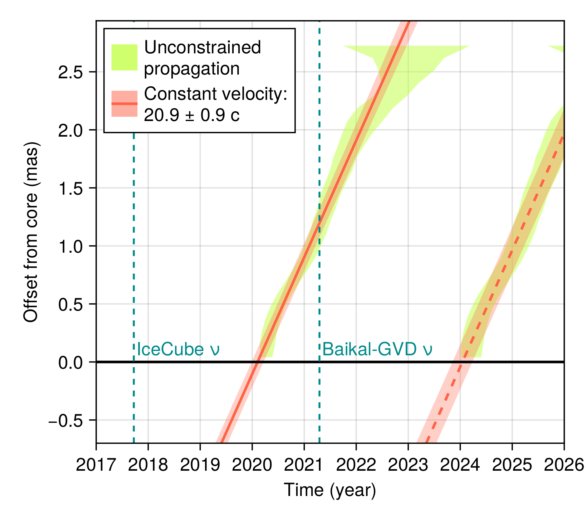<br />
图注：Propagation of two emission waves along the \(\txs\) jet at 15~GHz. The green shading shows the flare peak time at each core separation from the unconstrained-delay fit, see \(\autoref{f:wave_slices}\) for a subset of slices. The red lines represent a constant-velocity wave propagation, with the speed determined globally from the joint fit to the light curves at all core separations. The anchor point for the first ($\sim$2020, solid) and second ($\sim$2024, dashed) waves is set at each flare's peak. Vertical dashed lines mark the neutrino detections by IceCube and Baikal-GVD.<br />
对应解读：对应“成分角距离随时间图”“射电光变与中微子事件时间叠加图”以及模型拟合段落中对快速扰动传播速度和两次事件复现的讨论。<br />
入选理由：这是最直接支撑论文核心结论的图：用核心距离与耀发峰值时间的关系展示两次沿喷流传播的 emission wave，并用红线给出全局常速传播拟合。它最接近日报强调的验证快速扰动、传播时延和第二次中微子关联事件复现的关键证据，比单纯光变或示意图更具定量诊断价值。<br />
来源与置信度：\(arxiv_source\)；high；\(arxiv_source\) / 0506wave.tex:figure[4]</p>
<p><strong>Fig03</strong><br />
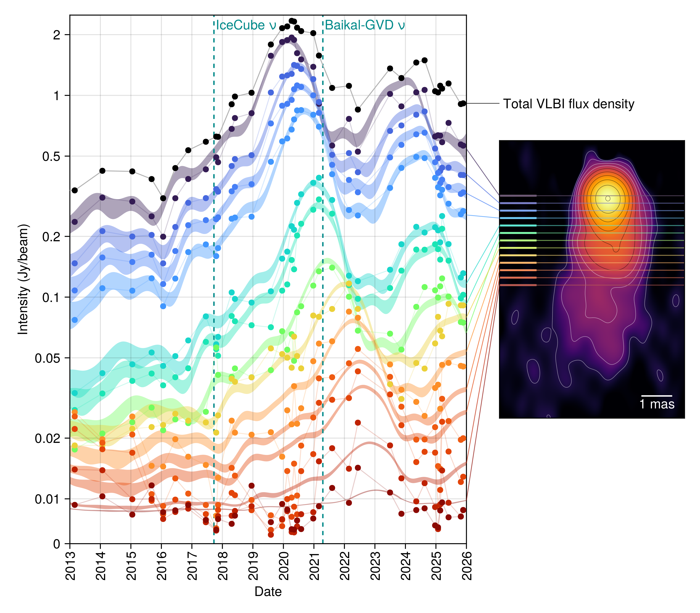<br />
图注：\(\textit{Left:}\) Stacked MOJAVE VLBA 15~GHz image of \(\txs\) with horizontal lines indicating jet slices perpendicular to the jet axis at different core separations. The color of the lines represents distance to the core at both panels. \(\textit{Right:}\) Stokes~I intensity light curves at 15~GHz for slices at different core separations, showing the progressive delay at the same radio frequency with distance along the jet. The total VLBI flux density is shown in black (in Jansky, same vertical scale). Dots are individual-epoch measurements; shaded bands show $1\sigma$ uncertainties of a Gaussian-process fit: the exact same function is fit to all light curves, with the time delay and amplitude scale being the only varying parameters. Dashed vertical lines mark the neutrino event times as in \(\autoref{f:mm_lc}.\)<br />
对应解读：对应“射电光变与中微子事件时间叠加图”和“VLBI 图像序列/结构变化”导读中关于不同核心距离处射电峰逐步延迟的检查。<br />
入选理由：该图把15 GHz VLBA堆叠图中的不同喷流切片与各切片的强度光变相连，直接显示同一频率下随距离增加的延迟。它能检验延迟射电耀发是否真沿喷流传播，而不是多波段光变中的偶然时间接近，是理解脊扰动照亮鞘层模型的重要观测基础。<br />
来源与置信度：\(arxiv_source\)；high；\(arxiv_source\) / 0506wave.tex:figure[3]</p>
<p><strong>Fig02</strong><br />
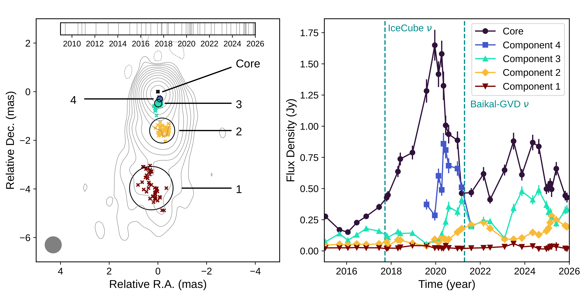<br />
图注：\(\textit{Left:}\) Stacked 15~GHz VLBA image of \(\txs.\) Component locations for all epochs are shown by x-shaped markers, while the average component positions and sizes are indicated by the black circles. Contours start at 0.41~mJy/beam and increase by factors of two. The restoring beam is shown as a grey circle at the half-power level. \(\textit{Right:}\) Light curves of model-fit components, showing a progressive delay of flare peaks with distance from the core.<br />
对应解读：对应“VLBI 图像序列”和模型拟合段落中关于核心、慢亮结、成分位置及不同距离处成分光变的讨论。<br />
入选理由：左图给出15 GHz VLBA堆叠图、各历元成分位置、平均成分尺寸和合成波束，适合检查成分分离与混叠问题；右图展示模型拟合成分光变峰值随核心距离的递进延迟。它对判断快扰动是否被慢亮结构掩盖以及成分识别是否可靠很关键。<br />
来源与置信度：\(arxiv_source\)；high；\(arxiv_source\) / 0506wave.tex:figure[2]</p>
<p><strong>Fig01</strong><br />
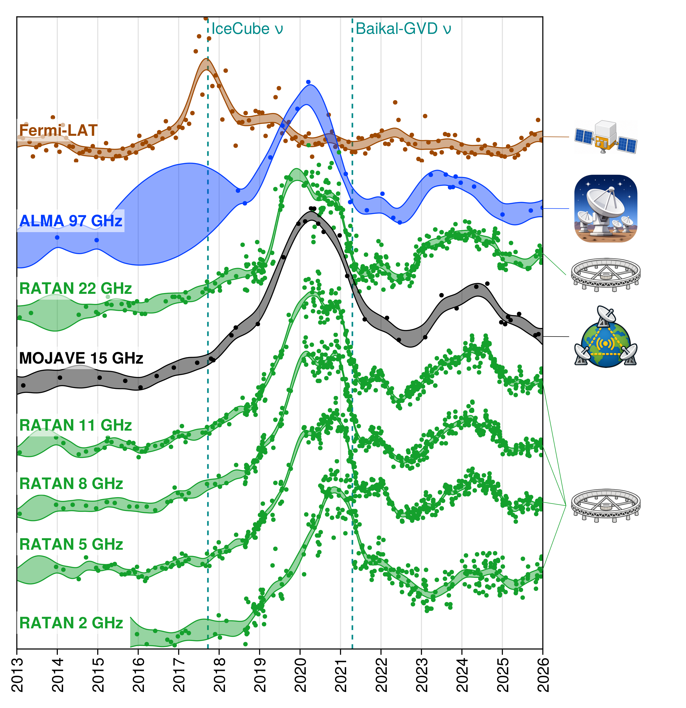<br />
图注：Multi-band light curves showing the temporal evolution from gamma-rays to radio frequencies. Individual measurements are shown as dots. Smooth shaded bands represent Gaussian-process fits with its $1\sigma$ uncertainty. Data uncertainties are discussed in \(\autoref{s:obs}\); they are omitted in the plot to avoid overcrowding, but accounted for in the fits. The vertical axis shows \(\fl\) photon flux or radio flux density. The light curves are vertically offset for clarity, so the scaling is arbitrary. Dashed vertical lines mark the arrival times of the IceCube (IC-170922A) and Baikal-GVD (GVD210418CA) neutrino events.<br />
对应解读：对应“射电光变与中微子事件时间叠加图”以及关键图表导读中关于中微子事件、伽马射线和射电活动先后顺序的讨论。<br />
入选理由：该图汇总伽马射线到射电的多波段光变，并用竖线标出 IceCube 与 Baikal-GVD 中微子事件，可用于检查中微子事件与后续射电增强之间的时间关系。不过它本身不提供空间传播信息，因此证据强度低于 Fig03 和 Fig04。<br />
来源与置信度：\(arxiv_source\)；high；\(arxiv_source\) / 0506wave.tex:figure[1]</p>
<p><strong>Fig05</strong><br />
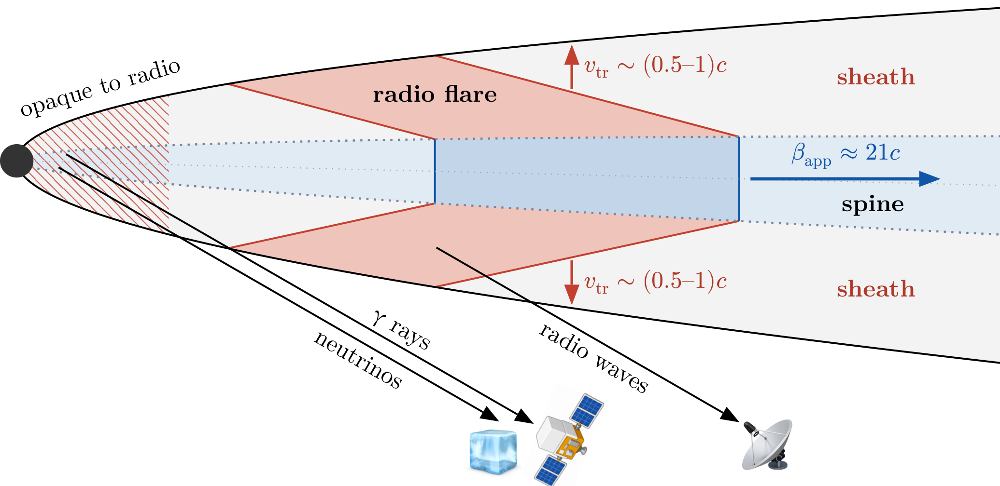<br />
图注：Schematic view of the stratified spine-sheath jet in the plane of the sky. A fast ultra-relativistic spine is surrounded by a slower outer sheath. A disturbance propagating along the spine triggers a transverse expansion of enhanced emission into the sheath, forming a conical brightening pattern moving downstream. The neutrino and gamma-ray flare originates near the jet base, while the radio flare peaks only after the disturbance has crossed the sheath, naturally producing the observed multi-year delay.<br />
对应解读：对应“喷流横向或结构化示意图”和关键图表导读中关于快脊—慢鞘模型假设的说明。<br />
入选理由：这是解释性示意图，清楚展示超相对论脊、较慢鞘层、近喷流基部中微子/伽马射线区以及延迟射电峰之间的几何关系。它有助于读者理解作者的物理图像，但不是独立观测证据，因此排序低于运动学和光变传播图。<br />
来源与置信度：\(arxiv_source\)；high；\(arxiv_source\) / 0506wave.tex:figure[5]</p>
<h4 id="_12">强相关工作</h4>
<p>这篇工作直接处在 TXS 0506+056 多信使研究链条上。必须与 IceCube 对 IceCube-170922A 的实时关联论文、2014--2015 年历史中微子超额论文、以及后续大量多波段建模论文一起读。相似工作包括用 VLBI 或射电监测寻找 IceCube 中微子候选源的统计关联、研究耀变体射电耀发相对中微子事件滞后的论文，以及 MOJAVE 等项目对 AGN 喷流表观速度分布的长期研究。建议检索关键词：TXS 0506+056 VLBI jet speed、IceCube-170922A multiwavelength、blazar neutrino radio flare delay、MOJAVE apparent speed neutrino blazar。</p>
<p>理论上，本文与结构化喷流、脊-鞘辐射耦合和强子耀变体模型相关。相反或有张力的观点包括：TXS 0506+056 的电磁辐射可由轻子模型解释而不要求高效中微子产生；部分统计研究认为单个耀变体-中微子关联的事后概率和试验因子需要谨慎处理；也有模型指出强子功率预算可能过高或与 \(\gamma\) 射线级联约束冲突。建议检索关键词：hadronic blazar model TXS 0506+056、p gamma cascade constraint、spine sheath blazar neutrino、IceCube blazar stacking limits。</p>
<p><strong>同一事件 / 同类源线索</strong>：</p>
<ul>
<li><a href="https://arxiv.org/abs/2606.27430">https://arxiv.org/abs/2606.27430</a></li>
<li><a href="https://arxiv.org/abs/1807.08794">https://arxiv.org/abs/1807.08794</a></li>
<li><a href="https://arxiv.org/abs/1807.08816">https://arxiv.org/abs/1807.08816</a></li>
<li><a href="https://icecube.wisc.edu/news/research/2018/07/multimessenger-observations-of-a-flaring-blazar-coincident-with-high-energy-neutrino-icecube-170922a/">https://icecube.wisc.edu/news/research/2018/07/multimessenger-observations-of-a-flaring-blazar-coincident-with-high-energy-neutrino-icecube-170922a/</a></li>
</ul>
<p><strong>相似工作</strong>：</p>
<ul>
<li><a href="https://arxiv.org/abs/2009.09792">https://arxiv.org/abs/2009.09792</a></li>
<li><a href="https://arxiv.org/abs/2001.00930">https://arxiv.org/abs/2001.00930</a></li>
<li><a href="https://www.physics.purdue.edu/MOJAVE/">https://www.physics.purdue.edu/MOJAVE/</a></li>
</ul>
<p><strong>基础理论 / 方法工作</strong>：</p>
<ul>
<li><a href="https://arxiv.org/abs/astro-ph/0412168">https://arxiv.org/abs/astro-ph/0412168</a></li>
<li><a href="https://arxiv.org/abs/0802.0591">https://arxiv.org/abs/0802.0591</a></li>
<li><a href="https://arxiv.org/abs/1609.04907">https://arxiv.org/abs/1609.04907</a></li>
</ul>
<p><strong>相反观点 / 张力线索</strong>：</p>
<ul>
<li><a href="https://arxiv.org/abs/1901.10806">https://arxiv.org/abs/1901.10806</a></li>
<li><a href="https://arxiv.org/abs/1909.08626">https://arxiv.org/abs/1909.08626</a></li>
<li><a href="https://arxiv.org/abs/2101.09836">https://arxiv.org/abs/2101.09836</a></li>
</ul>
</details>
<h3 id="2-parsec-scale-polarimetry-and-kinematics-of-a-spine-sheath-jet-in-the-neutrino-blazar-txs-0506056">2. Parsec-scale polarimetry and kinematics of a spine-sheath jet in the neutrino-blazar TXS 0506+056</h3>
<ul>
<li>来源：arXiv / astro-ph.HE</li>
<li>链接：https://arxiv.org/abs/2606.27435v1</li>
<li>作者：F. Eppel, P. Benke, C. Degli Agosti, J. L. Gómez, D. C. Homan, M. Kadler, Y. Y. Kovalev, M. L. Lister</li>
<li>评分：novelty 8/10，importance 8/10，relevance 10/10，final 9.70/10</li>
<li>推荐理由：对 IceCube 相关 blazar TXS 0506+056 进行长期 15 GHz 全偏振 VLBI 分析，给出 spine-sheath 结构、喷流成分抛射和中微子事件关联，是高能中微子/伽马 blazar 多信使方向的重点论文。</li>
</ul>
<p><strong>中文题目</strong>：中微子耀变体 TXS 0506+056 的秒差距尺度偏振与运动学：一条脊—鞘分层喷流</p>
<p><strong>做了什么</strong>：这篇论文用 2009–2025 年 VLBA 在 15 GHz 的全偏振 VLBI 监测数据，研究中微子候选耀变体 TXS 0506+056 的秒差距尺度喷流结构、运动学和偏振演化。作者发现喷流中的可辨认成分只有温和超光速运动，视速度约为 \((1-2)c\)，并存在两个准静止成分；一个新喷流成分的喷出时间与 2017 年 IceCube 高能中微子事件相近。叠加偏振图显示内层脊区的电矢量位置角与喷流方向近似平行，外层鞘区则近似垂直，符合分层脊—鞘喷流图像。论文的重要性在于，它把 TXS 0506+056 的中微子关联、延迟射电耀发、VLBI 成分运动和偏振结构放在同一物理框架下：相对论性快脊与较慢鞘层的相互作用可能增强强子过程或外部光子场，从而有利于中微子产生。</p>
<p><strong>为什么重要</strong>：TXS 0506+056 是少数被反复讨论为高能中微子天体源的耀变体之一，2017 年 IceCube-170922A 与其伽马射线高态的关联显著性虽不是决定性的发现级别，但足以成为多信使天体物理的基准案例。本文的价值不在于重新证明中微子关联，而在于检验喷流在事发前后是否出现了可观测的结构变化，并用偏振图像寻找能支持中微子辐射模型的几何证据。若脊—鞘结构真实存在，它可以缓解 TeV 耀变体中常见的“多普勒因子危机”：高能辐射模型要求很大的 \(\delta\)，而 VLBI 运动学却常只显示较小的 \(\beta_{\rm app}\)。</p>
<p><strong>理论 / 观测 / 仪器方法价值</strong>：对理论而言，论文给出了支持分层喷流模型的秒差距尺度偏振证据，使“快脊提供高能粒子、慢鞘提供靶光子或相对速度剪切”的中微子产生场景更可检验。对观测而言，它展示了长期全偏振 VLBI 监测如何把单次中微子事件、数年尺度射电光变和喷流成分喷出时间联系起来。对方法而言，文章强调不能只看总流量曲线，还要看偏振分布、\({\rm EVPA}\) 旋转、准静止特征和叠加图中的横向结构。</p>
<p><strong>为什么应该关注</strong>：如果你关心高能中微子来自哪里，这篇文章提供了一个比“某个耀变体在中微子事件时变亮”更有物理内容的判据：中微子候选源是否有分层喷流、层间相互作用和几何偏振耀发。如果你研究 VLBI 喷流，它提醒我们低视速度并不一定意味着喷流整体不相对论，而可能是快脊不可直接在射电中追踪、可见成分来自慢鞘或驻波区域。如果你做多信使统计，它也说明单源关联的后验解释必须和长期射电、偏振、运动学数据结合，否则容易高估或低估物理关联。</p>
<details class="paper-detail">
<summary>展开详细解读：文章讲解、背景、理论、重点章节、图表与相关工作</summary>
<h4 id="_13">文章详细讲解</h4>
<p>科学问题：TXS 0506+056 因 2017 年 IceCube 高能中微子事件 IceCube-170922A 及同期伽马射线高态而成为中微子耀变体原型候选之一。但中微子产生到底对应喷流中的哪种物理结构仍不清楚：是一次新成分喷出、核心区高能耀发、准静止激波、还是分层喷流中的脊—鞘相互作用？这篇论文要回答的核心问题是，在秒差距尺度上，TXS 0506+056 的喷流是否呈现能支持中微子产生模型的运动学和偏振结构，尤其是否存在脊—鞘分层。</p>
<p>作者怎么做：论文使用 2009–2025 年 VLBA 15 GHz 全偏振观测，覆盖中微子事件之前、事件附近以及随后数年延迟射电耀发的完整阶段。作者对总强度图像进行 VLBI 成分建模，追踪喷流特征随时间的角距离变化，以估计视速度和喷出历元；同时利用 Stokes \(I\)、\(Q\)、\(U\) 构造线偏振强度、偏振角和叠加偏振图，分析喷流横向 \({\rm EVPA}\) 结构以及准静止成分的偏振变化。这样的做法比单历元图像更有力，因为它能区分稳定几何结构、暂态耀发和模型拟合噪声。</p>
<p>关键结果：作者报告 TXS 0506+056 的可识别 VLBI 成分只有温和超光速运动，典型 \(\beta_{\rm app}\sim1-2\)，并有两个准静止成分。一个新成分的外推出核时间与 2017 年 IceCube 中微子事件同时或接近同时，这为“中微子事件与喷流扰动有关”提供了时序证据。更重要的是，叠加偏振图显示内层喷流的 \({\rm EVPA}\) 与喷流轴大致平行，而外侧鞘层的 \({\rm EVPA}\) 与喷流轴大致垂直；在光变中还出现线偏振耀发和准静止成分的 \({\rm EVPA}\) 旋转，作者将其解释为分层喷流不同区域的相互作用或几何变化。</p>
<p>局限和下一步：这类结论的主要限制是 VLBI 成分识别和喷出时间外推存在模型依赖，尤其在 15 GHz 下核心位置、混合成分和有限角分辨率会影响速度估计。偏振叠加图也可能受到不同历元喷流弯曲、光深变化、法拉第旋转和 \(n\pi\) 角度简并的影响，因此脊—鞘解释虽有吸引力，但不是唯一可能。下一步应结合多频 VLBI 做旋转量 \({\rm RM}\) 和光深诊断，使用更高频率提高核心区分辨率，并把偏振事件与伽马射线、中微子候选时间窗、射电谱指数演化放入联合时域模型中。</p>
<h4 id="_14">关键结果是怎么做出来的</h4>
<p>本文的证据链从长期 VLBA 数据开始。样本不是一次跟进观测，而是 2009–2025 年 15 GHz 全偏振监测，时间基线足够长，可以在 2017 年 IceCube-170922A 之前建立喷流的“常态”，在事件后追踪延迟射电耀发，并对喷流成分做线性或近似线性运动学拟合。核心数据产品包括总强度 VLBI 图、模型成分位置与流量、线偏振强度、分数偏振以及 \({\rm EVPA}\) 分布。</p>
<p>运动学结果的关键是将多个历元中可匹配的高亮度特征作为喷流成分，拟合其相对核心的角距离 \(r(t)\)。作者得到可识别移动成分的视速度约 \(\beta_{\rm app}\sim1-2\)，并识别出两个准静止成分。这里最值得检查的是喷流成分是否在各历元连续、是否存在成分混合、以及喷出历元的不确定度是否覆盖 2017 年中微子事件。论文声称一个新成分与 2017 年中微子事件同时喷出，因此支撑结论的应是成分距离—时间图及喷出时间置信区间，而不只是某一张漂亮图像。</p>
<p>偏振结果的证据链来自堆叠图和时间变化图。叠加多个历元可以提高低表面亮度鞘层的信噪比，并削弱单历元噪声，但也可能把真实随时间变化的结构平均化。作者发现内层脊的 \({\rm EVPA}\) 与喷流轴平行，而外侧鞘层的 \({\rm EVPA}\) 垂直于喷流轴，这正是分层喷流常用的观测判据之一。由于光学薄同步辐射中 \({\rm EVPA}\) 与投影磁场近似垂直，读者还需要注意论文讨论的是电矢量方向而非直接磁场方向。</p>
<p>统计显著性方面，摘要没有给出类似 \(p\) 值或贝叶斯因子的定量模型比较，因此本文更像是一篇“多证据一致性”论文，而不是严格的假设检验论文。其可信度主要来自三类相互独立的线索：中微子事件附近的新成分喷出、事后延迟射电耀发、以及偏振结构与脊—鞘模型一致。应重点查看作者是否对喷出历元误差、偏振角校准误差、核心移位、成分识别替代方案做了稳健性讨论。</p>
<p>系统误差方面，主要包括 VLBI 自校准对弱偏振结构的影响、\({\rm D}\)-term 偏振泄漏校正、绝对 \({\rm EVPA}\) 校准、有限波束导致的横向结构混合、以及在不同历元叠加前喷流坐标对齐的误差。若这些误差没有被充分量化，脊—鞘图像仍应看作强提示而非最终证明。最可靠的后续检验是多频偏振观测：若外层鞘具有不同 \({\rm RM}\)、谱指数或时延特征，则分层结构解释会显著增强。</p>
<details class="paper-subdetail">
<summary>展开背景、理论、公式、模型、章节和图表导读</summary>
<h4 id="_15">背景知识</h4>
<p>TXS 0506+056 是一个 BL Lac 型耀变体，喷流大致指向地球，因此多普勒增亮使其在射电、光学、\(\gamma\) 射线波段都很活跃。它之所以在多信使天体物理中突出，是因为 2017 年 9 月 IceCube 探测到高能中微子 IceCube-170922A 后，定位区域内的 TXS 0506+056 正处于高能活动期。后续研究还在 IceCube 历史数据中讨论过来自该方向的早期中微子过量，因此它成为“耀变体是否能产生高能中微子”的核心样本。</p>
<p>历史问题是，耀变体有强相对论喷流和高能辐射，但把中微子归因于耀变体并不容易。强子模型需要高能质子与光子或物质发生相互作用，产生带电介子并衰变为中微子；可是如果辐射区过于透明或靶光子密度不够，中微子产额会偏低。另一方面，若把参数调到足够高的质子功率或光子密度，又可能违反电磁级联辐射、X 射线或 \(\gamma\) 射线观测限制。</p>
<p>脊—鞘喷流模型因此受到关注。快脊可以承载高洛伦兹因子的粒子和强相对论性辐射，慢鞘在快脊参考系中会被相对论性增强，提供更高的外部光子密度；同时剪切层也可能促进粒子加速和磁场有序化。这种结构还可以解释一些 TeV BL Lac 的多普勒因子危机：谱能量分布建模要求大的 \(\delta\)，而 VLBI 测得的 \(\beta_{\rm app}\) 却不大。</p>
<p>现在值得重新看 TXS 0506+056，是因为 2017 年事件后的射电响应已经有足够长的时间基线。射电核心和秒差距喷流常常相对高能事件有月到年级延迟，因此只看事件当天的 VLBI 图像是不够的。2009–2025 年的全偏振监测让作者可以同时考察前史、事件期和后续演化，这对判断新成分喷出是否异常、偏振变化是否罕见很关键。</p>
<p>该领域常见误区之一是把 \({\rm EVPA}\) 图像直接等同于磁场图像。对光学薄同步辐射，电矢量方向与投影磁场方向垂直；对光学厚核心区，关系可能改变。另一个误区是把温和 \(\beta_{\rm app}\) 直接解读为喷流不相对论；实际上小视速度可由小视角、加速/减速、弯曲、可见特征并非流体本身、或快脊被慢鞘遮蔽等因素造成。</p>
<h4 id="_16">基础理论 / 方法脉络</h4>
<p>耀变体喷流的基本图像是，黑洞—吸积盘系统发射磁化等离子体流，等离子体以洛伦兹因子 \(\Gamma\) 沿接近视线方向运动。由于相对论性多普勒效应，观测到的流量、时间尺度和频率都会被多普勒因子 \(\delta\) 改写。VLBI 看到的“成分”通常是激波、压缩区、弯曲增强区或模式速度特征，不一定等于单个物质团块。</p>
<p>VLBI 运动学的关键量是视超光速速度 \(\beta_{\rm app}\)，它由真实速度 \(\beta c\) 和视角 \(\theta\) 决定。即使 \(\beta<1\)，由于光行时效应，投影到天球面的角速度可以对应 \(\beta_{\rm app}>1\)。因此 TXS 0506+056 中 \(\beta_{\rm app}\sim1-2\) 的成分意味着温和超光速模式，但不能单独排除更快的不可见脊层。</p>
<p>偏振诊断来自同步辐射。相对论电子在磁场中辐射线偏振，Stokes 参数 \(Q\) 与 \(U\) 给出线偏振强度和 \({\rm EVPA}\)。有序磁场、激波压缩、剪切层拉伸、湍流单元数变化都会改变分数偏振和 \({\rm EVPA}\)。脊—鞘结构中，横向速度剪切和磁场几何可能让中心与边缘呈现不同的 \({\rm EVPA}\) 方向，这是本文最核心的观测判据。</p>
<p>本文采用的物理假设可以概括为：15 GHz VLBI 能追踪秒差距尺度上与中微子事件相关的后续射电响应；模型成分的长期运动可用近似匀速外推估计喷出时间；叠加偏振图能揭示稳定的横向结构；偏振耀发和 \({\rm EVPA}\) 旋转反映几何或层间相互作用，而不仅是随机湍流。每个假设都合理，但都有替代解释，需要通过多历元、多频率和稳健性检验来约束。</p>
<p>主要退化关系包括 \(\Gamma\)、\(\theta\)、\(\delta\) 与 \(\beta_{\rm app}\) 的退化，偏振角中的 \(180^\circ\) 简并，法拉第旋转与本征 \({\rm EVPA}\) 的退化，以及成分识别与速度拟合之间的退化。选择效应也很重要：亮的射电成分更容易被跟踪，慢的驻波更容易在堆叠图中占主导，而快速、紧致、光学厚或高频才显著的脊区可能在 15 GHz 下被低估。</p>
<h4 id="_17">公式与推导</h4>
<p>第一步是相对论喷流的视运动。若喷流物质以速度 \(\beta c\) 与视线夹角 \(\theta\) 运动，光行时效应给出视超光速速度</p>
<div class="math-display">\[\beta_{\rm app}=\frac{\beta\sin\theta}{1-\beta\cos\theta}.\]</div>
<p>这里 \(\beta=v/c\)，\(\theta\) 是喷流轴与视线夹角。本文报告的 \(\beta_{\rm app}\sim1-2\) 描述的是 VLBI 可见模式速度，而不一定是快脊的流体速度。</p>
<p>第二步是多普勒因子，它控制辐射增亮和时间压缩：</p>
<div class="math-display">\[\delta=\frac{1}{\Gamma(1-\beta\cos\theta)},\qquad \Gamma=\frac{1}{\sqrt{1-\beta^2}}.\]</div>
<p>当 \(\theta\) 很小时，\(\beta_{\rm app}\) 可以不大但 \(\delta\) 仍可能较高，这正是多普勒因子危机和脊—鞘解释的数学基础。</p>
<p>第三步是把 VLBI 角运动转化为视速度。若成分相对核心的角距离随时间变化率为 \(\mu\)，源红移为 \(z\)，角直径距离为 \(D_{\rm A}\)，则</p>
<div class="math-display">\[\beta_{\rm app}=\frac{\mu D_{\rm A}(1+z)}{c}.\]</div>
<p>因子 \((1+z)\) 修正宇宙学时间膨胀。作者的运动学拟合本质上就是从 \(r(t)\) 的斜率得到 \(\mu\)，再换算为 \(\beta_{\rm app}\)。</p>
<p>第四步是喷出历元外推。对近似匀速成分，可写为</p>
<div class="math-display">\[r(t)=\mu(t-t_0),\]</div>
<p>其中 \(r(t)\) 是相对核心角距离，\(t_0\) 是成分与核心重合的外推时间。若 \(t_0\) 的置信区间覆盖 IceCube-170922A 的时间，就支持“成分喷出与中微子事件同现”的时序关联。</p>
<p>第五步是同步辐射谱。若电子能谱为 \(N(\gamma)\,d\gamma=K\gamma^{-p}d\gamma\)，光学薄同步辐射满足</p>
<div class="math-display">\[S_\nu\propto \delta^{3+\alpha}K B^{1+\alpha}\nu^{-\alpha},\qquad \alpha=\frac{p-1}{2}.\]</div>
<p>这里 \(B\) 是磁场强度，\(\alpha\) 是谱指数。偏振和总强度耀发可能来自 \(K\)、\(B\)、\(\delta\) 或几何投影的变化，单靠单频光变无法唯一分解。</p>
<p>第六步是线偏振观测量。由 Stokes 参数定义</p>
<div class="math-display">\[P=\sqrt{Q^2+U^2},\qquad m=\frac{P}{I},\qquad \chi=\frac{1}{2}\arctan\left(\frac{U}{Q}\right),\]</div>
<p>其中 \(P\) 是线偏振强度，\(m\) 是分数偏振，\(\chi\) 是 \({\rm EVPA}\)。本文的脊—鞘证据主要来自 \(\chi\) 在喷流横向上的系统变化。</p>
<p>第七步是本征偏振上限。光学薄、均匀磁场、幂律电子分布下，最大线偏振度约为</p>
<div class="math-display">\[\Pi_{\rm max}=\frac{p+1}{p+7/3}=\frac{\alpha+1}{\alpha+5/3}.\]</div>
<p>实际观测的 \(m\) 通常远小于 \(\Pi_{\rm max}\)，因为波束内磁场无序、多个子区叠加、光深和法拉第效应会去偏振。分数偏振耀发常意味着磁场暂时更有序或某个偏振子区占优。</p>
<p>第八步是法拉第旋转。若多频观测可用，观测 \({\rm EVPA}\) 与波长满足</p>
<div class="math-display">\[\chi(\lambda)=\chi_0+{\rm RM}\lambda^2.\]</div>
<p>本文主要基于 15 GHz 单频偏振，因此很难完全区分本征 \(\chi_0\) 变化与 \({\rm RM}\) 变化；这也是后续多频 VLBI 的关键必要性。</p>
<p>第九步是成分运动拟合的简化似然。若第 \(i\) 个历元测得角距离 \(r_i\) 和误差 \(\sigma_i\)，线性模型的高斯似然可写为</p>
<div class="math-display">\[\ln\mathcal{L}=-\frac{1}{2}\sum_i\left[\frac{(r_i-\mu(t_i-t_0))^2}{\sigma_i^2}+\ln(2\pi\sigma_i^2)\right].\]</div>
<p>这个式子说明喷出时间 \(t_0\) 的可信度取决于历元数、位置误差、成分识别稳定性和线性运动假设。</p>
<p>第十步是分层喷流的相对洛伦兹因子。若脊与鞘的洛伦兹因子分别为 \(\Gamma_{\rm s}\) 和 \(\Gamma_{\rm sh}\)，速度为 \(\beta_{\rm s}\) 和 \(\beta_{\rm sh}\)，相对运动强度近似由</p>
<div class="math-display">\[\Gamma_{\rm rel}=\Gamma_{\rm s}\Gamma_{\rm sh}(1-\beta_{\rm s}\beta_{\rm sh})\]</div>
<p>给出。较大的 \(\Gamma_{\rm rel}\) 会增强彼此看到的辐射能量密度，从而提高光强子相互作用或逆康普顿过程的效率，这是脊—鞘中微子模型的核心物理动机。</p>
<h4 id="_18">模型拟合 / 应用方法</h4>
<p>本文的模型拟合主要有两层：一是 VLBI 总强度结构的几何模型，二是偏振结构与分层喷流图像的物理解释。总强度部分通常会在 \(u\)-\(v\) 数据或成像平面中用若干高斯成分表示核心和喷流结点，拟合量包括每个成分的流量密度、相对位置、大小和可能的形状参数。随后把跨历元可识别的同一成分串联起来，拟合 \(r(t)\) 以得到 \(\mu\)、\(\beta_{\rm app}\) 和 \(t_0\)。</p>
<p>参数估计中最敏感的是成分识别。若两个高斯成分在某些历元混合，或一个真实弥散结构被不同历元分解成不同数量的高斯，速度和喷出时间都会偏移。因此读者应检查作者是否展示了成分识别图、位置误差、拟合残差，以及是否允许非径向运动或加速。对于 \(t_0\) 与 2017 年事件的关联，关键不是最佳拟合点是否接近，而是误差条多宽、是否有替代成分也能给出类似时间。</p>
<p>偏振拟合或解释则更偏诊断式。Stokes \(Q\) 和 \(U\) 的误差近似高斯，但由它们导出的 \(P\) 存在正偏差，低信噪比时需要去偏处理。\({\rm EVPA}\) 有 \(180^\circ\) 简并，跨历元旋转需要选择连续解，这可能引入人为路径。若论文声称准静止成分发生 \({\rm EVPA}\) 旋转，读者要看每个历元的偏振信噪比、角度误差、是否跨越 \(n\pi\) 边界，以及旋转是否与总强度或分数偏振耀发同步。</p>
<p>系统误差包括天线偏振泄漏校正、绝对 \({\rm EVPA}\) 校准、核心位置参考、波束卷积、动态范围限制和叠加图配准误差。脊—鞘结构尤其容易受有限横向分辨率影响：如果喷流宽度只有少数个波束，所谓边缘 \({\rm EVPA}\) 可能是中心强偏振区和弱边缘区卷积后的结果。稳健的检验应包括不同加权成像、不同历元子样本叠加、只使用高信噪比像素、以及检查偏振结构是否随波束方向改变。</p>
<p>实际应用上，这类拟合可以成为筛选中微子候选耀变体的工具。若某些源在中微子候选事件附近反复显示新成分喷出、准静止区偏振耀发、横向 \({\rm EVPA}\) 分层和延迟射电高态，就比单纯的 \(\gamma\) 射线同现更有物理指向性。但模型也可能失败：如果高能辐射来自亚秒差距核心内区，15 GHz VLBI 的秒差距结构只是后续传播结果；如果中微子事件本身是背景涨落，则所有射电关联都可能是事后选择偏差。因此需要源群体统计和预先定义的关联检验。</p>
<h4 id="_19">重点章节 / 结果段落怎么读</h4>
<p>数据与样本部分应首先读。重点看 VLBA 观测覆盖的历元数量、时间分布、是否包含 2017 年事件前后密集采样，以及全偏振校准流程。对本文结论来说，时间基线比单次灵敏度更关键，因为新成分喷出和延迟射电耀发都依赖长期追踪。</p>
<p>运动学分析部分是第二个重点。读者应查看作者如何定义核心、如何用高斯成分表示喷流、如何跨历元匹配成分，以及视速度 \(\beta_{\rm app}\) 和喷出时间 \(t_0\) 的误差如何估计。特别要关注与 2017 年 IceCube 事件同时的新成分，其距离—时间拟合是否稳健。</p>
<p>偏振结构部分是本文最有物理新意的段落。要看叠加偏振图如何制作，是否对齐核心，是否只纳入足够高信噪比的像素，以及内层脊和外层鞘的 \({\rm EVPA}\) 方向差异是否显著超过校准误差。还要区分 \({\rm EVPA}\) 与磁场方向，避免误读。</p>
<p>光变与偏振变化部分连接了几何和时域信息。重点看总强度、线偏振强度、分数偏振和 \({\rm EVPA}\) 随时间的曲线，尤其是准静止成分是否在射电耀发期出现系统偏振变化。若这些变化与新成分通过准静止区的时间一致，层间相互作用解释会更可信。</p>
<p>讨论部分应重点读作者如何把结果放入中微子产生模型和多普勒因子危机中。这里需要区分观测事实与解释：温和超光速、准静止成分和横向偏振分层是观测层面的结果；脊—鞘增强光强子相互作用、TXS 0506+056 是原型案例、其他中微子源也应有类似签名，则属于进一步物理推断。</p>
<h4 id="_20">建议重点查看的图表</h4>
<ol>
<li>
<p>长期 VLBA 总强度图序列：检查喷流是否稳定指向同一方向，新成分是否能从核心分离出来，以及 2017 年后结构是否明显变化。</p>
</li>
<li>
<p>成分距离—时间图：重点看各成分的角距离 \(r(t)\)、线性拟合斜率、\(t_0\) 外推误差，以及新成分喷出时间与 IceCube-170922A 的重合程度。</p>
</li>
<li>
<p>视速度或成分参数表：检查 \(\beta_{\rm app}\sim1-2\) 的误差范围、准静止成分的定义阈值、各成分流量和大小是否支持可靠跟踪。</p>
</li>
<li>
<p>叠加偏振图：看 Stokes \(I\) 等值线、偏振棒或 \({\rm EVPA}\) 色标在喷流横向上的变化，尤其中心脊与外层鞘的方向差异是否跨越多个独立波束。</p>
</li>
<li>
<p>分数偏振和线偏振光变曲线：检查偏振耀发是否与总强度耀发同步或滞后，是否集中在准静止成分而非核心校准伪影。</p>
</li>
<li>
<p>\({\rm EVPA}\) 随时间变化图：关注旋转是否连续、误差条是否小于旋转幅度、是否处理了 \(180^\circ\) 简并。</p>
</li>
<li>
<p>稳健性或附录诊断图：若有不同历元子集叠加、不同成像权重、残差图或偏振校准检查，应优先查看，因为它们决定脊—鞘结论是否抗系统误差。</p>
</li>
</ol>
<h4 id="_21">关键图表逐图导读</h4>
<p>图 1：通常应是 TXS 0506+056 的代表性 15 GHz VLBA 总强度与偏振图。横纵轴是相对核心的赤经和赤纬偏移，单位多为毫角秒；等值线表示 Stokes \(I\)，短棒或颜色表示线偏振方向和强度。读图时要看喷流主轴、核心亮度动态范围以及偏振是否只出现在高信噪比区域。陷阱是把核心区 \({\rm EVPA}\) 直接解释为光学薄磁场方向，核心可能有光深效应。</p>
<p>图 2：成分运动学图应以时间为横轴、相对核心角距离为纵轴，不同符号代表不同 VLBI 成分，直线给出匀速拟合。主要结论是可动成分的 \(\beta_{\rm app}\) 约为 \((1-2)c\)，并存在两个准静止结构。读者应关注线性拟合残差和喷出历元 \(t_0\) 的阴影区；若 2017 年中微子事件标成竖线，要看它是否落在新成分 \(t_0\) 的置信区间内，而不是只看视觉接近。</p>
<p>图 3：叠加偏振图应展示多年平均后的喷流横向结构。坐标轴仍是毫角秒尺度位置，背景或等值线为总强度，偏振棒显示 \({\rm EVPA}\)。本文最核心的视觉证据是中心脊区域的 \({\rm EVPA}\) 与喷流方向大致平行，外层鞘区域则大致垂直。读图陷阱是波束卷积会把窄喷流边缘混合；应检查图中是否标出合成波束，以及横向结构是否宽于一个波束。</p>
<p>图 4：总强度和偏振光变图应以观测时间为横轴，纵轴分别为核心或成分流量密度、线偏振强度、分数偏振。主要结论是 2017 年之后射电耀发延迟达到峰值，约在 2020 年附近，并伴随偏振变化。读者要区分全源单天线射电光变和 VLBI 分成分光变；后者能定位耀发来自核心、移动成分还是准静止区。</p>
<p>图 5：\({\rm EVPA}\) 旋转图或准静止成分偏振演化图应显示若干成分的偏振角随时间变化。若旋转与线偏振耀发同现，说明磁场几何或主导辐射子区发生变化。读图时要注意 \({\rm EVPA}\) 的 \(180^\circ\) 周期性：连续旋转可能依赖展开方式，误差条和采样间隔决定其可信度。</p>
<p>图 6：若论文含有脊—鞘示意图或模型比较图，应把它看作解释框架而非直接数据。坐标可能是喷流横截面、速度层或偏振方向。它帮助理解快脊、慢鞘、准静止激波和中微子产生区之间的关系，但不能替代对 VLBI 偏振图、运动学图和光变图的定量检查。</p>
</details>
<h4 id="_22">论文原图 / 可嵌入图片</h4>
<p><strong>Fig02</strong><br />
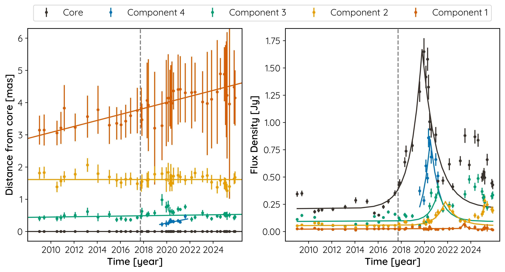<br />
图注：\(\textsl{Left:}\) Core separation vs. time for all modelfit components found in TXS\,0506+056. Components 2 and 3 are stationary while components 1 and 4 move at slightly superluminal speeds of 1$-$2\,c. Component 4 appears $\sim2$\,years after the neutrino alert IC170922A (grey dashed line). Its ejection time is consistent with the neutrino event. \(\textsl{Right:}\) Component light curves with exponential flare fits as described in Eq.\,\(\eqref{eq:flare}.\) The flare peak times show a significant delay between the components, with components further downstream flaring at later times, consistent with the flux density wave propagation reported by \(\cite{0506wave}.\) Here, the fits characterize the kinematic and variability properties of the individual components.<br />
对应解读：对应“建议重点查看的图表”第2项成分距离—时间图、第3项视速度/成分参数，以及“关键图表逐图导读”图2和模型拟合中关于 r(t)、β_app、t0 与 IceCube-170922A 的讨论。<br />
入选理由：这是支撑论文运动学结论的核心图：左图直接给出各 VLBI 成分相对核心距离随时间的演化、准静止成分与1–2c超光速成分的区分，并标出 IC170922A；右图还给出分成分光变和耀发延迟。它最直接检验新成分喷出时间是否与中微子事件相容，以及射电扰动是否沿喷流传播。<br />
来源与置信度：\(arxiv_source\)；high；\(arxiv_source\) / 0506kinematics.tex:figure[2]</p>
<p><strong>Fig04</strong><br />
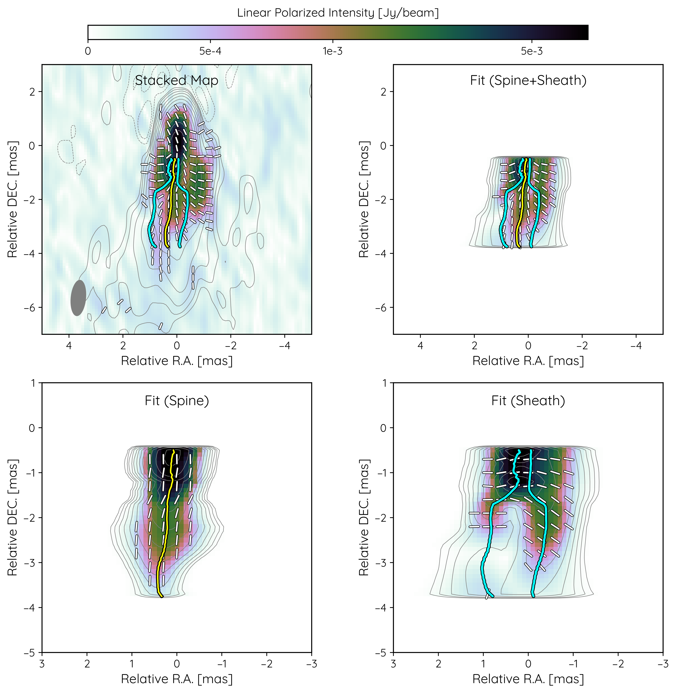<br />
图注：Stacked 15\,GHz polarization image compiled from all 43 VLBI observations from January 2009 to November 2025 (top left). The contours correspond to total intensity (cf. Fig.\,\(\ref{fig:stacked},\) left) and the color map displays linear polarized intensity with the EVPA direction indicated by the white lines. The structure was modeled with a spine-sheath configuration in full-polarization. The center position of the different jet layers is overplotted in cyan (sheath) and yellow (spine). The spine-sheath model image is shown in the top right plot. Separate spine and sheath plots are shown in the two bottom panels.<br />
对应解读：对应“建议重点查看的图表”第4项叠加偏振图、“关键图表逐图导读”图3，以及模型拟合中关于脊—鞘偏振结构和系统误差的讨论。<br />
入选理由：这是论文脊—鞘喷流解释的最关键视觉证据：多年15 GHz叠加偏振图同时显示 Stokes I 等值线、线偏振强度、EVPA 方向，并叠加了 spine/sheath 模型位置和分层模型图。它比单纯总强度图更能支撑中心脊与外层鞘 EVPA 差异这一主要物理结论。<br />
来源与置信度：\(arxiv_source\)；high；\(arxiv_source\) / 0506kinematics.tex:figure[4]</p>
<p><strong>Fig03</strong><br />
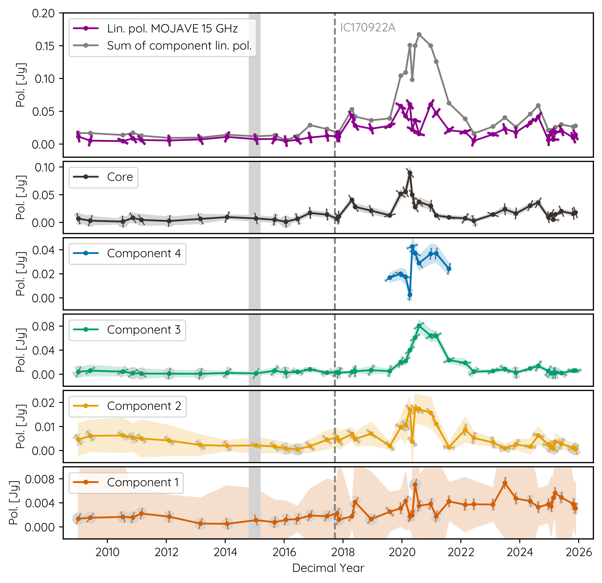<br />
图注：Light curves of linear-polarized intensity of the integrated image (top panel) and individual components (bottom five panels). The EVPA direction is indicated by the inclined lines plotted on top of the data points and its uncertainty indicated by the shaded gray area. The top panel additionally shows the algebraic sum of the linear polarization values of all components (gray dots). The time of IC170922A is highlighted by the dashed line and the time of the low-energy neutrino flare is highlighted by the gray area.<br />
对应解读：对应“建议重点查看的图表”第5项分数/线偏振光变曲线、第6项 EVPA 随时间变化图，以及“关键图表逐图导读”图5中准静止成分偏振演化和 EVPA 旋转的讨论。<br />
入选理由：该图逐成分展示线偏振强度光变，并用斜线和灰色阴影标出 EVPA 及其不确定度，同时标出 IC170922A 和低能中微子耀发时间窗。它能检验偏振耀发是否来自特定 VLBI 成分、EVPA 变化是否连续且显著，是连接分层喷流相互作用与时域偏振证据的重要图。<br />
来源与置信度：\(arxiv_source\)；high；\(arxiv_source\) / 0506kinematics.tex:figure[3]</p>
<p><strong>Fig05</strong><br />
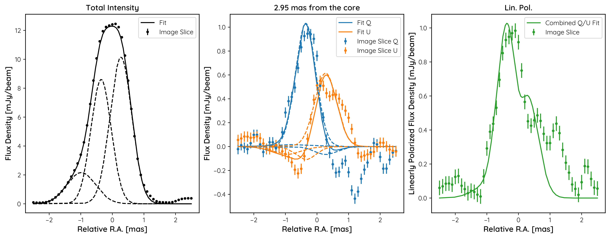<br />
图注：Exemplary slice fit in total intensity (left), Stokes Q and U (center), as well as linear polarized intensity (right), taken from the stacked image of TXS\,0506+056, 2.95\,mas South of the core component. The data points with error bars indicate the image slice data, while the dashed lines depict the individual Gauss fits of spine and sheath layers. The solid lines indicate the sum of spine- and sheath-fits.<br />
对应解读：对应“建议重点查看的图表”第7项稳健性或附录诊断图，以及模型拟合中关于 Stokes Q/U、线偏振、波束卷积和脊—鞘横向分解可靠性的讨论。<br />
入选理由：这张横向切片拟合图给出总强度、Stokes Q/U 和线偏振强度的带误差数据点，并显示 spine 与 sheath 的独立高斯分量及总和。它是判断脊—鞘模型是否只是视觉印象、还是能在横向偏振结构上被定量拟合支持的关键诊断图。<br />
来源与置信度：\(arxiv_source\)；high；\(arxiv_source\) / 0506kinematics.tex:figure[5]</p>
<p><strong>Fig01</strong><br />
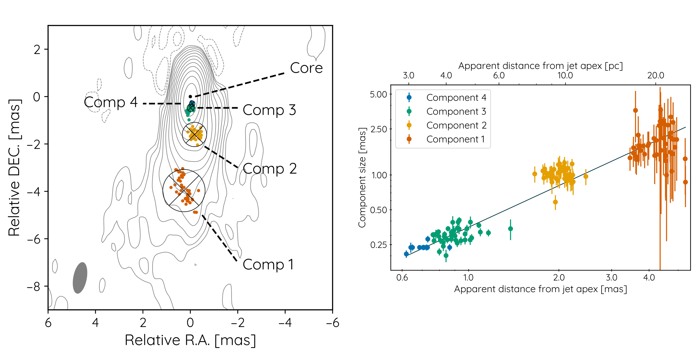<br />
图注：\(\textsl{Left:}\) Stacked total-intensity map of TXS\,0506+056, compiled from all 43 analyzed 15\,GHz VLBI images between January 2009 and November 2025. Before stacking, all images were aligned on the core component and restored with the median elliptical beam (1.35\,mas $\times$ 0.57\,mas, PA $-5.6^\circ$), displayed in the bottom left of the image. The contours start at 0.22\,mJy/beam, corresponding to five times the noise level of the stacked image and increase by factors of two. The dashed contours indicate negative intensity levels. The median modelfit components (position and size median) are plotted on top of the Stokes I contours in black, labeled with their ID. Individual component positions for every epoch are shown as dots. \(\textsl{Right:}\) Collimation profile of TXS\,0506+056 compiled from all resolved modelfit components of all 15\,GHz images.<br />
对应解读：对应“建议重点查看的图表”第1项长期 VLBA 总强度图序列/叠加结构，以及“关键图表逐图导读”图1中喷流主轴、成分位置、波束和动态范围的检查。<br />
入选理由：该图提供全43个历元叠加的15 GHz总强度结构、合成波束、等值线、负等值线、模型拟合成分中位位置和各历元位置散点，并给出准直轮廓。它为后续成分识别、运动学拟合和偏振结构解释提供几何基准。<br />
来源与置信度：\(arxiv_source\)；high；\(arxiv_source\) / 0506kinematics.tex:figure[1]</p>
<p><strong>Fig06</strong><br />
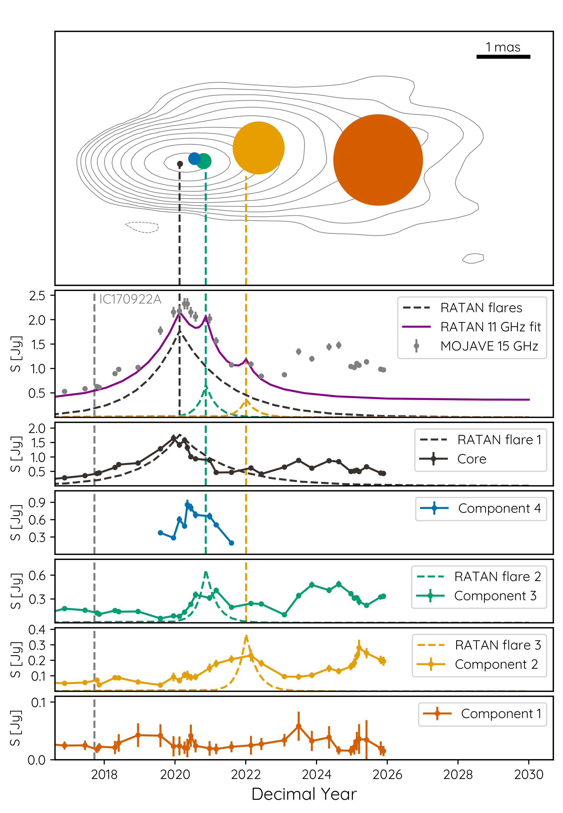<br />
图注：\(\textsl{Top panel:}\) Stacked total intensity contours of TXS\,0506+056 with median components from Tab.\,\(\ref{tab:average_comps}\) overplotted and rotated by 95\,$^\circ$ (counterclockwise) for better visualization. \(\textsl{Bottom panels:}\) Light curves of individual components (bottom five panels) and integrated total intensity light curve. The RATAN 11\,GHz fit and flare decomposition is taken from \(\cite{Baikal0506}.\) The peak time of the first flare was aligned with the core position in the upper panel, other times are mapped linearly by assuming the wave speed based on modelfit light curves \(\citep\)[$0.71$\,mas/yr, see][]{0506wave}.<br />
对应解读：对应“建议重点查看的图表”第5项总强度光变曲线、“关键图表逐图导读”图4，以及详细解读中关于2017年后射电耀发延迟至约2020年、扰动沿喷流传播的讨论。<br />
入选理由：该图把叠加总强度结构与分成分总强度光变、RATAN 11 GHz耀发分解和沿喷流传播时间映射结合起来，适合说明延迟射电耀发和下游成分响应。虽然不如 Fig02 和 Fig04 直接支撑核心结论，但能补充展示射电高态如何在不同成分间传播。<br />
来源与置信度：\(arxiv_source\)；high；\(arxiv_source\) / 0506kinematics.tex:figure[6]</p>
<h4 id="_23">强相关工作</h4>
<p>这篇论文与 IceCube-170922A 和 TXS 0506+056 的多信使研究直接相连。同一事件的关键文献包括 IceCube 及多波段合作对 2017 年中微子—耀变体关联的报道，以及后续对 TXS 0506+056 方向历史中微子过量的分析。检索关键词可用 “TXS 0506+056 IceCube-170922A multiwavelength”, “TXS 0506+056 neutrino flare archival IceCube”, “neutrino blazar VLBI polarization”。这些工作提供事件关联背景，但多数不直接给出本文这样长时间基线的秒差距偏振运动学分析。</p>
<p>在同类源和理论方面，相关工作包括耀变体脊—鞘结构的 VLBI 偏振研究、TeV BL Lac 多普勒因子危机、以及分层喷流中光强子中微子产生模型。检索关键词可用 “spine sheath jet neutrino blazar”, “Doppler crisis TeV blazars VLBI”, “parsec scale polarization spine sheath BL Lac”, “TXS 0506+056 structured jet hadronic model”。相反或张力方向的研究则包括：耀变体总体对 IceCube 弥散中微子背景贡献有限的统计约束、单源关联后验显著性偏低、以及纯轻子模型也可解释部分电磁耀发而不需要强中微子产额。</p>
<p><strong>同一事件 / 同类源线索</strong>：</p>
<ul>
<li><a href="https://arxiv.org/abs/2606.27435">https://arxiv.org/abs/2606.27435</a></li>
<li><a href="https://arxiv.org/pdf/2606.27435">https://arxiv.org/pdf/2606.27435</a></li>
<li><a href="https://arxiv.org/abs/1807.08794">https://arxiv.org/abs/1807.08794</a></li>
<li><a href="https://arxiv.org/abs/1807.08816">https://arxiv.org/abs/1807.08816</a></li>
</ul>
<p><strong>相似工作</strong>：</p>
<ul>
<li><a href="https://arxiv.org/abs/1807.08794">https://arxiv.org/abs/1807.08794</a></li>
<li><a href="https://arxiv.org/abs/1807.08816">https://arxiv.org/abs/1807.08816</a></li>
</ul>
<p><strong>基础理论 / 方法工作</strong>：</p>
<ul>
<li><a href="https://ui.adsabs.harvard.edu/abs/1979Natur.279..770B/abstract">https://ui.adsabs.harvard.edu/abs/1979Natur.279..770B/abstract</a></li>
<li><a href="https://ui.adsabs.harvard.edu/abs/1999ASPC..159..357L/abstract">https://ui.adsabs.harvard.edu/abs/1999ASPC..159..357L/abstract</a></li>
</ul>
<p><strong>相反观点 / 张力线索</strong>：</p>
<ul>
<li><a href="https://arxiv.org/abs/1611.03874">https://arxiv.org/abs/1611.03874</a></li>
<li><a href="https://arxiv.org/abs/1901.10806">https://arxiv.org/abs/1901.10806</a></li>
</ul>
</details>
<h3 id="3-discriminating-blazar-emission-models-with-high-energy-polarimetry-multi-band-predictions-and-detectability">3. Discriminating blazar emission models with high-energy polarimetry: Multi-band predictions and detectability</h3>
<ul>
<li>来源：arXiv / astro-ph.HE</li>
<li>链接：https://arxiv.org/abs/2606.27417v1</li>
<li>作者：Sara Capecchiacci, Ioannis Liodakis, Haocheng Zhang, Michela Negro, Jorge Otero-Santos</li>
<li>评分：novelty 8/10，importance 8/10，relevance 10/10，final 9.70/10</li>
<li>推荐理由：针对 gamma-ray blazar 样本给出软 X 射线到 GeV 伽马偏振预测，比较轻子、强子和混合模型并提出未来伽马偏振灵敏度需求，直接服务高能伽马喷流辐射机制判别。</li>
</ul>
<p><strong>中文题目</strong>：用高能偏振区分耀变体喷流辐射模型：多波段预测与可探测性</p>
<p><strong>做了什么</strong>：这篇文章问的是：如果未来把耀变体的偏振观测从光学和软 X 射线推到硬 X 射线、MeV 甚至 GeV，能否真正区分轻子、强子和混合辐射模型？作者选取 RoboPol 监测计划中的一套统计完备伽马射线耀变体样本，用 \(\texttt{Bjet\_MCMC}\) 对每个源做多波段谱能量分布拟合，再在不同高能偏振任务能段中预测通量、偏振度和最小可探测偏振度 \(\mathrm{MDP}\)。核心结论是：单一能段经常不够，但同步的 X 射线到伽马射线偏振观测能利用不同辐射机制的偏振度差异，把轻子、强子和混合情形分开；文章还反推出未来伽马射线偏振仪需要达到怎样的灵敏度，才能把可探测耀变体数量显著提高。</p>
<p><strong>为什么重要</strong>：耀变体的总光谱 \(\nu F_{\nu}\) 往往存在严重模型退化：电子同步辐射加逆康普顿、质子同步辐射、次级级联辐射都可能拟合同一个双峰谱。偏振是少数能直接触及磁场有序度、粒子辐射机制和喷流成分的观测量。本文的重要性在于它不是只讨论某一个明亮源，而是把统计样本、SED 拟合、仪器 \(\mathrm{MDP}\) 和盲巡天探测概率放在同一框架里，评估高能偏振学到底能解决哪些物理退化。</p>
<p><strong>理论 / 观测 / 仪器方法价值</strong>：对理论方面，文章给出不同发射场景在软 X 射线、硬 X 射线、MeV 和 GeV 的偏振预期，可直接检验喷流中电子、质子和级联成分的相对贡献。对观测方面，它把源通量和仪器灵敏度连接起来，告诉读者哪些源、哪些能段最值得排期。对仪器和任务设计方面，它把“需要更灵敏”具体化为对未来伽马射线偏振仪 \(\mathrm{MDP}\) 或有效面积、背景控制、曝光时间的要求。</p>
<p><strong>为什么应该关注</strong>：如果你关心耀变体喷流是否由轻子主导、强子是否携带大量能量、或者高能中微子候选源的伽马辐射是不是伴随强子过程，这篇文章给出的是一张可操作的路线图：该看哪些能段的偏振、需要多低的 \(\mathrm{MDP}\)、哪些源最可能给出区分性结果。即使你不做偏振观测，本文也提醒我们：只用 SED 拟合给出“最佳模型”很可能过度自信，偏振信息会改变模型比较的权重。</p>
<details class="paper-detail">
<summary>展开详细解读：文章讲解、背景、理论、重点章节、图表与相关工作</summary>
<h4 id="_24">文章详细讲解</h4>
<p>科学问题：耀变体的相对论喷流把辐射强烈束射到视线方向，形成从射电到伽马射线的双峰谱。低能峰通常由电子同步辐射解释，高能峰则可能来自电子逆康普顿散射，也可能来自质子同步辐射、光强子反应产生的次级粒子辐射，或几种机制的混合。问题在于，单靠总强度 SED，经常可以用不同粒子组成和磁场参数得到相似的拟合，因此无法可靠判断喷流是否强子占优、磁场是否高度有序、以及能量预算是否合理。</p>
<p>作者怎么做：本文以 RoboPol 监测计划中的统计完备伽马射线耀变体样本为基础，覆盖低同步峰、中同步峰和高同步峰耀变体。作者用 \(\texttt{Bjet\_MCMC}\) 对每个源的多波段 SED 进行拟合，从而得到在若干偏振任务能段中的预期通量，包括约 \(0.275\,\mathrm{keV}\)、\(2\text{--}8\,\mathrm{keV}\)、\(0.5\text{--}10\,\mathrm{keV}\)、\(6\text{--}35\,\mathrm{keV}\)、\(0.2\text{--}5\,\mathrm{MeV}\) 和 \(1\text{--}100\,\mathrm{GeV}\)。在此基础上，他们分别假设轻子、强子和混合模型，计算不同能段的偏振度，并用各类仪器的最小可探测偏振度 \(\mathrm{MDP}\) 评估能否探测。</p>
<p>关键结果：文章的主要物理信息是，不同模型在高能偏振上的差异比在总光谱上更难被“调参”抹平。轻子逆康普顿成分通常会稀释同步辐射偏振，强子同步辐射和某些级联成分则可能在 X 射线到 MeV 区间给出更高偏振度。混合模型在不同能段中会出现偏振度和偏振角的过渡行为。因此，真正有区分力的不是某一个孤立能段，而是同时比较软 X 射线、硬 X 射线和 MeV/GeV 偏振：如果高能峰各段的偏振度随能量变化与模型预测一致，就能显著缩小喷流组成和辐射机制的参数空间。</p>
<p>局限和下一步：本文的预测依赖于一套 SED 模型、样本选择、磁场几何和粒子分布假设；真实耀变体还具有快速时变、偏振角旋转、多区辐射和喷流湍动等复杂性。文章更像是高能偏振观测策略和任务灵敏度评估，而不是对某一个源的最终判决。下一步需要把同时多波段偏振、时域信息、光变相关性和更真实的多区辐射模拟结合起来，并在 IXPE 类 X 射线偏振观测及未来 MeV 偏振任务中检验这些可探测性预测。</p>
<h4 id="_25">关键结果是怎么做出来的</h4>
<p>样本方面，本文从 RoboPol 的伽马射线耀变体监测样本出发，而不是挑选少数已经被高能偏振观测过的特例。这个选择很重要，因为耀变体偏振具有强烈选择效应：明亮、高同步峰、处于耀发态的源更容易被偏振仪探测，但它们未必代表总体。RoboPol 样本包含低同步峰、中同步峰和高同步峰对象，使作者能够比较不同 SED 类型在各能段的高能偏振可探测性。</p>
<p>数据链条的第一步是 SED 拟合。作者用 \(\texttt{Bjet\_MCMC}\) 得到每个源在目标能段的通量预测。这里的关键不是只找到一个最佳拟合曲线，而是把模型参数的不确定性传播到能段通量上，因为 \(\mathrm{MDP}\) 对源计数率非常敏感。对于偏振探测来说，一个模型预测的偏振度 \(\Pi\) 再高，如果通量低到导致 \(\mathrm{MDP}>\Pi\)，实际观测仍然不能给出有用约束。</p>
<p>统计判断方面，文章使用仪器 \(\mathrm{MDP}\) 作为探测门槛，并进一步计算盲巡天中探测到某类源的概率。读者应注意 \(\mathrm{MDP}\) 不是“测量误差”等同物，而是在给定置信水平、源计数、背景计数和调制因子下，判断未偏振源随机涨落不会伪装成偏振信号的阈值。若模型预测 \(\Pi\) 明显高于 \(\mathrm{MDP}\)，才算有实际探测希望；若 \(\Pi\) 与 \(\mathrm{MDP}\) 相当，则模型区分会强烈依赖曝光时间、背景估计和系统误差。</p>
<p>支撑结论的图表应包括每个能段的源通量预测、各模型偏振度分布、\(\Pi\) 与 \(\mathrm{MDP}\) 的比较、以及未来任务灵敏度改变时可探测源数如何增长。最关键的证据链是：同一批源在相同 SED 约束下，不同辐射模型给出不同高能偏振度；这些差异在若干能段中大到超过预期 \(\mathrm{MDP}\)；并且多波段同步观测能避免把源的时变误认为模型差异。</p>
<p>主要系统误差来自几个层面。第一，SED 拟合可能受非同步数据影响，因为耀变体强变源的多波段档案数据常常不是同一时刻。第二，偏振预测依赖磁场有序度和辐射区几何；如果真实喷流是多区叠加，净偏振度会被矢量相消降低。第三，仪器 \(\mathrm{MDP}\) 估计需要背景、调制因子和有效面积模型，盲巡天还要考虑曝光不均匀。本文的稳健性价值在于把这些问题显式放入“可探测性”框架，而不是只展示理论偏振度。</p>
<details class="paper-subdetail">
<summary>展开背景、理论、公式、模型、章节和图表导读</summary>
<h4 id="_26">背景知识</h4>
<p>耀变体是活动星系核中喷流几乎指向观测者的一类源。相对论多普勒增亮使它们在伽马射线天空中极为突出，也使其光变、谱形和偏振都非常剧烈。典型 SED 有两个宽峰：低能峰从射电延伸到红外、光学、紫外或 X 射线；高能峰从 X 射线延伸到 MeV、GeV 甚至 TeV。按同步峰频率，常分为低同步峰、中同步峰和高同步峰耀变体。</p>
<p>历史上，低能峰由电子同步辐射解释相对稳固，因为它天然产生线偏振，并且与射电到光学偏振观测相符。高能峰的起源则长期存在争论。轻子模型认为高能辐射主要来自相同电子群对同步光子或外部光场的逆康普顿散射；强子模型认为质子同步辐射、光介子反应和电磁级联可贡献高能伽马射线。两者对喷流功率、磁场强度、粒子加速极限和中微子伴随辐射的要求差别很大。</p>
<p>为什么现在值得重新看？原因是 X 射线偏振天文学已经从概念走向实际观测，IXPE 等任务给出了若干耀变体的软 X 射线偏振约束；同时，MeV 天文学和伽马射线偏振任务正在成为下一代高能天文的重要方向。过去理论上“偏振能区分模型”的说法很多，但如果不结合真实源通量、样本统计和仪器 \(\mathrm{MDP}\)，很难判断这个想法是否可执行。</p>
<p>该领域常见误区之一是把高偏振度简单等同于强子模型。实际上，偏振度同时取决于磁场有序度、电子或质子能谱、辐射区数量、观测能段处各成分的相对通量，以及偏振角是否相互抵消。另一个误区是认为 SED 拟合已经足以确定模型；事实上，在非同步多波段数据和多参数模型中，SED 退化非常严重。第三个误区是忽略可探测性：理论曲线相差很大并不代表仪器能测到这种差异。</p>
<h4 id="_27">基础理论 / 方法脉络</h4>
<p>基本物理图像从同步辐射开始。相对论带电粒子在磁场中回旋并辐射，单个粒子的辐射本身具有偏振；若磁场在辐射区中有一定有序分量，许多粒子的叠加仍会留下非零线偏振。对于幂律电子分布，理想均匀磁场下的同步偏振度可很高；但真实喷流中的湍动、多区叠加和几何投影会降低观测到的净偏振。</p>
<p>高能峰的轻子解释通常是逆康普顿散射。相同电子群可以把同步光子升能，即同步自康普顿，也可以散射宽线区、尘埃环或吸积盘光子，即外康普顿。逆康普顿辐射也可以偏振，但偏振度通常受种子光场偏振、散射几何和电子角分布影响，很多情况下低于同步成分。因此，在轻子模型中，高能峰的偏振度和低能同步峰之间不是简单相等关系。</p>
<p>强子模型中，质子同步辐射需要很高的质子能量和较强磁场；光强子过程还会产生 \(\pi^{0}\)、\(\pi^{\pm}\)、中微子和次级电子正电子，继而触发级联辐射。这类模型往往需要更高喷流功率，但可自然联系高能中微子和极高能宇宙线问题。它们的偏振预期取决于质子同步成分和级联成分的相对贡献：前者可能保留较高偏振，后者则可能因级联和多代辐射而改变偏振谱。</p>
<p>本文采用的关键观测逻辑是：先用 SED 拟合确定各能段的通量尺度，再把不同辐射模型的偏振度预测与仪器 \(\mathrm{MDP}\) 比较。这里至少有三类退化需要注意：一是磁场强度 \(B\) 与多普勒因子 \(\delta\) 对峰频和通量的耦合；二是粒子密度与辐射区大小 \(R\) 对光度和自吸收的耦合；三是不同辐射成分在同一能段的通量叠加会稀释净偏振。偏振观测的价值就在于给这些退化增加一个矢量约束，而不只是标量光度约束。</p>
<h4 id="_28">公式与推导</h4>
<p>第一步，从相对论喷流的多普勒增亮出发。辐射区以洛伦兹因子 \(\Gamma\) 运动，视线夹角为 \(\theta\)，多普勒因子为</p>
<div class="math-display">\[\delta=\frac{1}{\Gamma\left(1-\beta\cos\theta\right)} .\]</div>
<p>这里 \(\beta c\) 是喷流速度。观测频率和共动系频率满足 \(\nu=\delta\nu'/(1+z)\)，观测通量通常按 \(F_{\nu}\propto \delta^{3+\alpha}F'_{\nu'}\) 增强，其中 \(\alpha\) 是谱指数。</p>
<p>第二步，对幂律粒子分布，设电子或质子数密度为</p>
<div class="math-display">\[N(\gamma)=K\gamma^{-p},\quad \gamma_{\min}<\gamma<\gamma_{\max} .\]</div>
<p>这里 \(K\) 是归一化，\(p\) 是能谱指数，\(\gamma\) 是粒子洛伦兹因子。同步辐射的特征频率近似为</p>
<div class="math-display">\[\nu_{\rm syn}\simeq \frac{3eB}{4\pi m c}\gamma^{2}\frac{\delta}{1+z} ,\]</div>
<p>其中 \(m\) 对电子同步取 \(m_{e}\)，对质子同步取 \(m_{p}\)。这说明同一观测频率若由质子同步产生，所需 \(\gamma\) 或 \(B\) 通常显著不同。</p>
<p>第三步，理想均匀磁场中幂律同步辐射的最大线偏振度为</p>
<div class="math-display">\[\Pi_{\rm syn,max}=\frac{p+1}{p+7/3} .\]</div>
<p>这给出偏振预测的物理上限。实际观测净偏振可写成</p>
<div class="math-display">\[\Pi_{\rm obs}\simeq f_{B}\,\Pi_{\rm syn,max},\]</div>
<p>其中 \(f_{B}\) 表示磁场有序度、多区相消和几何投影造成的折减因子。</p>
<p>第四步，高能轻子模型常用逆康普顿峰频的量级关系：在 Thomson 极限下，</p>
<div class="math-display">\[\nu_{\rm IC}\simeq \frac{4}{3}\gamma^{2}\nu_{\rm seed}\frac{\delta}{1+z} .\]</div>
<p>\(\nu_{\rm seed}\) 是种子光子频率。若进入 Klein--Nishina 区域，上式会失效，散射截面下降并改变谱形及偏振预期。</p>
<p>第五步，多成分叠加时偏振不是标量相加，而应使用 Stokes 参量。对第 \(i\) 个成分，</p>
<div class="math-display">\[Q_{i}=\Pi_{i}F_{i}\cos 2\chi_{i},\quad U_{i}=\Pi_{i}F_{i}\sin 2\chi_{i} ,\]</div>
<p>其中 \(F_{i}\) 是通量，\(\Pi_{i}\) 是偏振度，\(\chi_{i}\) 是偏振角。总偏振度为</p>
<div class="math-display">\[\Pi_{\rm tot}=\frac{\sqrt{\left(\sum_i Q_i\right)^2+\left(\sum_i U_i\right)^2}}{\sum_i F_i} .\]</div>
<p>这正是混合模型会出现偏振稀释和偏振角跃迁的原因。</p>
<p>第六步，偏振仪的统计灵敏度常用最小可探测偏振度表示。近似地，在给定置信水平下，</p>
<div class="math-display">\[\mathrm{MDP}=\frac{K_{\rm CL}}{\mu R_{S}}\sqrt{\frac{R_{S}+R_{B}}{T}} .\]</div>
<p>这里 \(\mu\) 是调制因子，\(R_{S}\) 是源计数率，\(R_{B}\) 是背景计数率，\(T\) 是曝光时间，\(K_{\rm CL}\) 对应所选置信水平。若 \(\Pi_{\rm model}>\mathrm{MDP}\)，该模型偏振信号才有被探测的统计希望。</p>
<p>第七步，从能量通量到计数率需要仪器响应。若能段为 \([E_{1},E_{2}]\)，则</p>
<div class="math-display">\[R_{S}=\int_{E_{1}}^{E_{2}} A_{\rm eff}(E)\,\phi(E)\,dE ,\]</div>
<p>其中 \(A_{\rm eff}(E)\) 是有效面积，\(\phi(E)\) 是光子通量谱。本文的可探测性判断本质上就是把 SED 拟合得到的 \(\phi(E)\) 通过类似响应关系转化为 \(R_{S}\)，再与 \(\mathrm{MDP}\) 比较。</p>
<p>第八步，模型比较可用预测偏振与测量偏振的似然表达。若某能段测得 \(\hat{\Pi}\) 且误差近似为 \(\sigma_{\Pi}\)，可写</p>
<div class="math-display">\[\ln \mathcal{L}_{M}=-\frac{1}{2}\sum_{j}\frac{\left[\hat{\Pi}_{j}-\Pi_{M,j}\right]^2}{\sigma_{\Pi,j}^{2}}+\mathrm{const} .\]</div>
<p>这里 \(M\) 表示轻子、强子或混合模型，\(j\) 表示能段。多能段联合偏振之所以强，是因为不同模型的 \(\Pi_{M,j}\) 随能量变化不同，联合似然能累积区分力。</p>
<h4 id="_29">模型拟合 / 应用方法</h4>
<p>本文的拟合链条首先是 SED 拟合。\(\texttt{Bjet\_MCMC}\) 用喷流辐射模型拟合多波段通量数据，给出磁场强度、辐射区大小、粒子分布参数、多普勒因子、外部光场或强子成分等参数的后验或近似不确定性。对读者来说，应关注的不是某个参数的单点最佳值，而是这些参数如何决定目标能段的光子通量，因为偏振探测门槛对通量非常敏感。</p>
<p>偏振预测可看成第二层模型。给定 SED 中各辐射成分在某能段的通量贡献，作者为轻子、强子和混合情形赋予相应偏振度，并通过成分叠加得到净偏振。这里最容易出现退化的是：低偏振可能意味着逆康普顿主导，也可能意味着多个同步辐射区偏振角相消；高偏振可能支持有序磁场和同步主导，但并不自动证明强子过程。</p>
<p>统计上，文章把模型预测与 \(\mathrm{MDP}\) 对比，评估每个源在每个能段能否被探测。实际应用时，最好把 \(\Pi\)、\(\mathrm{MDP}\)、源通量和曝光时间同时画出来；只列可探测源数会掩盖很多边界情况。若某源 \(\Pi\) 仅略高于 \(\mathrm{MDP}\)，系统误差、背景高估或源处于低态都可能让探测失败。</p>
<p>残差诊断方面，SED 拟合残差如果集中出现在 X 射线或 MeV 区间，会直接影响本文最关心的偏振预测，因为这些能段正是轻子、强子和混合成分最可能分叉的地方。若 X 射线谱由同步尾、逆康普顿低能端或级联辐射共同贡献，单区模型可能给出看似合理但物理上不唯一的分解。</p>
<p>模型可能失败的情形包括非同步数据导致的错误平均态、多区辐射导致的偏振矢量相消、耀发期间粒子分布快速演化、外部光场各向异性被简化、以及仪器背景模型不准确。本文的实际价值在于提供一套用于任务规划和观测策略的参数化框架；未来若有真实高能偏振数据，可把 \(\mathrm{MDP}\) 门槛式判断升级为完整的 Stokes 参量联合似然拟合。</p>
<h4 id="_30">重点章节 / 结果段落怎么读</h4>
<p>第一，样本和能段定义部分应优先阅读。这里说明 RoboPol 样本如何选取、包含哪些同步峰类型、以及为什么选择 \(0.275\,\mathrm{keV}\)、\(2\text{--}8\,\mathrm{keV}\)、\(0.5\text{--}10\,\mathrm{keV}\)、\(6\text{--}35\,\mathrm{keV}\)、\(0.2\text{--}5\,\mathrm{MeV}\) 和 \(1\text{--}100\,\mathrm{GeV}\) 等能段。读者要看这些能段分别对应哪些现有或未来偏振任务。</p>
<p>第二，SED 拟合方法部分是物理解释的入口。重点看 \(\texttt{Bjet\_MCMC}\) 使用哪些辐射成分、参数先验、数据处理和收敛诊断。尤其要注意多波段数据是否同步、不同耀变体类别是否使用相同建模假设，以及模型是否允许强子和混合成分。</p>
<p>第三，偏振模型部分是本文区分力的核心。读者应检查轻子、强子和混合模型的偏振度如何赋值或计算，是否考虑 Stokes 参量叠加、磁场有序度、偏振角差异和成分稀释。若该部分只依赖简化假设，结论应理解为可探测性预测而非唯一物理判决。</p>
<p>第四，探测概率和 \(\mathrm{MDP}\) 部分直接关系到仪器价值。建议细读作者如何处理源通量、背景、曝光、调制因子和盲巡天概率。这里能看出哪些源是稳健可探测，哪些只是边界可探测。</p>
<p>第五，讨论和未来灵敏度要求部分适合从任务设计角度阅读。看作者如何反推未来 MeV 或 GeV 偏振仪需要的灵敏度，以及多波段同时观测如何提升模型区分力。附录或稳健性检验若包含样本分组、参数扰动或不同任务假设，也应重点检查。</p>
<h4 id="_31">建议重点查看的图表</h4>
<ol>
<li>
<p>SED 拟合图：应检查每个代表性耀变体的多波段数据点、最佳拟合曲线以及轻子/强子/混合成分分解，尤其看 X 射线到 MeV 区间是否由不同模型给出不同成分。</p>
</li>
<li>
<p>各能段通量预测分布图：应看 \(0.275\,\mathrm{keV}\)、\(2\text{--}8\,\mathrm{keV}\)、\(6\text{--}35\,\mathrm{keV}\)、\(0.2\text{--}5\,\mathrm{MeV}\) 和 \(1\text{--}100\,\mathrm{GeV}\) 的源通量分布，判断探测限制主要来自通量还是偏振度。</p>
</li>
<li>
<p>偏振度随能量变化图：应比较轻子、强子和混合模型在同一源上的 \(\Pi(E)\) 曲线，看哪些能段模型差异最大、哪些能段差异被成分叠加稀释。</p>
</li>
<li>
<p>\(\Pi\) 与 \(\mathrm{MDP}\) 对比图：这是可探测性判断的关键。应看数据点是否系统高于 \(\mathrm{MDP}\) 线，而不是只看少数最亮源。</p>
</li>
<li>
<p>可探测源数或探测概率图：应检查随曝光时间、灵敏度改进或巡天深度变化，可探测源数如何增长；若增长很慢，说明未来任务受限于源通量或背景。</p>
</li>
<li>
<p>按耀变体类型分组的结果表：应比较低同步峰、中同步峰和高同步峰对象的可探测性差异，因为不同类别的高能峰位置不同，最佳偏振能段也不同。</p>
</li>
<li>
<p>系统误差或稳健性检验图：应看非同步数据、磁场有序度假设、背景水平和模型参数不确定性是否会改变模型区分结论。</p>
</li>
</ol>
<h4 id="_32">关键图表逐图导读</h4>
<p>图 1：若论文给出样本 SED 示例，横轴通常是频率或能量，纵轴是 \(\nu F_{\nu}\)。数据点代表历史或准同步多波段观测，模型线代表轻子、强子或混合拟合。读图重点是高能峰内部的成分分解，而不是只看总曲线是否穿过数据点。陷阱是不同模型的总 SED 可能几乎重合，因此不能把视觉上拟合好当作模型已被确定。</p>
<p>图 2：若展示各任务能段的通量预测，横轴可能是源名、同步峰类别或能段，纵轴是积分通量或能量通量。读者应看低同步峰和高同步峰源在 X 射线与 MeV 能段的分布是否不同。陷阱是通量高并不保证偏振可区分，因为若该能段由低偏振成分主导，\(\Pi\) 仍可能低于 \(\mathrm{MDP}\)。</p>
<p>图 3：偏振度随能量的模型比较图最关键。横轴是能量，纵轴是偏振度 \(\Pi\)，不同颜色或线型代表轻子、强子和混合模型。应检查模型曲线之间的间隔是否大于预期观测误差或 \(\mathrm{MDP}\)，并看是否存在能量区间中的交叉。陷阱是如果偏振角不同，单纯画 \(\Pi\) 可能隐藏 Stokes 参量相消问题。</p>
<p>图 4：\(\Pi\) 与 \(\mathrm{MDP}\) 的散点或柱状图应作为探测判据阅读。横轴可能是源或能段，纵轴是偏振度；水平线或阴影区表示仪器 \(\mathrm{MDP}\)。只有模型预测明显高于 \(\mathrm{MDP}\) 的源才算稳健候选。陷阱是 \(\mathrm{MDP}\) 依赖曝光和背景，不能无条件推广到另一种观测策略。</p>
<p>图 5：盲巡天探测概率或可探测源数图通常把灵敏度、曝光时间或 \(\mathrm{MDP}\) 改进因子放在横轴，把可探测源数量或概率放在纵轴。应看曲线是否存在阈值行为：当灵敏度提高到某一点后，可探测源数是否迅速增加。陷阱是统计样本外推可能受源计数分布和样本完备性限制。</p>
<p>图 6：如果有按源类别的汇总表或热图，横轴可为能段，纵轴为源类别或模型，颜色表示可探测比例或模型区分成功率。读者应从中找出最优观测组合，例如软 X 射线加 MeV 是否比单一软 X 射线更有效。陷阱是类别平均会掩盖单个高价值源，后续观测排期仍需逐源评估。</p>
</details>
<h4 id="_33">论文原图 / 可嵌入图片</h4>
<p><strong>Fig03</strong><br />
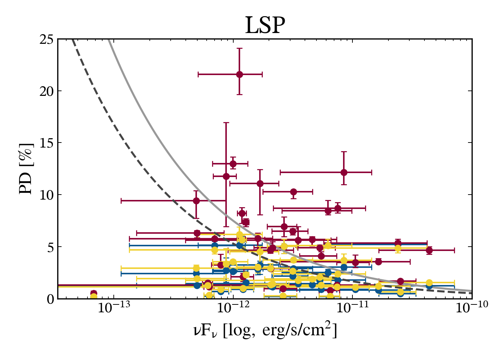<br />
图注：Predicted flux and PD for the LSP sources in the 0.5-10 keV band. The curves represent the MDP(99\%) of the eXTP instrument for two week exposures (solid light grey) and four week exposures (dashed dark grey). Blue points represent predictions from the leptonic model, yellow points from the hybrid model, and red points from the hadronic model. The sources that lie above the lines are detectable by eXTP.<br />
对应解读：“建议重点查看的图表”第4项“Π 与 MDP 对比图”，以及模型拟合段落中用 MDP 判断可探测性的核心步骤。<br />
入选理由：该图直接把预测通量与偏振度放在同一平面，并叠加 eXTP 在0.5--10 keV能段、两种曝光时间下的 MDP(99%) 曲线；哪些源位于 MDP 线上方一目了然，是判断偏振探测是否可行的最关键证据。相比只给出通量或偏振度的图，它同时体现了源亮度、模型偏振预测和仪器门槛。<br />
来源与置信度：\(arxiv_source\)；high；\(arxiv_source\) / aa60331-26.tex:figure[3]</p>
<p><strong>Fig05</strong><br />
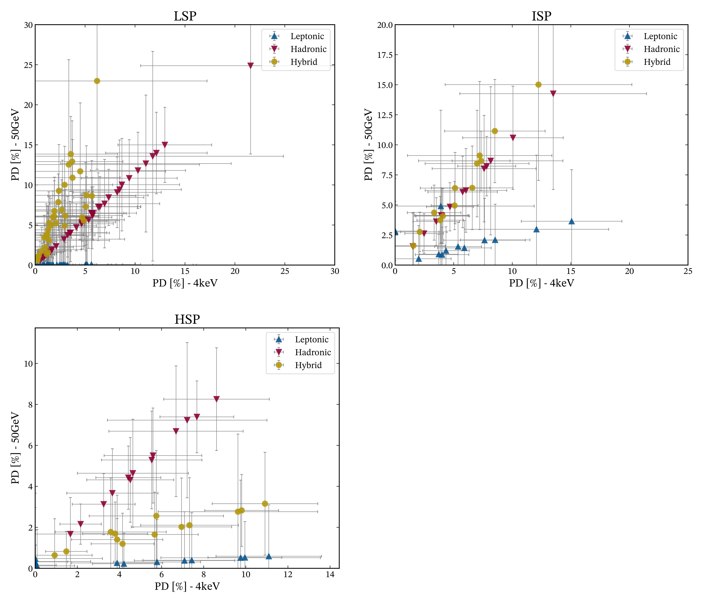<br />
图注：PD predictions in the 2-8 keV band and the 0.1-100 GeV band. Top to bottom: LSP, ISP, and HSP. Upward blue triangles represent the leptonic model, downward red triangles the hadronic one, and yellow circles the hybrid one. The three models give very distinct polarimetric predictions, especially for the HSP sources. Simultaneous observations of sources in these two bands allow us to discriminate between the different proposed emission scenarios.<br />
对应解读：“关键图表逐图导读”图3：偏振度随能段/模型变化的比较；也对应“建议重点查看的图表”第3项和第6项。<br />
入选理由：该图比较2--8 keV与0.1--100 GeV两个能段中 LSP、ISP、HSP 三类源的轻子、强子、混合模型偏振度预测，正好支撑日报关于“多波段同时观测可区分发射模型”的核心结论。它还展示了不同同步峰类别的差异，尤其强调 HSP 源中三种模型的偏振预测分离最明显。<br />
来源与置信度：\(arxiv_source\)；high；\(arxiv_source\) / aa60331-26.tex:figure[5]</p>
<p><strong>Fig01</strong><br />
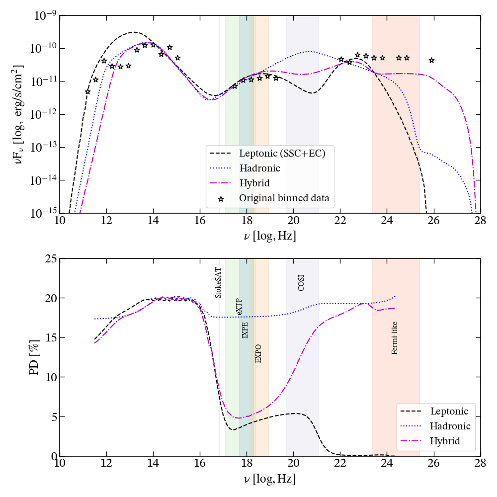<br />
图注：BL Lac model used as a reference for all our LSP sources. The upper panel shows the fitted SED obtained by applying the leptonic (dashed black line), hadronic (dotted blue line), and hybrid (dash-dotted magenta line) models, with the black stars representing the frequency-binned data. The lower panel shows the PD predicted by the three models. The shaded areas represent the observation bands of the considered instruments: from left to right, StokeSAT, eXTP, IXPE, EXPO, COSI, and a Fermi-like instrument.<br />
对应解读：“关键图表逐图导读”图1：SED拟合示例与偏振度随能量变化；也对应“建议重点查看的图表”第1项和第3项。<br />
入选理由：该图上半部分给出 BL Lac 作为 LSP 模板的多波段 SED 拟合，包含轻子、强子、混合三种模型线和频率分箱数据；下半部分给出三种模型的偏振度预测，并标出 StokeSAT、eXTP、IXPE、EXPO、COSI、Fermi-like 等观测能段。它最能说明为什么单靠总强度 SED 难以区分模型，而高能偏振曲线提供额外判别力。<br />
来源与置信度：\(arxiv_source\)；high；\(arxiv_source\) / aa60331-26.tex:figure[1]</p>
<p><strong>Fig02</strong><br />
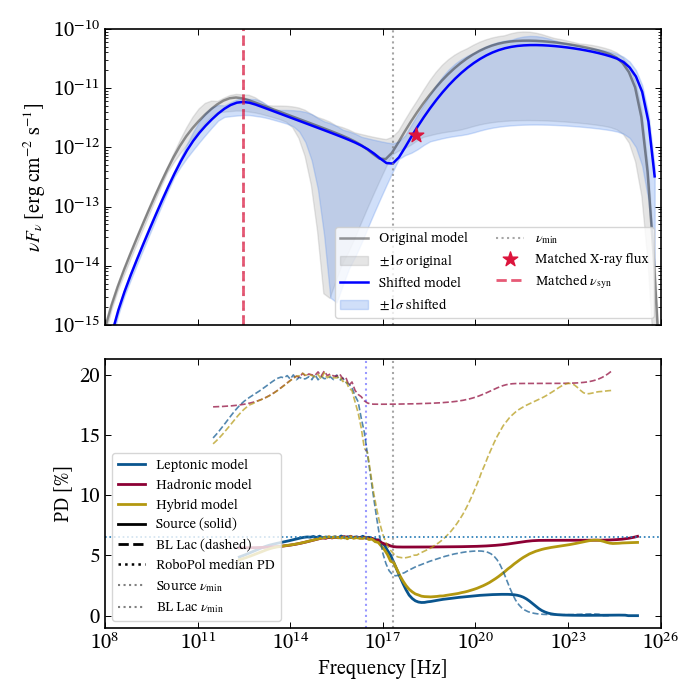<br />
图注：Example of the shift applied to our SED fit (upper panel) and polarisation models (lower panel). In the example, an LSP (J1635+3808). In the upper panel, the grey line represents the original fitted SED, and the blue line the shifted SED, matched with the synchrotron peak frequency of the source reported in the 4LAC catalogue (dashed crimson line) and the X-ray flux reported in the CAZ catalogue (crimson star). The shaded areas represent the $1 \sigma$ error on the fit. The vertical dotted grey line represents the minimum between the two peaks used to shift the polarisation model (see lower panel, where the vertical dotted blue line represents the one of BL Lac). In the lower panel, the solid lines represent the shifted polarisation model, while the dashed lines the template model. The horizontal dotted black line represents the median PD measured by Robopol for the source. The blue lines represent the leptonic model, the red ones the hadronic, and the yellow the hybrid.<br />
对应解读：模型拟合段落中关于 SED 模板平移、源间差异和稳健性/系统误差的讨论；也对应“建议重点查看的图表”第7项。<br />
入选理由：该图展示如何把参考 SED 与偏振模型平移到具体 LSP 源 J1635+3808，包括同步峰位置、X射线通量约束、1σ拟合不确定性以及偏振模型平移前后的差异。它有助于读者理解本文并非只使用单一模板，而是根据各源 SED 特征修正通量和偏振预测，同时也暴露了模型依赖和系统不确定性。<br />
来源与置信度：\(arxiv_source\)；high；\(arxiv_source\) / aa60331-26.tex:figure[2]</p>
<p><strong>Fig04</strong><br />
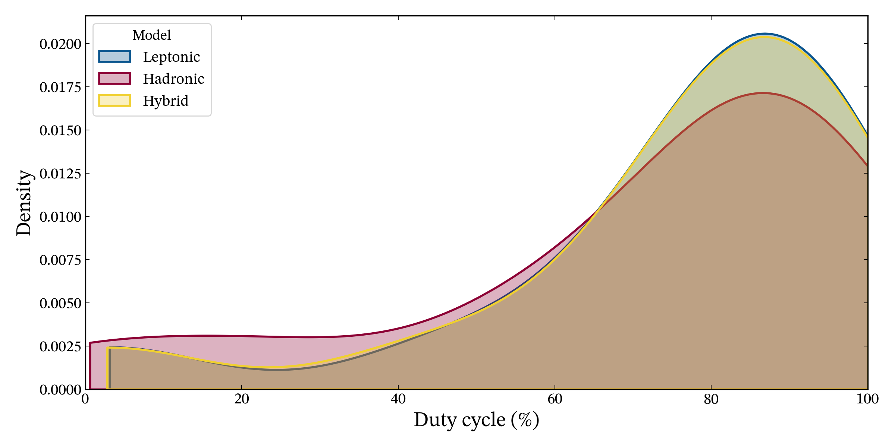<br />
图注：Kernel density distribution of the duty cycles for HSP sources in the 0.5-10 keV band (eXTP) for 28 day exposures. The blue curve represents the leptonic model, the red one the hadronic model, and the yellow one the hybrid model.<br />
对应解读：“建议重点查看的图表”第5项：可探测概率或 duty cycle 分布；对应日报中关于盲巡天探测概率的讨论。<br />
入选理由：该图给出 HSP 源在 eXTP 0.5--10 keV、28天曝光下的 duty cycle 核密度分布，并区分轻子、强子、混合模型。它比单个源的判定更接近巡天统计层面的可探测性评估，可用于判断不同模型下探测概率分布是否明显不同。<br />
来源与置信度：\(arxiv_source\)；high；\(arxiv_source\) / aa60331-26.tex:figure[4]</p>
<p><strong>Fig11</strong><br />
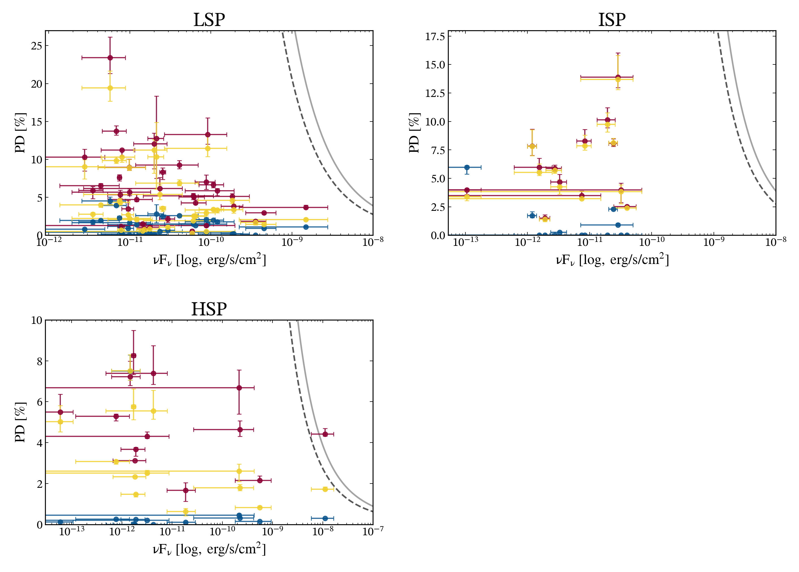<br />
图注：COSI band (0.2-5 MeV)<br />
对应解读：“建议重点查看的图表”第2项中0.2--5 MeV通量/偏振能段，以及第5项关于未来 MeV 偏振任务灵敏度需求的讨论。<br />
入选理由：COSI 的0.2--5 MeV能段是区分轻子、强子和混合模型的重要高能窗口，日报多次强调 X射线到 MeV 区间的成分分叉。尽管候选图标题信息较简略，但它是候选集中唯一明确对应 MeV 偏振任务能段的图，适合作为未来 MeV 探测能力和模型区分潜力的补充图。<br />
来源与置信度：\(arxiv_source\)；high；\(arxiv_source\) / aa60331-26.tex:figure[11]</p>
<h4 id="_34">强相关工作</h4>
<p>这篇工作属于“同类源统计预测”和“未来任务可探测性评估”，不是某一个命名耀变体的单源观测论文。应把它放在三条文献线索中理解：第一，RoboPol 及光学偏振监测给出的耀变体偏振统计；第二，IXPE 等 X 射线偏振任务对 Mrk 421、Mrk 501 等高同步峰耀变体的实际观测；第三，轻子、强子和 lepto-hadronic 喷流模型在 SED、偏振和中微子关联上的长期争论。检索关键词可用 “RoboPol blazar polarization complete sample”、“IXPE blazar X-ray polarization”、“hadronic blazar polarization”、“leptohadronic blazar SED MCMC”、“MeV gamma-ray polarimetry blazars”。</p>
<p>与相反观点或张力相关的是：一些 SED 研究认为轻子模型足以解释多数耀变体高能峰，且能量预算更经济；强子模型则在解释高偏振、高能中微子关联或极端 TeV 态时有吸引力，但常要求很大的喷流功率。本文并不直接解决所有这些张力，而是指出高能偏振能把争论转化为可观测判据。读者若要追踪同类工作，应重点检索“multi-zone blazar polarization”、“proton synchrotron polarization”、“inverse Compton polarization”、“minimum detectable polarization gamma-ray polarimeter”。</p>
<p><strong>同一事件 / 同类源线索</strong>：</p>
<ul>
<li><a href="https://arxiv.org/abs/2606.27417">https://arxiv.org/abs/2606.27417</a></li>
</ul>
<p><strong>相似工作</strong>：</p>
<p>（未提供）</p>
<p><strong>基础理论 / 方法工作</strong>：</p>
<ul>
<li><a href="https://ui.adsabs.harvard.edu/abs/1995PASP..107..803U/abstract">https://ui.adsabs.harvard.edu/abs/1995PASP..107..803U/abstract</a></li>
</ul>
<p><strong>相反观点 / 张力线索</strong>：</p>
<p>（未提供）</p>
</details>
<h3 id="4-a-model-for-magnetic-reconnection-as-the-origin-of-tev-outbursts-from-ngc-1275">4. A Model for Magnetic Reconnection as the Origin of TeV Outbursts from NGC 1275</h3>
<ul>
<li>来源：arXiv / astro-ph.HE</li>
<li>链接：https://arxiv.org/abs/2606.27680v1</li>
<li>作者：Zhen-Jie Wang, Hong-Bin Tan, Ruo-Yu Liu</li>
<li>评分：novelty 7/10，importance 8/10，relevance 10/10，final 9.40/10</li>
<li>推荐理由：直接针对 LHAASO 探测到的 NGC 1275 TeV 伽马暴发现象，建模磁重联、轻子/强子辐射通道及喷流-介质相互作用，是伽马射线天文和 TeV AGN 方向的高相关论文。</li>
</ul>
<p><strong>中文题目</strong>：磁重联能否解释 NGC 1275 的 TeV 爆发？一个喷流—环境相互作用模型</p>
<p><strong>做了什么</strong>：这篇文章讨论 NGC 1275 在 2022 年底至 2023 年初被 LHAASO 探测到的两次 TeV 伽马射线爆发。作者把时间线中的几个现象联系起来：TeV 活动、X 射线和 GeV 波段增强，以及 VLBI 看到的喷流结点突然加速和偏折。他们提出，秒差距尺度喷流与周围介质相互作用后触发磁重联，重联产生大量等离子体团，其中一个较大的“怪物 plasmoid”主导耀发辐射。低态辐射用多区随机耗散模型描述，耀发态再加入一个紧凑重联区。文章比较了轻子和强子两类解释：轻子模型中 X 射线主要来自电子同步辐射，TeV 主要来自逆康普顿散射；纯质子—质子模型也能做出 TeV 光子，但需要较高靶气体密度和较大质子功率。因此，磁重联是 NGC 1275 这次 TeV 活动的可行触发机制，但辐射通道仍需更好的气体密度、喷流功率和多波段时变约束来区分。</p>
<p><strong>为什么重要</strong>：NGC 1275 是距离较近的射电星系，也是高能伽马射线活动研究中的关键对象。若 TeV 爆发来自秒差距尺度喷流中的磁重联，而不是传统的一团式冲击加速区或黑洞附近极紧凑区，那么它会改变我们理解低功率活动星系核喷流耗散位置、粒子加速效率和环境介质作用的方式。</p>
<p><strong>理论 / 观测 / 仪器方法价值</strong>：这篇文章的价值不在于给出唯一答案，而在于把 VLBI 结构变化、X 射线/GeV/TeV 同时活动和辐射建模放到同一物理图像下。它提供了一个可计算框架：低态由多区随机耗散维持，耀发由重联 plasmoid 叠加，并明确指出轻子模型与强子模型各自需要的磁场、粒子能量密度、靶光子场、靶气体密度和喷流功率条件。</p>
<p><strong>为什么应该关注</strong>：如果你关心 TeV 活动星系核、射电星系喷流、磁重联加速或多信使高能天体物理，这篇文章值得看。它把 LHAASO 时代的新 TeV 观测与 VLBI 可分辨喷流动力学联系起来，提醒我们：TeV 爆发不一定只是在黑洞附近发生，也可能是喷流与环境介质相互作用后在 parsec 尺度上突然释放磁能。</p>
<details class="paper-detail">
<summary>展开详细解读：文章讲解、背景、理论、重点章节、图表与相关工作</summary>
<h4 id="_35">文章详细讲解</h4>
<p>科学问题：NGC 1275 在 2022 年 11 月到 2023 年 1 月出现两次 TeV \(\gamma\) 射线爆发，同时 X 射线和 GeV 波段也处于活跃状态。更有意思的是，VLBI 观测报告在主 TeV 活动之前，喷流中一个结点出现突然加速和偏折。这种时间顺序暗示高能爆发可能与喷流动力学扰动有关，而不只是一个孤立的辐射区亮度变化。本文要回答的是：喷流与外部介质相互作用是否能触发磁重联，并由重联产生的紧凑 plasmoid 解释 TeV 爆发？</p>
<p>作者怎么做：文章构造了一个两层模型。第一层是低态背景，用多区随机耗散成分表示喷流中持续存在的小尺度能量释放，这可以解释源平时的宽带谱能量分布。第二层是耀发成分，假设喷流—环境相互作用触发磁重联，重联层中形成许多 plasmoid，其中一个体积较大、速度和多普勒增强较有利的“monster plasmoid”成为主耀发区。作者分别计算轻子辐射和强子辐射版本，并与 2022—2023 年多波段状态相比较。</p>
<p>关键结果：轻子方案较自然地把增强的 X 射线解释为高能电子同步辐射，把 TeV 光子解释为电子对低能光子场的逆康普顿散射。这个方案的优点是辐射效率较高，所需能量预算相对可接受，也能与紧凑重联区中快速粒子加速相容。纯 \(p p\) 强子方案同样可以产生 TeV 光子，因为相对论质子与高密度冷气体碰撞后产生 \(\pi^0\)，再衰变为 \(\gamma\) 射线；但它需要比自由—自由吸收直接推断值更高的局部气体密度，并需要较大的质子注入功率。</p>
<p>局限和下一步：文章并没有声称排除强子解释，因为喷流冲击或重联附近的压缩可以让气体局部密度高于平均估计，云核也可能比自由—自由吸收给出的尺度平均密度更稠密。主要不确定性来自气体密度、耀发区大小、多普勒因子、靶光子场、质子功率以及 TeV 光谱在最高能端的误差。下一步需要更密集的 TeV 光变、同步 VLBI 运动学监测、毫米/亚毫米约束、X 射线光谱演化，以及对 NGC 1275 中心区冷气体和电离气体分布的更直接测量。</p>
<h4 id="_36">关键结果是怎么做出来的</h4>
<p>本文的证据链从事件选择开始：目标是 NGC 1275 在 2022 年 11 月到 2023 年 1 月的两次 TeV 爆发。作者并不是处理一个大样本统计问题，而是围绕一个有多波段和 VLBI 时间信息的单源事件建立物理解释。关键输入包括 LHAASO 的 TeV 探测、同期或近同期 X 射线和 GeV 活跃状态，以及晚 2022 年 VLBI 中喷流结点运动发生突变的报道。样本量意义上的“事件数”主要是两次 TeV outburst，而物理判别依靠宽带 \(\nu F_\nu\) 谱形、时间顺序和能量预算。</p>
<p>模型比较的核心不是简单的 \(\chi^2\) 最小值竞赛，而是问两类辐射通道在物理上是否自洽。轻子模型需要一群高能电子，其同步辐射延伸到 X 射线，同时逆康普顿分量进入 TeV。读者应检查该模型是否要求过低的磁场、过高的电子最大能量或不合理的多普勒因子。若模型在 X 射线和 TeV 同时增强时能维持合理能量密度比 \(U_e/U_B\)，它就比单纯调高归一化的经验模型更有说服力。</p>
<p>强子 \(p p\) 模型的关键检验量是靶气体密度和质子功率。TeV 光度近似由 \(p p\) 碰撞效率控制，而该效率与 \(n_{\rm H}\)、\(\sigma_{pp}\)、源区尺度和逃逸时间有关。文章指出，如果使用自由—自由吸收直接推断的平均气体密度，纯 \(p p\) 模型会偏吃力；若允许喷流压缩气体或存在更稠密云核，则仍不可排除。这一结论依赖表格中的最佳拟合参数和能量预算，而不是只看谱线能否穿过 TeV 数据点。</p>
<p>支撑结论的图表应包括低态与耀发态的宽带谱能量分布、多区随机耗散背景与紧凑重联区的分量分解、轻子和强子模型对 X 射线—GeV—TeV 区域的不同贡献，以及参数表中磁场、源区半径、多普勒因子、电子/质子功率和气体密度。稳健性检查应重点看：改变外部光子场或多普勒因子后 TeV 分量是否仍能成立；改变 \(n_{\rm H}\) 后 \(p p\) 模型的功率是否超过合理喷流功率；以及 \(\gamma\gamma\) 吸收是否会显著削弱 TeV 光子。</p>
<details class="paper-subdetail">
<summary>展开背景、理论、公式、模型、章节和图表导读</summary>
<h4 id="_37">背景知识</h4>
<p>NGC 1275 是 Perseus 星系团中心的活动星系核，对应射电源 3C 84。它距离近、喷流角尺度大、环境介质复杂，同时又能被 Fermi-LAT、MAGIC、VERITAS、LHAASO 等高能仪器观测到，因此是研究射电星系高能辐射的核心对象之一。与典型 blazar 不同，NGC 1275 的喷流视线夹角较大，多普勒增强较弱，这使得它的 TeV 爆发尤其值得关注：如果没有极端 beaming，局部加速和耗散机制必须足够有效。</p>
<p>历史上，活动星系核 TeV 辐射常被解释为喷流中相对论电子的同步自康普顿或外康普顿辐射。对于射电星系，还要考虑喷流准直区、结点、再加速区和外部介质的作用。NGC 1275 的环境很特殊：它位于星系团冷却流核心，周围有冷气体丝状结构、电离气体、分子气体和强烈的射电泡反馈。这些环境成分为喷流—云相互作用、冲击和磁重联提供了自然场景。</p>
<p>为什么现在值得重新看？一是 LHAASO 把 TeV 观测的能区和灵敏度推到新范围，使 NGC 1275 这类非典型 TeV 源的爆发更容易被捕捉。二是 VLBI 能够追踪 parsec 尺度喷流结点运动，若高能活动与结点加速、偏折或新成分出现有时间关联，就能把辐射区定位问题从纯谱拟合推进到动力学解释。三是磁重联在相对论喷流中的数值模拟已经相当成熟，plasmoid 层级结构、快速粒子加速和小尺度强多普勒增强都可被定量建模。</p>
<p>该领域常见误区有三个。第一，把 TeV 变亮直接等同于黑洞附近活动增强；实际上，parsec 尺度紧凑区只要尺寸足够小、多普勒因子合适，也能产生快速高能变化。第二，把谱能量分布拟合穿过数据点就当作机制判别；实际上轻子、强子和混合模型常有强退化，能量预算和环境条件同样重要。第三，认为自由—自由吸收给出的气体密度就是重联区或碰撞区的真实局部密度；它更像是视线和尺度平均约束，不能直接排除小体积高密度云核。</p>
<h4 id="_38">基础理论 / 方法脉络</h4>
<p>基本物理图像是：相对论喷流携带动能和磁能向外传播，当它遇到外部介质、云团或压力梯度时，流线会弯折，局部剪切和磁场反向结构可能增强。如果磁场中存在反平行分量，电阻或等离子体动力学效应会让磁拓扑重连，磁能转化为粒子非热能、湍动和 bulk 运动能。相对论磁重联中常形成多尺度 plasmoid，少数大 plasmoid 可占据较多能量并成为强耀发区。</p>
<p>轻子辐射的核心是高能电子。电子在磁场中产生同步辐射，特征频率随电子洛伦兹因子 \(\gamma_e\) 的平方和磁场 \(B\) 增大；同一批电子还可把同步光子或外部光子逆康普顿散射到 GeV—TeV 能段。若 X 射线与 TeV 同时增强，常见解释是电子分布高能端增强，或者局部磁场、辐射场和多普勒因子发生变化。</p>
<p>强子辐射的核心是相对论质子。若喷流中的高能质子撞上足够稠密的冷气体，\(p p\) 碰撞会产生带电和中性介子，其中 \(\pi^0\) 衰变给出 \(\gamma\) 射线，带电介子链还能给出中微子和次级电子正电子。该模型对靶气体密度 \(n_{\rm H}\) 极其敏感：密度低时 \(p p\) 冷却时间很长，需要非常大的质子能量储备才能解释短时 TeV 光度。</p>
<p>本文的观测/统计逻辑是把多波段谱能量分布作为约束对象，而不是只拟合单一能段。低态成分提供基线，耀发成分只负责活动期额外辐射。需要同时避免几个系统误差：非同时数据混合可能造成假谱形；不同仪器交叉定标会影响 \(\nu F_\nu\) 归一化；TeV 光子可能受 \(\gamma\gamma\) 吸收和 EBL 吸收影响；VLBI 结点与高能辐射区的空间对应也不是直接成像证明，而是基于时间和物理关联的推断。</p>
<h4 id="_39">公式与推导</h4>
<p>第一步从相对论喷流中可用的磁能密度开始。若耀发区共动系磁场为 \(B'\)，磁能密度为</p>
<div class="math-display">\[U'_B=\frac{B'^2}{8\pi}.\]</div>
<p>这里撇号表示共动系。磁重联模型的基本要求是，耀发辐射能量不能长期超过重联区可释放的磁能和注入功率。</p>
<p>第二步定义磁化程度。对冷等离子体，可写作</p>
<div class="math-display">\[\sigma=\frac{B'^2}{4\pi w'},\]</div>
<p>其中 \(w'\) 是共动系焓密度。较大的 \(\sigma\) 意味着磁能相对物质能更重要，相对论重联更容易产生快速 plasmoid 和硬的非热粒子谱。</p>
<p>第三步估计耀发区大小。若观测到变化时间为 \(t_{\rm var}\)，多普勒因子为 \(\delta\)，红移为 \(z\)，因果尺度满足</p>
<div class="math-display">\[R'\lesssim \frac{c\,t_{\rm var}\,\delta}{1+z}.\]</div>
<p>这个式子用于判断 parsec 尺度上的局部 plasmoid 是否仍可足够紧凑，从而解释 TeV 活动的时间尺度。</p>
<p>第四步写出非热粒子注入的常用参数化形式。电子或质子注入可近似为</p>
<div class="math-display">\[Q_i'(\gamma_i)=Q_{0,i}\gamma_i^{-p_i}\exp\left(-\frac{\gamma_i}{\gamma_{i,\max}}\right),\]</div>
<p>其中 \(i=e,p\)，\(p_i\) 是谱指数，\(\gamma_{i,\max}\) 是最大洛伦兹因子。重联加速常可给出较硬的 \(p_i\)，但最终谱还受冷却和逃逸控制。</p>
<p>第五步，同步辐射特征频率为</p>
<div class="math-display">\[\nu_{\rm syn}\simeq \frac{\delta}{1+z}\frac{3eB'}{4\pi m_e c}\gamma_e^2.\]</div>
<p>若 X 射线来自电子同步辐射，这个关系直接约束 \(B'\) 与产生 X 射线的 \(\gamma_e\)。磁场越弱，需要的电子能量越高。</p>
<p>第六步，逆康普顿散射在 Thomson 近似下给出</p>
<div class="math-display">\[E_{\rm IC}\simeq \frac{\delta}{1+z}\frac{4}{3}\gamma_e^2\epsilon'_{\rm seed}.\]</div>
<p>其中 \(\epsilon'_{\rm seed}\) 是共动系种子光子能量。对 TeV 光子，需要检查散射是否进入 Klein-Nishina 区；若进入，截面下降，TeV 通量会被压低。</p>
<p>第七步，纯 \(p p\) 方案的冷却时间可估计为</p>
<div class="math-display">\[t'_{pp}\simeq \frac{1}{\kappa_{pp}\sigma_{pp}n'_{\rm H}c},\]</div>
<p>其中 \(\sigma_{pp}\) 是非弹性碰撞截面，\(\kappa_{pp}\) 是非弹性能量损失比例，\(n'_{\rm H}\) 是靶气体密度。若 \(n'_{\rm H}\) 不够高，\(t'_{pp}\) 会远长于耀发时间，要求很大的质子能量库。</p>
<p>第八步，\(p p\) 伽马射线光度可粗略写成</p>
<div class="math-display">\[L_\gamma\sim f_{pp}\,\eta_\gamma L_p,\qquad f_{pp}\simeq \min\left(1,\frac{t'_{\rm esc}}{t'_{pp}}\right),\]</div>
<p>其中 \(L_p\) 是质子功率，\(\eta_\gamma\) 是进入 \(\gamma\) 射线的能量比例，\(t'_{\rm esc}\) 是逃逸时间。本文关于强子模型“要求苛刻”的判断正来自 \(n'_{\rm H}\)、\(f_{pp}\) 和 \(L_p\) 的联动。</p>
<p>第九步，多波段谱拟合通常比较模型通量和观测通量，可用</p>
<div class="math-display">\[\chi^2=\sum_k \frac{\left[F_{\nu,k}^{\rm obs}-F_{\nu,k}^{\rm mod}(\boldsymbol{\theta})\right]^2}{\sigma_k^2}\]</div>
<p>作为诊断量，其中 \(\boldsymbol{\theta}\) 包含 \(B'\)、\(R'\)、\(\delta\)、粒子谱参数和气体密度等。即便文章主要强调物理可行性，读者也应以残差、能量预算和参数合理性共同判断模型优劣。</p>
<h4 id="_40">模型拟合 / 应用方法</h4>
<p>这类工作拟合的核心对象是宽带谱能量分布 \(\nu F_\nu\)，通常包括射电、红外/光学、X 射线、GeV 和 TeV 数据。本文采用“低态背景加耀发区”的思路：低态多区随机耗散成分先解释源的常态辐射，耀发期再加入一个紧凑重联 plasmoid。这样做的好处是不会把长期存在的射电—GeV 基线错误归因于瞬时耀发区。</p>
<p>轻子模型中的主要参数包括共动磁场 \(B'\)、源区半径 \(R'\)、多普勒因子 \(\delta\)、电子谱指数、电子最小/最大能量、电子注入功率和种子光子场。最重要的退化是 \(B'\) 与电子能量密度之间的退化：提高 \(B'\) 可增强同步辐射，但可能降低逆康普顿相对强度；降低 \(B'\) 则可能需要更高 \(\gamma_{e,\max}\) 来做出 X 射线同步辐射。另一个退化是 \(\delta\) 与本征光度、尺寸约束之间的退化。</p>
<p>强子 \(p p\) 模型中的关键参数是质子谱、质子功率 \(L_p\)、靶气体密度 \(n_{\rm H}\)、碰撞区大小和逃逸时间。这里的残差诊断不能只看 TeV 数据点是否拟合好，还要看所需 \(L_p\) 是否超过合理喷流功率，\(n_{\rm H}\) 是否与自由—自由吸收、电离气体或分子气体观测矛盾，以及次级电子产生的同步/级联辐射是否会过量贡献 X 射线或 GeV 波段。</p>
<p>系统误差主要来自四类。第一，数据非同时性会导致谱能量分布中的低能和高能点不属于同一物理状态。第二，TeV 观测的能量刻度、背景扣除和 EBL 校正会影响最高能端斜率。第三，VLBI 结点运动与辐射区的对应关系存在投影和时延不确定性。第四，气体密度约束是强子模型的瓶颈，自由—自由吸收测得的是某种视线平均量，而 \(p p\) 辐射需要的是与高能质子实际共处的局部密度。</p>
<h4 id="_41">重点章节 / 结果段落怎么读</h4>
<ol>
<li>
<p>引言和观测动机：应重点看作者如何排列 2022—2023 年 TeV 活动、X 射线/GeV 增强和 VLBI 结点加速偏折的时间顺序。这部分决定了为什么要讨论喷流—环境相互作用和磁重联，而不是普通单区耀发。</p>
</li>
<li>
<p>物理图像与模型设定：这里应检查重联区的位置、大小、多普勒因子和 plasmoid 假设。重点不是“monster plasmoid”这个名称，而是它是否能在 parsec 尺度上同时满足因果尺度、能量预算和辐射效率。</p>
</li>
<li>
<p>低态多区随机耗散模型：读者要看低态背景如何被固定。如果低态成分过度自由，就可能吸收掉耀发模型的失败；如果低态成分合理，它能为耀发额外分量提供干净基线。</p>
</li>
<li>
<p>轻子耀发模型结果：重点看 X 射线同步辐射和 TeV 逆康普顿分量的连接。检查电子最大能量、磁场、冷却时间和 Klein-Nishina 抑制是否被合理处理。</p>
</li>
<li>
<p>强子 \(p p\) 模型结果与讨论：重点看所需 \(n_{\rm H}\) 和 \(L_p\)。这部分是本文机制判别的关键，因为强子方案能拟合谱形并不等于能量和环境条件可接受。</p>
</li>
<li>
<p>稳健性和展望：应读作者如何评价自由—自由吸收密度、气体压缩、云核结构和未来观测。这里决定结论是“强子被排除”还是“强子要求苛刻但仍未排除”。</p>
</li>
</ol>
<h4 id="_42">建议重点查看的图表</h4>
<ol>
<li>
<p>多波段光变或时间线图：看 TeV 两次爆发、X 射线/GeV 活跃期和 VLBI 结点运动突变的相对时间。关键是高能爆发是否滞后或伴随喷流动力学异常。</p>
</li>
<li>
<p>低态谱能量分布图：看多区随机耗散模型是否能解释常态射电到 GeV 数据，尤其是否留下系统性残差。</p>
</li>
<li>
<p>轻子耀发态谱能量分布图：看同步分量是否自然覆盖 X 射线，逆康普顿分量是否覆盖 LHAASO TeV 点，以及 GeV 区是否过量。</p>
</li>
<li>
<p>强子 \(p p\) 谱能量分布图：看 \(\pi^0\) 衰变 \(\gamma\) 射线峰值位置、次级级联贡献和 X 射线/GeV 约束是否一致。</p>
</li>
<li>
<p>参数表：重点检查 \(B'\)、\(R'\)、\(\delta\)、\(L_e\)、\(L_p\)、\(n_{\rm H}\) 和总喷流功率。参数是否物理合理比曲线美观更重要。</p>
</li>
<li>
<p>气体密度或自由—自由吸收约束图/讨论：看模型要求的 \(n_{\rm H}\) 与观测推断值的差距，以及作者是否给出压缩气体或云核的合理解释。</p>
</li>
<li>
<p>冷却时间或能量预算诊断：若有，应看电子同步冷却、逆康普顿冷却、\(p p\) 冷却和逃逸时间相对于耀发时间的大小关系。</p>
</li>
</ol>
<h4 id="_43">关键图表逐图导读</h4>
<p>图 1：若论文给出时间线或多波段光变，横轴应是观测日期或 MJD，纵轴分别为 TeV、GeV、X 射线通量或归一化强度，并可能标注 VLBI 结点加速/偏折时刻。读图时要看 TeV 主活动是否发生在喷流结点异常之后，以及两个 TeV outburst 是否对应不同的多波段响应。陷阱是不同波段采样不均匀，时间相关性不能仅凭视觉对齐确认。</p>
<p>图 2：低态谱能量分布通常横轴为频率或光子能量，纵轴为 \(\nu F_\nu\)。数据点来自非同时或准同时多波段观测，模型线表示多区随机耗散成分。应检查模型是否在射电自吸收、红外/光学宿主污染、X 射线和 GeV 区都不过度偏离。陷阱是低态数据若混合了不同活动状态，模型归一化会有隐含系统误差。</p>
<p>图 3：轻子耀发模型图应分解出电子同步辐射、同步自康普顿或外康普顿分量。横轴仍为频率/能量，纵轴为 \(\nu F_\nu\)。主要看 X 射线是否由同步高能尾给出，TeV 是否由逆康普顿峰给出，GeV 区是否与 Fermi-LAT 活动状态相容。陷阱是 TeV 端若处于 Klein-Nishina 区，简单的 Thomson 标度会高估通量。</p>
<p>图 4：强子模型图应显示 \(p p\) 产生的 \(\pi^0\) 衰变 \(\gamma\) 射线和可能的次级辐射。重点看曲线穿过 TeV 数据点时，是否在 X 射线或 GeV 波段产生过量。若图中只显示总谱而不显示分量，读者应回到参数表检查 \(n_{\rm H}\) 和 \(L_p\)。陷阱是强子模型常可通过提高质子功率硬拟合 TeV，但这可能违反喷流功率约束。</p>
<p>图 5：若有参数或示意图，横轴可能是距离、时间、密度或能量，纵轴可能是功率、冷却时间或允许区间。应关注轻子/强子模型的允许区域是否与自由—自由吸收密度、VLBI 尺度和耀发时标同时重叠。陷阱是示意性的 plasmoid 图不能替代定量约束，真正的判别仍在参数范围和残差。</p>
</details>
<h4 id="_44">论文原图 / 可嵌入图片</h4>
<p><strong>Fig03</strong><br />
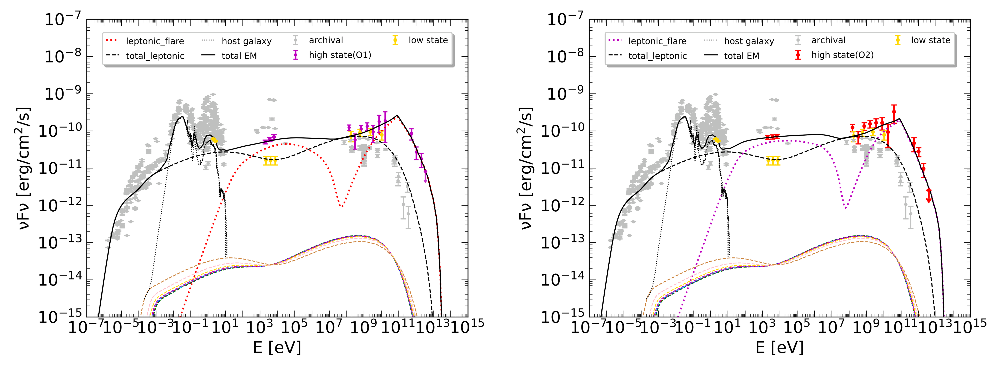<br />
图注：Broadband SED modeling in the leptonic scenario. Left: O1. Right: O2. Gray points are historical archival data from the ASI/SSDC SED Builder. Optical data are from the Zwicky Transient Facility. The low- and high-state X-ray data and the low-state $\gamma$-ray data are from \(\citet{Godambe_2024ApJ...974L..31G}\); the high-state GeV and TeV data are from \(\citet{Caozhen_2025MNRAS.540.1860C}.\) The red/magenta dotted curve is the emission from the reconnection-powered monster plasmoid.<br />
对应解读：对应“建议重点查看的图表”第2、3项，以及“关键图表逐图导读”中低态谱能量分布和轻子耀发态谱能量分布的解读。<br />
入选理由：这是检验本文轻子重联模型的核心宽带SED图，直接展示O1/O2两次活动期、历史/多波段数据、低态背景以及重联 monster plasmoid 的耀发贡献。它最能支持日报中关于X射线同步辐射、TeV逆康普顿分量、GeV区是否过量以及低态背景是否被合理扣除的讨论。<br />
来源与置信度：\(arxiv_source\)；high；\(arxiv_source\) / ms.tex:figure[3]</p>
<p><strong>Fig04</strong><br />
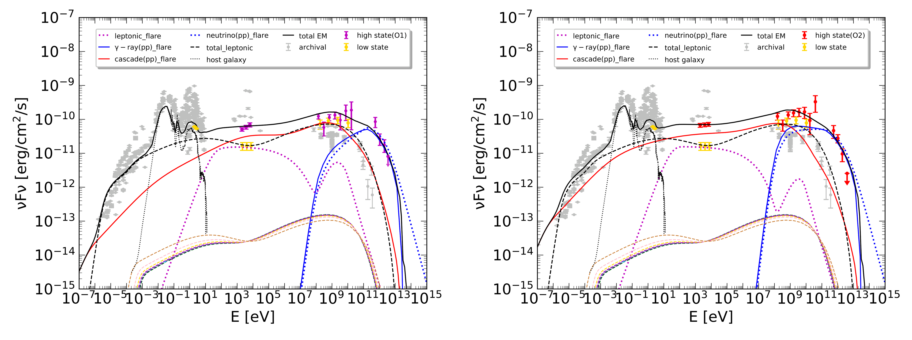<br />
图注：Broadband SED modeling in the hadronic scenario. Left: O1. Right: O2. Dashed curves show the leptonic background emission. The blue solid curve shows $\gamma$ rays from $\pi^0$ decay in pp interactions, the blue dotted curve shows the accompanying $\nu_\mu+\bar{\nu}_\mu$ emission, the red solid curve shows electromagnetic cascade emission, and the magenta dotted curve shows synchrotron radiation from primary electrons in the monster plasmoid.<br />
对应解读：对应“建议重点查看的图表”第4项，以及“关键图表逐图导读”中强子pp谱能量分布的解读。<br />
入选理由：这是判断强子方案是否可行的关键图，明确分解了pp相互作用的π0衰变γ射线、伴随中微子、电磁级联和主电子同步辐射。它直接服务于日报中关于TeV拟合、X射线/GeV不过量、以及强子模型是否只是通过高质子功率硬拟合TeV点的分析。<br />
来源与置信度：\(arxiv_source\)；high；\(arxiv_source\) / ms.tex:figure[4]</p>
<p><strong>Fig05</strong><br />
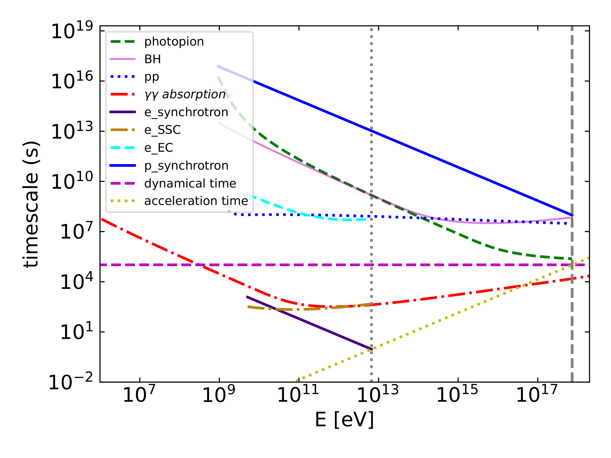<br />
图注：Cooling, acceleration, and absorption timescales in the comoving frame of the monster plasmoid for the hadronic scenario. The radius is set to $\sim0.001\,$pc. The vertical dashed line marks the maximum proton energy set by $t_{\rm acc}=\min\{t_{\rm cool},t_{\rm p,dyn}\}$, and the dotted line marks the maximum electron energy adopted in the model.<br />
对应解读：对应“建议重点查看的图表”第7项，以及模型拟合段落中关于pp冷却、加速、逃逸和最大粒子能量的诊断。<br />
入选理由：该图给出强子情景下 monster plasmoid 共动系中的冷却、加速和吸收时间尺度，并标出质子和电子最大能量，是判断TeV质子能否被有效加速、pp过程是否有足够效率、以及耀发时标是否自洽的定量诊断图。<br />
来源与置信度：\(arxiv_source\)；high；\(arxiv_source\) / ms.tex:figure[5]</p>
<p><strong>Fig07</strong><br />
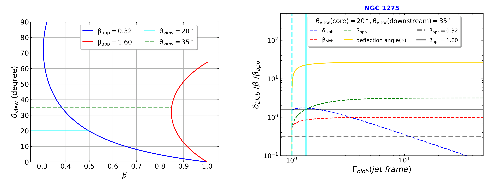<br />
图注：Kinematic constraints on the compact TeV emission zone. Left: apparent speed as a function of intrinsic speed and viewing angle. The blue and red curves mark $\beta_{\rm app}=0.32$ and $\beta_{\rm app}=1.60$, respectively. Right: Doppler factor, speed, and apparent speed of the monster plasmoid. The fiducial geometry gives $\Gamma_{\rm blob}\simeq1.89$ and $\delta_{\rm blob}\simeq1.7$.<br />
对应解读：对应“建议重点查看的图表”第1项中VLBI结点运动突变相关内容，以及模型拟合段落中多普勒因子、视角和本征速度退化的讨论。<br />
入选理由：虽然不是多波段光变图，但它直接给出紧凑TeV辐射区的运动学约束，包括表观速度、视角、本征速度和多普勒因子，可用于连接VLBI观测到的喷流结点运动异常与模型采用的δ、Γ等关键参数。<br />
来源与置信度：\(arxiv_source\)；high；\(arxiv_source\) / ms.tex:figure[7]</p>
<p><strong>Fig02</strong><br />
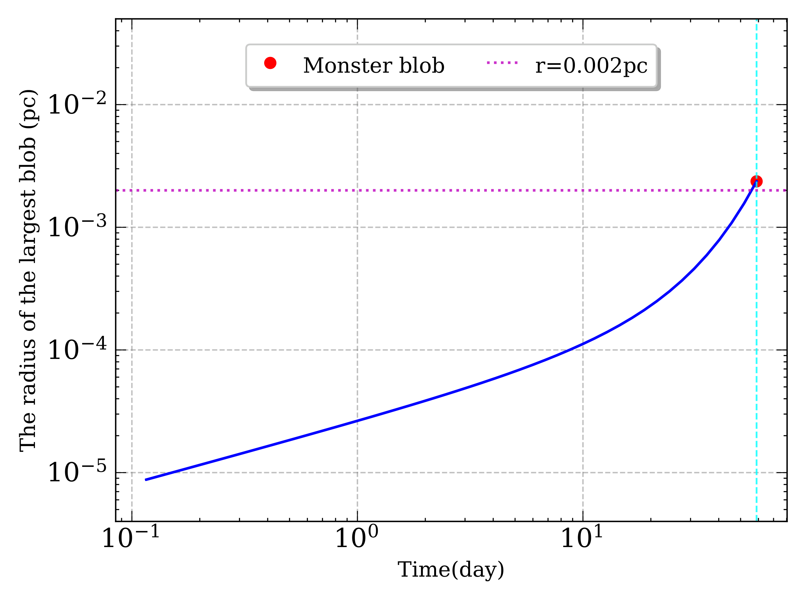<br />
图注：Radius of the largest plasmoid as a function of time after the onset of reconnection. A monster plasmoid can reach a radius of order $2\times10^{-3}\,$pc in about $60\,$days, comparable to the size inferred from the TeV variability.<br />
对应解读：对应“建议重点查看的图表”第7项中耀发时间尺度/能量预算诊断，以及详细解读中 monster plasmoid 是否能在TeV变时约束内形成的讨论。<br />
入选理由：该图展示最大plasmoid半径随重联启动后时间的增长，并指出约60天可达到约2×10^-3 pc，与TeV变时推断尺寸相当。它是连接磁重联动力学、耀发持续时间和紧凑辐射区大小的关键定量图。<br />
来源与置信度：\(arxiv_source\)；high；\(arxiv_source\) / ms.tex:figure[2]</p>
<p><strong>Fig01</strong><br />
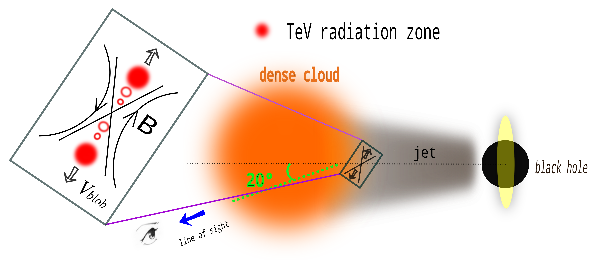<br />
图注：Schematic picture of the jet--medium interaction in NGC~1275. A dense cloud can deflect the jet and compress the magnetic field. Magnetic reconnection in the disturbed region produces the compact TeV emission zone. The figure is not to scale.<br />
对应解读：对应详细解读中“喷流—环境相互作用触发磁重联并产生紧凑TeV辐射区”的物理图像。<br />
入选理由：这是一张喷流与致密云相互作用、磁场压缩和重联区形成的示意图，能帮助读者理解本文的物理设定。其科学诊断性弱于SED和时间尺度图，但可作为模型框架的直观入口。<br />
来源与置信度：\(arxiv_source\)；high；\(arxiv_source\) / ms.tex:figure[1]</p>
<h4 id="_45">强相关工作</h4>
<p>同源背景方面，应把本文放在 NGC 1275/3C 84 的长期高能监测和 VLBI 运动学研究中阅读。可检索关键词包括 “NGC 1275 TeV flare LHAASO 2022 2023”、“3C 84 VLBI knot acceleration deflection 2022”、“NGC 1275 MAGIC VERITAS Fermi-LAT gamma-ray”。这些工作构成同一源、同类射电星系和同一事件上下文。本文特别依赖“TeV 活动之前出现喷流结点动力学异常”这一观测线索，因此同源 VLBI 论文与 LHAASO 探测论文应优先阅读。</p>
<p>理论背景方面，本文与相对论磁重联、blazar minijet、plasmoid 主导耀发、以及 AGN 喷流—云相互作用文献相连。可检索关键词包括 “relativistic magnetic reconnection plasmoids AGN jets”、“monster plasmoid gamma-ray flare”、“jet cloud interaction hadronic gamma rays AGN”、“proton proton emission dense clouds NGC 1275”。相反或竞争观点包括传统单区 SSC/EC 模型、冲击加速模型、磁层间隙模型和纯强子模型。真正的张力在于：轻子模型通常更省能量但需要高效电子加速；强子模型更自然连接气体环境和中微子预期，但对密度和功率要求严苛。</p>
<p><strong>同一事件 / 同类源线索</strong>：</p>
<ul>
<li><a href="https://arxiv.org/abs/2606.27680">https://arxiv.org/abs/2606.27680</a></li>
</ul>
<p><strong>相似工作</strong>：</p>
<ul>
<li><a href="https://ui.adsabs.harvard.edu/abs/2018A%26A...617A..91M/abstract">https://ui.adsabs.harvard.edu/abs/2018A%26A...617A..91M/abstract</a></li>
<li><a href="https://ui.adsabs.harvard.edu/abs/2012ApJ...746..151A/abstract">https://ui.adsabs.harvard.edu/abs/2012ApJ...746..151A/abstract</a></li>
</ul>
<p><strong>基础理论 / 方法工作</strong>：</p>
<ul>
<li><a href="https://ui.adsabs.harvard.edu/abs/1977MNRAS.179..433B/abstract">https://ui.adsabs.harvard.edu/abs/1977MNRAS.179..433B/abstract</a></li>
<li><a href="https://ui.adsabs.harvard.edu/abs/2009MNRAS.395L..29G/abstract">https://ui.adsabs.harvard.edu/abs/2009MNRAS.395L..29G/abstract</a></li>
<li><a href="https://ui.adsabs.harvard.edu/abs/2014ApJ...783L..21S/abstract">https://ui.adsabs.harvard.edu/abs/2014ApJ...783L..21S/abstract</a></li>
</ul>
<p><strong>相反观点 / 张力线索</strong>：</p>
<p>（未提供）</p>
</details>
<h3 id="5-transition-from-diffusion-to-drift-dominated-cosmic-ray-transport-and-the-origin-of-the-knee">5. Transition from Diffusion to Drift-Dominated Cosmic Ray Transport and the Origin of the Knee</h3>
<ul>
<li>来源：arXiv / astro-ph.HE</li>
<li>链接：https://arxiv.org/abs/2606.28141v1</li>
<li>作者：Luis Enrique Espinosa Castro, Carmelo Evoli, Pasquale Blasi</li>
<li>评分：novelty 8/10，importance 8/10，relevance 9/10，final 9.35/10</li>
<li>推荐理由：用测试粒子模拟研究扩散到漂移主导的宇宙线输运及膝区起源，直接面向PeV宇宙线关键问题，结论对银河传播模型约束重要。</li>
</ul>
<p><strong>中文题目</strong>：宇宙线输运从扩散到漂移主导的转变与膝区起源</p>
<p><strong>做了什么</strong>：这篇论文重新检验一个老问题：银河宇宙线能谱在约 \(\mathrm{PeV}\) 能区出现“膝”是否可以不是源注入谱的断裂，而是由银河磁场中的输运机制改变造成。作者用测试粒子模拟，把规则大尺度银河磁场与各向同性 Kolmogorov 型湍动磁场叠加，跟踪 \(\mathrm{TeV}\) 到 \(10\,\mathrm{PeV}\) 粒子的逃逸时间和穿越物质量。核心结论是：纯方位向大尺度磁场中，磁力线曲率漂移确实能在 \(\mathrm{PeV}\) 附近制造膝状结构，但垂直扩散太弱，导致物质量不符合观测；若磁场有明显垂直于盘面的分量，平行扩散会迅速控制逃逸，漂移难以形成膝。只有在 \(E\gtrsim1\,\mathrm{TeV}\) 后平行扩散系数近似能量无关的特殊情况下，漂移才可能重新主导并在膝区留下可观测特征。</p>
<p><strong>为什么重要</strong>：宇宙线膝区通常被解释为源加速极限、源类叠加、逃逸变快或相互作用效应的结果。本文的重要性在于，它把“漂移导致膝”的想法放进更接近银河几何的磁场拓扑和数值粒子追踪中检验，而不是只用一维漏盒或简化扩散系数参数化。它清楚指出：漂移机制不是随便加入一个 \(D_A\propto E\) 项就能解释膝，磁场拓扑、垂直逃逸通道、湍动强度和穿越物质量约束会同时决定模型是否可行。</p>
<p><strong>理论 / 观测 / 仪器方法价值</strong>：对理论而言，本文给出扩散—漂移竞争的定量判据，并说明哪些银河磁场几何会压制或放大漂移效应。对观测而言，它把膝区能谱与 \(\mathrm{B}/\mathrm{C}\)、次级核素和物质量约束联系起来，提醒不能只拟合全粒子谱形。对方法而言，测试粒子模拟直接从磁场结构推断逃逸时间和 grammage，比预设标量扩散系数更能暴露模型内部矛盾。</p>
<p><strong>为什么应该关注</strong>：如果你关心膝区是不是源物理的证据，这篇文章值得看，因为它展示了输运效应能产生类似膝的条件，同时也展示了这些条件多么苛刻。如果你做银河宇宙线传播、各向异性、\(\gamma\) 射线弥散辐射或中微子背景，本文的结论会影响你如何理解高能扩散系数外推、垂直逃逸和大尺度磁场几何的作用。它不是简单宣布“漂移解释膝”，而是给出一组可被观测约束筛掉的物理条件。</p>
<details class="paper-detail">
<summary>展开详细解读：文章讲解、背景、理论、重点章节、图表与相关工作</summary>
<h4 id="_46">文章详细讲解</h4>
<p>科学问题：银河宇宙线全粒子谱在约 \(3\,\mathrm{PeV}\) 附近变陡，这就是所谓膝区。传统解释往往从源端入手，例如超新星遗迹的最大刚度、不同核素组分的刚度截止，或多个源族叠加；也有输运解释，即高能粒子更容易逃出银河导致观测谱变陡。本文关注的是后一类中更具体的机制：在具有曲率和梯度的大尺度银河磁场中，带电粒子除了沿磁力线和平行/垂直扩散外，还会发生梯度漂移和曲率漂移。随着粒子刚度升高，漂移项通常增长更快，因此可能在 \(\mathrm{PeV}\) 能区与扩散竞争并改变逃逸时间的能量依赖。</p>
<p>作者怎么做：论文没有只写一个解析传播方程，而是进行测试粒子模拟。磁场模型由一个规则的大尺度分量和一个均匀各向同性的湍动分量组成，基本设置采用 Kolmogorov 型湍动谱。规则场被设计成具有非平凡拓扑，以模拟银河磁场可能存在的方位向结构、弯曲结构和垂直盘面分量。作者在 \(\mathrm{TeV}\) 到 \(10\,\mathrm{PeV}\) 的能量范围内追踪宇宙线粒子，统计其逃逸时间与累计穿越物质量，即 grammage。这样可以直接检查模型是否同时满足膝区谱形与低能/中能次级宇宙线给出的物质量约束。</p>
<p>关键结果：在纯方位向的大尺度磁场中，磁力线曲率会诱导显著漂移，漂移逃逸在高能端逐渐压过扩散逃逸，从而在 \(\mathrm{PeV}\) 附近产生类似膝的谱变陡。这说明漂移机制在物理上确实可以制造膝，而不是纯粹参数化幻象。但问题是该模型的垂直扩散系数过低，粒子在盘内累积的 grammage 与观测不符。换言之，它可以拟合谱形的一部分，却无法同时通过次级/初级比等传播约束。</p>
<p>另一个重要结果是，当大尺度磁场带有垂直于银河盘的分量时，粒子可以更有效地沿磁力线逃离盘面。此时平行扩散系数很快成为控制逃逸的主导量，漂移项没有机会在膝区压过扩散，因此不会自然形成膝。这一结论特别重要，因为真实银河磁场很可能不只是理想化的纯方位向结构；即便一个小的垂直分量，也可能改变高能逃逸的主通道。</p>
<p>局限和下一步：本文使用的是 mock 银河磁场，而非完整拟合观测的三维银河磁场模型；湍动假设也以均匀、各向同性和 Kolmogorov 型为基准，这与真实银河盘、晕、旋臂和局部泡环境仍有距离。作者提出，若 \(E\gtrsim1\,\mathrm{TeV}\) 后平行扩散系数变得近似能量无关，漂移可能重新主导并在 \(\mathrm{PeV}\) 附近产生膝；他们讨论了两种可能实现这种情况的物理场景。后续工作需要把这种输运机制放进包含源分布、核素组分、各向异性、\(\gamma\) 射线弥散辐射和次级核素的联合拟合中，才能判断它是否真能替代或补充源端截止解释。</p>
<h4 id="_47">关键结果是怎么做出来的</h4>
<p>本文最重要的证据链从样本定义开始：作者不是使用真实探测器事件样本，而是在给定磁场模型中发射和追踪测试粒子，能量范围覆盖 \(\mathrm{TeV}\) 到 \(10\,\mathrm{PeV}\)。每个能量点下的粒子轨道用于估计平均逃逸时间和累计穿越物质量。样本选择的关键不是天区或探测器触发，而是磁场几何、湍动谱、湍动幅度、粒子刚度以及逃逸边界的定义；这些设置决定了模拟能否代表银河盘—晕系统。</p>
<p>核心统计量是逃逸时间 \(\tau_{\rm esc}(E)\) 和 grammage \(X(E)\)。若注入谱为 \(Q(E)\)，稳态近似下观测谱可粗略写成 \(N(E)\sim Q(E)\tau_{\rm esc}(E)\)。因此，膝状结构对应 \(\tau_{\rm esc}\) 的能量依赖在 \(\mathrm{PeV}\) 附近变陡。作者比较不同磁场拓扑下 \(\tau_{\rm esc}(E)\) 的斜率变化，同时检查 \(X(E)\) 是否落在次级/初级比推断的可接受范围。严格意义上这不是一个单一 \(p\) 值或 \(5\sigma\) 发现，而是一个物理模型一致性检验：能谱膝与 grammage 是否能被同一组输运参数同时解释。</p>
<p>纯方位向场的结果支撑了“漂移可造膝”的局部结论。图表上应表现为：低能区逃逸时间主要遵循扩散控制的幂律下降，而高能区在 \(\mathrm{PeV}\) 附近出现额外加速逃逸，等效谱指数变陡。对应的漂移速度或漂移逃逸通道随刚度增强，逐渐接近或超过垂直扩散造成的逃逸效率。但是同一组模型下的 grammage 会偏离观测要求，特别是由于垂直扩散系数过小，粒子滞留和盘内穿越过多或能量依赖不合适，导致次级核素约束无法通过。</p>
<p>含垂直磁场分量的模型给出相反结果。由于粒子可以沿大尺度场线通过平行扩散离开盘面，\(D_{\parallel}\) 主导逃逸，漂移项即便随能量增长也难以成为主要控制项。支持这一结论的图表应显示 \(\tau_{\rm esc}(E)\) 没有在膝区出现足够强的斜率突变，或者漂移与扩散的相对贡献曲线中平行扩散始终领先。这个结果的稳健性取决于垂直分量大小、湍动强度和边界设置；如果真实银河场存在显著开放磁力线通道，漂移膝机制会被削弱。</p>
<p>作者进一步考察一个非标准但有启发性的条件：若 \(E\gtrsim1\,\mathrm{TeV}\) 后 \(D_{\parallel}\) 对能量近似饱和，扩散逃逸不再随能量快速增强，那么随刚度增长的漂移项就可能重新成为主导，并在 \(\mathrm{PeV}\) 能区形成膝。这部分更像模型比较而非确定观测结论；它提出了需要解释的关键物理：为什么平行扩散会在高能变平。稳健性检验应集中在湍动谱截断、共振散射失效、有限相干长度、非线性湍动或非均匀晕结构是否能自然产生这种饱和。</p>
<details class="paper-subdetail">
<summary>展开背景、理论、公式、模型、章节和图表导读</summary>
<h4 id="_48">背景知识</h4>
<p>宇宙线膝区是高能天体物理中的长期问题。全粒子能谱从大约 \(E^{-2.7}\) 变为接近 \(E^{-3.1}\) 的转折通常发生在几 \(\mathrm{PeV}\) 附近，并且不同实验对各核素组分的膝位置给出近似刚度标度的暗示。最直接的解释是银河源的最大加速刚度：质子先截止，较重核依次截止。但这种解释依赖源类、加速效率、逃逸历史和局部源涨落，尚不能完全由单一观测锁定。</p>
<p>传播解释则强调观测到的宇宙线谱不是源谱本身，而是源注入与银河滞留时间的乘积。低能到 \(\mathrm{TeV}\) 区间，\(\mathrm{B}/\mathrm{C}\) 等次级/初级比表明宇宙线逃逸时间随能量下降，通常用扩散系数 \(D\propto R^{\delta}\) 表示，其中 \(R\) 是刚度。若在更高刚度处逃逸机制发生变化，能谱也会变陡，因此膝区可能携带银河磁场输运的信息，而不一定只反映源的最大能量。</p>
<p>漂移机制的历史很长。带电粒子在非均匀磁场中不仅绕磁力线回旋，还会因为磁场梯度和曲率产生横向漂移。早期解析模型曾提出，当漂移系数随刚度近似线性增长时，高能宇宙线会更快离开银河，从而产生膝状谱折断。但这些模型常常采用轴对称、平滑、参数化的扩散张量，难以同时处理真实磁场拓扑、湍动散射和物质量约束。</p>
<p>现在重新看这个问题有两个原因。第一，膝区及以上能区的直接和间接观测正在改善，能谱、组分和各向异性之间的联合约束越来越强。第二，银河磁场模型、数值轨道积分和湍动输运模拟更成熟，可以从粒子轨道层面检验哪些漂移效应是真实几何导致的，哪些只是简化模型中的参数选择。本文正是利用这种数值路线，重新评估漂移膝模型的可行性。</p>
<p>一个常见误区是把“扩散”理解成单一标量系数，或把“漂移”理解成可任意添加的谱变陡项。实际上传播是张量问题：平行扩散、垂直扩散和反对称漂移项都依赖磁场拓扑、湍动幅度、相干长度和粒子刚度。另一个误区是只看全粒子能谱是否能拟合膝，而忽略 grammage、各向异性和次级核素；这些量往往比谱形本身更能排除一个传播模型。</p>
<h4 id="_49">基础理论 / 方法脉络</h4>
<p>基础物理图像从带电粒子在磁场中的运动开始。宇宙线粒子以拉莫尔半径 \(r_{\rm L}\) 绕局部磁场回旋，如果磁场在许多回旋尺度上近似均匀，粒子沿磁力线自由运动；如果存在湍动磁场，俯仰角散射会把这种运动随机化，宏观上表现为沿平均磁场的平行扩散 \(D_{\parallel}\) 和跨磁力线的垂直扩散 \(D_{\perp}\)。在标准准线性图像中，\(D_{\parallel}\) 的能量依赖由湍动谱决定，例如 Kolmogorov 湍动常给出 \(D_{\parallel}\propto R^{1/3}\) 的近似标度。</p>
<p>当大尺度磁场不是直的、均匀的，而是有梯度和曲率时，还必须考虑漂移。漂移来自回旋轨道在空间不均匀磁场中的平均偏移，方向通常垂直于磁场和梯度/曲率方向。宏观输运方程中它对应扩散张量的反对称部分，常写成漂移系数 \(D_A\)。在弱散射或高刚度极限下，\(D_A\) 与粒子速度和拉莫尔半径成正比，因此能量增长比 Kolmogorov 扩散更快，这就是漂移在高能可能占优的根源。</p>
<p>本文的模型假设可以概括为：规则银河磁场提供大尺度拓扑，湍动磁场提供散射和扩散。规则场可以是纯方位向，也可以包含垂直于银河盘的分量；湍动场在基准模型中均匀、各向同性、谱形近似 Kolmogorov。测试粒子模拟不预设单一有效扩散系数，而是通过轨道积分统计粒子的逃逸行为，再反推出 \(\tau_{\rm esc}\)、\(X\)、等效 \(D_{\parallel}\)、\(D_{\perp}\) 和漂移贡献。</p>
<p>观测连接主要通过两个量完成。第一是能谱：稳态下若源注入率固定，滞留时间越短，局部宇宙线密度越低，因此逃逸时间的能量依赖会直接改变观测谱指数。第二是 grammage：宇宙线在银河气体中穿过的柱密度决定次级核素产生量，例如 \(\mathrm{B}/\mathrm{C}\)。一个模型即使能产生膝，如果给出错误的 \(X(E)\)，也不能作为完整传播模型。</p>
<p>常见退化和系统误差包括源注入谱与逃逸谱的退化、磁场几何与扩散张量的退化、湍动谱指数与湍动幅度的退化，以及银河晕高度与逃逸时间归一化的退化。特别是在高能区，直接测得的 grammage 和组分不如 \(\mathrm{GeV}\) 到 \(\mathrm{TeV}\) 区间精确，导致某些模型可以通过调节源谱或边界条件暂时存活。因此本文强调同时看膝结构和物质量，是合理的模型筛选策略。</p>
<h4 id="_50">公式与推导</h4>
<p>第一步是带电粒子的基本尺度。对电荷 \(Ze\)、动量 \(p\)、速度 \(v\) 的粒子，在磁场强度 \(B\) 中的拉莫尔半径为</p>
<div class="math-display">\[r_{\rm L}=\frac{pc}{ZeB}\simeq \frac{R}{B},\]</div>
<p>其中 \(R=pc/(Ze)\) 是刚度，\(c\) 是光速。这个式子说明高刚度粒子采样更大的磁场尺度，更容易感受到大尺度曲率和梯度。</p>
<p>第二步是从散射到平行扩散。若俯仰角散射平均自由程为 \(\lambda_{\parallel}\)，则</p>
<div class="math-display">\[D_{\parallel}=\frac{1}{3}v\lambda_{\parallel}.\]</div>
<p>在 Kolmogorov 型湍动、共振散射有效且 \(r_{\rm L}\) 小于湍动外尺度 \(L_{\rm c}\) 的近似下，常有</p>
<div class="math-display">\[D_{\parallel}(R)=D_0\left(\frac{R}{R_0}\right)^{\delta},\qquad \delta\simeq \frac{1}{3},\]</div>
<p>其中 \(D_0\) 和 \(R_0\) 是归一化常数与参考刚度。</p>
<p>第三步是垂直扩散。跨磁力线输运受湍动场线游走和散射共同控制，可用有效系数</p>
<div class="math-display">\[D_{\perp}=\eta_{\perp}D_{\parallel},\]</div>
<p>描述，其中 \(\eta_{\perp}<1\) 通常依赖湍动强度 \(\delta B/B_0\)、相干长度和非线性效应。本文发现某些纯方位向场模型中 \(D_{\perp}\) 过小，会导致 grammage 不合适。</p>
<p>第四步是漂移项。输运张量可写为对称扩散部分加反对称漂移部分，简化形式为</p>
<div class="math-display">\[D_{ij}=D_{\perp}\delta_{ij}+(D_{\parallel}-D_{\perp})b_i b_j+D_A\epsilon_{ijk}b_k,\]</div>
<p>其中 \(\boldsymbol{b}=\boldsymbol{B}/B\)，\(\epsilon_{ijk}\) 是 Levi-Civita 符号，\(D_A\) 是漂移系数。高刚度、弱散射极限下常用</p>
<div class="math-display">\[D_A\sim \frac{1}{3}vr_{\rm L}\propto R.\]</div>
<p>这解释了为什么漂移可能在高能端超过 \(D_{\parallel}\propto R^{1/3}\) 的扩散增长。</p>
<p>第五步是写出稳态输运方程。在忽略能量损失、再加速和核反应的最简高能近似下，宇宙线数密度 \(n\) 满足</p>
<div class="math-display">\[-\nabla_i\left(D_{ij}\nabla_j n\right)+\boldsymbol{v}_{\rm d}\cdot\nabla n=Q,\]</div>
<p>其中 \(Q\) 是源项，\(\boldsymbol{v}_{\rm d}\) 是由反对称张量等效出的漂移速度。这个方程显示，谱形变化可以来自源项 \(Q\)，也可以来自输运算符的能量依赖。</p>
<p>第六步是逃逸时间标度。若系统特征高度为 \(H\)，纯扩散逃逸可估为</p>
<div class="math-display">\[\tau_{\rm diff}\sim \frac{H^2}{2D_{\rm eff}},\]</div>
<p>而漂移主导逃逸可估为</p>
<div class="math-display">\[\tau_{\rm drift}\sim \frac{H}{v_{\rm d}}.\]</div>
<p>当 \(\tau_{\rm drift}<\tau_{\rm diff}\) 时，逃逸由漂移控制，观测谱会随能量更快变陡。</p>
<p>第七步是膝出现的判据。若源注入谱为</p>
<div class="math-display">\[Q(E)=Q_0E^{-\alpha},\]</div>
<p>稳态密度近似为</p>
<div class="math-display">\[n(E)\propto Q(E)\tau_{\rm esc}(E).\]</div>
<p>若 \(\tau_{\rm esc}\propto E^{-\delta_1}\) 在低能成立，而高能变为 \(\tau_{\rm esc}\propto E^{-\delta_2}\)，则观测谱指数变化为</p>
<div class="math-display">\[\Delta \gamma=\delta_2-\delta_1.\]</div>
<p>本文寻找的就是由扩散到漂移转变导致的 \(\delta_2>\delta_1\)。</p>
<p>第八步是 grammage。若粒子在平均气体密度 \(\rho\) 中停留时间为 \(\tau_{\rm esc}\)，则穿越物质量可近似写成</p>
<div class="math-display">\[X(E)\simeq \rho v\tau_{\rm esc}(E),\]</div>
<p>更一般地应沿轨道积分 \(X=\int \rho[\boldsymbol{x}(t)]v\,dt\)。这个量连接到次级核素观测；因此能产生膝的 \(\tau_{\rm esc}\) 还必须给出合理的 \(X(E)\)。</p>
<p>第九步是模型比较的诊断。若把模拟给出的可观测量与数据点 \(y_k\) 比较，可构造</p>
<div class="math-display">\[\chi^2(\boldsymbol{\theta})=\sum_k\frac{[y_k-y_{\rm mod}(E_k;\boldsymbol{\theta})]^2}{\sigma_k^2},\]</div>
<p>其中 \(\boldsymbol{\theta}\) 表示磁场、湍动和源谱参数，\(\sigma_k\) 包括统计与系统误差。即使本文重点是物理可行性而非全局贝叶斯拟合，这个式子也说明为什么必须同时比较谱形和 grammage，而不能只看膝是否出现。</p>
<h4 id="_51">模型拟合 / 应用方法</h4>
<p>这类工作中最直接的拟合量包括逃逸时间 \(\tau_{\rm esc}(E)\)、grammage \(X(E)\)、全粒子能谱 \(J(E)\)、各核素谱以及次级/初级比。本文更偏向从模拟中推断 \(\tau_{\rm esc}\) 和 \(X\)，再判断这些量是否能解释膝区和传播约束。若要进一步做完整拟合，需要把模拟输运核与源注入谱、元素丰度、核反应截面和太阳调制低能修正结合起来。</p>
<p>似然函数可按数据类型分块：全粒子谱和分元素谱通常用带相关系统误差的高斯似然，计数型空气簇射数据可用 Poisson 或 profile likelihood，次级/初级比可加入核反应截面协方差。对本文核心问题而言，模型比较的关键不是某个单独数据集的最佳 \(\chi^2\)，而是同一磁场拓扑是否能同时给出膝区变陡、合理 grammage 和不过大的各向异性。</p>
<p>参数退化非常强。源注入指数 \(\alpha\) 与逃逸指数 \(\delta\) 的和决定观测谱指数，因此只看 \(J(E)\) 难以区分源端变陡和传播变陡。晕高度 \(H\)、气体分布 \(\rho(z)\)、湍动归一化 \(\delta B/B_0\)、相干长度 \(L_{\rm c}\) 与 \(D_{\perp}\) 也会共同影响 \(X(E)\)。大尺度磁场是否含垂直分量则会改变逃逸通道，使漂移项和 \(D_{\parallel}\) 的相对重要性发生质变。</p>
<p>残差应从两个方向看。第一，能谱残差是否在膝区系统性改善，而不是通过调节源谱人为吸收。第二，grammage 或 \(\mathrm{B}/\mathrm{C}\) 残差是否同时变坏。如果某个模型在 \(\mathrm{PeV}\) 附近给出漂亮膝，但在 \(\mathrm{GeV}\) 到 \(\mathrm{TeV}\) 的次级核素约束上偏离严重，它就不是一个成功传播模型。本文指出纯方位向场的漂移膝正面临这种问题。</p>
<p>模型可能失败的地方包括：真实银河磁场比 mock 场更复杂，局部源和局部磁泡可能影响膝以下到膝区的观测谱；湍动可能各向异性、非均匀，且在高刚度下共振散射条件改变；核素组分的刚度依赖截止可能与输运膝叠加，导致单一机制解释过度简化。因此实际应用中应把本文结果看成对漂移机制的物理筛选，而不是最终全局传播模型。</p>
<p>若未来要把本文框架用于数据拟合，一个可行路线是预先用大量测试粒子模拟生成不同 \(\boldsymbol{\theta}\) 下的输运响应表，再用插值或仿真器嵌入 MCMC 或 nested sampling。这样可以同时拟合能谱、组分、\(\mathrm{B}/\mathrm{C}\)、\(\bar{p}/p\)、弥散 \(\gamma\) 射线和各向异性。重点应检验 \(D_{\parallel}\) 在 \(E\gtrsim1\,\mathrm{TeV}\) 后变平的假设是否能由独立观测支持。</p>
<h4 id="_52">重点章节 / 结果段落怎么读</h4>
<p>数据/样本与模拟设置：优先看作者如何定义 mock 银河磁场，包括规则场的方位向结构、是否加入垂直盘面分量、湍动场的谱形和归一化。这里决定了后面所有结论的适用范围。读者应特别注意边界条件、粒子注入位置、能量采样和逃逸判据，因为这些会直接影响 \(\tau_{\rm esc}\) 与 \(X\)。</p>
<p>输运系数与轨道统计方法：这一部分应说明如何从测试粒子轨道推断平行扩散、垂直扩散和漂移贡献。读者要看作者是否区分了局部扩散系数和全局逃逸时间，以及是否有足够长的积分时间让粒子进入扩散或漂移主导的渐近行为。</p>
<p>纯方位向大尺度磁场结果：这是验证漂移膝机制的关键段落。应检查逃逸时间随能量的曲线是否在 \(\mathrm{PeV}\) 附近出现斜率变化，以及该变化是否可归因于曲率漂移而非数值边界或统计噪声。同时看 grammage 图，确认为什么该模型被作者认为不满足观测约束。</p>
<p>含垂直磁场分量的结果：这一部分展示漂移机制的脆弱性。读者应关注垂直分量多大时 \(D_{\parallel}\) 主导逃逸，以及膝结构如何消失。这里对真实银河磁场模型非常关键，因为任何开放到晕区的场线都会为粒子提供高效逃逸通道。</p>
<p>高能 \(D_{\parallel}\) 变平的讨论：论文最后讨论若 \(E\gtrsim1\,\mathrm{TeV}\) 后平行扩散系数近似能量无关，漂移可重新在 \(\mathrm{PeV}\) 主导。读者应把这一节当作假设检验：作者给出的两种实现机制是否物理自然，是否会与低能 \(\mathrm{B}/\mathrm{C}\)、各向异性或弥散辐射冲突。</p>
<h4 id="_53">建议重点查看的图表</h4>
<ol>
<li>
<p>磁场几何示意或场线图：看规则场是纯方位向还是含垂直分量，场线是否提供通向晕区的开放逃逸路径。</p>
</li>
<li>
<p>\(D_{\parallel}(E)\)、\(D_{\perp}(E)\) 和漂移相关量的能量依赖图：重点看漂移项何时接近或超过扩散项，以及 \(D_{\perp}\) 是否异常小。</p>
</li>
<li>
<p>逃逸时间 \(\tau_{\rm esc}(E)\) 图：看 \(\mathrm{PeV}\) 附近是否出现斜率突变，并比较不同磁场拓扑下曲线差异。</p>
</li>
<li>
<p>grammage \(X(E)\) 与观测约束比较图：这是判断模型是否真正可行的关键，不要只看膝区谱形。</p>
</li>
<li>
<p>由逃逸时间推断的能谱或谱指数图：检查膝位置、变陡幅度以及是否需要额外调节源注入谱。</p>
</li>
<li>
<p>含垂直场分量的参数扫描图：看很小的垂直分量是否就足以让平行扩散主导逃逸。</p>
</li>
<li>
<p>\(D_{\parallel}\) 高能变平假设的对比图：确认只有在该假设下漂移是否重新主导，以及膝是否出现在合理能量。</p>
</li>
<li>
<p>稳健性或附录诊断：看粒子数、模拟盒大小、湍动 realization、时间步长和边界条件变化是否改变主要结论。</p>
</li>
</ol>
<h4 id="_54">关键图表逐图导读</h4>
<p>图 1：若论文给出磁场构型示意，横轴和纵轴通常对应银河柱坐标中的半径 \(R\) 与高度 \(z\)，或盘面投影。数据不是观测点，而是模型场线。读图时要看场线是否主要环绕银河中心，还是有明显离开盘面的分量。陷阱是不要把示意图当真实银河磁场重建；它是用于测试输运机制的 mock 场。</p>
<p>图 2：输运系数随能量或刚度的图通常以 \(E\) 或 \(R\) 为横轴，以 \(D_{\parallel}\)、\(D_{\perp}\)、\(D_A\) 或等效漂移速度为纵轴。模型线之间的交叉点最关键，因为它标记漂移可能开始重要的能量。读图陷阱是只看 \(D_A\propto R\) 的快速增长，而忽略 \(D_{\parallel}\) 是否已通过垂直磁场提供更快逃逸。</p>
<p>图 3：逃逸时间 \(\tau_{\rm esc}(E)\) 图应是本文核心图之一。横轴为能量，纵轴为平均逃逸时间或归一化逃逸时间。纯方位向模型若产生膝，应显示 \(\mathrm{PeV}\) 附近斜率变陡；含垂直场模型则应更平滑。要注意误差条或模拟 realization 分散度，避免把统计涨落解读成物理转折。</p>
<p>图 4：grammage \(X(E)\) 图应与观测推断或经验传播模型带比较。横轴为能量，纵轴为 \(X\)，单位常为 \(\mathrm{g\,cm^{-2}}\)。如果纯方位向模型的 \(X(E)\) 落在观测允许区外，就说明它不能只凭能谱膝成功。读图陷阱是观测约束本身可能来自低能外推或特定传播模型，因此应看趋势和归一化是否同时合理。</p>
<p>图 5：若有预测能谱或谱指数图，横轴为能量，纵轴为通量乘幂次或局部谱指数。漂移膝模型的特征是谱指数在膝区连续变大，而不是某个源截止造成的指数型急剧下降。读图时要看作者是否固定源谱，还是通过重新调参吸收了输运差异。</p>
<p>图 6：高能 \(D_{\parallel}\) 变平情形的比较图应显示标准 Kolmogorov 标度与饱和标度的差别。关键是看漂移主导区是否自然落在 \(\mathrm{PeV}\)，以及这种设置是否同时改善或破坏 \(X(E)\)。陷阱是把人为设定的 \(D_{\parallel}\) 平台当成已被观测证实的事实。</p>
</details>
<h4 id="_55">论文原图 / 可嵌入图片</h4>
<p><strong>Fig03</strong><br />
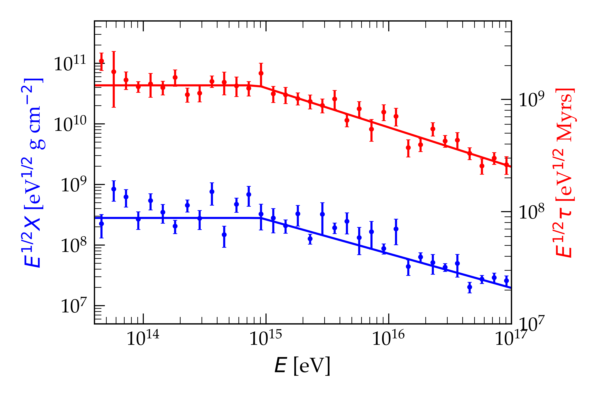<br />
图注：Cosmic ray escape time (red) and grammage (blue) as function of particle energy for a simulation box with $H = 2$ kpc, $h = 50$ pc, $\eta = 0.5$, $\lambda_c \approx 30$ pc and $\mu = 0$. Scatter points represent average time (grammage) over energy bin from simulation data and their best fit assuming a broken power-law is shown in red (blue) solid line. Both escape time and grammage are scaled by $E^{1/2}$ to facilitate the visualization of the transition between diffusion and drifts.<br />
对应解读：对应“建议重点查看的图表”中的逃逸时间与 grammage，以及“关键图表逐图导读”图3、图4关于纯方位向场下 PeV 附近斜率突变和物质量约束的讨论。<br />
入选理由：这是检验纯方位向磁场中漂移是否能产生膝区的核心图，同时给出逃逸时间和 grammage，并用 broken power-law 拟合显示扩散到漂移主导的转变。它直接支撑日报中“能产生膝但 grammage 有问题”的关键结论。<br />
来源与置信度：\(arxiv_source\)；high；\(arxiv_source\) / main.tex:figure[3]</p>
<p><strong>Fig05</strong><br />
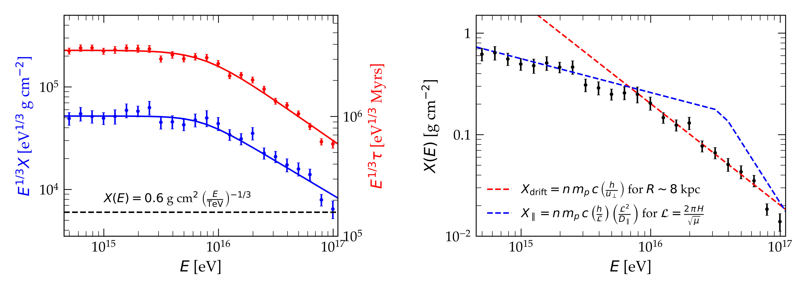<br />
图注：Left panel: Cosmic ray escape time (red) and grammage (blue) as function of particle energy for a simulation box with $H = 2$ kpc, $h = 50$ pc, $\eta = 0.7$, $\lambda_c \approx 30$ pc, $\mu = 0.2$. Scatter points represent average time (grammage) over energy bin from simulation data and their best fit assuming a broken power-law is shown in red (blue) solid line. Both escape time and grammage are scaled by $E^{1/3}$ to facilitate the visualization of the transition between diffusion and drifts. Black dashed line denotes the predicted grammage from the extrapolation of the grammage observed at TeV (by B/C observations) to higher energies assuming a $\propto E^{-1/3}$ scaling. Right panel: Cosmic ray grammage (black scatter points) as function of particle energy from the same simulation setup. Predicted grammage via parallel diffusion and drifts (computed from Eqs. \(\ref{eq:grammage_parallel_general}\) and \ref{eq:grammage_drift_general}) shown in blue and red dashed lines, respectively.<br />
对应解读：对应“建议重点查看的图表”中含垂直场分量后的逃逸时间、grammage 与漂移/平行扩散竞争，以及模型拟合段落中同一拓扑是否能同时给出膝和合理 grammage 的讨论。<br />
入选理由：该图不仅展示 mu=0.2 时逃逸时间和 grammage 的能量依赖，还在右图给出由平行扩散和漂移估计的 grammage 虚线对比，最能说明垂直场分量会使平行扩散主导、削弱漂移膝机制。<br />
来源与置信度：\(arxiv_source\)；high；\(arxiv_source\) / main.tex:figure[5]</p>
<p><strong>Fig02</strong><br />
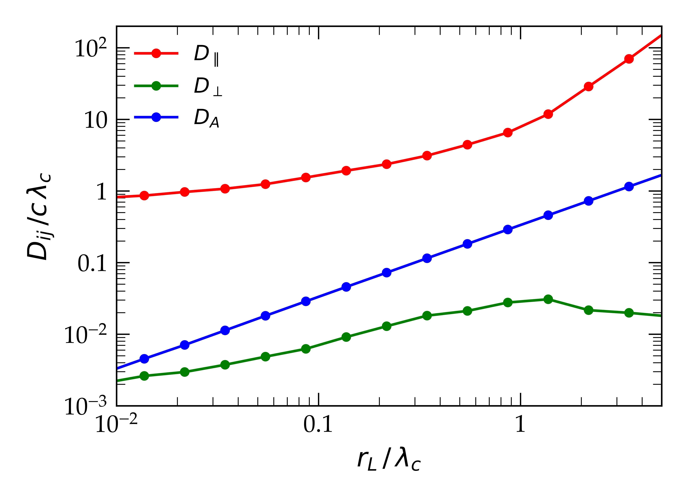<br />
图注：Parallel (red), perpendicular (green) and antisymmetric (blue) coefficients of the diffusion tensor (Eq.~\ref{eq:diffusion_tensor}) as function of particle rigidity for a turbulence amplitude $\delta B / B_0=0.5$, extracted from our simulations. Scatter points represent average diffusion coefficient over rigidity bin. Coefficients normalized over $c\lambda_c$ and particle rigidity represented by ratio $r_L(E)/\lambda_c$.<br />
对应解读：对应“建议重点查看的图表”第2项，以及“关键图表逐图导读”图2中 \(D_parallel\)、\(D_perp\)、\(D_A\) 随刚度变化和交叉关系的解读。<br />
入选理由：该图直接给出扩散张量三个关键系数随刚度的模拟提取结果，是理解漂移项何时可能接近扩散项、以及 \(D_perp\) 是否异常小的基础诊断图。<br />
来源与置信度：\(arxiv_source\)；high；\(arxiv_source\) / main.tex:figure[2]</p>
<p><strong>Fig04</strong><br />
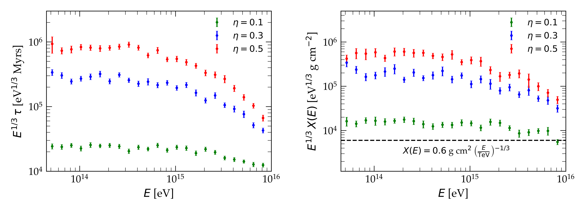<br />
图注：Left panel: Corresponding escape times as function of particle energy for simulations with $H = 2$ kpc, $h = 50$ pc, $\lambda_c \approx 30$ pc, $\mu = 0.1$ and $\eta=0.1, 0.3, 0.5$ (green, blue and red scatter points). Values scaled by $E^{1/3}$ to facilitate the visualization of the transition between diffusion and drifts. Right panel: Cosmic ray grammage as function of particle energy from the same simulations. Black dashed line denotes the predicted grammage from the extrapolation of the grammage observed at TeV (by B/C observations) to higher energies assuming $\rchi\propto E^{-1/3}$. Values also scaled by $E^{1/3}$.<br />
对应解读：对应“建议重点查看的图表”第4和第6项：grammage 与 B/C 外推约束比较，以及含垂直场分量时参数变化对逃逸和物质量的影响。<br />
入选理由：该图展示 mu=0.1 且不同湍动强度 eta 下的逃逸时间和 grammage，并与 TeV B/C 外推的黑色虚线比较，适合说明小垂直分量和湍动参数如何改变模型可行性。<br />
来源与置信度：\(arxiv_source\)；high；\(arxiv_source\) / main.tex:figure[4]</p>
<p><strong>Fig07</strong><br />
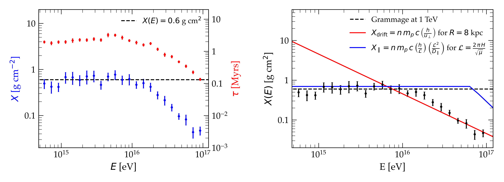<br />
图注：Cosmic ray escape time (red) and grammage (blue) as function of particle energy for a simulation box with $H = 2$ kpc, $h = 50$ pc, $\eta = 2.0$, $\lambda_c \approx 30$ pc, $\mu = 0.2$. In this case, the spectrum of the synthetic turbulent magnetic field was constructed resembling a Dirac delta function $\delta(k\sim1/\lambda_c)$ in order to make the diffusion coefficient energy-independent in the TeV-PeV range, following the work in~\(\cite{Pezzi2024}.\) Scatter points represent average time (grammage) over energy bin from simulation data. Black dashed line denotes the grammage observed at TeV by B/C observations.<br />
对应解读：对应“建议重点查看的图表”第7项和“关键图表逐图导读”图6：高能 \(D_parallel\) 变平假设下漂移是否重新主导并产生 PeV 膝。<br />
入选理由：该图采用近似 Dirac delta 的湍动谱来实现 TeV–PeV 区间能量无关的扩散系数，直接检验日报强调的特殊假设：只有当 \(D_parallel\) 高能变平时，漂移才可能重新在 PeV 附近变得重要。<br />
来源与置信度：\(arxiv_source\)；high；\(arxiv_source\) / main.tex:figure[7]</p>
<p><strong>Fig08</strong><br />
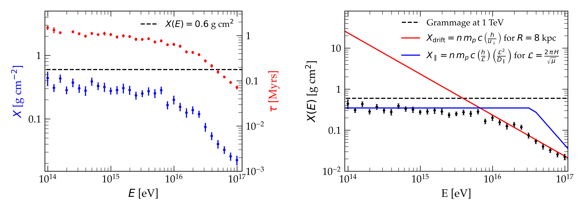<br />
图注：Cosmic ray escape time (red) and grammage (blue) as function of particle energy for a simulation box with $H = 2$ kpc, $h = 50$ pc, $\eta = 0.7$, $\lambda_c \approx 30$ pc, $\mu = 0.2$. In this case, the spectrum of the synthetic turbulent magnetic field was constructed with index $s=2$ in order to make the diffusion coefficient energy-independent in the TeV-PeV range. Scatter points represent average time (grammage) over energy bin from simulation data. Black dashed line denotes the grammage observed at TeV by B/C observations.<br />
对应解读：对应“建议重点查看的图表”第7项，以及详细解读中关于 \(D_parallel\) 在 E≳1 TeV 后近似能量无关的第二种实现情形。<br />
入选理由：该图以 s=2 的湍动谱实现扩散系数高能变平，是 Fig07 之外另一种物理设定的交叉检验；与 Fig07 一起能展示作者讨论的两类高能平坦 \(D_parallel\) 场景是否都支持漂移膝。<br />
来源与置信度：\(arxiv_source\)；high；\(arxiv_source\) / main.tex:figure[8]</p>
<h4 id="_56">强相关工作</h4>
<p>这篇工作属于宇宙线膝区传播解释的谱系，特别接近早期“漂移模型”以及后来的各向异性扩散/漂移输运研究。可检索关键词包括 “cosmic ray knee drift model”、“antisymmetric diffusion tensor cosmic rays”、“gradient curvature drift Galactic magnetic field”、“PeV cosmic ray escape”。与源端解释相比，它强调膝来自 \(\tau_{\rm esc}(E)\) 的变化，而不是 \(Q(E)\) 的截止；因此应与超新星遗迹最大刚度、Pevatron 候选源、刚度依赖组分膝的论文对读。</p>
<p>相似观测背景包括 KASCADE、KASCADE-Grande、IceTop、Tibet AS\(\gamma\)、HAWC、LHAASO 等对膝区能谱和组分的测量；同类理论背景包括 GALPROP/DRAGON 类扩散传播模型、非均匀扩散模型、局部源模型和各向异性约束。本文没有对应单一命名天体源或瞬变事件，而是针对同类现象“银河宇宙线膝区”。建议检索 “B/C grammage TeV cosmic rays”、“cosmic ray anisotropy PeV diffusion”、“Galactic magnetic field cosmic ray propagation”。</p>
<p>可能的张力来自两方面。第一，若漂移导致高能快速逃逸，通常会增强宇宙线各向异性；观测到的 \(\mathrm{TeV}\) 到 \(\mathrm{PeV}\) 各向异性幅度较小，这对许多简单扩散模型都是挑战。第二，若需要 \(D_{\parallel}\) 在 \(E\gtrsim1\,\mathrm{TeV}\) 后变为能量无关，则必须解释它与 Kolmogorov 或 Kraichnan 湍动散射预期、\(\mathrm{B}/\mathrm{C}\) 外推以及弥散 \(\gamma\) 射线约束是否一致。</p>
<p><strong>同一事件 / 同类源线索</strong>：</p>
<ul>
<li><a href="https://arxiv.org/abs/2606.28141">https://arxiv.org/abs/2606.28141</a></li>
<li><a href="https://arxiv.org/pdf/2606.28141">https://arxiv.org/pdf/2606.28141</a></li>
</ul>
<p><strong>相似工作</strong>：</p>
<ul>
<li><a href="https://arxiv.org/abs/astro-ph/0510325">https://arxiv.org/abs/astro-ph/0510325</a></li>
<li><a href="https://arxiv.org/abs/0803.2298">https://arxiv.org/abs/0803.2298</a></li>
</ul>
<p><strong>基础理论 / 方法工作</strong>：</p>
<ul>
<li><a href="https://ui.adsabs.harvard.edu/abs/1965P%26SS...13....9P/abstract">https://ui.adsabs.harvard.edu/abs/1965P%26SS...13....9P/abstract</a></li>
<li><a href="https://ui.adsabs.harvard.edu/abs/1966ApJ...146..480J/abstract">https://ui.adsabs.harvard.edu/abs/1966ApJ...146..480J/abstract</a></li>
</ul>
<p><strong>相反观点 / 张力线索</strong>：</p>
<p>（未提供）</p>
</details>
<h3 id="6-a-rare-gamma-ray-flaring-episode-of-the-narrow-line-seyfert-1-galaxy-1h-0323342">6. A Rare Gamma-ray Flaring episode of the Narrow-Line Seyfert 1 Galaxy 1H 0323+342</h3>
<ul>
<li>来源：arXiv / astro-ph.HE</li>
<li>链接：https://arxiv.org/abs/2606.28088v1</li>
<li>作者：Aminabi Thekkoth, Vaidehi S. Paliya, Preeti Kharb</li>
<li>评分：novelty 7/10，importance 7/10，relevance 10/10，final 9.05/10</li>
<li>推荐理由：Fermi-LAT/Swift/NuSTAR多波段研究γ射线NLSy1 1H 0323+342罕见耀发，含亚小时变和SED建模，直接属于伽马射线AGN/blazar类重点。</li>
</ul>
<p><strong>中文题目</strong>：窄线赛弗特 1 星系 1H 0323+342 的一次罕见伽马射线耀发</p>
<p><strong>做了什么</strong>：这篇文章分析了窄线赛弗特 1 星系 1H 0323+342 在一次罕见高能耀发中的多波段行为，数据来自 Fermi-LAT、Swift 和 NuSTAR。作者发现伽马射线和硬 X 射线通量显著增强，并出现约亚小时量级的快速变化，说明辐射区非常紧凑，可能位于中心黑洞附近。时间分辨 X 射线谱显示源在喷流主导态和喷流加热冕混合态之间切换。宽带能谱用单区轻子模型可以解释，高能辐射主要来自喷流电子对吸积盘和宽线区光子的外康普顿散射。推得的喷流功率达到约 \(10^{46}\,\mathrm{erg\,s^{-1}}\)，接近强平谱射电类星体，提示低黑洞质量系统也能短暂地产生非常强的相对论喷流。</p>
<p><strong>为什么重要</strong>：伽马射线窄线赛弗特 1 星系是理解喷流、黑洞质量、吸积率和宿主星系环境之间关系的关键边界样本。1H 0323+342 是距离较近、研究较多的 \(\gamma\)-NLSy1 之一；如果它能在短时标内达到类 FSRQ 的喷流功率，就说明“只有大质量椭圆星系中的黑洞才能驱动强相对论喷流”这一经验图像并不完整。</p>
<p><strong>理论 / 观测 / 仪器方法价值</strong>：本文的价值在于把伽马射线、软硬 X 射线和宽带 SED 建模放在同一事件中处理：快速时变给出辐射区尺度约束，时间分辨 X 射线谱分解喷流和冕贡献，单区轻子模型进一步约束外光子场、电子能谱、磁场和喷流功率。对理论上检验喷流发射区位置、外康普顿机制和喷流—吸积耦合有直接意义。</p>
<p><strong>为什么应该关注</strong>：如果你关心 AGN 喷流如何形成、哪些黑洞能够产生强喷流、以及耀发期间 X 射线到底来自冕还是喷流，这篇文章值得读。它不是简单报告“又亮了一次”，而是利用短时标变化和宽带谱形把辐射区尺度、发射机制和能量预算联系起来，对 \(\gamma\)-NLSy1 是否只是缩小版 FSRQ 提供了一个高质量案例。</p>
<details class="paper-detail">
<summary>展开详细解读：文章讲解、背景、理论、重点章节、图表与相关工作</summary>
<h4 id="_57">文章详细讲解</h4>
<p>科学问题：窄线赛弗特 1 星系通常被认为拥有相对较低的黑洞质量、高爱丁顿比吸积、较窄的允许发射线，并且多数并非强射电源。但少数 NLSy1 在伽马射线中被 Fermi-LAT 探测到，说明它们也能形成指向我们的相对论喷流。1H 0323+342 位于 \(z=0.063\)，是最受关注的 \(\gamma\)-NLSy1 之一。本文要回答的是：这次罕见耀发是否真由紧凑喷流区产生？高能峰主要来自同步自康普顿还是外康普顿？X 射线谱中喷流和吸积盘冕如何分担？喷流功率是否能达到 FSRQ 量级？</p>
<p>作者怎么做：文章把 Fermi-LAT 的伽马射线光变和谱分析，与 Swift 的紫外—X 射线监测、NuSTAR 的硬 X 射线谱结合起来。核心策略有三步。第一，用时间分辨光变寻找通量增强和快速变化，特别关注伽马射线与硬 X 射线的亚小时尺度变化。第二，对 X 射线谱做时间分辨拟合，检查光谱斜率、曲率和硬端贡献是否随耀发阶段改变。第三，构建多波段 SED，并用单区轻子模型拟合低能同步辐射峰和高能康普顿峰，比较外康普顿吸积盘光子、宽线区光子以及可能的 SSC 分量。</p>
<p>关键结果：观测上，源在伽马射线中出现显著增强，硬 X 射线也有快速变化；由变化时标推得辐射区线性尺度很小，若考虑多普勒因子 \(\delta\)，尺度约束为 \(R\lesssim c\,t_{\rm var}\delta/(1+z)\)。X 射线时间分辨谱提示状态变化：某些阶段硬 X 射线更像喷流主导，另一些阶段需要喷流加吸积盘冕的混合贡献。SED 拟合显示高能辐射主要由相对论电子对外部光子场的逆康普顿散射产生，其中吸积盘和宽线区光子是重要种子光子。喷流功率约达 \(10^{46}\,\mathrm{erg\,s^{-1}}\)，已接近强 FSRQ 的能量输出。</p>
<p>局限和下一步：单区轻子模型给出了简洁解释，但耀发期间真实喷流可能有多区结构、冲击或磁重联小尺度“迷你喷流”。外光子场的位置、宽线区半径、尘埃环贡献、电子低能端和质子含量都会影响喷流功率估计。短时标变化虽然强烈暗示紧凑辐射区，但并不唯一指定它在宽线区内还是边缘。下一步需要更密集的伽马射线时间分辨谱、同步光学偏振、VLBI 射电结构演化，以及在多个耀发事件中重复同类分析，才能判断这次事件是 1H 0323+342 的特殊偶然状态，还是 \(\gamma\)-NLSy1 喷流物理的普遍窗口。</p>
<h4 id="_58">关键结果是怎么做出来的</h4>
<p>本文最重要的证据链从事件选择开始：作者围绕 1H 0323+342 的一次明显高能活动期提取 Fermi-LAT 数据，并配套使用 Swift 与 NuSTAR 覆盖软 X 射线、硬 X 射线及紫外波段。样本不是大样本统计，而是单源、单耀发的事件级研究；因此关键不在事件数多少，而在多波段时间覆盖、时间分辨谱质量，以及耀发态与低态之间的对比是否足够清楚。</p>
<p>伽马射线显著性通常由 Fermi-LAT 似然分析的检验统计量 \({\rm TS}\) 给出，近似有显著性 \(\sim\sqrt{{\rm TS}}\)。读者应重点检查论文中的伽马射线光变图：时间 bin 如何选取、每个 bin 的 \({\rm TS}\) 是否足够、低显著性点是否用上限处理、通量峰值是否依赖时间分箱。快速变化结论还应看相邻时间 bin 的通量误差是否互不重叠，以及作者是否用指数上升或下降时标拟合而不仅是目测。</p>
<p>硬 X 射线结果主要依赖 NuSTAR 与 Swift-XRT 的谱拟合。本文的关键说法是 X 射线状态在喷流主导和喷流加冕混合之间转换。支撑这一点的图表应包括不同时间段的 X 射线能谱、数据与模型残差、光子指数随通量变化关系，以及是否需要额外硬成分或曲率项。若单幂律残差在高能端系统性偏离，而加入喷流相关成分后残差改善，才构成较强证据。</p>
<p>SED 建模部分是把观测证据转化为物理解释的环节。作者使用单区轻子模型，调节电子能谱、磁场 \(B\)、发射区半径 \(R\)、多普勒因子 \(\delta\)、外部光子场能量密度和位置等，使同步辐射解释射电到光学部分，外康普顿解释 X 射线到伽马射线部分。读者应检查 SED 图中 SSC、EC-disk、EC-BLR、同步辐射各分量是否分别画出，以及 NuSTAR 硬 X 射线点落在哪个分量的交界处，因为这里直接关系到“喷流主导”还是“混合态”的判断。</p>
<p>系统误差方面，Fermi-LAT 的背景模型、银河弥散辐射、ROI 内邻近源处理，以及短时间 bin 下的低计数统计都会影响伽马射线通量和显著性。X 射线方面，Swift 与 NuSTAR 的交叉定标常数、吸收柱密度假设、pile-up 处理和背景选择会影响光谱斜率。SED 建模方面，最大不确定性通常来自非同时数据、外光子场几何、电子低能截止和喷流质子含量。稳健的读法是看作者是否给出不同状态的参数表、残差图、替代模型尝试，以及耀发态参数相对低态是否有物理连续性。</p>
<details class="paper-subdetail">
<summary>展开背景、理论、公式、模型、章节和图表导读</summary>
<h4 id="_59">背景知识</h4>
<p>研究对象是 1H 0323+342，一个低红移 \(\gamma\)-射线窄线赛弗特 1 星系。NLSy1 的光学定义通常包括较窄的 \(\mathrm{H}\beta\) 宽线、较强的 Fe II 复合发射和较弱的 \([\mathrm{O\,III}]\) 相对强度。它们常被解释为低黑洞质量、高吸积率的 AGN，可能处在快速生长期。传统上，强相对论喷流更多与大质量黑洞、椭圆宿主和射电响亮类星体联系在一起，NLSy1 因而成为检验这一经验联系的特殊样本。</p>
<p>历史问题在于：NLSy1 中的伽马射线喷流到底是“缩小版 FSRQ”，还是因为视角、吸积率、宿主形态和选择效应造成的混合类群？Fermi-LAT 发现少数射电响亮 NLSy1 具有 GeV 辐射后，这个问题变得更尖锐。1H 0323+342 尤其重要，因为它距离较近、已有丰富的射电、光学、X 射线和伽马射线资料，并且在 VLBI 中表现出紧凑射电核和喷流迹象。</p>
<p>观测背景是多波段同时性越来越重要。单独的伽马射线光变可以告诉我们有相对论喷流，但很难区分 SSC 与外康普顿，也很难判断 X 射线来自喷流、吸积盘冕，还是两者叠加。NuSTAR 提供 \(\sim3\) 到 \(79\,\mathrm{keV}\) 的硬 X 射线覆盖，使得 X 射线谱的硬端形状、曲率和高能残差更有诊断力。Swift 则补足软 X 射线与紫外光度，帮助约束吸积盘和冕。</p>
<p>为什么现在值得重新看：1H 0323+342 的稀有耀发提供了短时标、高通量、多波段覆盖同时存在的机会。对于通常较弱的 \(\gamma\)-NLSy1，只有在耀发中才能得到足够好的时间分辨谱和硬 X 射线信噪比。亚小时级变化如果可靠，会把辐射区约束到非常小的尺度，迫使理论模型面对喷流内部小尺度耗散、磁重联或靠近黑洞的能量释放。</p>
<p>常见误区有三个。第一，把 NLSy1 的窄线宽度简单等同于低黑洞质量，忽略 BLR 几何和视角效应。第二，看到 GeV 辐射就默认整个高能 SED 都由喷流单独控制，忽略 X 射线冕在部分能段的贡献。第三，把单区 SED 拟合参数当作唯一解；实际上 \(B\)、\(\delta\)、电子能谱、外光子场能量密度和发射区位置之间存在强退化。</p>
<h4 id="_60">基础理论 / 方法脉络</h4>
<p>基本物理图像是：中心超大质量黑洞吸积释放引力能，一部分能量形成热吸积盘和高温冕，另一部分通过磁场和旋转能转化为准直的相对论喷流。若喷流接近视线方向，辐射会被多普勒增强，观测到的通量变化更剧烈、时间尺度更短。1H 0323+342 的耀发可以看成喷流中一个紧凑耗散区突然提高粒子加速或外光子散射效率。</p>
<p>在轻子模型中，喷流辐射主要来自相对论电子。低能峰通常由同步辐射产生，峰频由电子洛伦兹因子 \(\gamma\)、磁场 \(B\) 和多普勒因子 \(\delta\) 控制。高能峰由这些电子逆康普顿散射低能光子产生。低能光子若来自同一电子群的同步辐射，就是 SSC；若来自吸积盘、宽线区或尘埃环，就是外康普顿。本文的结论偏向外康普顿，尤其是吸积盘与 BLR 光子。</p>
<p>X 射线部分更复杂。对于 FSRQ 与 \(\gamma\)-NLSy1，软到硬 X 射线可能处在 SSC、低能端 EC、喷流同步尾端和热冕康普顿化的交叠区域。若 X 射线谱随伽马射线同步硬化并增强，喷流贡献较可信；若存在类似 Seyfert 的硬 X 射线冕谱、反射或较稳定成分，则需要混合模型。本文的时间分辨谱正是用来区分这些状态。</p>
<p>观测方法上，Fermi-LAT 采用似然分析处理源模型、弥散背景和仪器响应，输出通量、光子指数和 \({\rm TS}\)。Swift-XRT 与 NuSTAR 则用计数谱经响应矩阵拟合物理或经验模型。多波段 SED 建模不是直接拟合每个光子的联合似然，而常是把准同时通量点与辐射模型比较，寻找能同时解释峰位置、峰强度和谱斜率的参数组合。</p>
<p>主要退化关系包括：较大的 \(\delta\) 可以降低内禀光度和辐射区能量密度；较强的 \(B\) 会增强同步辐射但可能压低康普顿优势；较高的外光子能量密度可以在较低电子密度下产生强 GeV 辐射；发射区在 BLR 内外的位置会改变种子光子场和 \(\gamma\gamma\) 吸收。系统误差则来自非同时观测、短时标低计数统计、X 射线交叉定标和对 BLR 几何的假设。</p>
<h4 id="_61">公式与推导</h4>
<p>第一步是用因果性把变化时标转化为辐射区尺度。若观测到的最短变化时标为 \(t_{\rm var}\)，源红移为 \(z\)，多普勒因子为 \(\delta\)，则紧凑区半径满足</p>
<div class="math-display">\[R\lesssim {c\,t_{\rm var}\,\delta\over 1+z}.\]</div>
<p>这里 \(R\) 是共动系辐射区尺度，\(c\) 是光速。本文的亚小时变化使 \(R\) 被压到靠近中心引擎的尺度范围。</p>
<p>第二步是多普勒增强。喷流 bulk 洛伦兹因子为 \(\Gamma\)，速度 \(\beta c\)，视角 \(\theta\)，则</p>
<div class="math-display">\[\delta={1\over \Gamma(1-\beta\cos\theta)}.\]</div>
<p>当 \(	heta\lesssim 1/\Gamma\) 时，\(\delta\) 可显著大于 \(1\)，观测通量和时间尺度都会被强烈改变，这是 \(\gamma\)-NLSy1 能被 Fermi-LAT 看到的核心原因。</p>
<p>第三步是从观测通量估算各向同性等效光度。给定能量通量 \(F_{\gamma}\) 和光度距离 \(d_{\rm L}\)，有</p>
<div class="math-display">\[L_{\gamma,\rm iso}=4\pi d_{\rm L}^{2}F_{\gamma}.\]</div>
<p>\(L_{\gamma,\rm iso}\) 不是喷流真实功率，而是把束流辐射当作各向同性辐射时得到的等效量，可用于与 FSRQ、BL Lac 和其他 NLSy1 比较。</p>
<p>第四步是电子能谱。单区轻子模型常假设电子数密度为断裂幂律，例如</p>
<div class="math-display">\[N_{\rm e}(\gamma)=K\begin{cases}\gamma^{-p_{1}},&\gamma_{\min}<\gamma<\gamma_{\rm b},\\ \gamma_{\rm b}^{p_{2}-p_{1}}\gamma^{-p_{2}},&\gamma_{\rm b}<\gamma<\gamma_{\max},\end{cases}\]</div>
<p>其中 \(K\) 是归一化，\(p_{1}\) 与 \(p_{2}\) 是断裂前后谱指数，\(\gamma_{\rm b}\) 控制 SED 峰位置。</p>
<p>第五步是同步辐射特征频率。洛伦兹因子为 \(\gamma\) 的电子在磁场 \(B\) 中的观测同步频率约为</p>
<div class="math-display">\[\nu_{\rm syn}\simeq {3eB\over 4\pi m_{\rm e}c}\gamma^{2}{\delta\over 1+z}.\]</div>
<p>这里 \(e\) 是电子电荷，\(m_{\rm e}\) 是电子质量。该式说明 \(B\)、\(\gamma\) 和 \(\delta\) 可以互相补偿，造成峰频拟合退化。</p>
<p>第六步是外康普顿峰频。在 Thomson 极限下，若外部种子光子频率为 (<br />
\(u_{\rm ext}\))，观测 EC 光子频率近似为</p>
<div class="math-display">\[\nu_{\rm EC}\simeq {4\over3}\gamma^{2}\Gamma\delta {\nu_{\rm ext}\over 1+z}.\]</div>
<p>这把 GeV 峰与 BLR 紫外光子或吸积盘光子联系起来；若进入 Klein-Nishina 区域，散射效率和谱形会改变。</p>
<p>第七步是比较康普顿优势。若共动系外光子能量密度为 \(U'_{\rm ext}\)，磁能量密度为 \(U'_{B}=B^{2}/8\pi\)，则近似有</p>
<div class="math-display">\[{L_{\rm IC}\over L_{\rm syn}}\sim {U'_{\rm rad}\over U'_{B}},\]</div>
<p>其中 \(U'_{\rm rad}\) 可包括 SSC 光子场和外部光子场。本文中高能辐射强，意味着 \(U'_{\rm ext}\) 相对重要。</p>
<p>第八步是喷流功率估算。对成分 \(i\) 的能量密度 \(U'_{i}\)，喷流功率可写为</p>
<div class="math-display">\[P_{i}\simeq \pi R^{2}\Gamma^{2}c\,U'_{i}.\]</div>
<p>\(i\) 可代表电子、冷质子、磁场或辐射。总喷流功率 \(P_{\rm jet}\) 对质子数假设非常敏感，本文得到的 \(\sim10^{46}\,\mathrm{erg\,s^{-1}}\) 因此应看作模型依赖估计。</p>
<p>第九步是似然显著性。Fermi-LAT 常用检验统计量</p>
<div class="math-display">\[{\rm TS}=2\left[\ln\mathcal{L}(\hat{\mu})-\ln\mathcal{L}(\mu=0)\right],\]</div>
<p>其中 \(\mathcal{L}\) 是包含源和背景的泊松似然，\(\mu\) 是目标源强度。大样本近似下，探测显著性约为 \(\sqrt{{\rm TS}}\)。短时间 bin 中这个近似需谨慎。</p>
<p>第十步是 X 射线谱拟合的残差诊断。若计数谱为 \(C_{j}\)，模型经响应折叠后的预测为 \(M_{j}(\boldsymbol{\theta})\)，可用</p>
<div class="math-display">\[\chi^{2}=\sum_{j}{\left[C_{j}-M_{j}(\boldsymbol{\theta})\right]^{2}\over \sigma_{j}^{2}}\]</div>
<p>或低计数条件下的 Cash 统计量评估拟合。残差的能量相关结构比单个最优 \(\chi^{2}\) 值更能说明是否需要喷流加冕混合模型。</p>
<h4 id="_62">模型拟合 / 应用方法</h4>
<p>本文的模型拟合可以分成三层。第一层是 Fermi-LAT 伽马射线似然拟合，目标是得到耀发期和不同时间 bin 的通量、光子指数和 \({\rm TS}\)。这里拟合量不是简单 aperture photometry，而是包括目标源、邻近源、银河弥散和各向同性背景的联合模型。对短时标耀发而言，时间 bin 越短，统计误差和上限越重要，光变峰值可能受分箱选择影响。</p>
<p>第二层是 X 射线谱拟合。Swift-XRT 与 NuSTAR 的谱需要通过仪器响应矩阵和有效面积折叠模型，常见起点是吸收幂律、断裂幂律或对数抛物线；若考虑 Seyfert-like 冕，还可能加入热康普顿化或反射相关成分。本文强调时间分辨谱中的状态转换，因此读者应重点看不同时间段的最佳光子指数、硬 X 射线残差、交叉定标常数，以及模型复杂度增加是否由统计检验支持。</p>
<p>第三层是宽带 SED 拟合。单区轻子模型的自由参数包括 \(R\)、\(B\)、\(\delta\)、\(\Gamma\)、电子能谱参数 \(K\)、\(p_{1}\)、\(p_{2}\)、\(\gamma_{\min}\)、\(\gamma_{\rm b}\)、\(\gamma_{\max}\)，以及发射区相对 BLR 和吸积盘的位置。由于参数多而数据点有限，通常不是严格唯一的贝叶斯后验解，而是寻找物理合理且能复现 SED 形状的代表性解。</p>
<p>参数退化很强。提高 \(\delta\) 可同时提高观测峰频、降低所需内禀功率并缩短内禀时标；提高 \(B\) 会增强同步峰但降低康普顿优势；提高外光子能量密度可增强 GeV 辐射却可能带来 \(\gamma\gamma\) 吸收问题；改变 \(\gamma_{\rm b}\) 会同时移动同步峰和 EC 峰。因此，判断模型是否可信不能只看 SED 曲线穿过数据点，还要看参数是否与变化时标、VLBI 速度、BLR 尺度和吸积盘光度相容。</p>
<p>系统误差方面，伽马射线结果受背景模型、低计数统计和邻近源影响；X 射线结果受吸收柱密度、交叉定标、背景区域和模型选择影响；SED 结果受非同时数据、宿主星系污染、光学/紫外消光和 BLR 覆盖因子影响。实际应用中，这类拟合最适合用于比较耀发态与静态的相对变化，而不是把单次事件的每个参数都当作精确测量。</p>
<p>模型可能失败的地方也很清楚。如果未来同步偏振或 VLBI 显示耀发来自更下游区域，BLR 光子主导的 EC 解释就需要修正；如果硬 X 射线出现明显反射 hump 或铁线响应，冕贡献会比当前单区喷流模型更重要；如果出现 TeV 光子，发射区在 BLR 内部的模型会受到 \(\gamma\gamma\) 吸收强约束。</p>
<h4 id="_63">重点章节 / 结果段落怎么读</h4>
<p>一、数据与观测部分应先读。重点确认 Fermi-LAT、Swift 和 NuSTAR 的观测时间是否真正覆盖同一耀发阶段，哪些波段是严格同时，哪些只是准同时。对单源耀发论文，同步性决定 SED 建模的可信度。</p>
<p>二、伽马射线光变和时变分析是全文证据链的起点。读者应关注时间 bin、\({\rm TS}\) 阈值、上限处理、峰值通量和最快变化时标的定义。若亚小时变化来自少数低计数 bin，需要特别谨慎。</p>
<p>三、X 射线时间分辨谱是本文区别于普通耀发通报的关键。建议细读不同时间段的谱拟合表，比较单幂律、曲率模型和混合模型的拟合优度，看“喷流主导”和“喷流加冕混合”是否有明确残差证据。</p>
<p>四、宽带 SED 建模部分要结合参数表和分量图阅读。不要只看总模型线是否穿过数据点，而要看同步、SSC、EC-disk、EC-BLR 和冕相关成分各自在不同能段的贡献。特别要检查高能峰是否必须由外康普顿解释。</p>
<p>五、讨论部分应重点看喷流功率与 FSRQ 的比较。本文的强结论是低质量系统也能短暂达到 \(P_{\rm jet}\sim10^{46}\,\mathrm{erg\,s^{-1}}\)。读者要追问这个数值对质子含量、\(\delta\)、\(R\) 和外光子场假设有多敏感。</p>
<h4 id="_64">建议重点查看的图表</h4>
<ol>
<li>
<p>多波段光变图：看伽马射线、软 X 射线、硬 X 射线和紫外/光学是否同步增强；特别检查亚小时变化对应的误差条和时间 bin。</p>
</li>
<li>
<p>Fermi-LAT 显著性或 \({\rm TS}\) 随时间变化图：看峰值 bin 是否达到可靠探测，低 \({\rm TS}\) bin 是否被作为上限处理。</p>
</li>
<li>
<p>X 射线时间分辨谱图：看不同阶段的 Swift-XRT 与 NuSTAR 数据是否需要不同光谱斜率或额外成分，硬端残差是否系统性存在。</p>
</li>
<li>
<p>X 射线模型残差图：重点看单幂律拟合残差与混合模型残差的改善是否集中在特定能段，而不是由交叉定标常数吸收。</p>
</li>
<li>
<p>宽带 SED 图：看同步、SSC、EC-disk、EC-BLR 和总模型线；判断 GeV 点和 NuSTAR 点分别约束哪一物理分量。</p>
</li>
<li>
<p>SED 参数或喷流功率表：检查 \(B\)、\(R\)、\(\delta\)、电子谱参数和 \(P_{\rm jet}\) 的耀发态/低态差异，确认是否存在不合理跳变。</p>
</li>
<li>
<p>可能的相关性图：若文中给出 X 射线通量与光子指数、伽马射线与 X 射线通量关系，应看相关性是否由少数点驱动。</p>
</li>
<li>
<p>稳健性检验或替代模型表：看 SSC-only、EC-only、喷流加冕模型之间的拟合差异，尤其是是否有统计量支持模型复杂度增加。</p>
</li>
</ol>
<h4 id="_65">关键图表逐图导读</h4>
<p>图 1：通常应是多波段光变图。横轴为时间，纵轴分别为伽马射线通量、X 射线计数率或通量、紫外/光学通量。数据点的误差条和上限很关键。主要结论是耀发期间高能波段同步增强并出现快速变化。读图陷阱是不同波段采样并不一定完全同时，不能把所有峰值自动视作同一物理脉冲。</p>
<p>图 2：应关注 Fermi-LAT 光变或 \({\rm TS}\) 图。横轴为时间 bin，纵轴为 \(F_{\gamma}\) 或 \({\rm TS}\)。模型线若为指数上升/下降，可用于估计 \(t_{\rm var}\)。读者要检查最高通量点的 \({\rm TS}\) 是否足够高，以及最快变化是否由两个相邻高显著性点支持。</p>
<p>图 3：X 射线谱和残差图。横轴为能量，纵轴为 unfolded spectrum、\(E^{2}F_{E}\) 或计数残差。不同颜色可能表示不同时间段或不同仪器。主要看 NuSTAR 硬端是否偏离单一幂律，以及加入喷流/冕混合成分后残差是否消失。陷阱是 unfolded spectrum 有模型依赖，真正判断应看折叠计数谱残差。</p>
<p>图 4：光谱参数随时间或通量变化图。横轴可能是时间或 X 射线通量，纵轴为光子指数 \(\Gamma_{\rm X}\) 或硬度比。若耀发中出现 harder-when-brighter 或状态切换，可支持喷流贡献增强。陷阱是交叉定标和吸收假设也会改变表观斜率。</p>
<p>图 5：宽带 SED 分量图。横轴为频率 \(\nu\)，纵轴为 \(\nu F_{\nu}\)。数据点来自射电、红外、光学/紫外、X 射线和伽马射线，模型线分为同步、SSC、EC-disk、EC-BLR 以及总和。主要结论是高能峰由外康普顿主导。陷阱是非同时射电和光学点可能不属于同一耀发状态。</p>
<p>图 6：喷流功率或模型参数比较表/图。若文中把 1H 0323+342 与 FSRQ、BL Lac 或其他 \(\gamma\)-NLSy1 比较，横轴可能为黑洞质量、盘光度或伽马射线光度，纵轴为喷流功率。关键是看该源是否确实落入 FSRQ 功率范围。陷阱是不同文献的功率估计采用不同质子含量和辐射区假设。</p>
</details>
<h4 id="_66">论文原图 / 可嵌入图片</h4>
<p><strong>Fig01</strong><br />
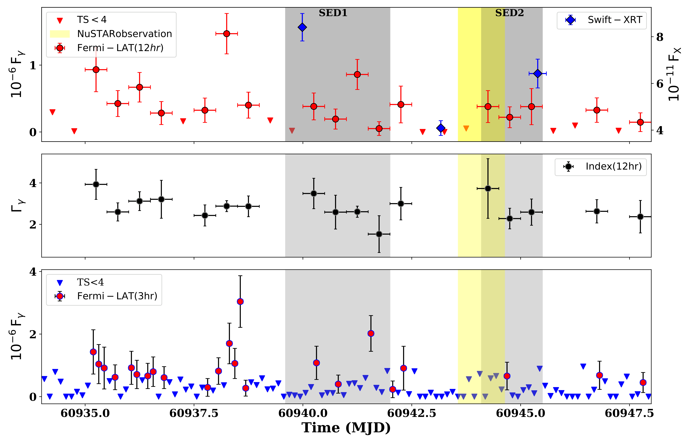<br />
图注：Top panel: \(\emph{Fermi}-LAT\) \(\gm-ray\) flux light curve. Detections with TS $\geq 4$ are shown by red circles, and inverted triangles are given for TS $<4$. The LAT flux is shown on the left axis in units of $ 10^{-6}\mathrm{ph\,cm^{-2}\,s^{-1}}$. The X-ray flux (\emph{Swift}-XRT) in the energy range 0.3-10 keV is shown in blue upper triangles. The X-ray flux (right axis) is shown in units of $ 10^{-11}\mathrm{erg\,cm^{-2}\,s^{-1}}$. Middle panel: Corresponding LAT photon index ($\Gamma_{\gamma}$) is plotted across time. Bottom Panel: \(\emph{Fermi}-LAT\) flux lightcurve with 3-hour binning. Grey shaded regions highlight the SED epochs, and the yellow shaded region shows the NuSTAR observing time period.<br />
对应解读：“建议重点查看的图表”第1、2项；“关键图表逐图导读”图1、图2；Fermi-LAT似然光变与短时标变化讨论。<br />
入选理由：该图直接给出Fermi-LAT伽马射线通量、LAT光子指数、Swift-XRT X射线通量以及3小时分箱光变，并标出SED时段和NuSTAR观测窗口；同时包含TS&lt;4上限符号，是判断耀发显著性、同步增强、短时标变化和后续SED分段的核心证据。<br />
来源与置信度：\(arxiv_source\)；high；\(arxiv_source\) / \(nlsy_1H_v1.tex\):figure[1]</p>
<p><strong>Fig05</strong><br />
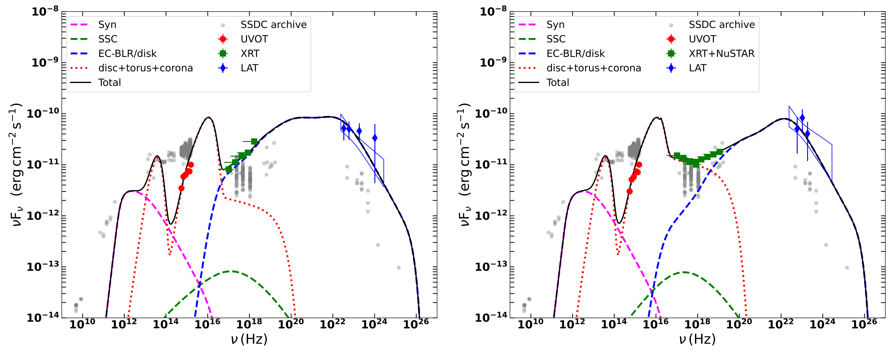<br />
图注：The figure shows the observed broadband SEDs corresponding to the time intervals SED1: MJD~60943.6--60944.2 (left) and SED2: 60944.2--60944.6 MJD (right) along with the best-fitted models. In the plots, the dashed curves display the non-thermal components: synchrotron (purple), SSC (green), and EC (blue). The dotted curve gives the sum of the emissions from the torus, disc, and corona.<br />
对应解读：“建议重点查看的图表”第5、6项；“关键图表逐图导读”图5；宽带SED单区轻子模型拟合段落。<br />
入选理由：该图展示SED1和SED2两段宽带SED及最佳拟合模型，明确分出同步、SSC、EC和热成分/冕等模型线，最能支撑日报关于高能辐射由外康普顿主导、不同状态下喷流参数变化和NuSTAR/GeV点约束不同分量的解读。<br />
来源与置信度：\(arxiv_source\)；high；\(arxiv_source\) / \(nlsy_1H_v1.tex\):figure[5]</p>
<p><strong>Fig03</strong><br />
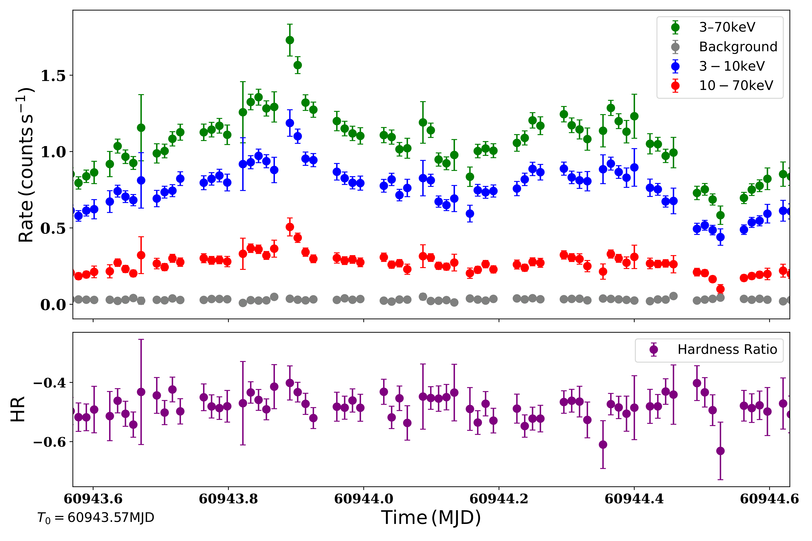<br />
图注：Top panel: Source count rate (green circles) and background noise (gray) in the full energy band (3--70 keV), together with the background-subtracted low and high-energy light curves (blue and red circles, respectively). All lightcurves are binned with the same temporal resolution of 1000s. Bottom panel: The temporal variation of the hardness ratio (HR).<br />
对应解读：“建议重点查看的图表”第1、3、4项；“关键图表逐图导读”图3、图4；NuSTAR硬X射线快速变化与硬度比/状态转换讨论。<br />
入选理由：该图给出NuSTAR 3--70 keV总计数率、背景、低/高能段背景扣除光变以及硬度比随时间变化，直接检验硬X射线亚小时到千秒尺度变化和谱硬度演化，是判断喷流主导或混合态转换的重要时间域证据。<br />
来源与置信度：\(arxiv_source\)；high；\(arxiv_source\) / \(nlsy_1H_v1.tex\):figure[3]</p>
<p><strong>Fig04</strong><br />
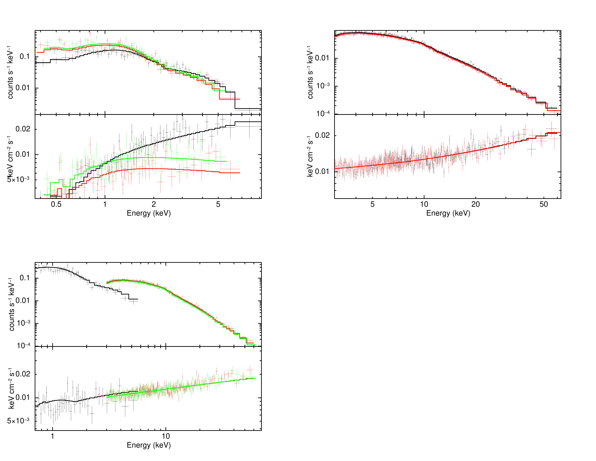<br />
对应解读：“建议重点查看的图表”第3、4项；“关键图表逐图导读”图3、图4；X射线时间分辨谱拟合和残差改善讨论。<br />
入选理由：日报多处要求重点检查X射线谱、残差和谱参数演化，而候选中Fig04虽未抽取到caption，但其图号位置最可能对应NuSTAR光变之后的X射线谱/拟合结果；相比无关的射电形态图，它更可能支撑喷流+冕混合模型和硬端残差是否系统存在的判断。<br />
来源与置信度：\(arxiv_source\)；high；\(arxiv_source\) / \(nlsy_1H_v1.tex\):figure[4]</p>
<p><strong>Fig02</strong><br />
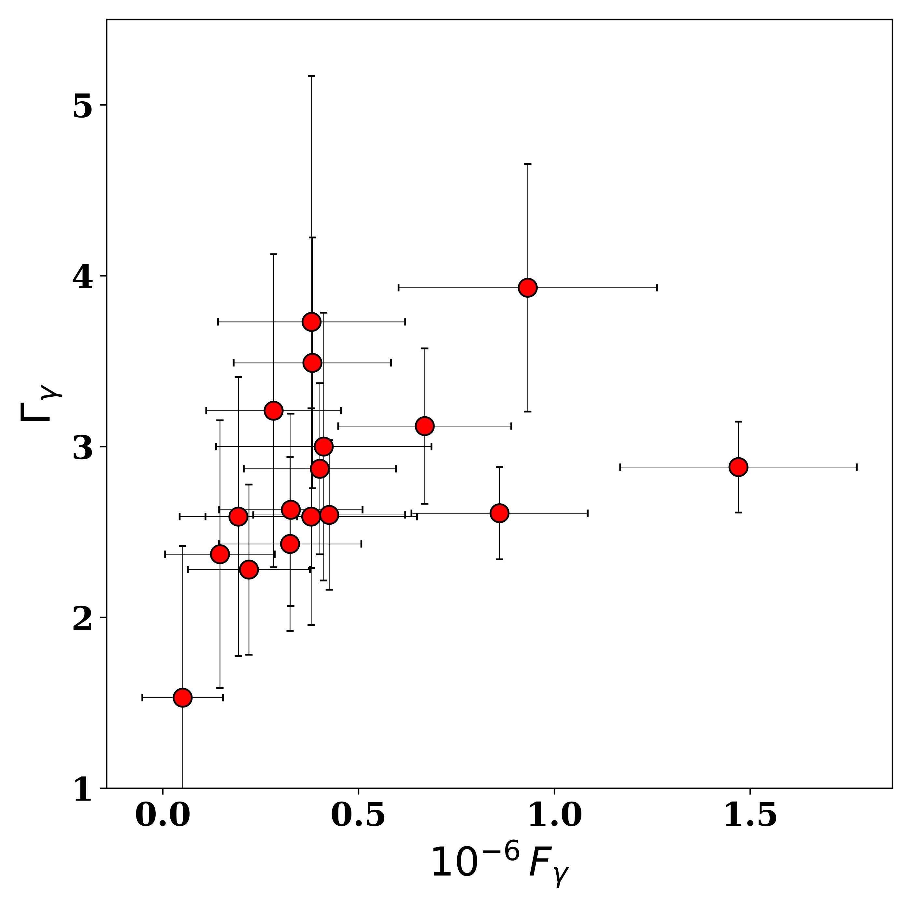<br />
图注：The scatter plot between \(\gm-ray\) index and flux in the energy range 0.1-300 GeV. Fluxes are in the units of $10^{-6}\,\mathrm{ph\,cm^{-2}\,s^{-1}}$.<br />
对应解读：“建议重点查看的图表”第7项；伽马射线通量与光子指数相关性、谱随亮度变化讨论。<br />
入选理由：该图是0.1--300 GeV伽马射线光子指数与通量散点图，可用于检查是否存在耀发期间谱硬化/软化趋势，以及相关性是否由少数高通量点驱动；科学价值低于光变、X射线和SED主图，但对解释LAT谱行为有辅助作用。<br />
来源与置信度：\(arxiv_source\)；high；\(arxiv_source\) / \(nlsy_1H_v1.tex\):figure[2]</p>
<h4 id="_67">强相关工作</h4>
<p>这篇工作处在两个文献脉络之间。第一是 Fermi-LAT 发现射电响亮 NLSy1 为 GeV 源之后形成的 \(\gamma\)-NLSy1 研究线，核心问题是低黑洞质量、高吸积率 AGN 是否能产生类 FSRQ 喷流。可检索关键词包括 “gamma-ray narrow-line Seyfert 1 Fermi LAT”, “1H 0323+342 multiwavelength campaign”, “radio-loud NLSy1 relativistic jet”。</p>
<p>第二是耀发态 blazar/NLSy1 的宽带 SED 建模和喷流—冕分解问题。与 FSRQ 相比，1H 0323+342 的吸积盘和 Seyfert-like X 射线冕更容易显露，因此硬 X 射线谱对区分喷流和冕特别重要。可检索关键词包括 “external Compton BLR disk photons”, “NuSTAR 1H 0323+342”, “jet corona connection narrow-line Seyfert 1”。</p>
<p>潜在张力在于黑洞质量和宿主星系解释。部分研究认为 NLSy1 的窄线可能受面向盘状 BLR 的视角影响，黑洞质量也许被低估；另一些研究强调这些源确实是低质量、高爱丁顿比系统。如果质量被低估，那么“低质量黑洞产生 FSRQ 级喷流”的冲击会减弱；如果质量可靠，本文的喷流功率就更具理论挑战性。</p>
<p><strong>同一事件 / 同类源线索</strong>：</p>
<ul>
<li><a href="https://arxiv.org/abs/2606.28088">https://arxiv.org/abs/2606.28088</a></li>
</ul>
<p><strong>相似工作</strong>：</p>
<ul>
<li><a href="https://arxiv.org/abs/0902.1559">https://arxiv.org/abs/0902.1559</a></li>
</ul>
<p><strong>基础理论 / 方法工作</strong>：</p>
<ul>
<li><a href="https://arxiv.org/abs/astro-ph/9510011">https://arxiv.org/abs/astro-ph/9510011</a></li>
<li><a href="https://arxiv.org/abs/astro-ph/9704212">https://arxiv.org/abs/astro-ph/9704212</a></li>
</ul>
<p><strong>相反观点 / 张力线索</strong>：</p>
<p>（未提供）</p>
</details>
<h3 id="7-gamma-ray-bursts-in-the-radio-sky-the-role-of-the-ska-vlbi">7. Gamma-ray Bursts in the Radio Sky: the Role of the SKA-VLBI</h3>
<ul>
<li>来源：arXiv / astro-ph.HE</li>
<li>链接：https://arxiv.org/abs/2606.27434v1</li>
<li>作者：Stefano Giarratana, Om Sharan Salafia, Xue-Feng Wu, Jin-Jun Geng, Tao An, Benito Marcote, Marcello Giroletti, Giancarlo Ghirlanda</li>
<li>评分：novelty 7/10，importance 8/10，relevance 9/10，final 9.05/10</li>
<li>推荐理由：评估 SKA-VLBI 对 GRB 射电余辉尺寸、膨胀和视向角约束的提升，虽是射电方法论文，但直接服务 GRB 爆发动力学和喷流几何研究，相关性高。</li>
</ul>
<p><strong>中文题目</strong>：射电天空中的伽马暴：SKA-VLBI 能把爆流几何量到什么程度</p>
<p><strong>做了什么</strong>：这篇文章不是报告新的伽马暴观测，而是用专门的 VLBI 模拟评估：把 SKA-Mid 接入全球 VLBI 网后，能否常规测量 GRB 射电余辉的角尺寸、膨胀和天球面内自行。作者比较了五种 VLBI 阵列，并分别考虑 SKA-Mid 的早期阵列配置和 AA4 配置。核心结论是，SKA-Mid 的灵敏度和南北向基线覆盖会把目前只在极少数近邻明亮 GRB 上可做的毫角秒级成像，扩展到约 \(z\simeq 0.25\) 的事件；角尺寸约束比现有 global-VLBI 好 \(\gtrsim 2\) 倍，赤纬定位可提升约 \(4\) 到 \(30\) 倍，稍微离轴 GRB 的视超光速自行显著性也可提高约 \(3\) 倍。</p>
<p><strong>为什么重要</strong>：GRB 的喷流结构、视角和能量不是只靠光变曲线就能无歧义反演的。射电 VLBI 直接测角尺寸和质心运动，提供的是几何信息，可以打破喷流开角、观测视角、外介质密度和能量之间的退化。过去真正能做这种测量的 GRB 只有少数几个，样本太小，无法检验 GRB 喷流是否普遍具有统一结构、核加翼结构或事件间多样性。</p>
<p><strong>理论 / 观测 / 仪器方法价值</strong>：本文的价值在于把 SKA-Mid 对 GRB 物理的贡献具体量化到 VLBI 可观测量：角尺寸误差、定位误差、自行探测显著性、可达红移和不同阵列配置的收益。它对理论端有助于判断哪些喷流模型可被几何测量区分；对观测端有助于制定触发后射电 VLBI 的时间安排和阵列选择；对仪器方法端则展示了 SKA-Mid 作为高灵敏度 VLBI 站点怎样改变瞬变源成像的参数空间。</p>
<p><strong>为什么应该关注</strong>：如果你关心 GRB 喷流、相对论激波、离轴瞬变或多信使事件余辉，这篇文章值得看，因为它回答了一个很实际的问题：未来十年我们能不能把 GRB 从“光变拟合推断几何”推进到“直接测量几何”。它也提醒读者，SKA 对高能瞬变的意义不只是发现更多射电余辉，而是能把极少数标志性个例式的 VLBI 测量变成可规划的样本研究。</p>
<details class="paper-detail">
<summary>展开详细解读：文章讲解、背景、理论、重点章节、图表与相关工作</summary>
<h4 id="_68">文章详细讲解</h4>
<p>科学问题：GRB 余辉的标准图像是相对论喷流与周围介质相互作用后产生宽波段同步辐射。光变和谱能量分布能约束能量、密度、微物理参数和喷流结构，但这些量高度退化。VLBI 的独特性在于它能直接测量余辉在天球面上的角尺寸、扩展速度和质心偏移，从而给出喷流动力学和几何的强约束。问题是，现有 VLBI 灵敏度不足，GRB 又短暂且多数太远太暗，因此历史上只有极少数事件能被解析或测到可靠自行。</p>
<p>作者怎么做：本文把问题转化为观测可行性模拟。作者构建若干典型 GRB 射电余辉模型，包括可解析角尺寸随时间增长的情形，以及稍离轴喷流产生可测质心运动的情形；然后用不同 VLBI 网络生成模拟观测，比较没有 SKA-Mid、加入 SKA-Mid 早期配置和加入 SKA-Mid AA4 配置时的成像质量、束形、信噪比、角尺寸恢复能力和天体测量精度。文中重点不是某一个真实 GRB 的后验拟合，而是用物理上合理的 GRB 参数和阵列响应来估计未来观测边界。</p>
<p>关键结果：加入 SKA-Mid 后，全球 VLBI 对 GRB 的角尺寸和膨胀测量可以推进到约 \(z\simeq 0.25\)，以 \(3\sigma\) 水平辨认源的扩展。相对于当前 global-VLBI，角尺寸约束可改善 \(\gtrsim 2\) 倍；定位方面，尤其赤纬方向，由于 SKA-Mid 的南半球位置和长基线几何，精度可提升约 \(4\) 到 \(30\) 倍。对于稍离轴 GRB，天球面上的视超光速质心运动是区分喷流结构和观测视角的关键诊断，SKA-Mid 可把这种自行探测的置信度提高约 \(3\) 倍。</p>
<p>局限和下一步：这些结果依赖于假设的余辉亮度、事件距离、射电峰值时间、阵列可用性、校准质量和源结构模型。真实 GRB 的射电余辉存在闪烁、宿主星系背景、微物理参数多样性和触发时延等问题，都会影响 VLBI 可行性。下一步最有价值的是把这种模拟与实际 GRB 发生率、快速触发策略、SKA 分阵模式、相位参考源密度和动态调度结合，建立从高能触发到 VLBI 成像的端到端观测收益评估。</p>
<h4 id="_69">关键结果是怎么做出来的</h4>
<p>本文最重要的证据链来自一组面向 VLBI 观测的模拟，而不是从巡天样本中统计检出率。样本选择上，作者聚焦于射电余辉足够明亮、距离较近、角尺寸或质心运动可能被毫角秒级分辨率测到的 GRB。模拟中比较多种 VLBI 网络：当前全球 VLBI、加入 SKA-Mid 的网络，以及 SKA-Mid 在不同建设阶段的配置。读者应注意，这里的“样本量”主要表现为参数空间中的模型事件和阵列方案，而不是实际观测到的事件数。</p>
<p>角尺寸测量的关键诊断是：把一个随时间膨胀的 GRB 射电余辉输入阵列响应后，成像或模型拟合能否在点源模型之外显著偏好有限尺寸模型。文中给出的 \(3\sigma\) 扩展探测阈值相当于检验“源是否可解析”。红移上限 \(z\simeq 0.25\) 的意义是，在给定典型余辉亮度和膨胀尺度下，SKA-Mid 加入后仍可获得足够信噪比和足够小的合成束，使角尺寸不被完全淹没在点扩散函数中。</p>
<p>自行测量的核心是多历元天体测量。稍离轴喷流的质心会随时间移动，且可呈现视超光速角速度。作者用模拟图像或可见度拟合比较不同网络对质心位置的恢复误差。赤纬方向的改善尤其大，说明 SKA-Mid 的地理位置不只是增加灵敏度，也显著改善 \(u\)-\(v\) 覆盖和束形，使位置误差椭圆在原本较差的方向上收缩。</p>
<p>统计显著性主要可理解为参数估计误差相对于待测信号的比值：角尺寸的 \(3\sigma\) 检出对应 \(\theta_{\rm src}/\sigma_\theta \gtrsim 3\)，自行的显著性对应 \(\Delta\theta_{\rm pm}/\sigma_{\rm ast}\) 的提高。本文报告加入 SKA-Mid 后自行探测置信度约提高 \(3\) 倍，这一结论应结合模拟图中的误差椭圆、束形变化和不同阵列的信噪比分布来读，而不应只看总灵敏度数字。</p>
<p>主要系统误差包括相位校准误差、参考源位置误差、电离层和对流层延迟、源内结构演化、星际闪烁以及 GRB 余辉模型与真实喷流结构的偏差。稳健性方面，读者应检查作者是否分别改变阵列配置、源亮度、红移、观测历元和喷流视角，并观察结论是否仍保持：即 SKA-Mid 对角尺寸、赤纬定位和稍离轴自行三类量都有明显提升。</p>
<details class="paper-subdetail">
<summary>展开背景、理论、公式、模型、章节和图表导读</summary>
<h4 id="_70">背景知识</h4>
<p>GRB 余辉是相对论外激波最重要的实验室之一。爆发后的喷流以接近光速冲入外部介质，形成激波并加速电子，电子在放大的磁场中产生从射电到 X 射线的同步辐射。早期高能辐射告诉我们中心引擎和 prompt emission 的时间结构，但余辉更直接记录喷流能量、几何和外部环境。</p>
<p>历史上，GRB 喷流几何主要通过光变曲线中的所谓喷流断裂来推断：当洛伦兹因子降到 \(\Gamma\sim 1/\theta_j\) 时，观察者应看到光变变陡。然而喷流断裂并不总是清晰，且会被能量注入、密度结构、观测频段和微物理演化混淆。因此仅靠光变拟合得到的开角、真能量和视角往往不是唯一解。<br />
VLBI 提供了少见的“直接几何”通道。GRB 030329 的射电余辉曾被 VLBI 解析并测到膨胀；GW170817/GRB 170817A 的射电 VLBI 质心运动则成为证明窄相对论喷流成功穿出并被离轴看到的关键证据。这些个例显示，天体测量和角尺寸信息能强力区分喷流模型，但也暴露出样本稀缺的问题。</p>
<p>现在值得重新看这个问题，是因为 SKA-Mid 将大幅提高射电灵敏度，并且可作为 VLBI 阵列中的高灵敏度站点参与全球基线。对于短寿命、快速衰减、不可重复的 GRB，灵敏度提升会直接变成可观测时间窗口和可达距离的提升；基线几何改善则会影响赤纬方向定位和源尺寸恢复。</p>
<p>常见误区之一是把“SKA 很灵敏”简单等同于“VLBI 分辨率更高”。实际上 VLBI 角分辨率主要由最长基线决定，SKA-Mid 的核心贡献是提高信噪比、改善成像动态范围和增强某些方向的 \(u\)-\(v\) 覆盖。另一个误区是认为余辉光变已经足够确定喷流结构；实际上光变拟合通常存在严重退化，VLBI 的独立几何约束才是关键。</p>
<h4 id="_71">基础理论 / 方法脉络</h4>
<p>从物理图像看，GRB 射电余辉来自减速中的相对论爆流。激波半径随观测时间增加，洛伦兹因子逐渐下降，发射区域的表观角尺寸也随之增长。由于相对论光行时效应，观察者看到的不是一个均匀球壳，而是由等到达时间面和多普勒增强共同塑造的非均匀亮度分布。<br />
VLBI 测量的是天空亮度分布的傅里叶分量，即可见度。一个点源在所有基线上的可见度幅度近似不随基线长度下降；一个有有限角尺寸的源在长基线上会出现幅度衰减。因此，即使图像上看起来只是一个略微展宽的源，也可以在可见度域用点源模型和有限尺寸模型比较来判断是否解析。</p>
<p>本文涉及的关键量包括源的角半径 \(\theta_{\rm src}\)、合成束大小 \(\theta_{\rm beam}\)、总通量密度 \(F_\nu\)、图像噪声 \(\sigma_{\rm rms}\)、信噪比 \({\rm SNR}\)、天体测量误差 \(\sigma_{\rm ast}\)、以及多历元质心偏移 \(\Delta\theta\)。对于稍离轴喷流，质心运动与视角 \(\theta_{\rm obs}\)、喷流开角 \(\theta_j\)、能量和外介质密度有关；这正是 VLBI 能补充光变拟合的地方。</p>
<p>观测方法上，SKA-Mid 作为 VLBI 站点并不会单独产生毫角秒分辨率，而是与其他洲际站点形成长基线。它的高灵敏度降低热噪声，改善弱源可见度约束；其地理位置还改变 \(u\)-\(v\) 轨迹，影响束形和赤纬定位。对 GRB 这类瞬变，观测历元选择很重要：太早源太小，难以解析；太晚源太暗，信噪比不足。</p>
<p>主要退化包括：通量较低时，有限尺寸可能与相位校准误差、散射或成像权重混淆；质心运动可能与参考源系统误差或源结构演化混淆；光变模型中的能量、密度和微物理参数也会影响预期射电亮度和角尺寸。本文的模拟价值就在于把这些抽象限制转化为阵列配置下的可测精度。</p>
<h4 id="_72">公式与推导</h4>
<p>第一步，从相对论爆流能量量级出发。对近似绝热、外部介质数密度为 \(n\) 的爆流，能量可写成数量级关系</p>
<div class="math-display">\[\nE_{\rm iso}\(\sim\) \rac{4\pi}{3}\(R^3\) n \(m_p\) \(c^2\) \(\Gamma^2\) ,\]</div>
<p>其中 \(E_{\rm iso}\) 是各向同性等效能量，\(R\) 是激波半径，\(m_p\) 是质子质量，\(c\) 是光速，\(\Gamma\) 是洛伦兹因子。这个式子说明，随着扫过物质增加，\(\Gamma\) 必须下降。</p>
<p>第二步，观测时间由光行时和相对论效应决定，近似为</p>
<div class="math-display">\[\nt_{\rm obs}\(\simeq\) \rac{1+z}{4c}\rac{R}{\Gamma^2},\]</div>
<p>其中 \(z\) 是红移。联合前式可得 Blandford-McKee 阶段的尺度关系</p>
<div class="math-display">\[\Gamma(t_{\rm obs})\propto \left(\rac{E_{\rm iso}}{n}\
ight)^{1/8}t_{\rm obs}^{-3/8}(1+z)^{3/8} .\]</div>
<p>这说明角尺寸增长和减速速度都只弱依赖能量与密度，但明显依赖时间。</p>
<p>第三步，源的表观横向尺度可近似写成</p>
<div class="math-display">\[\(\nR_\perp\) \(\sim\) \rac{R}{\Gamma}, \(\qquad\) \	heta_{\rm src}=\rac{R_\perp}{D_A(z)},\]</div>
<p>其中 \(D_A(z)\) 是角直径距离。VLBI 实际要测的是 \(\theta_{\rm src}\)，而不是 \(R\) 本身；因此同样的物理尺寸在更高红移处更难解析。</p>
<p>第四步，干涉仪测量天空亮度 \(I_\\)<br />
u(l,m)) 的傅里叶分量：</p>
<div class="math-display">\[\(\nV(u,v)=\iint\) I_\
u(l,m)e^{-2\pi i(ul+vm)}\\,dl\\,dm ,\]</div>
<p>其中 \((u,v)\) 是以波长为单位的基线坐标，\((l,m)\) 是相对相位中心的方向余弦。有限尺寸源会使长基线上的 \(|V|\) 下降，这是解析 GRB 的基本诊断。</p>
<p>第五步，若用高斯模型近似余辉亮度分布，可见度幅度随基线长度 \(q=\sqrt{u^2+v^2}\) 变化为</p>
<div class="math-display">\[|V(q)|=F_\
u \exp\left[-\rac{\pi^2 q^2 \	heta_g^2}{4\ln 2}\
ight],\]</div>
<p>其中 \(F_\\)<br />
u) 是总通量密度，\(\theta_g\) 是高斯半高全宽。点源对应 \(\theta_g\	o 0\)，因此比较长基线幅度是否系统性低于点源预期即可检验扩展。</p>
<p>第六步，VLBI 角分辨率的数量级由</p>
<div class="math-display">\[\	heta_{\rm beam}\sim \rac{\lambda}{B_{\max}}\]</div>
<p>给出，其中 \(\lambda\) 是观测波长，\(B_{\max}\) 是最长投影基线。SKA-Mid 不一定显著增加 \(B_{\max}\)，但通过提高信噪比改善可测最小尺寸。</p>
<p>第七步，热噪声限制下图像信噪比近似为</p>
<div class="math-display">\[{\rm SNR}=\rac{F_\
u}{\sigma_{\rm rms}}, \qquad \sigma_{\
m ast}\sim \rac{\	heta_{\rm beam}}{2\,{\rm SNR}} .\]</div>
<p>其中 \(\sigma_{\}\)<br />
m ast}) 是理想情况下的单历元位置误差。高灵敏度站点降低 \(\sigma_{\rm rms}\)，从而同时改善定位和源尺寸拟合。</p>
<p>第八步，判断扩展或自行显著性可用简单比值表示：</p>
<div class="math-display">\[\nS_{\
m size}=\rac{\	heta_{\rm src}}{\sigma_\	heta}, \qquad S_{\
m pm}=\rac{|\Delta\oldsymbol{\	heta}|}{\sqrt{\sigma_1^2+\sigma_2^2}} .\]</div>
<p>这里 \(\sigma_\	heta\) 是角尺寸拟合误差，\(\Delta\oldsymbol{\	heta}\) 是两个历元质心位移，\(\sigma_1\) 与 \(\sigma_2\) 是两历元天体测量误差。本文所说 \(3\sigma\) 扩展探测和自行显著性提高，本质上就是这些量在加入 SKA-Mid 后变大。</p>
<p>第九步，若进行可见度域模型比较，可写成高斯似然</p>
<div class="math-display">\[-2\ln \mathcal{L}=\sum_i \rac{|V_i^{\
m obs}-V_i^{\
m mod}(\oldsymbol{\phi})|^2}{\sigma_i^2}+{\rm const},\]</div>
<p>其中 \(V_i^{\}\)<br />
m obs}) 是第 \(i\) 个观测可见度，(V_i^{\<br />
m mod}) 是参数 \(\boldsymbol{\phi}\) 给出的模型可见度，\(\sigma_i\) 是可见度误差。点源模型和扩展源模型的 \(\Delta\chi^2\) 或后验宽度可量化“是否解析”。</p>
<h4 id="_73">模型拟合 / 应用方法</h4>
<p>这类工作的核心拟合对象不是光变曲线中的单一通量点，而是 VLBI 图像或可见度中的空间信息。常见参数包括总通量密度 \(F_\nu\)、源位置 \((\alpha,\delta)\)、角尺寸 \(\theta_{\rm src}\)、椭圆形状或结构参数，以及多历元之间的质心位移 \(\boldsymbol{\mu}\)。如果结合余辉理论，还会把这些几何量映射到 \(E_{\rm iso}\)、外介质密度 \(n\)、喷流开角 \(\theta_j\)、观测视角 \(\theta_{\rm obs}\) 和微物理参数。</p>
<p>统计上，最干净的做法通常是在可见度域拟合，因为图像域像素噪声会受反卷积和加权方式影响。模型可包括点源、圆高斯、环状或更接近相对论余辉图像的模板。用 \(\chi^2\)、似然比、贝叶斯证据或后验置信区间比较点源与扩展源模型，可以判断是否真的解析，而不是被 CLEAN 伪结构误导。</p>
<p>参数退化很重要。源越弱，角尺寸 \(\theta_{\rm src}\) 与通量密度 \(F_\nu\) 的协方差越明显；束形越长，源在束长轴方向的尺寸与位置越难分离；多历元自行测量中，参考源系统误差可能与真实质心移动混在一起。SKA-Mid 的收益不只是降低随机噪声，也在于改善基线覆盖后减少误差椭圆的方向性。</p>
<p>残差诊断应包括：点源模型拟合后的长基线可见度残差是否呈系统趋势；图像残差是否沿合成束方向出现假展宽；不同成像权重下角尺寸是否稳定；分频段或分时间段拟合的位置是否一致。对于 GRB，星际闪烁可造成通量和表观结构扰动，因此在早期小角尺寸阶段尤其需要谨慎。</p>
<p>模型可能失败的场景包括：真实喷流结构明显非轴对称，不能被简单高斯或均匀盘描述；宿主星系或附近射电源污染低分辨率通量；相位参考校准不足导致位置系统误差超过热噪声预期；观测历元错过射电峰，导致信噪比不足。本文的模拟结论应被理解为在合理校准和典型余辉模型下的能力评估，而不是每个 GRB 都能成功解析的保证。</p>
<h4 id="_74">重点章节 / 结果段落怎么读</h4>
<p>数据/样本与科学目标部分应先读：这里会说明为什么选择 GRB 射电余辉、为什么 VLBI 的角尺寸和自行是目标量，以及历史上只有少数 GRB 可做这类测量。读者应把重点放在作者选取的典型 GRB 参数、红移范围和离轴情形是否代表未来可观测样本。<br />
VLBI 网络和 SKA-Mid 配置部分是方法核心。需要看清五种网络分别包含哪些站点、SKA-Mid 的 AA* 与 AA4 配置如何进入模拟、观测频率和带宽如何假设、以及是否采用相同积分时间和成像权重。阵列几何决定束形，灵敏度决定信噪比，二者都影响结论。</p>
<p>模拟方法部分应关注作者如何从源模型生成可见度或图像，如何加入噪声，如何恢复源尺寸和位置。尤其要看点源与扩展源的判据、\(3\sigma\) 置信水平如何定义、以及多历元自行的误差传播是否包含系统项。</p>
<p>主结果部分应按三条线阅读：角尺寸和膨胀能测到多远；定位尤其赤纬方向改善多少；稍离轴喷流的视超光速运动显著性提升多少。不要只看一句“提升很多”，要对应到图中的误差条、束形和阵列比较。</p>
<p>讨论和展望部分应检查作者如何处理真实观测限制，例如 GRB 发生率、快速响应、射电亮度分布、校准源、SKA 观测时间竞争和多信使触发。这里决定了模拟收益能否转化成实际样本。</p>
<h4 id="_75">建议重点查看的图表</h4>
<ol>
<li>
<p>VLBI 网络或 \(u\)-\(v\) 覆盖图：看加入 SKA-Mid 后覆盖是否在南北向和长基线方向明显改善，尤其注意束形旁瓣和误差椭圆方向。</p>
</li>
<li>
<p>合成束与噪声对比图或表：检查不同网络的 \(\theta_{\rm beam}\)、\(\sigma_{\rm rms}\) 和动态范围。角分辨率和灵敏度要分开看。</p>
</li>
<li>
<p>GRB 角尺寸恢复图：看输入角尺寸与拟合角尺寸是否一致，误差条是否允许 \(3\sigma\) 区分点源，红移升高时约束如何恶化。</p>
</li>
<li>
<p>可达红移或可测时间窗口图：重点看 \(z\simeq 0.25\) 结论对应的假设亮度和观测历元，避免把它误读成对所有 GRB 的普适极限。</p>
</li>
<li>
<p>天体测量误差椭圆图：看赤经和赤纬方向的误差是否不对称，加入 SKA-Mid 后赤纬改善是否来自束形变圆还是信噪比提升。</p>
</li>
<li>
<p>稍离轴自行模拟图：看多历元质心点、模型轨迹和误差条，判断视超光速运动的显著性是否由单个历元主导。</p>
</li>
<li>
<p>阵列配置比较表：检查 AA* 与 AA4 的差别是否大到影响早期科学计划，以及当前 global-VLBI 与 SKA-VLBI 的改进因子是否在所有指标上一致。</p>
</li>
</ol>
<h4 id="_76">关键图表逐图导读</h4>
<p>图 1：如果论文给出阵列分布或 \(u\)-\(v\) 覆盖，横轴和纵轴通常是以波长为单位的投影基线坐标。数据轨迹代表不同站点对随地球自转扫过的空间频率。读图时要看加入 SKA-Mid 后是否填补原有覆盖空洞，尤其是南北向基线；陷阱是只看最长基线，而忽略覆盖均匀性和旁瓣。</p>
<p>图 2：合成束或模拟图像通常以毫角秒为坐标，颜色表示亮度或残差，椭圆表示恢复束。应比较无 SKA-Mid 与有 SKA-Mid 时束面积、束长短轴比和噪声底。主要结论是 SKA-Mid 改善弱源成像和赤纬方向定位；读图陷阱是把更亮的图像峰值误认为角分辨率本身提高。</p>
<p>图 3：角尺寸恢复或扩展显著性图可能以红移、观测时间或输入尺寸为横轴，以拟合尺寸及误差为纵轴。模型线代表真实输入或理论预期，点和误差条代表模拟恢复。关键是看误差条何时不再与点源 \(\theta_{\rm src}=0\) 相容，以及 \(3\sigma\) 阈值对应的红移范围。</p>
<p>图 4：定位精度比较图可能分别列出赤经和赤纬误差，或者画位置误差椭圆。应注意赤纬方向改善 \(4\) 到 \(30\) 倍的来源：如果误差椭圆显著变圆，说明阵列几何贡献很大；如果只是整体缩小，说明主要由灵敏度驱动。陷阱是只报告面积改善而不看方向性。</p>
<p>图 5：稍离轴 GRB 的质心运动图通常以时间为横轴、角偏移为纵轴，或在天球平面画出质心轨迹。模型线显示喷流随减速产生的表观移动，点和误差条为模拟 VLBI 位置。关键是多历元位移是否超过合成误差，且轨迹方向是否稳定；陷阱是单历元位置偏差可能来自校准系统误差。</p>
<p>图 6：若有阵列配置或灵敏度汇总表，应把每一行当作实验设置来读：站点数、带宽、积分时间、频率、图像噪声和束大小共同决定结果。不要只摘取“SKA-Mid 提升因子”，而要检查该提升是否依赖某个理想化配置或极高可用带宽。</p>
</details>
<h4 id="_77">论文原图 / 可嵌入图片</h4>
<p><strong>Fig04</strong><br />
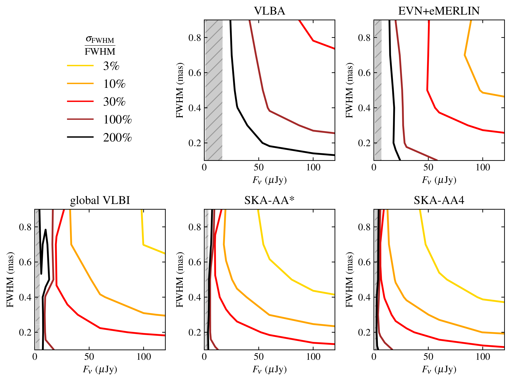<br />
图注：Contour plots of the relative error on the size measurement in the $\mathrm{FWHM}$--$F_{\nu}$ plane. Each panel refers to a distinct array. Solid lines show the contours for a relative error of 3\% (yellow), 10\% (orange), 30\% (red), 100\% (brown) and 200\% (black). The hatched grey area marks the region where the source is not detected because the total flux density is below the $3\sigma_{\mathrm{rms}}$ confidence level, with $\sigma_{\mathrm{rms}}$ being the r.m.s. noise level.<br />
对应解读：对应“建议重点查看的图表”第3项“GRB角尺寸恢复图”、第4项“可达红移或可测时间窗口图”的能力边界，以及“模型拟合”中关于角尺寸 (\  heta_{\<br />
m src})、通量 (F_\<br />
u) 与点源/扩展源区分的讨论。<br />
入选理由：该图直接给出不同阵列在 \(\mathrm{FWHM}\)--(F_\<br />
u) 平面上的尺寸测量相对误差等值线，并标出低于 (3\sigma_{\<br />
m rms}) 的不可探测区域，是判断SKA-Mid是否能把GRB解析为扩展源、尺寸约束改善多少的核心证据。它比单纯示意图更接近论文主要定量结论。<br />
来源与置信度：\(arxiv_source\)；high；\(arxiv_source\) / \(aaskaii_template.tex\):figure[4]</p>
<p><strong>Fig02</strong><br />
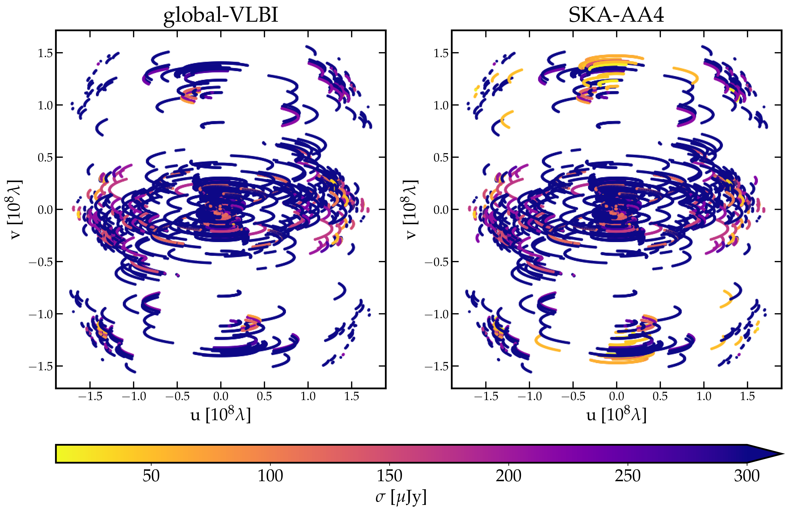<br />
图注：$(u,v)$-plane of our simulated observation with the global-VLBI (left panel) and the global-VLBI + SKA--AA4 (right panel) at 5\,GHz. The colour bar refers to the sensitivity $\sigma$ of each baseline.<br />
对应解读：对应“建议重点查看的图表”第1项“VLBI网络或 \(u\)-\(v\) 覆盖图”，以及“关键图表逐图导读”中图1关于南北向基线、覆盖空洞和长基线方向的解读。<br />
入选理由：该图直接比较global-VLBI与global-VLBI+SKA-AA4在5 GHz下的 \((u,v)\) 覆盖，并用颜色表示各基线灵敏度，是理解SKA-Mid为何改善束形、成像和赤纬方向定位的基础图。它能支撑日报中关于阵列几何贡献而非仅灵敏度提升的讨论。<br />
来源与置信度：\(arxiv_source\)；high；\(arxiv_source\) / \(aaskaii_template.tex\):figure[2]</p>
<p><strong>Fig05</strong><br />
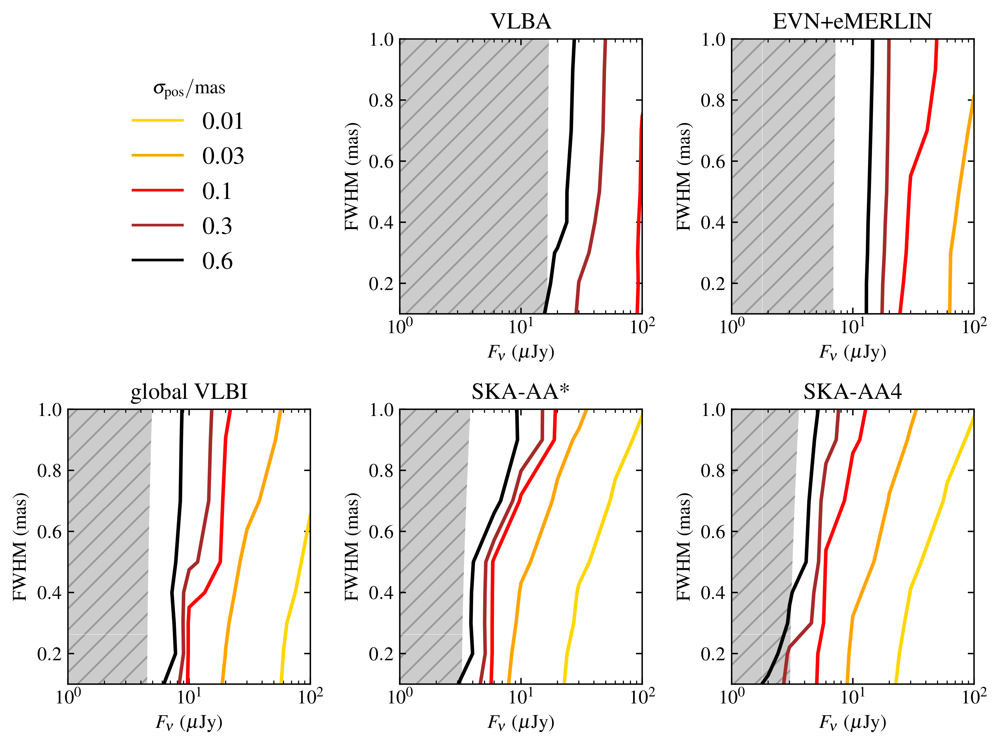<br />
图注：Contour plots of the uncertainty on the position in the $\mathrm{FWHM}$--$F_{\nu}$ plane. Each panel refers to a distinct array. Solid lines show the contours for an error of 0.01 (yellow), 0.03 (orange), 0.1 (red), 0.3 (brown) and 0.6\,mas (black). The hatched grey area marks the region where the total flux density of the source is below the $3\sigma_{\mathrm{rms}}$ confidence level, with $\sigma_{\mathrm{rms}}$ being the r.m.s. noise level.<br />
对应解读：对应“建议重点查看的图表”第5项“天体测量误差椭圆图”和“关键图表逐图导读”图4关于定位精度、赤经/赤纬方向误差及SKA-Mid定位改进的讨论。<br />
入选理由：该图给出不同阵列在 \(\mathrm{FWHM}\)--(F_\<br />
u) 平面中的位置不确定度等值线，并标出 (3\sigma_{\<br />
m rms}) 不可探测区，直接服务于论文关于定位精度提升、尤其弱源和扩展源情况下天体测量能力改善的结论。<br />
来源与置信度：\(arxiv_source\)；high；\(arxiv_source\) / \(aaskaii_template.tex\):figure[5]</p>
<p><strong>Fig03</strong><br />
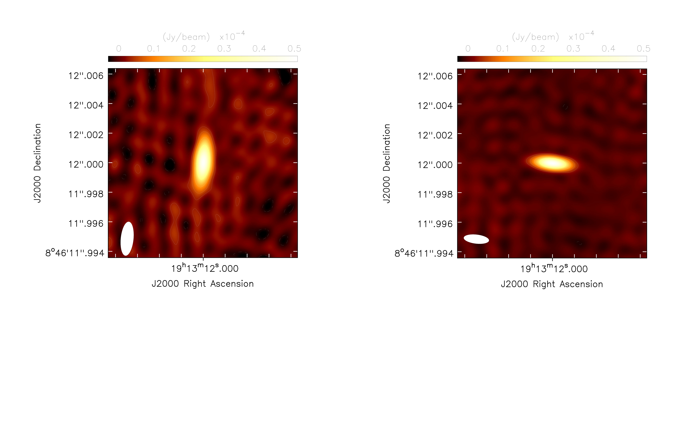<br />
图注：Simulated images of GRB~221009A as seen with the global-VLBI array (left panel) and the global-VLBI + SKA-Mid in its AA4 configuration (right panel). Contour levels are shown at $-2$ (dashed lines), $3$, $6$, $12$, $24$ and $48\sigma$, where $\sigma=1\,\upmu$Jy/b. The corresponding synthesised beam is shown on the lower left of each image.<br />
对应解读：对应“建议重点查看的图表”第2项“合成束与噪声对比图或表”，以及“关键图表逐图导读”图2关于模拟图像、恢复束、等高线和噪声底的解读。<br />
入选理由：该图以GRB 221009A为例并排展示global-VLBI与global-VLBI+SKA-Mid AA4的模拟成像结果，包含等高线、噪声水平和合成束，可直观看出加入SKA-Mid后弱源成像和束形变化。它适合补充Fig02的阵列覆盖图，把 \(u\)-\(v\) 改善转化为图像域表现。<br />
来源与置信度：\(arxiv_source\)；high；\(arxiv_source\) / \(aaskaii_template.tex\):figure[3]</p>
<p><strong>Fig01</strong><br />
<br />
图注：\(\textit{Left panel}\): measurements of the expansion of GRB~030329A \(\citep{Taylor2004, Taylor2005, Pihlstrom2007}\) and GRB~221009A \(\citep{Giarratana2024}.\) \(\textit{Right panel}\): measurements of the proper motion of GW170817 / GRB~170817A \(\citep{Mooley2018b, Ghirlanda2019}.\) A sketch, representative of the two geometrical configurations, is shown on top of the panels.<br />
对应解读：对应日报“详细解读”开头关于历史上只有少数GRB能通过VLBI测得角扩展或自行的科学背景，以及“关键结果”中角尺寸、膨胀和质心偏移的重要性。<br />
入选理由：该图汇总GRB 030329A、GRB 221009A的角扩展测量和GW170817/GRB 170817A的自行测量，能说明VLBI几何诊断为何重要。不过它主要是历史观测背景，不是本文SKA-VLBI模拟能力评估的核心定量图，因此排序低于Fig02--Fig05。<br />
来源与置信度：\(arxiv_source\)；high；\(arxiv_source\) / \(aaskaii_template.tex\):figure[1]</p>
<h4 id="_78">强相关工作</h4>
<p>这篇工作应放在两个传统脉络里看。第一是 GRB 射电 VLBI 个例研究，尤其 GRB 030329 的角尺寸和膨胀测量，以及 GW170817/GRB 170817A 的视超光速质心运动。这些工作证明 VLBI 可以直接约束相对论喷流几何，但事件数极少。检索关键词可用 “GRB 030329 VLBI expansion”, “GRB 170817A superluminal motion VLBI”, “radio afterglow VLBI gamma-ray bursts”。</p>
<p>第二是余辉理论和喷流结构建模，包括 Blandford-McKee 自相似减速、同步辐射余辉谱、喷流断裂、结构化喷流和离轴观测。本文并不试图重写这些理论，而是问未来仪器能否把模型中的几何量变成可测量量。检索关键词可用 “structured jet afterglow”, “off-axis gamma-ray burst radio imaging”, “SKA VLBI transients”, “gamma-ray burst afterglow size”。</p>
<p>也存在需要谨慎比较的相反观点或张力：一些光变拟合可以在没有 VLBI 的情况下给出看似很精确的喷流参数，但这些结果往往受微物理参数、密度剖面和能量注入影响；另一方面，VLBI 几何测量虽然直接，却只适用于近邻且射电明亮的少数事件。未来真正的问题不是二者谁取代谁，而是如何联合光变、谱、偏振和 VLBI 天体测量做全局拟合。</p>
<p><strong>同一事件 / 同类源线索</strong>：</p>
<ul>
<li><a href="https://arxiv.org/abs/2606.27434">https://arxiv.org/abs/2606.27434</a></li>
<li><a href="https://arxiv.org/pdf/2606.27434">https://arxiv.org/pdf/2606.27434</a></li>
</ul>
<p><strong>相似工作</strong>：</p>
<ul>
<li><a href="https://arxiv.org/abs/astro-ph/0308187">https://arxiv.org/abs/astro-ph/0308187</a></li>
<li><a href="https://arxiv.org/abs/1806.09693">https://arxiv.org/abs/1806.09693</a></li>
<li><a href="https://arxiv.org/abs/1808.00469">https://arxiv.org/abs/1808.00469</a></li>
</ul>
<p><strong>基础理论 / 方法工作</strong>：</p>
<ul>
<li><a href="https://ui.adsabs.harvard.edu/abs/1976PhFl...19.1130B/abstract">https://ui.adsabs.harvard.edu/abs/1976PhFl...19.1130B/abstract</a></li>
<li><a href="https://arxiv.org/abs/astro-ph/9712005">https://arxiv.org/abs/astro-ph/9712005</a></li>
<li><a href="https://arxiv.org/abs/astro-ph/9903453">https://arxiv.org/abs/astro-ph/9903453</a></li>
</ul>
<p><strong>相反观点 / 张力线索</strong>：</p>
<ul>
<li><a href="https://arxiv.org/abs/1710.05851">https://arxiv.org/abs/1710.05851</a></li>
<li><a href="https://arxiv.org/abs/1801.03516">https://arxiv.org/abs/1801.03516</a></li>
</ul>
</details>
<h3 id="8-early-optical-follow-up-of-gamma-ray-bursts-the-critical-role-of-robotic-telescopes">8. Early Optical Follow-up of Gamma-Ray Bursts: The Critical Role of Robotic Telescopes</h3>
<ul>
<li>来源：arXiv / astro-ph.HE</li>
<li>链接：https://arxiv.org/abs/2606.28267v1</li>
<li>作者：Rahul Gupta, Judith Racusin, Gor Oganesyan, Ramandeep Gill, Sergey Karpov, Samantha R. Oates, Maria Gritsevich, Alberto J. Castro-Tirado</li>
<li>评分：novelty 5/10，importance 8/10，relevance 10/10，final 8.80/10</li>
<li>推荐理由：GRB早期光学观测综述，覆盖prompt/反向激波/外激波及机器人望远镜策略；虽非原创结果，但对GRB和TeV/多信使联动读者很有参考价值。</li>
</ul>
<p><strong>中文题目</strong>：伽马暴早期光学随访：机器人望远镜为什么不可替代</p>
<p><strong>做了什么</strong>：这是一篇关于伽马暴早期光学观测的综述，重点讨论爆发后数秒到数分钟内的光学辐射如何约束相对论喷流、反向激波、外激波起始、磁化程度和周围介质环境。作者梳理了提示光学辐射、反向激波光学闪光、正向激波余辉起始、光学耀发和平台等现象，并强调机器人望远镜凭借自动触发、快速转向和高时间分辨测光，在捕捉这些短暂阶段中起核心作用。论文的主要结论是：早期光学数据已经把伽马暴初始洛伦兹因子约束到典型的 \(\Gamma_0\sim100\)–\(1000\)，明显反向激波事件通常指向弱到中等磁化的抛射物，而早期光变和偏振还可诊断介质密度剖面和磁场几何。</p>
<p><strong>为什么重要</strong>：伽马暴最关键的动力学信息往往在爆发最初几百秒内迅速丢失；如果只看较晚期余辉，就会把喷流初始条件、中心发动机活动和外部介质效应混在一起。本文重要之处在于把早期光学观测从“漂亮的快速随访”提升为一套物理诊断工具：它可以估计 \(\Gamma_0\)，区分提示区与外激波，判断反向激波是否被磁化压制，并检验恒星风或均匀星际介质环境。</p>
<p><strong>理论 / 观测 / 仪器方法价值</strong>：对理论工作者，本文提供了早期光学光变与喷流动力学、激波微物理和磁化参数之间的对应关系；对观测者，它总结了机器人望远镜的响应时间、视场、极限星等、高节奏测光和偏振能力如何决定可测物理量；对仪器和网络建设，它说明未来与 \(\mathrm{SVOM}\)、\(\mathrm{Einstein\ Probe}\)、\(\mathrm{Rubin/LSST}\)、\(\mathrm{ULTRASAT}\)、甚高能伽马射线阵列和多信使警报联动时，早期光学设施应优先优化哪些性能。</p>
<p><strong>为什么应该关注</strong>：如果你关心相对论喷流如何启动、短伽马暴是否来自致密并合、长伽马暴环境是否保留大质量星风痕迹，或者想用伽马暴做高红移宇宙探针，早期光学数据都是少数能直接接触初始喷流状态的窗口。本文值得关注，因为它不是单个事件的解释，而是把过去二十多年快速光学随访的经验整理成一张路线图：什么样的光变形态能回答什么物理问题，哪些结论稳健，哪些仍受采样、红移、尘埃和触发选择效应限制。</p>
<details class="paper-detail">
<summary>展开详细解读：文章讲解、背景、理论、重点章节、图表与相关工作</summary>
<h4 id="_79">文章详细讲解</h4>
<p>科学问题：伽马暴的高能触发通常告诉我们有一个极端相对论喷流，但它并不直接给出喷流刚出发时的 \(\Gamma_0\)、磁化程度、壳层厚度、外部介质密度剖面和中心发动机持续活动。爆发后数秒到数分钟的光学辐射处在提示辐射、反向激波和正向激波交叠的阶段，是区分内耗散区和外激波区的关键时间窗。本文要回答的核心问题是：早期光学光变到底能提供哪些独立物理信息，以及为什么这些信息只有机器人望远镜网络最有机会获得。</p>
<p>作者怎么做：论文以综述方式整理早期光学现象学，而不是提出单一新样本拟合。它把早期光学辐射分成几类：与 \(\gamma\) 射线同时发生的提示光学辐射、由反向激波产生的快速衰减光学闪光、正向激波减速峰或余辉起始、叠加在光滑余辉上的光学耀发、以及平台和浅衰减阶段。每一类都连接到可测诊断量，例如峰值时间 \(t_{\rm p}\)、峰值通量、早期上升指数、衰减指数、颜色演化、光学与 \(\gamma\) 射线相关性、偏振度和偏振角演化。</p>
<p>关键结果：综述强调，早期光学峰值若对应外激波减速时刻，可给出 \(\Gamma_0\sim100\)–\(1000\) 的量级约束；明亮反向激波存在时，通常说明抛射物不能被过强磁场完全支配，否则反向激波会被削弱或改变辐射效率；若光学与 \(\gamma\) 射线脉冲高度相关，可能指向同一区域或同一中心发动机调制，若二者不相关，则提示不同辐射区或不同辐射机制。早期偏振测量尤其重要，因为它比单纯光变更直接接触磁场有序程度，但目前样本仍少。</p>
<p>局限和下一步：本文也明确指出，早期光学解释并不唯一。光变峰可以来自外激波减速，也可能来自能量注入结束、观测频率穿越同步辐射特征频率、尘埃破坏或多组分喷流；反向激波缺失不一定意味着高磁化，也可能来自采样过晚、红移高、消光强或微物理参数不利。下一步的价值在于把秒级响应、宽场巡天、高速多色测光、快速偏振和实时光谱结合起来，并与 \(\mathrm{SVOM}\)、\(\mathrm{Einstein\ Probe}\)、\(\mathrm{Rubin/LSST}\)、\(\mathrm{ULTRASAT}\)、切伦科夫望远镜和引力波／中微子警报形成闭环。</p>
<h4 id="_80">关键结果是怎么做出来的</h4>
<p>本文的证据链来自综述式整合，而非一个封闭的新观测样本。作者首先按时间尺度选择证据：爆发后与提示 \(\gamma\) 射线重叠的秒级光学数据、几十秒到几百秒内的光学峰和快速衰减、以及随后数百秒到数小时的余辉连接段。这里的“样本量”不是单一表格中的事件数，而是由多个具有里程碑意义的快速随访事件和机器人望远镜项目构成；读者应特别关注作者是否区分了有红移、可做绝对光度估计的事件，和只有相对光变形态的事件。</p>
<p>最关键的量是早期峰值时间 \(t_{\rm p}\) 与峰前／峰后幂律斜率。如果峰被解释为外激波减速，\(t_{\rm p}\) 可以转化为初始洛伦兹因子 \(\Gamma_0\)；但这个推断依赖各向同性等效能量 \(E_{\rm iso}\)、辐射效率、外部密度 \(n\) 或风参数 \(A_\ast\)、红移 \(z\) 等输入。综述给出的 \(\Gamma_0\sim100\)–\(1000\) 应理解为跨事件、跨模型假设后的量级范围，而不是所有事件的统一拟合结果。</p>
<p>关于反向激波，证据来自早期光学亮闪和快速衰减段。典型判据是：光学在高能提示阶段后很快达到极亮峰值，之后以接近或陡于普通正向激波的幂律快速衰减，并且晚期连接到较平滑的正向激波余辉。模型比较通常是在反向激波加正向激波两分量模型与单一正向激波模型之间进行，核心不是单个 \(\chi^2\) 数字，而是能否同时解释峰值亮度、峰值时间、衰减指数和多波段颜色。</p>
<p>对提示光学辐射，作者强调光学与 \(\gamma\) 射线时间相关性的诊断意义。若两条光变曲线的脉冲同步、变时标相近，可能要求同一发动机调制或同一耗散区；若光学平滑而 \(\gamma\) 射线高度脉冲化，则更自然地对应外激波或不同辐射区。支撑这一判断的图表通常是多波段同时光变图、光学-高能互相关图、以及宽带谱能量分布图。</p>
<p>系统误差主要来自响应时间选择效应、触发定位误差、天气和昼夜限制、光学消光、红移导致的 \(k\) 校正、滤光片差异、未扣除宿主星或银河前景，以及把稀疏采样误认为真实峰值。稳健性检验应包括不同密度环境模型下的 \(\Gamma_0\) 估计、固定或释放微物理参数后的拟合变化、多波段颜色是否支持同一同步辐射谱段、以及早期点是否会被单个望远镜的标定误差主导。</p>
<details class="paper-subdetail">
<summary>展开背景、理论、公式、模型、章节和图表导读</summary>
<h4 id="_81">背景知识</h4>
<p>伽马暴是宇宙中瞬时电磁功率最高的爆发现象之一。长暴通常与大质量恒星塌缩有关，短暴则与双中子星或中子星—黑洞并合联系紧密。高能 \(\gamma\) 射线触发揭示的是喷流中最剧烈的耗散阶段，但要知道喷流如何与周围介质相互作用、何时开始减速、磁场是否有序，必须看早期余辉，尤其是光学波段。</p>
<p>历史上，早期光学的重要性由若干里程碑事件奠定。例如 \(\mathrm{GRB\ 990123}\) 的明亮光学闪光使反向激波成为可观测实体，\(\mathrm{GRB\ 080319B}\) 的裸眼可见光学辐射则显示提示光学和高能辐射之间可以有复杂关系。之后 \(\mathrm{Swift}\) 的快速定位和 \(\mathrm{GCN}\) 警报体系，让地面机器人望远镜能在几十秒内响应，早期光学从偶然发现变成可系统研究的领域。</p>
<p>观测背景的关键在于时间。普通大口径望远镜即使灵敏，也常常因为排程、人为响应和视场限制错过最初几分钟；小中口径机器人望远镜虽然口径较小，却能自动接收警报、快速转向、连续高速曝光，反而最适合捕捉光学闪光、峰值和快速衰减。早期光学领域的一个现实经验是：在 \(t\lesssim100\,\mathrm{s}\) 内，一次及时的中等信噪比测光点可能比一小时后的深曝光更有物理约束力。</p>
<p>为什么现在值得重新看？一方面，高能触发设施和地面快速望远镜网络已经积累了足够多的案例，可以比较不同早期形态；另一方面，多信使时代需要在引力波、中微子、软 \(X\) 射线瞬变和甚高能伽马射线之间建立快速联动。未来 \(\mathrm{Einstein\ Probe}\) 和 \(\mathrm{SVOM}\) 会提供更多软 \(X\) 射线和伽马暴触发，\(\mathrm{Rubin/LSST}\) 与 \(\mathrm{ULTRASAT}\) 会改变光学／紫外瞬变发现空间，因此有必要重新定义早期随访的优先级。</p>
<p>常见误区包括：把任何早期光学峰都直接等同于外激波减速峰；把反向激波缺失简单解释为高磁化；把光学与 \(\gamma\) 射线不相关理解为观测失败；或者忽视滤光片、消光和红移对颜色与光度的影响。本文的价值之一，就是提醒读者早期光学诊断必须和多波段谱、时间结构、环境模型和选择效应一起看。</p>
<h4 id="_82">基础理论 / 方法脉络</h4>
<p>基本物理图像是一个超相对论喷流携带能量 \(E\) 和质量 \(M\) 向外传播，初始洛伦兹因子约为 \(\Gamma_0\)。喷流先在内部耗散区产生提示 \(\gamma\) 射线，随后与外部介质碰撞，形成向外传播的正向激波和向内穿过抛射物的反向激波。电子在激波中被加速并在磁场中产生同步辐射，光学波段可能位于不同的谱段，因此光变形态取决于动力学和谱频率演化。</p>
<p>正向激波余辉的核心是减速。当喷流扫过的外部介质静质量达到约 \(M/\Gamma_0\) 的量级时，喷流开始显著减速，观测者看到光变峰或从上升转为衰减。若这一峰值被可靠观测到，就能用 \(t_{\rm p}\) 估计 \(\Gamma_0\)。但该估计对外部密度模型敏感：均匀星际介质的密度近似为常数 \(n\)，恒星风环境则常写作 \(\rho\propto r^{-2}\)。</p>
<p>反向激波提供的是抛射物内部状态的信息。若抛射物流体磁化很强，反向激波可能变弱，早期光学闪光会被压制；若磁化适中，反向激波可产生明亮、快速衰减的光学辐射。这里的关键参数是磁化程度 \(\sigma\)，即磁能通量与物质动能通量之比。早期光学偏振还可以进一步判断磁场是否大尺度有序。</p>
<p>提示光学辐射则更接近中心发动机或内部耗散问题。若光学和 \(\gamma\) 射线在时间上同步，可能来自同一区域的不同辐射过程，例如同步辐射和逆康普顿；若光学变化更平滑或滞后，则可能是外激波已经开始贡献。本文采用的基本逻辑不是只用一条光变曲线定性判断，而是把时间相关性、光谱斜率、峰值时间、衰减指数和多波段连接一起作为诊断。</p>
<p>观测方法上，机器人望远镜的关键量包括警报延迟、转向时间、首帧曝光时间、连续采样节奏、极限星等、滤光片系统、定位精度和自动数据处理速度。系统误差常来自伽马暴定位区域较大、早期曝光饱和或拖尾、不同仪器零点不一致、天空背景快速变化，以及高红移事件的蓝端吸收。模型退化则包括 \(E_{\rm iso}\)、\(n\)、辐射效率、\(\epsilon_e\)、\(\epsilon_B\) 与 \(\Gamma_0\) 之间的耦合。</p>
<h4 id="_83">公式与推导</h4>
<p>第一步是写出相对论抛射物的能量尺度。若各向同性等效能量为 \(E_{\rm iso}\)，喷流初始洛伦兹因子为 \(\Gamma_0\)，外部介质数密度为 \(n\)，则在均匀介质中扫过半径 \(R\) 内的静质量为</p>
<div class="math-display">\[m(R)=\frac{4\pi}{3}R^3 n m_p,\]</div>
<p>其中 \(m_p\) 是质子质量。减速条件的物理含义是扫过介质获得的惯性能量足以显著改变原喷流运动。</p>
<p>在薄壳近似和均匀介质中，可用</p>
<div class="math-display">\[m(R_{\rm dec})c^2\Gamma_0^2\simeq E_{\rm iso}\]</div>
<p>定义减速半径 \(R_{\rm dec}\)。代入上式得到</p>
<div class="math-display">\[R_{\rm dec}\simeq \left(\frac{3E_{\rm iso}}{4\pi n m_p c^2\Gamma_0^2}\right)^{1/3}.\]</div>
<p>这里 \(c\) 是光速；该式假设喷流在早期近似球对称或尚未显著感受到喷流开角。</p>
<p>观测者看到减速峰的时间约为</p>
<div class="math-display">\[t_{\rm dec}\simeq \frac{1+z}{2c\Gamma_0^2}R_{\rm dec},\]</div>
<p>其中 \(z\) 为红移。把 \(t_{\rm p}\approx t_{\rm dec}\) 反解，可得常用的初始洛伦兹因子估计</p>
<div class="math-display">\[\Gamma_0\simeq \left[\frac{3E_{\rm iso}(1+z)^3}{32\pi n m_p c^5 t_{\rm p}^3}\right]^{1/8}.\]</div>
<p>该式说明 \(\Gamma_0\) 对 \(E_{\rm iso}\) 和 \(n\) 的依赖很弱，但对峰值时间 \(t_{\rm p}\) 较敏感。</p>
<p>若外部介质来自大质量星风，密度可写为</p>
<div class="math-display">\[\rho(R)=A R^{-2},\]</div>
<p>其中 \(A\) 与质量损失率和风速有关。此时扫过质量 \(m(R)=4\pi A R\)，减速时间给出不同标度：</p>
<div class="math-display">\[\Gamma_0\simeq \left[\frac{E_{\rm iso}(1+z)}{8\pi A c^3 t_{\rm p}}\right]^{1/4}.\]</div>
<p>因此同一个早期峰在均匀介质和风环境下会给出不同的 \(\Gamma_0\)，这正是早期光变解释的主要退化之一。</p>
<p>同步辐射谱通常用特征频率和峰值通量描述。在慢冷却情形下，若 \(\nu_m<\nu<\nu_c\)，通量近似为</p>
<div class="math-display">\[F_\nu=F_{\nu,{\rm max}}\left(\frac{\nu}{\nu_m}\right)^{-(p-1)/2},\]</div>
<p>其中 \(p\) 是非热电子能谱指数，\(\nu_m\) 是最小注入电子对应的同步频率，\(\nu_c\) 是冷却频率。观测到的光学颜色或谱斜率可检验光学是否位于这一谱段。</p>
<p>早期光变常用分段幂律拟合，例如</p>
<div class="math-display">\[F_\nu(t)=F_0\left[\left(\frac{t}{t_{\rm b}}\right)^{s\alpha_1}+\left(\frac{t}{t_{\rm b}}\right)^{s\alpha_2}\right]^{-1/s},\]</div>
<p>其中 \(t_{\rm b}\) 是转折时间，\(\alpha_1\) 和 \(\alpha_2\) 分别控制转折前后斜率，\(s\) 描述转折锐度。若 \(t_{\rm b}\) 被解释为 \(t_{\rm p}\)，它进入 \(\Gamma_0\) 估计；若它只是谱频率穿越，则物理含义完全不同。</p>
<p>反向激波强弱常用磁化参数刻画：</p>
<div class="math-display">\[\sigma=\frac{B^2}{4\pi \Gamma \rho c^2},\]</div>
<p>其中 \(B\) 是共动或适当定义下的磁场强度，\(\Gamma\) 是流体洛伦兹因子，\(\rho\) 是质量密度。\(\sigma\ll1\) 时物质动能主导，强反向激波较容易形成；\(\sigma\gtrsim1\) 时磁场动力学重要，反向激波可被削弱。</p>
<p>把机器人望远镜观测接到统计诊断上，给定测光点 \(F_i\)、误差 \(\sigma_i\) 和模型 \(F_{\rm model}(t_i;\boldsymbol{\theta})\)，常用高斯似然为</p>
<div class="math-display">\[\ln \mathcal{L}(\boldsymbol{\theta})=-\frac{1}{2}\sum_i\left[\frac{F_i-F_{\rm model}(t_i;\boldsymbol{\theta})}{\sigma_i}\right]^2-\frac{1}{2}\sum_i\ln(2\pi\sigma_i^2).\]</div>
<p>这里 \(\boldsymbol{\theta}\) 包括 \(F_0\)、\(t_{\rm b}\)、\(\alpha_1\)、\(\alpha_2\)、\(s\) 以及物理模型参数。比较单一正向激波模型和正向加反向激波模型时，可检查 \(\Delta\ln\mathcal{L}\)、信息准则或后验预测残差，而不应只凭肉眼判断早期点是否“偏亮”。</p>
<h4 id="_84">模型拟合 / 应用方法</h4>
<p>这类早期光学工作最常见的第一层拟合是经验光变拟合：单幂律、断裂幂律、平滑断裂幂律，或多个脉冲／耀发叠加。拟合量包括峰值时间 \(t_{\rm p}\)、峰值通量、上升指数、衰减指数、转折锐度和滤光片间颜色。经验拟合本身不等同于物理解释，但它给出后续动力学推断所需的可观测输入。</p>
<p>第二层是物理模型拟合，即把早期峰解释为外激波减速、把快速衰减分量解释为反向激波、或把光学耀发解释为中心发动机延迟活动。此时参数包括 \(E_{\rm iso}\)、\(n\) 或 \(A_\ast\)、\(\Gamma_0\)、\(p\)、\(\epsilon_e\)、\(\epsilon_B\)、喷流开角、红移和宿主消光。若数据覆盖多波段，可以同时拟合谱能量分布和光变，从而减少把谱演化误认为动力学转折的风险。</p>
<p>似然通常由测光残差构成，但真实数据中误差不只是泊松噪声。早期机器人观测可能有非标准滤光片、自动孔径测光误差、零点漂移、饱和、月光背景、移动云和伽马暴定位误差导致的源混淆。实际拟合中常需要加入额外系统误差项，或对不同仪器设置相对零点偏移。若不这样做，一个望远镜的早期亮点可能会人为制造出反向激波证据。</p>
<p>参数退化是解释早期光学的核心困难。\(\Gamma_0\) 与 \(E_{\rm iso}\)、\(n\)、辐射效率和 \(t_{\rm p}\) 相关；\(p\)、\(\epsilon_e\)、\(\epsilon_B\) 和宿主消光会共同影响谱斜率与光度；风环境和均匀介质有时都能拟合同一段稀疏光变。可靠结论通常来自多约束一致：时间峰、颜色、\(X\) 射线连接、射电余辉、偏振和红移同时支持同一解释。</p>
<p>模型可能失败的地方也很明确。若光学光变有快速多峰结构，简单外激波模型通常不够；若早期光学与 \(\gamma\) 射线同步但光谱无法由同一同步辐射分量连接，则需要内部耗散或逆康普顿成分；若晚期余辉显示能量注入或喷流结构，早期 \(t_{\rm p}\) 可能不再是单纯的减速时间。本文作为综述的实际价值，是帮助读者在看到一条早期光变时先判断应使用哪一类模型，而不是机械套用单一公式。</p>
<h4 id="_85">重点章节 / 结果段落怎么读</h4>
<p>一、早期光学现象学部分应优先阅读。这里会把提示光学、反向激波闪光、正向激波起始、耀发和平台分开讨论。读者应注意每种现象对应的时间尺度、典型光变斜率、是否需要与 \(\gamma\) 射线同步、以及它们分别约束哪些物理量。</p>
<p>二、物理诊断部分是全文核心。重点看作者如何从峰值时间估计 \(\Gamma_0\)，如何用反向激波有无判断磁化程度，如何利用介质密度剖面区分恒星风环境和均匀介质，以及如何把偏振与磁场几何联系起来。这里需要警惕不同模型给出类似光变的退化。</p>
<p>三、机器人望远镜设施和技术能力部分对观测者很有用。应关注响应时间、视场、口径、极限星等、滤光片、高速测光、自动化触发、与 \(\mathrm{GCN}\) 或任务警报的连接方式。不要只按口径大小评价设施；早期光学科学回报常常由延迟和采样节奏决定。</p>
<p>四、里程碑事件和设施贡献部分适合建立案例库。读者应把每个经典事件对应到一种物理问题：例如明亮反向激波、提示光学相关性、早期偏振或高红移快速识别。这样读综述时不会只记住事件名，而能知道它们为什么改变了领域判断。</p>
<p>五、未来展望部分需要结合自己的研究计划阅读。作者讨论 \(\mathrm{SVOM}\)、\(\mathrm{Einstein\ Probe}\)、\(\mathrm{Rubin/LSST}\)、\(\mathrm{ULTRASAT}\)、\(\mathrm{TeV}\) 观测和多信使警报，重点不在列举项目，而在说明未来触发会更丰富、更快、更宽波段，早期光学网络必须在实时筛选、自动调度和多波段协同上升级。</p>
<h4 id="_86">建议重点查看的图表</h4>
<ol>
<li>
<p>早期光学光变分类图：应看横轴是否为爆发后观测时间，纵轴是否为光学通量或星等；关键是提示光学、反向激波、正向激波峰、耀发和平台在时间尺度与斜率上的差别。</p>
</li>
<li>
<p>光学与 \(\gamma\) 射线同时光变对比图：应检查两者脉冲是否同步、是否有滞后、光学是否比高能更平滑；这直接影响辐射区判断。</p>
</li>
<li>
<p>\(t_{\rm p}\) 或早期峰值与 \(\Gamma_0\) 估计的关系图／表：应看作者采用均匀介质还是风环境、红移和能量输入是否完整、误差是否包含密度不确定性。</p>
</li>
<li>
<p>反向激波加正向激波分解图：应检查早期快速衰减分量与晚期平滑余辉的连接，特别是模型线是否只是通过少数早期点。</p>
</li>
<li>
<p>偏振观测图：应看偏振度和偏振角是否随时间变化，误差条是否足够小，是否排除了仪器偏振和银河星际偏振。</p>
</li>
<li>
<p>机器人望远镜响应能力表：应比较首帧延迟、视场、极限星等、曝光节奏和自动化程度，而不是只看口径。</p>
</li>
<li>
<p>多波段谱能量分布图：应检查光学、\(X\) 射线和高能数据是否位于同一同步辐射谱段，以及宿主消光修正是否显著改变结论。</p>
</li>
</ol>
<h4 id="_87">关键图表逐图导读</h4>
<p>图 1：如果论文给出早期光学现象分类示意，横轴通常是爆发后时间，纵轴是光学通量或星等。不同模型线可能代表提示光学、反向激波、正向激波起始和后续余辉。读图时不要只看哪条线最亮，而要看峰值时间、上升速度和衰减斜率；这些才是区分物理机制的量。</p>
<p>图 2：多波段同时光变图通常把 \(\gamma\) 射线、\(X\) 射线和光学点画在同一时间轴上。若光学峰与 \(\gamma\) 射线脉冲重合，支持提示区联系；若光学峰滞后且更平滑，则更可能是外激波。陷阱是不同波段的纵轴常经过任意缩放，视觉同步不等于统计相关。</p>
<p>图 3：反向激波案例图一般会显示早期快速下降的光学分量和较晚期正向激波余辉。坐标多为对数时间和对数通量，模型线可能分解为两个分量。应检查早期衰减指数是否足够陡、晚期余辉是否能独立约束正向激波，以及反向激波分量是否依赖单个异常亮点。</p>
<p>图 4：\(\Gamma_0\) 估计图或表通常列出 \(t_{\rm p}\)、\(E_{\rm iso}\)、\(z\)、介质密度假设和得到的 \(\Gamma_0\)。读者应关注误差传播是否只包含测光误差，还是包含 \(n\)、辐射效率和模型选择不确定性。由于 \(\Gamma_0\) 对 \(t_{\rm p}\) 敏感，首个观测点是否早于峰值非常关键。</p>
<p>图 5：机器人望远镜设施性能图／表若存在，常以响应时间、口径、视场和极限星等比较各系统。读图陷阱是把深度当成唯一指标；对早期光学，几十秒内开始观测和连续高节奏采样往往比晚到的深度更重要。</p>
<p>图 6：偏振或谱能量分布图如果出现，应重点看误差条、系统校正和多波段是否同时。偏振角的快速变化可能提示磁场结构或多个辐射区，但低信噪比下也可能由仪器系统误差或前景偏振造成。谱能量分布则要注意尘埃消光和高红移 \(\mathrm{Ly}\alpha\) 吸收对蓝端的影响。</p>
</details>
<h4 id="_88">论文原图 / 可嵌入图片</h4>
<p><strong>Fig01</strong><br />
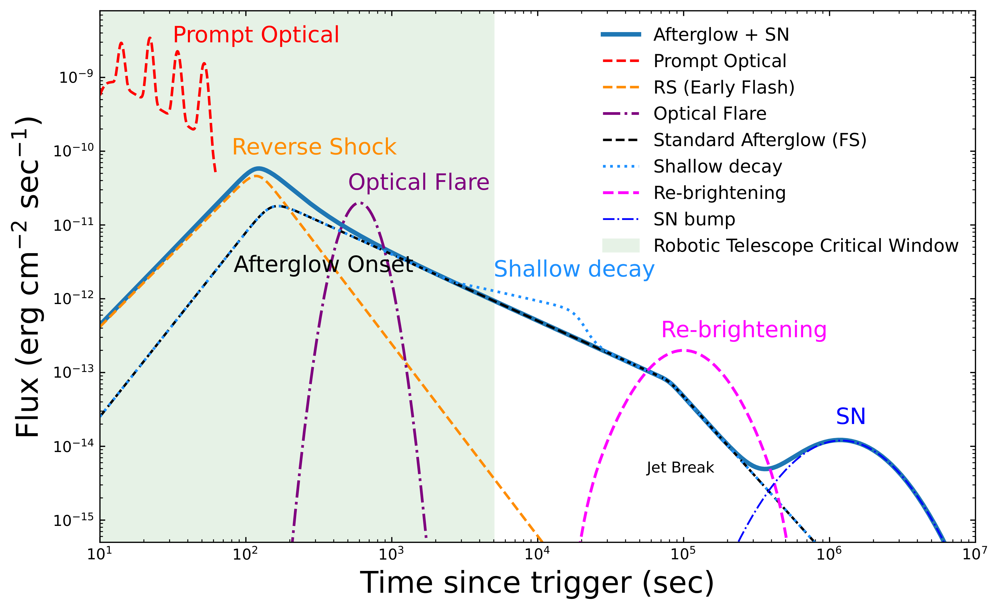<br />
图注：Schematic optical light curve of GRBs and its relevance to robotic follow-up: A schematic optical light curve constructed to illustrate the key features seen in early optical studies. The solid blue curve represents the baseline afterglow evolution, combining forward shock emission (including an illustrative jet-break steepening at $t \sim 10^5$\,s) with a late-time supernova (SN) bump. Additional components are overplotted to highlight distinct phases: Prompt optical emission (bright and rapidly variable, correlated with $\gamma$-rays), an early reverse-shock optical flash at $t \sim 10^2$\,s, an optical flare at $t \sim 10^3$\,s, a shallow-decay/plateau phase ($t \sim 10^3$~--~$10^4$\,s), and a later re-brightening episode (e.g., refreshed shocks or density structure). The shaded region shows the ``critical window'' ($t \sim 10$~--~$5\times10^{3}$\,s) in which low-latency, high-cadence robotic observations provide the strongest leverage for separating these components and constraining outflow dynamics (e.g., $\Gamma_0$), magnetization, and the circumburst environment.<br />
对应解读：对应“建议重点查看的图表”第1项和“关键图表逐图导读”图1：早期光学光变分类示意。<br />
入选理由：该图直接概括提示光学、反向激波光学闪光、正向激波余辉起始、光学耀发、平台、再增亮和晚期超新星凸起，并标出机器人望远镜最关键的10到5000秒时间窗，是理解全文现象分类和后续物理诊断的总览图。<br />
来源与置信度：\(arxiv_source\)；high；\(arxiv_source\) / \(GRBs_v1.tex\):figure[1]</p>
<p><strong>Fig02</strong><br />
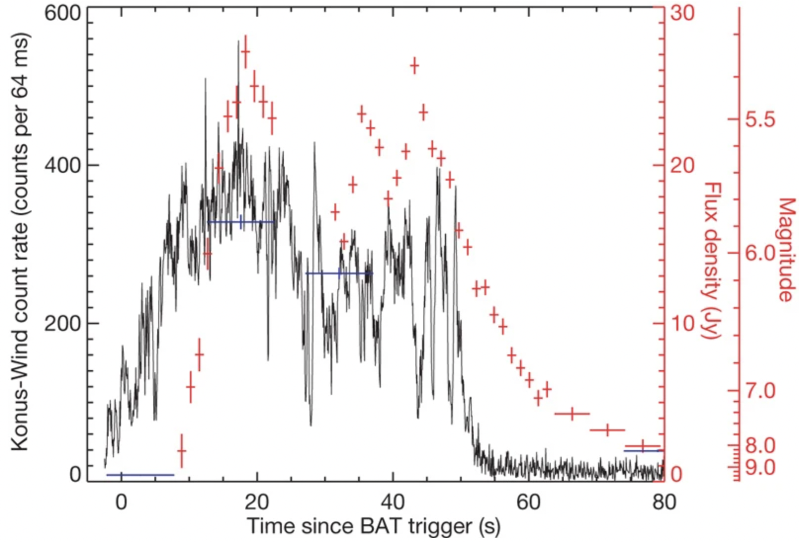<br />
图注：Prompt $\gamma$-ray and optical emission comparison for the exceptionally bright naked eye burst (GRB\,080319B). The background-subtracted \(\kw\) $\gamma$-ray light curve (18--1160~keV; black), with contemporaneous optical measurements (red) from Pi of the Sky and TORTORA, is overplotted. The optical signal emerges within seconds of the high-energy onset and exhibits broad structure, including multiple sub-peaks reaching a maximum brightness of $\sim$5.3~mag in the TORTORA data. Adapted from \(\citet{2008Natur.455..183R}.\)<br />
对应解读：对应“建议重点查看的图表”第2项和“关键图表逐图导读”图2：光学与γ射线同时光变对比，GRB 080319B案例。<br />
入选理由：该图把Konus-Wind γ射线光变与Pi of the Sky/TORTORA光学观测放在同一时间轴上，展示秒级同步和光学宽峰结构，是判断提示光学是否与高能辐射区相关的最核心实例。<br />
来源与置信度：\(arxiv_source\)；high；\(arxiv_source\) / \(GRBs_v1.tex\):figure[2]</p>
<p><strong>Fig03</strong><br />
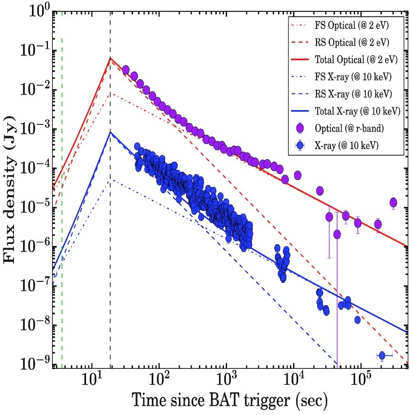<br />
图注：The afterglow modeling of GRB 140102A using a combined thin shell reverse and forward shock model. The early observed optical flux is dominated by the RS component. The vertical dashed markers denote key temporal features: the green dashed line marks the end of the prompt duration ($T_{\rm 90}$), and the black dashed line indicates the inferred deceleration time for GRB 140102A. Adapted from \(\citet{2021MNRAS.505.4086G}.\)<br />
对应解读：对应“建议重点查看的图表”第4项和“关键图表逐图导读”图3：反向激波加正向激波分解模型。<br />
入选理由：该图明确给出GRB 140102A的薄壳反向激波和正向激波联合建模，并标出T90和减速时间；它最直接支撑日报中关于早期快速衰减分量、晚期余辉连接以及反向激波证据是否稳健的讨论。<br />
来源与置信度：\(arxiv_source\)；high；\(arxiv_source\) / \(GRBs_v1.tex\):figure[3]</p>
<p><strong>Fig06</strong><br />
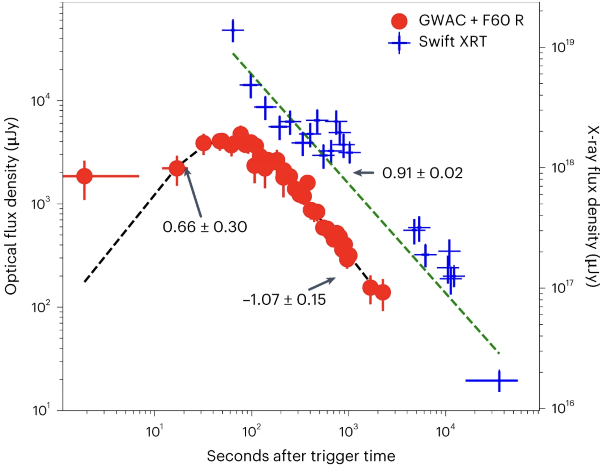<br />
图注：Optical and X-ray light curves of GRB~201223A and their modeling. The optical data (from GWAC and GWAC-F60A) show an initial shallow phase, a rise to a peak at $\sim 52$~s, and a subsequent decay, while the \(\swift/XRT\) light curve exhibits broadly similar early-time behavior. This figure illustrates a clear example of the prompt-to-afterglow transition and supports an interpretation in which the later optical evolution is dominated by the onset of the forward shock. Adapted from \(\citet{2023NatAs...7..724X}.\)<br />
对应解读：对应“建议重点查看的图表”第3项和“关键图表逐图导读”图4中关于早期峰值时间、正向激波起始和Γ0估计输入量的讨论。<br />
入选理由：该图展示GRB 201223A在约52秒出现的早期光学峰以及与X射线早期行为的联系，是利用峰值时间作为外激波减速时刻、进而约束初始洛伦兹因子的典型观测依据。<br />
来源与置信度：\(arxiv_source\)；high；\(arxiv_source\) / \(GRBs_v1.tex\):figure[6]</p>
<p><strong>Fig04</strong><br />
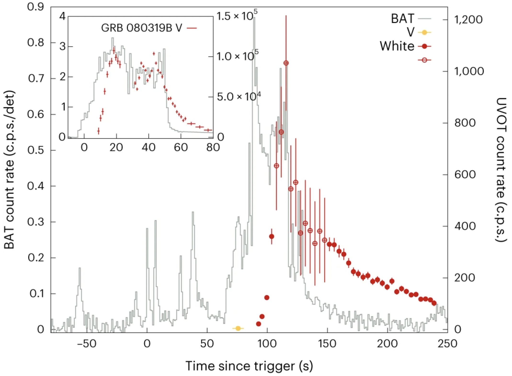<br />
图注：Optical--UV flare of GRB~220101A compared with the prompt $\gamma$-ray activity: The \(\swift/BAT\) prompt emission light curve, shown over approximately $T_0-70$ to $T_0+250$~s, exhibits rapid prompt $\gamma$-ray variability, whereas the contemporaneous \(\swift/UVOT\) light curve in the $V$ and white bands, obtained mainly during $\sim$ $T_0+80$ to $T_0+230$~s, evolves more smoothly and does not closely track the $\gamma$-ray temporal structure. This behavior differs from the well-known case of GRB~080319B, shown in the inset for reference (axes follow the same conventions as the main panel), where the optical emission more closely followed the high-energy activity. Instead, following \(\citet{2023NatAs...7.1108J},\) we refer to this component as an optical--UV flare because its temporal behavior does not simply trace the $\gamma$-ray activity and likely has a distinct physical origin, possibly refreshed shocks from late ejecta catching up with the earlier decelerating outflow. Adapted from \(\citet{2023NatAs...7.1108J}.\)<br />
对应解读：对应“建议重点查看的图表”第2项以及光学耀发与γ射线不同步的模型判别段落。<br />
入选理由：该图比较GRB 220101A的Swift/BAT γ射线快速变动与UVOT光学/紫外更平滑的耀发，并以内嵌的GRB 080319B作对照，清楚展示光学与高能辐射不紧密跟踪时可能指向不同物理起源。<br />
来源与置信度：\(arxiv_source\)；high；\(arxiv_source\) / \(GRBs_v1.tex\):figure[4]</p>
<p><strong>Fig12</strong><br />
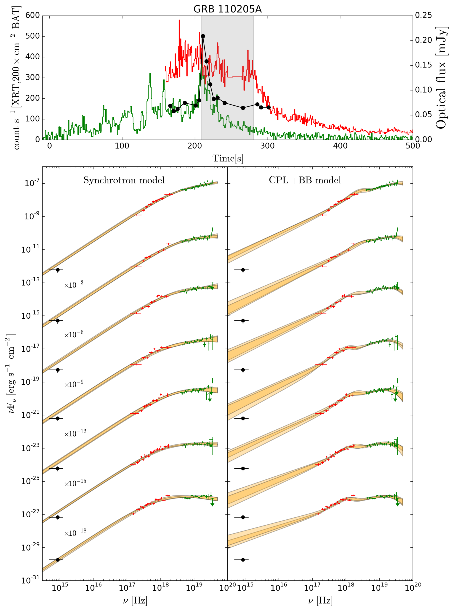<br />
图注：Example of broadband time-resolved prompt emission spectra including the optical data, shown for GRB~110205A. The optical data are compared with the extrapolation of the high-energy prompt emission model, illustrating the cases in which the optical emission is consistent with the same synchrotron component that produces the X-ray and $\gamma$-ray prompt emission and inconsistent with the empirical, two-component model. Adapted from \(\citet{Oganesyan2019}.\)<br />
对应解读：对应“建议重点查看的图表”第7项和“关键图表逐图导读”图6：多波段谱能量分布与提示辐射谱模型检验。<br />
入选理由：该图以GRB 110205A为例把光学数据放入时间分辨提示辐射宽带谱中，检验光学是否可由同一同步辐射成分连接到X射线和γ射线，比纯光变图更能支撑关于辐射机制和谱段一致性的讨论。<br />
来源与置信度：\(arxiv_source\)；high；\(arxiv_source\) / \(GRBs_v1.tex\):figure[12]</p>
<h4 id="_89">强相关工作</h4>
<p>这篇综述直接连接一批同类和历史原型工作。同一类研究包括 \(\mathrm{GRB\ 990123}\) 的早期光学闪光、\(\mathrm{GRB\ 080319B}\) 的极亮提示光学辐射、\(\mathrm{Swift}\) 时代快速定位后的早期余辉统计，以及 \(\mathrm{MASTER}\)、\(\mathrm{ROTSE}\)、\(\mathrm{RAPTOR}\)、\(\mathrm{TAROT}\)、\(\mathrm{BOOTES}\)、\(\mathrm{REM}\)、\(\mathrm{Liverpool\ Telescope}\) 等机器人设施的事件论文。建议检索关键词包括 “early optical afterglow gamma-ray bursts”, “reverse shock optical flash”, “prompt optical emission GRB”, “initial Lorentz factor GRB afterglow onset”, “robotic telescope GRB follow-up” 和 “GRB optical polarimetry”。</p>
<p>基础理论方面，应把本文与火球模型、外激波余辉、反向激波和同步辐射闭合关系一起读。相反或有张力的观点主要体现在：早期峰是否一定是减速峰、反向激波缺失是否一定代表高磁化、提示光学与高能辐射是否同源、以及单区同步辐射能否解释从光学到 \(\gamma\) 射线的宽带谱。检索时可加上 “magnetized ejecta reverse shock suppression”, “GRB afterglow closure relations”, “wind versus ISM GRB environment” 和 “optical gamma-ray correlation GRB”。</p>
<p><strong>同一事件 / 同类源线索</strong>：</p>
<ul>
<li><a href="https://arxiv.org/abs/2606.28267">https://arxiv.org/abs/2606.28267</a></li>
<li><a href="https://arxiv.org/pdf/2606.28267">https://arxiv.org/pdf/2606.28267</a></li>
<li><a href="https://gcn.nasa.gov/">https://gcn.nasa.gov/</a></li>
</ul>
<p><strong>相似工作</strong>：</p>
<ul>
<li><a href="https://ui.adsabs.harvard.edu/abs/1999Natur.398..400A/abstract">https://ui.adsabs.harvard.edu/abs/1999Natur.398..400A/abstract</a></li>
<li><a href="https://ui.adsabs.harvard.edu/abs/2008Natur.455..183R/abstract">https://ui.adsabs.harvard.edu/abs/2008Natur.455..183R/abstract</a></li>
<li><a href="https://ui.adsabs.harvard.edu/abs/2008Natur.455..182B/abstract">https://ui.adsabs.harvard.edu/abs/2008Natur.455..182B/abstract</a></li>
</ul>
<p><strong>基础理论 / 方法工作</strong>：</p>
<ul>
<li><a href="https://ui.adsabs.harvard.edu/abs/1997ApJ...476..232M/abstract">https://ui.adsabs.harvard.edu/abs/1997ApJ...476..232M/abstract</a></li>
<li><a href="https://ui.adsabs.harvard.edu/abs/1999ApJ...517L.109S/abstract">https://ui.adsabs.harvard.edu/abs/1999ApJ...517L.109S/abstract</a></li>
<li><a href="https://ui.adsabs.harvard.edu/abs/2004ApJ...611.1005G/abstract">https://ui.adsabs.harvard.edu/abs/2004ApJ...611.1005G/abstract</a></li>
</ul>
<p><strong>相反观点 / 张力线索</strong>：</p>
<ul>
<li><a href="https://ui.adsabs.harvard.edu/abs/2005ApJ...631.1037Z/abstract">https://ui.adsabs.harvard.edu/abs/2005ApJ...631.1037Z/abstract</a></li>
<li><a href="https://ui.adsabs.harvard.edu/abs/2009ApJ...703.1696Z/abstract">https://ui.adsabs.harvard.edu/abs/2009ApJ...703.1696Z/abstract</a></li>
</ul>
</details>
<h3 id="9-skao-and-gamma-ray-synergies">9. SKAO and Gamma-Ray Synergies</h3>
<ul>
<li>来源：arXiv / astro-ph.HE</li>
<li>链接：https://arxiv.org/abs/2606.28210v1</li>
<li>作者：Gianluca Castignani, Gavin Rowell, Arnau Aguasca-Cabot, Gemma E. Anderson, Csaba Balazs, Pol Bordas, Andrea Botteon, Jess W. Broderick</li>
<li>评分：novelty 5/10，importance 8/10，relevance 10/10，final 8.80/10</li>
<li>推荐理由：SKAO与GeV-TeV伽马射线设施协同白皮书，涵盖LHAASO/CTAO、GRB、blazar、SNR、GC、星系团和多信使触发；高度契合伽马射线天文方向。</li>
</ul>
<p><strong>中文题目</strong>：SKAO 与伽马射线观测的协同科学潜力</p>
<p><strong>做了什么</strong>：这篇文章不是报告一个新的单源探测，而是一篇面向未来观测布局的综述和白皮书式论文：作者梳理了平方公里阵列天文台（SKAO）与现有及下一代伽马射线设施在高能天体物理中的互补性，覆盖瞬变源、活动星系核、超新星遗迹、脉冲星风云、银河中心、星系团和多信使对应体等对象。核心问题是：当 LHAASO、CTAO 等设施把 TeV 源样本从目前约数百个显著扩展时，SKAO 的高灵敏度、宽视场、偏振和时域能力如何帮助区分同步辐射、逆康普顿、强子过程和环境效应。文章的主要结论是，射电与 GeV–TeV 联合观测不是“多波段配图”，而是约束粒子能谱、磁场、辐射区大小、喷流结构和瞬变爆发物理的必要手段。</p>
<p><strong>为什么重要</strong>：高能源的谱能量分布通常从射电延伸到伽马射线，但单独的 TeV 光谱很难判断辐射来自电子还是质子、磁场多强、粒子加速发生在何处。SKAO 将把低频到中频射电成像、偏振、瞬变巡天和精确定时能力提升一个量级；与此同时，CTAO 和 LHAASO 会显著增加已知 TeV 源数量并改善角分辨率和能谱覆盖。二者结合，能把许多长期停留在模型退化中的问题转化为可检验的观测诊断。</p>
<p><strong>理论 / 观测 / 仪器方法价值</strong>：对理论而言，本文强调了把非热粒子分布、磁场、辐射机制和环境介质放进同一个多波段框架的重要性；对观测而言，它给出了哪些源类最需要同步或准同步射电—伽马观测；对仪器和方法而言，它把 SKAO 的巡天、监测、偏振、触发后随访能力与 LHAASO、CTAO、Fermi-LAT、IceCube、引力波探测器等设施的触发链条联系起来。它的价值在于帮助读者设计未来联合观测计划，而不是只罗列科学目标。</p>
<p><strong>为什么应该关注</strong>：如果你关心宇宙线起源、TeV 源普查、喷流物理、星系团非热成分、瞬变源多信使对应体或下一代观测提案，这篇文章提供了一份很实用的“协同观测地图”。它提醒我们：未来限制高能天体物理进展的常常不是单台望远镜灵敏度，而是能否在正确时间、正确频段、正确角尺度上把射电和伽马射线信息接起来。</p>
<details class="paper-detail">
<summary>展开详细解读：文章讲解、背景、理论、重点章节、图表与相关工作</summary>
<h4 id="_90">文章详细讲解</h4>
<p>科学问题：本文关注的不是某一个特定源，而是一个正在变得紧迫的观测生态问题。已知 TeV 源数量目前大约为数百个，随着 LHAASO、CTAO 以及继续运行的 Fermi-LAT 等设施推进，源表会快速增长，源类会更复杂，许多对象会同时表现出稳态非热辐射、短时标爆发、偏振变化和可能的多信使关联。伽马射线能直接探测最高能粒子辐射，但它对磁场、低能电子谱、辐射区几何和等离子体环境的约束通常不够。SKAO 的价值恰好在这些方面：高灵敏度射电连续谱、宽频谱指数、偏振、法拉第旋转、时域监测和大天区巡天。</p>
<p>作者怎么做：文章采用综述和前瞻路线，而非单一数据分析。作者按源类和观测模式梳理了 SKAO 与伽马射线设施的协同场景，包括伽马暴、超新星、快速射电暴、潮汐瓦解事件、中微子和引力波对应体等瞬变源；耀变体和其他活动星系核等变源；银河中心、超新星遗迹、脉冲星风云、射电星系、星系团等相对稳态或长期演化源。每一类源的共同主题是非热粒子加速与辐射，但具体诊断量不同：有的需要准实时触发，有的需要长期监测，有的需要高动态范围成像，有的需要偏振和旋转量测量。</p>
<p>关键结果：文章最重要的信息是，射电—伽马协同可以直接攻击几个核心退化。第一，同步辐射与逆康普顿辐射通常来自同一族相对论电子，联合谱能量分布可同时约束电子能谱与磁场。第二，强子模型中的 \(\pi^0\) 衰变伽马射线可与次级电子射电辐射、环境气体分布和非热压力联系起来。第三，偏振和法拉第旋转可提供伽马射线无法提供的磁场拓扑信息。第四，瞬变源的射电余辉和伽马射线早期辐射有不同的时标与光深限制，联合起来能约束外流洛伦兹因子、喷流开角和周围介质密度。</p>
<p>局限和下一步：作为综述型论文，本文不会给出新的统一似然分析或某个源类的定量预测表，因此读者不应把它当作完成的灵敏度评估。真正的下一步包括：为具体源类建立可执行的联合触发策略；把 SKAO 巡天节奏与 CTAO、LHAASO、Fermi-LAT、IceCube 和引力波警报系统连接；在模拟中加入实际可见性、响应函数、背景、混淆噪声和数据延迟；并为不同辐射模型定义可证伪的判据，而不是只做后验的多波段拟合。</p>
<h4 id="_91">关键结果是怎么做出来的</h4>
<p>本文的证据链建立在现有 TeV 源统计、未来仪器能力和多波段物理诊断的组合上，而不是建立在一个新样本的盲搜显著性上。作者从一个事实出发：目前已有约数百个 TeV 辐射源，但这个数量会被 LHAASO 和 CTAO 显著扩展。新增源将覆盖银河系内紧致天体、弥散结构、超新星遗迹、脉冲星风云，也会包括河外活动星系核、射电星系和星系团候选非热辐射。样本扩张本身会带来分类、对应体识别和辐射机制判别问题，SKAO 在这些环节提供关键补充。</p>
<p>由于这是协同前瞻论文，文中的“显著性”主要不是某个统计检验的 \(\sigma\) 值，而是观测可判别性的提升。例如，对一个 TeV 源，仅凭伽马射线谱很可能同时允许电子逆康普顿模型和强子 \(\pi^0\) 衰变模型；加入射电通量、谱指数、空间形态和偏振后，模型参数空间会被明显压缩。读者应把这类论证理解为多观测量联合约束问题：伽马射线给出最高能粒子和靶光子或气体的信息，射电给出低能电子、磁场和几何结构。</p>
<p>文章支撑结论的关键图表通常应包括设施灵敏度、频率或能量覆盖、源类矩阵、触发与随访流程、以及不同辐射机制的谱能量分布示意。对于读者来说，最值得检查的是作者有没有把 SKAO 的具体能力——例如宽视场巡天、深度成像、偏振精度、时间分辨率、低频谱指数和旋转量网格——明确映射到伽马射线科学问题上，而不是泛泛说“多波段很重要”。</p>
<p>系统误差层面，本文涉及的主要不确定性来自未来设施实际性能、源表选择函数、瞬变触发延迟、非同时观测导致的变源谱能量分布错配、低频射电混淆、扩展 TeV 源的形态分解、以及模型本身的非唯一性。稳健性不在于某一张图的误差条，而在于同一个科学目标能否被多个独立诊断交叉验证：例如谱指数加偏振加空间对应，而不是只靠一条非同时谱能量分布。</p>
<p>读者可以把本文最重要的结果概括为一组观测设计原则。对瞬变源，要优先考虑触发速度、可见性和多历元覆盖；对稳态扩展源，要优先考虑角分辨率匹配、背景建模和形态相关；对活动星系核和耀变体，要优先考虑同时性、偏振和长期光变；对星系团和银河中心这类复杂场，要优先考虑弥散背景、前景扣除和磁场诊断。</p>
<details class="paper-subdetail">
<summary>展开背景、理论、公式、模型、章节和图表导读</summary>
<h4 id="_92">背景知识</h4>
<p>研究对象是宽能段非热天体源。所谓非热辐射，指辐射粒子能谱不能用单一热平衡温度描述，通常来自激波、磁重联、湍流加速或相对论喷流。射电波段常见的是相对论电子在磁场中的同步辐射；GeV–TeV 波段常见的是电子逆康普顿散射、非热轫致辐射或强子相互作用产生的中性介子衰变。很多天体都可能同时包含这些过程，因此单波段解释天然不充分。</p>
<p>历史上，超新星遗迹被视为银河宇宙线加速器的经典候选，脉冲星风云是高能电子和正电子的重要实验室，活动星系核喷流是河外高能粒子加速的原型系统，星系团则可能储存宇宙尺度激波和湍流能量。伽马射线天文学过去几十年已经从少数明亮源进入源表统计阶段，但 TeV 源的角分辨率、背景建模和多波段对应体识别仍然困难。射电天文学则在灵敏度、频率覆盖和偏振测量上不断推进，为这些问题提供了互补入口。</p>
<p>为什么现在值得重新看？因为 SKAO、CTAO、LHAASO、IceCube-Gen2 相关规划、第三代引力波探测器和大型光学巡天会同时改变瞬变和高能源的发现率。过去很多多波段研究是“事后拼图”：一个源在不同年份、不同状态下有零散数据。未来更有可能做准同步、多历元、触发驱动的观测，这会显著减少变源拟合中的状态混合问题，也能提高对应体识别的可信度。</p>
<p>该领域常见误区之一是把射电和伽马射线都当作“非热辐射”后就认为二者自然一致。实际上，相同的谱能量分布可以由不同磁场强度、电子归一化、靶光子场和质子能量预算组合产生。另一个误区是把空间重合当作物理关联；对于拥挤的银河平面、银河中心或星系团环境，前景、背景和扩展结构都可能制造伪相关。第三个误区是忽视非同时性，尤其对于耀变体、伽马暴余辉、潮汐瓦解事件和快速射电暴环境，源状态变化会让联合拟合出现虚假的物理结论。</p>
<h4 id="_93">基础理论 / 方法脉络</h4>
<p>基础物理图像从相对论粒子开始。电子在磁场中螺旋运动会产生同步辐射，其特征频率随电子洛伦兹因子和磁场强度增加而升高；同一批电子还可以把低能光子逆康普顿散射到 X 射线或伽马射线。质子和原子核本身在磁场中也会被加速，但它们的辐射效率通常较低，伽马射线常通过与气体碰撞产生 \(\pi^0\) 后衰变为光子来显现。因此，射电与伽马射线联合观测的核心是把粒子谱、磁场、气体密度和光子场同时约束起来。</p>
<p>本文默认的观测逻辑是多信使、多波段互补，而不是单一模型优先。射电连续谱测量低能相对论电子和磁场；射电偏振给出有序磁场方向和湍流程度；法拉第旋转提供视线方向热电子密度与磁场分量的积分；伽马射线光谱和形态追踪最高能粒子、靶光子场或气体分布；时间变化则约束辐射区大小、外流速度和粒子冷却。不同源类只是这些诊断量的权重不同。</p>
<p>关键量包括射电通量密度 \(S_\nu\)、谱指数 \(\alpha\)、伽马射线光子通量 \(F_\gamma\)、电子或质子谱指数 \(p\)、磁场强度 \(B\)、辐射区尺度 \(R\)、多普勒因子 \(\delta\)、环境气体密度 \(n\)、靶光子能量密度 \(U_{\rm ph}\)、磁场能量密度 \(U_B\) 和时间延迟 \(\Delta t\)。这些量之间存在强退化，例如同步辐射亮度可由更强的 \(B\) 或更多的电子产生，逆康普顿亮度又依赖 \(U_{\rm ph}\) 和电子高能端。</p>
<p>观测方法上的主要挑战包括角分辨率不匹配、扩展源背景扣除、瞬变非同时性、射电低频混淆、伽马射线点扩散函数导致的源混合、以及选择效应。SKAO 的高灵敏度会发现许多射电对应体候选，但候选体越多，错误关联概率也越高；伽马射线设施会发现更多暗弱 TeV 源，但其中一部分可能缺少明显射电或 X 射线对应体。因此需要联合似然、贝叶斯关联或基于物理先验的模型比较，而不是简单最近邻匹配。</p>
<h4 id="_94">公式与推导</h4>
<p>第一步，从非热粒子分布出发。许多源可近似采用幂律电子谱：</p>
<div class="math-display">\[\(\nN_e(E_e)\\,dE_e=K_e\) \(E_e^{-p}\\,dE_e,\)\]</div>
<p>其中 \(N_e(E_e)\,dE_e\) 是能量在 \(E_e\) 到 \(E_e+dE_e\) 的电子数密度，\(K_e\) 是归一化，\(p\) 是谱指数。这个假设对应激波或湍流加速后、在有限能段内近似无特征尺度的粒子群。</p>
<p>第二步，电子同步辐射的特征频率可写成</p>
<div class="math-display">\[\
u_{\rm syn}\simeq \rac{3eB\sin\	heta}{4\pi m_e c}\gamma_e^2,\]</div>
<p>其中 \(e\) 是电荷，\(B\) 是磁场，\(\theta\) 是螺旋角，\(m_e\) 是电子质量，\(c\) 是光速，\(\gamma_e\) 是电子洛伦兹因子。它说明射电频率并不只标记电子能量，还与 \(B\) 强相关。</p>
<p>第三步，对幂律电子谱，同步辐射通量密度近似满足</p>
<div class="math-display">\[\nS_\
u \propto K_e B^{(p+1)/2}\
u^{-\alpha},\qquad \alpha=\rac{p-1}{2},\]</div>
<p>其中 \(S_\\)<br />
u) 是频率 \(\nu\) 处的通量密度，\(\alpha\) 是射电谱指数。这是 SKAO 宽频谱观测连接粒子谱的基础，但也显示 \(K_e\) 与 \(B\) 存在退化。</p>
<p>第四步，同一批电子逆康普顿散射低能光子，在 Thomson 极限下有</p>
<div class="math-display">\[\(\nE_\gamma\) \(\simeq\) \rac{4}{3}\(\gamma_e^2\epsilon_0,\)\]</div>
<p>其中 \(E_\gamma\) 是散射后光子能量，\(\epsilon_0\) 是靶光子能量。该式把射电同步辐射电子与 GeV–TeV 伽马射线电子联系起来，但在 Klein-Nishina 区域会失效或需要修正。</p>
<p>第五步，同步辐射与逆康普顿总功率比近似为</p>
<div class="math-display">\[\rac{L_{\
m IC}}{L_{\
m syn}}\simeq \rac{U_{\
m ph}}{U_B},\qquad U_B=\rac{B^2}{8\pi},\]</div>
<p>其中 \(L_{\}\)<br />
m IC}) 和 (L_{\<br />
m syn}) 分别是逆康普顿与同步辐射光度，(U_{\<br />
m ph}) 是靶光子能量密度，\(U_B\) 是磁场能量密度。这是射电—伽马联合约束 \(B\) 的核心标度关系。</p>
<p>第六步，若伽马射线来自强子过程，可用近似形式表示为</p>
<div class="math-display">\[\(\nL_\gamma^{pp}\sim\) \(f_{pp}\) \(W_p\) \(t_{pp}^{-1},\qquad\) \(t_{pp}^{-1}\simeq\) n\sigma_{pp}c\kappa,\]</div>
<p>其中 \(W_p\) 是非热质子能量，\(n\) 是气体密度，\(\sigma_{pp}\) 是质子—质子碰撞截面，\(\kappa\) 是非弹性系数，\(f_{pp}\) 表示进入伽马射线通道的效率因子。它说明强子模型需要气体环境约束，否则 \(W_p\) 与 \(n\) 高度退化。</p>
<p>第七步，瞬变源的因果尺度可由光变时标估计：</p>
<div class="math-display">\[\(\nR\lesssim\) \rac{c\\,\(\delta\\,\Delta\) t_{\
m obs}}{1+z},\]</div>
<p>其中 \(R\) 是辐射区尺度，\(\delta\) 是多普勒因子，\(\Delta t_{\}\)<br />
m obs}) 是观测到的变化时标，\(z\) 是红移。伽马射线快变和射电余辉扩展演化结合，可限制喷流结构和外流速度。</p>
<p>第八步，观测层面需要把源模型通过仪器响应映射到计数：</p>
<div class="math-display">\[\mu_i(\oldsymbol{\	heta})=T\int A_{\
m eff}(E,\Omega)\\,R_i(E,\Omega)\\,\Phi(E,\Omega\mid\oldsymbol{\	heta})\\,dE\\,d\Omega+b_i,\]</div>
<p>其中 \(\mu_i\) 是第 \(i\) 个能量或空间 bin 的期望计数，\(T\) 是曝光时间，\(A_{\}\)<br />
m eff}) 是有效面积，\(R_i\) 是能量和方向响应，\(\Phi\) 是模型通量，\(b_i\) 是背景，\(\boldsymbol{\	heta}\) 是模型参数。射电图像也有类似的波束卷积和噪声协方差问题。</p>
<p>第九步，联合拟合常用泊松似然或高斯近似。对计数数据可写为</p>
<div class="math-display">\[\ln\mathcal{L}=\sum_i \left[n_i\ln\mu_i-\mu_i-\ln(n_i!)\
ight],\]</div>
<p>其中 \(n_i\) 是观测计数。模型比较可用检验统计量</p>
<div class="math-display">\[\(\nTS=2\left\)[\ln\mathcal{L}(\hat{\oldsymbol{\	heta}}_1)-\ln\mathcal{L}(\hat{\oldsymbol{\	heta}}_0)\
ight],\]</div>
<p>其中 \(\hat{\oldsymbol{\	heta}}_1\) 和 \(\hat{\oldsymbol{\	heta}}_0\) 分别是备择模型和零假设的最大似然参数。对于本文讨论的协同观测，关键是把射电和伽马射线的似然相乘或相加，从而让 \(B\)、\(K_e\)、\(n\)、\(U_{\}\)<br />
m ph}) 等参数受到共同约束。</p>
<h4 id="_95">模型拟合 / 应用方法</h4>
<p>这类工作的模型拟合通常从谱能量分布开始，但不能止步于谱能量分布。待拟合量包括射电通量密度 \(S_\nu\)、射电谱指数 \(\alpha\)、偏振分数、旋转量 \(RM\)、伽马射线通量 \(F_\gamma\)、伽马射线谱指数、能谱截断、源形态和光变曲线。对于扩展源，还需要同时拟合空间模板，例如气体柱密度模板、红外或微波靶光子场模板、射电壳层模板或脉冲星风云模板。</p>
<p>参数估计可采用最大似然、马尔可夫链蒙特卡罗或嵌套采样。实际似然通常由多个数据集组成：射电图像近似高斯噪声但有校准和混淆项；伽马射线计数更适合泊松似然；光变曲线还可能需要处理非均匀采样、上限和状态切换。先验也很重要，例如磁场 \(B\) 的合理范围、喷流多普勒因子 \(\delta\)、源距离、环境密度 \(n\)、电子最低和最高能量都会显著影响结论。</p>
<p>最常见的退化包括 \(K_e\) 与 \(B\) 在同步辐射中的退化，\(K_e\) 与 (U_{\<br />
m ph}) 在逆康普顿辐射中的退化，强子模型里 \(W_p\) 与 \(n\) 的退化，以及喷流模型中 \(\delta\)、辐射区尺度 \(R\) 和本征光度之间的退化。SKAO 的作用不是单独消灭所有退化，而是通过宽频射电谱、偏振、形态和时域信息增加独立约束维度。</p>
<p>残差诊断应特别关注形态和时间一致性。如果伽马射线峰值与射电壳层、分子云或喷流结的位置关系不一致，单区模型就可能失败；如果非同时谱能量分布看似拟合很好，但光变曲线显示射电和伽马射线处于不同爆发阶段，物理解释就不稳健；如果偏振角或旋转量显示磁场结构复杂，而模型假设均匀 \(B\)，则参数误差会被低估。</p>
<p>模型失效的实际场景很多。低频射电可能受自由—自由吸收、同步自吸收和电离层校准影响；伽马射线扩展源可能受背景模板和点源混叠影响；星系团弥散射电晕和伽马射线暗弱信号容易被选择效应控制；瞬变源的触发延迟会错过关键早期演化。本文的实际应用价值就在于提醒观测者把这些系统误差前置到联合观测设计中。</p>
<h4 id="_96">重点章节 / 结果段落怎么读</h4>
<p>数据与设施能力部分：读者应先看作者如何描述 SKAO、LHAASO、CTAO、Fermi-LAT 以及多信使设施的互补性。重点不是记住每个设施的参数，而是看频率覆盖、能量覆盖、视场、角分辨率、灵敏度和响应时间如何对应不同科学问题。</p>
<p>源类综述部分：建议按瞬变源、变源和稳态源三类阅读。瞬变源重点看触发和随访时标；变源重点看同时性、光变和偏振；稳态源重点看形态、背景和多波段模板。这样读可以避免把所有对象都混成“非热源”。</p>
<p>辐射机制讨论部分：应重点关注作者如何用射电数据区分电子与强子解释。尤其要看同步辐射、逆康普顿、强子碰撞、偏振和法拉第旋转之间的逻辑链，而不是只看谱能量分布是否能被某条模型线穿过。</p>
<p>协同观测策略部分：这是本文最实用的部分。读者应检查作者是否具体讨论了巡天、监测、目标机会观测、触发阈值、数据延迟和多设施协调。对准备写观测提案的人，这部分比源类介绍更有操作价值。</p>
<p>讨论和展望部分：应关注作者指出的瓶颈，包括源关联、非同时性、系统误差、扩展源背景、样本选择函数和理论模型退化。好的展望不是列愿望清单，而是说明哪些观测组合能排除哪些模型。</p>
<h4 id="_97">建议重点查看的图表</h4>
<ol>
<li>
<p>设施能量—频率覆盖图：看 SKAO 射电频段与 Fermi-LAT、LHAASO、CTAO 的高能覆盖如何拼接，注意覆盖连续不等于同一粒子群必然负责所有辐射。</p>
</li>
<li>
<p>源类—观测模式矩阵：检查哪些源类需要巡天，哪些需要长期监测，哪些需要目标机会观测，哪些主要依赖偏振或高分辨率成像。</p>
</li>
<li>
<p>多波段谱能量分布示意：重点看同步、逆康普顿和强子成分的相对位置，以及改变 \(B\)、\(K_e\)、\(n\) 或 (U_{\<br />
m ph}) 后模型线如何移动。</p>
</li>
<li>
<p>触发和随访流程图：看从伽马射线、中微子或引力波警报到 SKAO 观测排程的时间延迟，尤其对快速衰减瞬变源是否可行。</p>
</li>
<li>
<p>角分辨率或形态匹配图：检查伽马射线源区、射电结构、气体模板和可能对应体之间的空间关系，避免把简单重合过度解释为物理关联。</p>
</li>
<li>
<p>灵敏度或可探测性预测表：看假设的曝光时间、频率、带宽、背景和源谱是否现实；特别注意是否使用同时观测和是否考虑混淆噪声。</p>
</li>
<li>
<p>偏振与旋转量诊断示意：看偏振分数、偏振角和 \(RM\) 如何用于判断磁场有序程度、视线磁场和环境等离子体。</p>
</li>
</ol>
<h4 id="_98">关键图表逐图导读</h4>
<p>图 1：如果论文给出设施覆盖或协同示意，横轴通常是频率或光子能量，纵轴可能是灵敏度、通量或源类覆盖。读者应看 SKAO 位于低能端如何补足伽马射线端，而不是把图理解为所有设施直接测量同一物理量。读图陷阱是忽略角分辨率、视场和时间响应的差异。</p>
<p>图 2：若有源类矩阵或科学案例总览，坐标轴可能是一边列源类，一边列观测能力，例如巡天、监测、偏振、触发随访和高分辨率成像。关键结论应是不同源类需要不同协同模式。陷阱是把所有打勾项看作同等重要；实际上某些源类的决定性诊断可能只有一两个。</p>
<p>图 3：若有谱能量分布图，横轴通常为频率或能量，纵轴为 \(\nu F_\nu\) 或能量通量。数据点来自射电到伽马射线，模型线可能包括同步辐射、逆康普顿和强子成分。要看模型是否要求极端 \(B\)、极端粒子能量或不合理能量预算；也要警惕非同时数据点被拼成一条看似平滑的谱。</p>
<p>图 4：若有瞬变随访图，横轴多为触发后时间，纵轴为通量或可探测阈值。读者应检查 SKAO 的观测启动时间是否早于射电峰值或关键衰减阶段，以及伽马射线或多信使触发定位误差是否落在可有效搜索范围内。陷阱是只看峰值亮度，不看持续时间和位置不确定度。</p>
<p>图 5：若有形态或模板匹配图，坐标轴是天球坐标或投影距离，图上可能叠加射电等值线、伽马射线显著性图和气体或红外模板。核心是判断辐射峰、壳层、云团和紧致源是否真正对应。陷阱是忽略点扩散函数、背景梯度和源混叠。</p>
<p>图 6：若有灵敏度或预期源数表，需检查表中假设的曝光、频率、积分时间、谱指数和背景模型。主要结论应服务于观测设计：哪些目标能在合理时间内被 SKAO 检出，哪些需要堆叠或长期监测。陷阱是把理想热噪声灵敏度等同于实际成像动态范围。</p>
</details>
<h4 id="_99">论文原图 / 可嵌入图片</h4>
<p><strong>Fig01</strong><br />
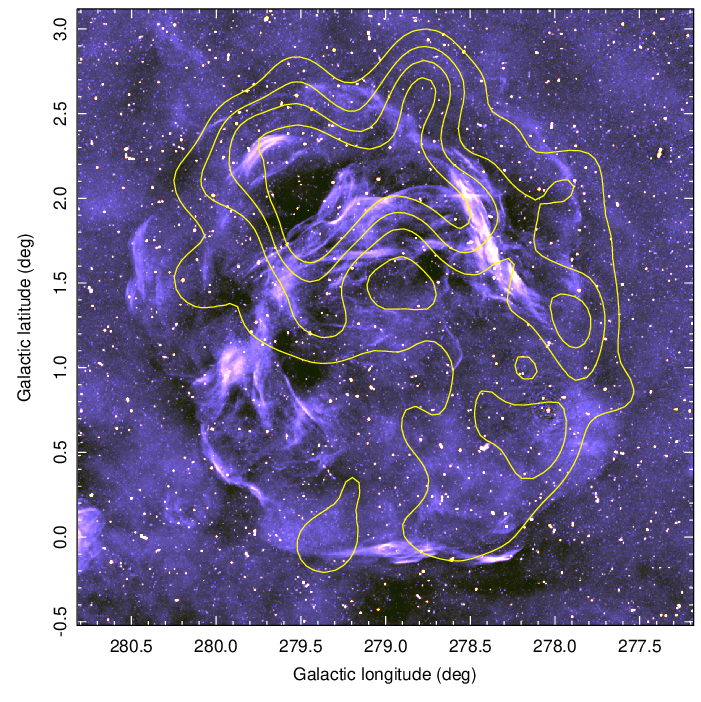<br />
图注：ASKAP 943\,MHz radio-continuum intensity image of Diprotodon (G278.94+1.35) -- one of the largest Galactic SNRs \(\citep{2024PASA...41..112F}\) seen at gamma-ray and radio frequencies. The synthesized beam for the radio image is $15^{\prime\prime}\times15^{\prime\prime}$. The \(\textit{Fermi}-LAT\) contours, for energies above 1~GeV, correspond to 5, 10, 15 and 20~$\sigma$ significance levels (smoothness=6).<br />
对应解读：建议重点查看的图表第5项“角分辨率或形态匹配图”；关键图表逐图导读中的图5；模型拟合段落中关于扩展源空间模板、射电壳层与伽马射线峰值位置关系的讨论。<br />
入选理由：这张图真实展示了一个银河系超新星遗迹 Diprotodon 的 ASKAP 943 MHz 射电连续谱图，并叠加了 Fermi-LAT 1 GeV 以上伽马射线显著性等值线，是候选图中唯一直接体现射电—伽马形态对应关系的图。它最适合支撑日报关于避免把简单空间重合过度解释为物理关联、需要考虑点扩散函数、背景和源混叠的解读；同时也能说明 SKAO 类高分辨率射电成像在检验扩展 TeV/GeV 源物理关联中的作用。<br />
来源与置信度：\(arxiv_source\)；high；\(arxiv_source\) / \(main_rev2.tex\):figure[1]</p>
<h4 id="_100">强相关工作</h4>
<p>本文与几类工作直接相连。第一类是 CTAO、LHAASO 和 Fermi-LAT 的源表与科学展望，它们定义了未来伽马射线样本的规模、选择函数和能量覆盖。检索关键词可用 “CTAO science with Cherenkov Telescope Array”、“LHAASO source catalog”、“Fermi-LAT 4FGL catalog”、“TeVCat”。第二类是 SKA 科学案例和瞬变、偏振、银河面巡天规划，检索关键词可用 “SKA science book non-thermal universe”、“SKA transients high energy astrophysics”、“SKA polarisation rotation measure grid”。</p>
<p>与基础理论相关的工作包括同步辐射、逆康普顿散射、扩散激波加速、强子伽马射线产生和喷流辐射模型。相反或存在张力的方向主要体现在电子模型与强子模型之争、星系团伽马射线非探测对宇宙线压力的限制、银河中心 TeV 辐射是否来自中心黑洞活动或弥散宇宙线海、以及耀变体中单区与多区模型的可区分性。检索关键词可用 “leptonic hadronic degeneracy TeV sources”、“gamma-ray emission galaxy clusters cosmic ray limits”、“Galactic center TeV diffuse emission”、“one-zone multi-zone blazar SED modeling”。</p>
<p><strong>同一事件 / 同类源线索</strong>：</p>
<ul>
<li><a href="https://arxiv.org/abs/2606.28210">https://arxiv.org/abs/2606.28210</a></li>
<li><a href="https://www.skao.int/">https://www.skao.int/</a></li>
<li><a href="https://www.ctao.org/">https://www.ctao.org/</a></li>
<li><a href="https://www.lhaaso.ac.cn/">https://www.lhaaso.ac.cn/</a></li>
<li><a href="http://tevcat.uchicago.edu/">http://tevcat.uchicago.edu/</a></li>
</ul>
<p><strong>相似工作</strong>：</p>
<ul>
<li><a href="https://arxiv.org/abs/1709.07997">https://arxiv.org/abs/1709.07997</a></li>
<li><a href="https://arxiv.org/abs/1810.02680">https://arxiv.org/abs/1810.02680</a></li>
<li><a href="https://arxiv.org/abs/1902.10045">https://arxiv.org/abs/1902.10045</a></li>
</ul>
<p><strong>基础理论 / 方法工作</strong>：</p>
<ul>
<li><a href="https://ui.adsabs.harvard.edu/abs/1970ARA%26A...8..297B/abstract">https://ui.adsabs.harvard.edu/abs/1970ARA%26A...8..297B/abstract</a></li>
<li><a href="https://ui.adsabs.harvard.edu/abs/1949PhRv...75.1169F/abstract">https://ui.adsabs.harvard.edu/abs/1949PhRv...75.1169F/abstract</a></li>
<li><a href="https://ui.adsabs.harvard.edu/abs/1978MNRAS.182..147B/abstract">https://ui.adsabs.harvard.edu/abs/1978MNRAS.182..147B/abstract</a></li>
</ul>
<p><strong>相反观点 / 张力线索</strong>：</p>
<ul>
<li><a href="https://arxiv.org/abs/1008.5119">https://arxiv.org/abs/1008.5119</a></li>
<li><a href="https://arxiv.org/abs/1603.07730">https://arxiv.org/abs/1603.07730</a></li>
<li><a href="https://arxiv.org/abs/1804.03966">https://arxiv.org/abs/1804.03966</a></li>
</ul>
</details>
<h3 id="10-in-flight-calibration-of-the-wide-field-x-ray-telescope-on-board-the-einstein-probe">10. In-flight calibration of the Wide-field X-ray Telescope on board the Einstein Probe</h3>
<ul>
<li>来源：arXiv / astro-ph.HE</li>
<li>链接：https://arxiv.org/abs/2606.28101v1</li>
<li>作者：Huaqing Cheng, Hai-Wu Pan, Yuan Liu, Jingwei Hu, Haonan Yang, Donghua Zhao, Zhixing Ling, Yifan Chen</li>
<li>评分：novelty 6/10，importance 8/10，relevance 9/10，final 8.75/10</li>
<li>推荐理由：给出Einstein Probe WXT在轨标定和CALDB结果，涉及宽场X射线暂现源探测的关键仪器性能，对EP科学数据分析非常实用。</li>
</ul>
<p><strong>中文题目</strong>：爱因斯坦探针宽视场 X 射线望远镜的在轨定标</p>
<p><strong>做了什么</strong>：这篇文章给出爱因斯坦探针卫星宽视场 X 射线望远镜 WXT 前两年半在轨运行的系统定标结果。作者用 Crab Nebula、Scorpius X-1 和 Cassiopeia A 等标准天体检查龙虾眼光学成像、定位、有效面积、能量标度和探测器长期稳定性。主要结论是：WXT 的在轨表现总体符合地面定标，约 \(90\%\) 视场内焦斑半高全宽为 \(3'\) 到 \(6'\)，中值约 \(4.3'\)；定标后源定位 \(90\%\) 置信精度达到 \(1.3'\)；\(0.5\)--\(4\,\mathrm{keV}\) 有效面积系统不确定度约不超过 \(10\%\)。少数模块在 \(0.4\)--\(0.6\,\mathrm{keV}\) 出现 \(30\%\)--\(40\%\) 的长期低能响应退化，但大多数探测器稳定。</p>
<p><strong>为什么重要</strong>：WXT 是爱因斯坦探针发现快速 X 射线暂现源的核心仪器。对这类宽视场龙虾眼望远镜而言，科学可信度并不只取决于是否能发现源，还取决于点扩散函数、有效面积、能量响应、位置重建和长期漂移是否能被量化。本文把这些性能参数落实到在轨标准源数据和 CALDB 定标产品中，因此直接决定后续瞬变源通量、谱形、位置误差和触发可靠性。</p>
<p><strong>理论 / 观测 / 仪器方法价值</strong>：对观测和仪器方法的价值在于，它把一种新型宽视场聚焦 X 射线光学系统的在轨响应函数做成可用于科学分析的校准框架。对使用 EP/WXT 数据的研究者，本文提供了判断源定位误差、光变幅度、软能段通量漂移和谱拟合系统误差的基准。对未来龙虾眼 X 射线任务，它也是从地面定标过渡到在轨 CALDB 的实用案例。</p>
<p><strong>为什么应该关注</strong>：如果你关心快速 X 射线暂现、伽马暴余辉、潮汐瓦解事件、恒星耀发、X 射线对应体搜索或多信使触发，WXT 的响应定标会进入你的误差预算。一个 \(10\%\) 有效面积系统误差、\(1.3'\) 定位误差或低能端 \(30\%\) 响应退化，足以改变源分类、宿主关联和能谱解释。本文不是单纯仪器报告，而是告诉你 EP/WXT 的科学结果在什么精度内可以相信。</p>
<details class="paper-detail">
<summary>展开详细解读：文章讲解、背景、理论、重点章节、图表与相关工作</summary>
<h4 id="_101">文章详细讲解</h4>
<p>科学问题：EP/WXT 采用龙虾眼微孔光学来同时获得很大的瞬时视场和比传统准直监视器更好的灵敏度。这种设计对动态 X 射线天空非常有吸引力，但也带来复杂响应：点源图像不是普通 Wolter 望远镜那样近似紧凑的单峰，而是包含中心焦斑和交叉臂结构；有效面积随离轴角、能量、模块和时间变化；宽视场下源定位还会受到视场畸变、姿态、背景和探测器非均匀性的共同影响。本文要回答的是：WXT 发射后实际响应是否仍与地面模型一致，科学用户应该采用怎样的在轨响应和误差预算。</p>
<p>作者怎么做：作者选择 Crab Nebula、Scorpius X-1 和 Cassiopeia A 作为标准在轨定标源。Crab 提供亮而相对稳定的连续谱，可用于有效面积、成像和定位；Scorpius X-1 极亮，适合检查高计数率下的成像和模块响应；Cassiopeia A 有较丰富的谱线结构，可用于 CMOS 探测器能量标度和谱分辨率评估。作者把这些观测与地面定标模型、射线追踪和响应矩阵比较，检查焦斑半高全宽、源位置偏差、有效面积、低能响应演化、能量增益和能量分辨率。</p>
<p>关键结果：在约 \(90\%\) 的视场范围内，WXT 焦斑半高全宽通常处在 \(3'\)--\(6'\)，中值约 \(4.3'\)，说明发射、热环境和在轨运行没有显著破坏龙虾眼光学的成像能力。通过位置校正后，点源定位误差达到 \(1.3'\) 的 \(90\%\) 置信水平。\(0.5\)--\(4\,\mathrm{keV}\) 的在轨有效面积与模型和地面测试总体一致，系统不确定度约 ≤\(10\%\)。这对暂现源通量测量尤其重要，因为 WXT 的许多发现将只有短曝光或低信噪比，响应系统误差会直接进入光度和能量释放估计。</p>
<p>局限和下一步：本文也明确指出少数模块在 \(0.4\)--\(0.6\,\mathrm{keV}\) 低能端出现明显长期退化，幅度可达 \(30\%\)--\(40\%\)。这意味着软谱源、强吸收源的低能通量和随时间比较需要格外谨慎。下一步的关键不是重新证明仪器可用，而是持续更新 CALDB、分模块追踪响应演化、把软能段退化纳入时间依赖响应，并在科学论文中显式传播定位、有效面积和背景建模的不确定度。</p>
<h4 id="_102">关键结果是怎么做出来的</h4>
<p>本文的核心证据链从标准源样本开始。作者没有依赖单一校准天体，而是使用 Crab Nebula、Scorpius X-1 和 Cassiopeia A，它们分别服务于不同诊断：Crab 用于连续谱通量和点扩散函数基准，Scorpius X-1 用于高计数率和大视场成像检查，Cassiopeia A 用于能量标度与谱分辨率。这样的样本选择避免了把一个源的天体物理不确定性误判为仪器响应误差。</p>
<p>成像结果主要围绕焦斑半高全宽和离轴角依赖展开。作者统计不同视场位置上的点源图像宽度，得到约 \(90\%\) 视场内 \(\mathrm{FWHM}\) 为 \(3'\)--\(6'\)，中值约 \(4.3'\)。读者应关注这不是单一数值，而是一个跨模块、跨视场的分布；真正用于科学分析时，源所在探测器模块和离轴角会影响灵敏度、混淆概率和定位误差。</p>
<p>定位结果通过比较 WXT 重建位置与标准源已知位置得到。文章报告定标后源定位精度为 \(1.3'\) 的 \(90\%\) 置信水平。这里的统计含义是，位置偏差分布的 \(90\%\) 包含半径或等价置信指标达到这一量级；它不是每个单独低信噪比暂现源都能达到的误差，而是明亮标准源和定标模型下的基准性能。对暂现源关联宿主星系或搜索多波段对应体时，还要叠加统计定位误差、姿态误差和源检测显著性依赖项。</p>
<p>有效面积结果来自标准源观测计数率或谱拟合与响应模型的比较。作者给出 \(0.5\)--\(4\,\mathrm{keV}\) 在轨有效面积与地面定标和模型预测一致，整体系统不确定度约 ≤\(10\%\)，置信水平为 \(90\%\)。这类结论通常要看数据与模型比值随能量、模块、离轴角的残差，而不是只看平均归一化；若某一能段残差呈系统趋势，就会影响谱指数、吸收柱密度和能量通量。</p>
<p>长期稳定性的关键结果是少数模块在 \(0.4\)--\(0.6\,\mathrm{keV}\) 发生 \(30\%\)--\(40\%\) 响应退化。文章的稳健性需要依靠重复观测、不同源交叉检查和分模块趋势图来支撑。由于退化集中在低能端，它与天体源软谱变化、星际吸收变化、背景建模偏差之间存在潜在混淆；因此科学用户应检查自己使用的 CALDB 是否包含相应时间依赖修正。</p>
<p>谱学检查使用 Cassiopeia A 来验证 CMOS 探测器能量标度和谱分辨率稳定性。这里最重要的不是把 Cas A 当作绝对标准烛光，而是利用其谱特征检验增益漂移和能量分辨率变化。若谱线中心残差小、线宽变化受控，则说明能量重建和响应矩阵在在轨环境下可用于常规谱分析。</p>
<details class="paper-subdetail">
<summary>展开背景、理论、公式、模型、章节和图表导读</summary>
<h4 id="_103">背景知识</h4>
<p>WXT 所在的爱因斯坦探针任务面向动态 X 射线天空：短时标暂现、爆发、引力波或中微子事件的 X 射线对应体、潮汐瓦解事件早期阶段、伽马暴余辉、磁星和恒星耀发等。这类科学目标的共同特征是不可预知、持续时间短、天空位置分散，因此仪器需要大视场、高巡天效率和足够灵敏度。</p>
<p>传统 X 射线聚焦望远镜通常采用 Wolter 型掠入射光学，角分辨率好、灵敏度高，但视场有限。传统全天监视器可覆盖大视场，但多为准直或编码孔径，低能段灵敏度和源定位能力有限。龙虾眼光学试图在二者之间取得折中：通过微孔阵列的双次反射实现大视场聚焦，使弱暂现源更容易被发现。</p>
<p>历史问题在于，龙虾眼光学的响应函数比简单成像系统更复杂。点源图像包含中心焦斑、十字形臂和弥散背景；反射效率受能量和入射角影响；模块拼接和探测器响应不均匀会在宽视场中引入空间依赖系统误差。因此，地面定标虽必要，但发射后的热环境、污染、辐照和姿态重建都可能改变真实性能。</p>
<p>现在值得重新看，是因为 EP 已经进入科学运行并开始贡献 X 射线暂现发现。任何暂现源论文都会用到 WXT 的位置、通量、能谱和触发显著性。若仪器响应还停留在发射前模型，科学结论可能系统偏差；若有在轨 CALDB，用户就能把仪器误差纳入定量分析。</p>
<p>该领域常见误区之一是把 \(\mathrm{FWHM}\) 当成唯一角分辨率指标。对龙虾眼系统，交叉臂和翼部会影响源混淆、背景估计和弱源检测，不能只看中心焦斑。另一个误区是把 Crab 标准源的拟合一致性直接推广到所有能段和所有模块；实际上低能响应、离轴角和时间退化可能对软源更敏感。</p>
<h4 id="_104">基础理论 / 方法脉络</h4>
<p>从物理图像看，WXT 的龙虾眼光学利用许多方形或近方形微孔通道。当 X 射线以小掠射角进入微孔时，可能在相邻壁面发生一次或两次反射。两次反射的光子形成中心焦斑，一次反射光子形成相互垂直的臂，未聚焦或散射光子贡献背景和翼部。这解释了为什么 WXT 的响应不能用一个简单高斯点扩散函数完全描述。</p>
<p>仪器定标的基本对象是从入射天体光子流到探测器计数的映射。天体源的光子谱经过光学有效面积、滤光片透过率、探测器量子效率、能量重分布和空间响应后，变成观测到的事件列表。科学分析中使用的 \(\mathrm{ARF}\) 描述能量相关有效面积，\(\mathrm{RMF}\) 描述真实光子能量到探测脉冲高度或能道的概率重分布，点扩散函数和曝光图描述空间维度。</p>
<p>本文的模型假设是标准源的谱形和位置足够可靠，可以把观测残差主要归因于仪器响应。Crab 常被近似为幂律连续谱，适合检查有效面积归一化和能量依赖；Cas A 的谱线特征适合检查能量增益和分辨率；Scorpius X-1 的高亮度适合检验成像和高计数响应。但这些源本身并非完美标准，因此需要把源模型不确定性和仪器响应误差分开。</p>
<p>常见退化关系包括有效面积归一化与源通量归一化退化、低能有效面积与吸收柱密度退化、能量增益漂移与谱线中心偏移退化、点扩散函数翼部与背景估计退化。对于宽视场暂现源，还存在离轴角与灵敏度的强耦合：同一物理通量在不同视场位置产生的计数率可明显不同。</p>
<p>数据分析逻辑上，定标并不是给出一个平均灵敏度数值，而是构造可查询的 CALDB。科学用户在给定观测时间、源位置、能量范围和探测器模块后，应调用对应响应文件，再进行成像、定位、光变和谱拟合。本文的价值正是说明这些响应文件在在轨数据上被验证到什么精度。</p>
<h4 id="_105">公式与推导</h4>
<p>第一步，把天体源的光子谱写成单位面积、单位时间、单位能量的光子流 \(F(E)\)。若忽略空间扩展，探测器在能道 \(i\) 中的期望计数为</p>
<div class="math-display">\[\mu_i=t_{\rm exp}\int R_i(E,\theta,\phi,t)\,A_{\rm eff}(E,\theta,\phi,t)\,F(E)\,dE+B_i .\]</div>
<p>这里 \(t_{\rm exp}\) 是曝光时间，\((\theta,\phi)\) 是源在视场中的方向，\(A_{\rm eff}\) 是有效面积，\(R_i\) 是能量重分布到能道 \(i\) 的概率，\(B_i\) 是背景计数。本文所有有效面积、谱响应和长期稳定性结论，本质上都是在检验 \(\mu_i\) 是否能解释实际计数。</p>
<p>第二步，对 Crab 一类连续谱标准源，常用幂律近似为</p>
<div class="math-display">\[F(E)=K\left(\frac{E}{E_0}\right)^{-\Gamma} .\]</div>
<p>其中 \(K\) 是在参考能量 \(E_0\) 的归一化，\(\Gamma\) 是光子指数。若 \(K\) 和 \(\Gamma\) 由外部标准给定，那么观测计数率与模型计数率的比值可直接诊断 \(A_{\rm eff}\) 的归一化和能量依赖。</p>
<p>第三步，某一能段 \([E_1,E_2]\) 内的模型计数率可写成</p>
<div class="math-display">\[C_{\rm mod}=\int_{E_1}^{E_2} A_{\rm eff}(E,\theta,\phi,t)F(E)\,dE .\]</div>
<p>实际分析还要包含能量重分布和背景，但这个式子展示了为什么 \(0.5\)--\(4\,\mathrm{keV}\) 有效面积的 ≤\(10\%\) 系统误差会近似线性传播到通量误差。</p>
<p>第四步，点源成像可用二维点扩散函数 \(P(x,y\mid\theta,\phi,E)\) 表示，并满足</p>
<div class="math-display">\[\int P(x,y\mid\theta,\phi,E)\,dx\,dy=1 .\]</div>
<p>龙虾眼系统的 \(P\) 不是单高斯，而包含中心峰和十字臂。本文报告的 \(\mathrm{FWHM}\) 是中心焦斑宽度的实用指标，但弱源检测还取决于翼部和背景。</p>
<p>第五步，若近似把中心焦斑写成二维高斯，半高全宽与标准差满足</p>
<div class="math-display">\[\mathrm{FWHM}=2\sqrt{2\ln 2}\,\sigma .\]</div>
<p>因此 \(\mathrm{FWHM}\approx4.3'\) 对应的高斯等效 \(\sigma\) 约为 \(1.8'\)。这只是便于理解的等效尺度，不能替代真实龙虾眼响应。</p>
<p>第六步，定位误差常由统计误差和系统误差合成，可写成</p>
<div class="math-display">\[\sigma_{\rm pos}^2\simeq \sigma_{\rm stat}^2+\sigma_{\rm sys}^2 .\]</div>
<p>对高信噪比标准源，\(\sigma_{\rm stat}\) 较小，残余偏差主要暴露姿态、几何映射和响应模型误差。本文的 \(1.3'\) 的 \(90\%\) 置信定位精度可理解为定标后 \(\sigma_{\rm sys}\) 已被压低到可用于快速对应体搜索的水平。</p>
<p>第七步，计数型数据的自然似然是泊松似然，写作</p>
<div class="math-display">\[\ln \mathcal{L}=\sum_i \left[n_i\ln \mu_i-\mu_i-\ln(n_i!)\right] .\]</div>
<p>这里 \(n_i\) 是观测计数，\(\mu_i\) 是响应模型预测。有效面积、背景、源谱参数和能量增益都可以通过最大化 \(\mathcal{L}\) 或采样后验来估计。</p>
<p>第八步，响应退化可用相对有效面积变化量表示为</p>
<div class="math-display">\[D(E,t)=\frac{A_{\rm eff}(E,t)}{A_{\rm eff}(E,t_0)} .\]</div>
<p>若某些模块在 \(0.4\)--\(0.6\,\mathrm{keV}\) 有 \(D\approx0.6\)--\(0.7\)，就对应本文所说的 \(30\%\)--\(40\%\) 低能端退化。科学分析必须使用随时间更新的 \(A_{\rm eff}(E,t)\)。</p>
<p>第九步，谱线能量标度可用线心残差检查：</p>
<div class="math-display">\[\Delta E=E_{\rm obs}-E_{\rm ref},\qquad \frac{\Delta E}{E_{\rm ref}}\ll1 .\]</div>
<p>其中 \(E_{\rm obs}\) 是观测线心，\(E_{\rm ref}\) 是参考线心。Cas A 的谱特征能检验 CMOS 探测器增益是否稳定；若 \(\Delta E\) 随时间或模块系统漂移，就需要更新增益校正和 \(\mathrm{RMF}\)。</p>
<h4 id="_106">模型拟合 / 应用方法</h4>
<p>本文涉及的拟合首先是源谱模型与仪器响应的联合拟合。对 Crab，常见做法是在固定或弱约束幂律谱形的基础上，让有效面积归一化、能量依赖残差或交叉归一化因子吸收仪器偏差。实际拟合量包括能段计数率、能道谱、源位置和点扩散函数参数。若拟合后残差在能量上呈平滑倾斜，通常指向有效面积或吸收建模问题；若残差集中在特定能道，则可能是能量重分布或增益问题。</p>
<p>定位和成像拟合关注源位置、背景平面、点扩散函数宽度及其离轴角依赖。对于龙虾眼 WXT，不能只拟合中心峰而完全忽略交叉臂，否则源通量和背景可能相互污染。残差图应检查中心峰位置是否系统偏移、交叉臂强度是否被模型低估、不同模块边界附近是否出现结构化残差。</p>
<p>参数退化是这类定标工作的核心难点。源通量归一化 \(K\) 与有效面积 \(A_{\rm eff}\) 几乎完全相乘退化，因此需要外部标准源模型或与其他仪器交叉校准。低能有效面积退化与吸收柱密度 \(N_{\rm H}\) 退化，会使软能段响应下降看起来像源变硬或吸收增加。能量增益漂移与谱线本征速度或线心模型也可混淆，所以 Cas A 的使用必须结合已知谱特征和稳定性假设。</p>
<p>系统误差方面，地面定标到在轨环境的迁移包括热形变、污染层累积、辐照损伤、探测器噪声变化、姿态解误差和背景环境变化。本文给出的 \(0.5\)--\(4\,\mathrm{keV}\) ≤\(10\%\) 有效面积不确定度应被视为科学拟合中的系统项，而不是可以忽略的统计误差。对低计数暂现源，统计误差可能占主导；对亮源或叠加样本，系统误差会迅速成为限制。</p>
<p>实际应用中，用户应在谱拟合时调用与观测日期、模块和源位置匹配的 CALDB，并在软能段结果中特别检查是否涉及退化模块。若研究目标依赖 \(0.4\)--\(0.6\,\mathrm{keV}\) 的软超量、吸收边或温度较低的热成分，建议做能段截断、模块剔除和响应版本比较。对于源定位，应把论文给出的基准定位精度与具体源的信噪比相关统计误差合成，而不是直接把 \(1.3'\) 套用到所有触发。</p>
<h4 id="_107">重点章节 / 结果段落怎么读</h4>
<p>数据与标准源部分应首先阅读。重点看作者为什么选择 Crab Nebula、Scorpius X-1 和 Cassiopeia A，以及每个源分别约束哪些仪器性质。读者应确认标准源观测是否覆盖足够多的模块、离轴角和时间基线，因为这决定结论能否代表整个宽视场。</p>
<p>成像与定位定标部分是理解 WXT 科学能力的核心。应重点看焦斑 \(\mathrm{FWHM}\) 随视场位置的分布、定标前后位置残差的变化，以及 \(90\%\) 置信定位精度的定义。这里关系到暂现源触发后多波段随访的搜索区域。</p>
<p>有效面积和通量定标部分直接影响谱和光变科学。应看观测计数率与模型预测的比值、\(0.5\)--\(4\,\mathrm{keV}\) 系统不确定度的估计方法、不同模块间的交叉归一化，以及低能端是否存在系统偏离。</p>
<p>长期稳定性部分需要单独关注。少数模块在 \(0.4\)--\(0.6\,\mathrm{keV}\) 的 \(30\%\)--\(40\%\) 退化是科学用户最容易忽略、但最可能影响软 X 射线结果的现象。读者应检查作者如何区分真实退化、背景变化和标准源模型不确定性。</p>
<p>谱学评估和 CALDB 更新部分说明这些定标如何落地。Cas A 对能量标度和分辨率的验证决定 WXT 谱分析的可靠能区；CALDB 的纳入则决定普通用户能否复现实验团队的定标结果。</p>
<h4 id="_108">建议重点查看的图表</h4>
<ol>
<li>视场内焦斑 \(\mathrm{FWHM}\) 分布图：看 \(3'\)--\(6'\) 范围是否覆盖大部分视场，以及边缘或特定模块是否显著变差。</li>
<li>定标前后位置残差图：看系统偏差是否被消除，\(90\%\) 包含半径是否确实约为 \(1.3'\)，以及残差是否有方向性。</li>
<li>有效面积比值或交叉定标图：看 WXT 在轨结果与地面模型或预测的比值是否在 \(10\%\) 内，尤其关注 \(0.5\)--\(4\,\mathrm{keV}\)。</li>
<li>分模块低能响应随时间图：看 \(0.4\)--\(0.6\,\mathrm{keV}\) 退化集中在哪些模块，是否单调，是否与观测条件相关。</li>
<li>Cas A 谱线或谱残差图：看线心是否漂移、线宽是否稳定、残差是否集中在特定能道。</li>
<li>CALDB 应用前后残差比较：若论文提供，应检查更新响应是否真正减少结构化残差，而不仅仅改善平均归一化。</li>
</ol>
<h4 id="_109">关键图表逐图导读</h4>
<p>图 1：建议把它作为 WXT 光学和模块几何的入口图来读。横纵坐标通常会对应探测器或天空视场位置，数据点或色标显示焦斑宽度、曝光或响应强度。读图时不要只看中心区域，应特别看视场边缘、模块边界和异常模块，因为这些区域决定宽视场巡天的真实选择函数。</p>
<p>图 2：若为焦斑 \(\mathrm{FWHM}\) 或点扩散函数图，横轴可能是离轴角或视场坐标，纵轴为 \(\mathrm{FWHM}\) 或包围能量半径。模型线代表地面定标或射线追踪预测，数据点代表在轨标准源测量。关键结论是大多数视场落在 \(3'\)--\(6'\)，陷阱是把中心焦斑宽度误读为完整 PSF；龙虾眼交叉臂对弱源和背景同样重要。</p>
<p>图 3：若为源定位残差图，横纵轴通常是赤经和赤纬方向偏差或径向偏差累计分布。应看定标后偏差云是否以零为中心、是否存在长尾，以及 \(90\%\) 置信半径如何标出。读图陷阱是忽略亮标准源与普通暂现源之间的信噪比差异。</p>
<p>图 4：若为有效面积或计数率比值图，横轴通常是能量，纵轴为观测与模型比值或有效面积。数据点误差棒给出统计不确定度，阴影或虚线给出系统误差范围。关键是 \(0.5\)--\(4\,\mathrm{keV}\) 是否整体在约 \(10\%\) 内；陷阱是只看宽能段平均而忽视低能端结构。</p>
<p>图 5：若为长期稳定性图，横轴是时间或任务日，纵轴是归一化计数率、有效面积比值或退化因子。应分模块看趋势，尤其是 \(0.4\)--\(0.6\,\mathrm{keV}\) 中出现 \(30\%\)--\(40\%\) 下降的模块。读图时要区分统计散点、源变化和仪器响应变化。</p>
<p>图 6：若为 Cas A 谱拟合图，上面板通常为能谱计数和模型，下面板为残差。应检查谱线中心附近是否有系统偏移、残差是否随时间变化、能量分辨率是否恶化。若残差随机且线心稳定，就支持 CMOS 能量标度和谱分辨率在轨稳定。</p>
</details>
<h4 id="_110">论文原图 / 可嵌入图片</h4>
<p><strong>Fig11</strong><br />
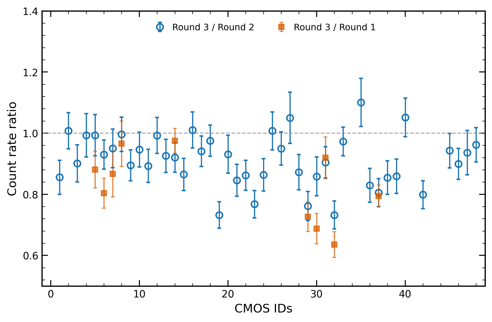<br />
图注：Ratio of the 0.4--0.6\,keV count rate across different calibration epochs. The red dots denote the ratio between the third epoch (data obtained from November 2025 to February 2026) and the second epoch (data obtained from January to February 2025), and the gray squares denote the ratio between the third epoch and the first epoch (data obtained from February to March 2024).<br />
对应解读：对应“建议重点查看的图表”第4项和关键图表导读图5：分模块低能响应随时间图，重点检查0.4--0.6 keV低能退化。<br />
入选理由：这是候选图中最直接展示低能端长期退化的图，横向比较不同探测器/模块在不同定标时期的0.4--0.6 keV计数率比值，可直接验证少数模块是否出现30%--40%下降以及退化是否集中在特定模块。<br />
来源与置信度：\(arxiv_source\)；high；\(arxiv_source\) / aanda.tex:figure[11]</p>
<p><strong>Fig06</strong><br />
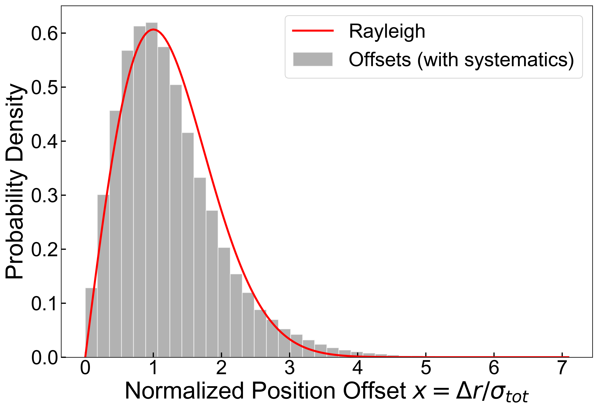<br />
图注：Histogram (in grey) of the normalized positional offset $x$ after incorporating the best-fit systematic uncertainty of $0.61'$ (which corresponds to $1.3'$ at the 90\% C.L.; see text for details), plotted alongside the theoretical Rayleigh distribution (red curve). A total of 164,525 detections from 4,370 sources are utilized for this calculation.<br />
对应解读：对应“建议重点查看的图表”第2项和关键图表导读图3：源定位残差的90%置信半径与系统定位误差。<br />
入选理由：该图明确给出加入最佳拟合系统误差0.61'后的位置偏差归一化分布，并标注其对应90%置信水平下1.3'，正好支撑日报中关于定位精度基准值的解读。<br />
来源与置信度：\(arxiv_source\)；high；\(arxiv_source\) / aanda.tex:figure[6]</p>
<p><strong>Fig02</strong><br />
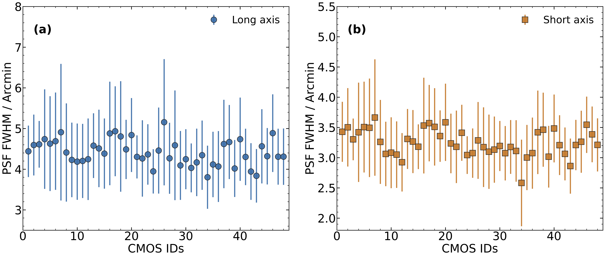<br />
图注：In-orbit PSF FWHM measured across different CMOS detectors. The \(\textit{left}\) panel shows the mean and standard deviation of the FWHM measured along the major axis. The \(\textit{right}\) panel shows the measurements along the minor axis.<br />
对应解读：对应“建议重点查看的图表”第1项和关键图表导读图2：在轨PSF/FWHM随不同CMOS探测器的分布。<br />
入选理由：该图直接展示WXT不同CMOS探测器上的在轨PSF FWHM主轴和次轴测量，是判断多数视场是否落在3'--6'、以及是否存在探测器间差异的核心图。<br />
来源与置信度：\(arxiv_source\)；high；\(arxiv_source\) / aanda.tex:figure[2]</p>
<p><strong>Fig04</strong><br />
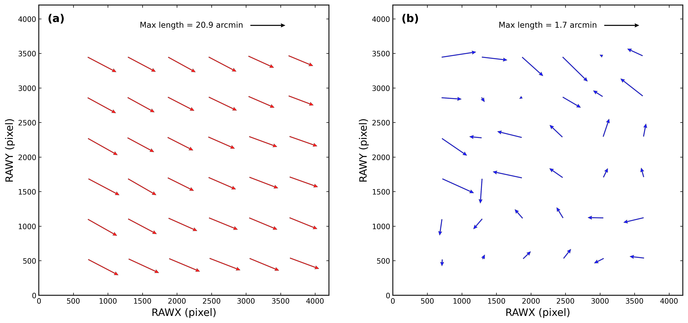<br />
图注：Exemplary quiver map representing the positional deviations between the expected and measured PSF focal spot centroids, using Sco X-1 data observed with CMOS 9. Panel (a) illustrates the offsets prior to the in-orbit localization calibration, and panel (b) shows the residual deviations after the calibration was applied. In each panel, a reference arrow representing the maximum offset vector is provided for scale.<br />
对应解读：对应“建议重点查看的图表”第2项：定标前后位置残差图，以及模型拟合段落中关于源位置、姿态和结构化残差的讨论。<br />
入选理由：该图用矢量场直接比较在轨定位定标前后的PSF焦斑质心偏差，能直观看出系统性方向偏差是否被校正，比单纯的统计直方图更适合检查残差方向性和视场畸变。<br />
来源与置信度：\(arxiv_source\)；high；\(arxiv_source\) / aanda.tex:figure[4]</p>
<p><strong>Fig12</strong><br />
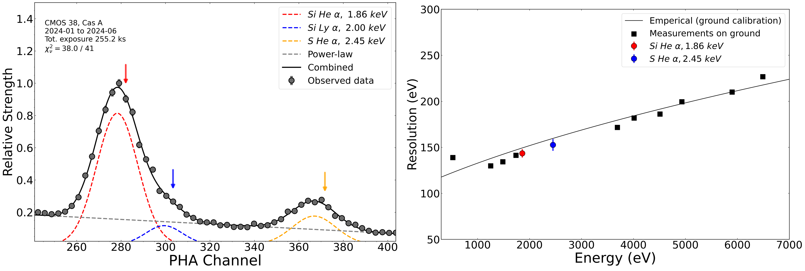<br />
图注：(\(\textit{Upper}\) panel) Spectral analysis of Cas A using the data retrieved from CMOS 38 during the commissioning phase, with a total exposure of $25.5$\,ks. The observed data are denoted by gray symbols. The underlying continuum, described by a power-law model, is signified by the gray dotted line. The three characteristic emission lines (Si He$\alpha$, S He$\alpha$, and Si Ly$\alpha$) are denoted by the red, blue, and orange dashed lines, respectively. The combination of these components is denoted by the black solid curve. The theoretically expected positions of the three emission lines, calculated from the ground-measured E-C relation, are marked by arrows in corresponding colors. (\(\textit{Lower}\) panel) Relation between the photon energy and the spectral resolution, derived from the Cas A spectral fitting for CMOS 38. The in-orbit spectral resolutions at the energies of Si He$\alpha$ and S He$\alpha$ are denoted by red and blue dots, respectively. The resolutions measured from ground calibration experiments at ten characteristic X-ray emission lines (including O K$\alpha$, Mg K$\alpha$, Al K$\alpha$, Si K$\alpha$, Ca K$\alpha$, Ca K$\beta$, Ti K$\alpha$, Ti K$\beta$, Mn K$\alpha$, and Mn K$\beta$) are denoted by black squares. The empirical relation obtained by fitting the standard resolution equation $\mathrm{FWHM}_{E}=2.35\omega(\sigma^2+f_{\rm Fano}E/\omega)^{1/2}$ \(\citep{Holland2013}\) to the ground measurements is denoted by the black solid curve.<br />
对应解读：对应“建议重点查看的图表”第5项和关键图表导读图6：Cas A谱线、谱拟合和能量分辨率稳定性。<br />
入选理由：该图同时给出Cas A谱线拟合、理论线心位置标记以及在轨/地面能量分辨率比较，最能支撑日报中关于CMOS能量标度、谱线中心和谱分辨率稳定性的解读。<br />
来源与置信度：\(arxiv_source\)；high；\(arxiv_source\) / aanda.tex:figure[12]</p>
<p><strong>Fig09</strong><br />
<br />
图注：Crab spectral fitting parameters for 46 detectors (excluding CMOS 34 and CMOS 41) onboard the \(\textit{EP}-WXT\) instrument. Panels (a)--(d) show the photon index, the column density, the normalization of the power-law model, and the observed flux within the 0.5--4\,keV band, respectively. For each detector, the data point represents the typical parameter value calculated by averaging the best-fit results derived from different incident angles. The corresponding error bars denote the systematic scatter (at the 90\% C.L.) across the field of view, which is evaluated by isolating the intrinsic parameter dispersion from the statistical fitting noise. The observational data for the eight detectors onboard FM3 and FM9 were taken during the second calibration epoch. For the other 38 detectors, the observational data were taken during the commissioning phase. See the main text for details.<br />
对应解读：对应“建议重点查看的图表”第3项和模型拟合段落：Crab谱拟合参数、0.5--4 keV通量和跨探测器系统散布。<br />
入选理由：候选图中没有单独的有效面积比值曲线；Fig09是最接近有效面积交叉定标诊断的图，给出46个探测器的Crab谱拟合参数、0.5--4 keV通量及90%置信系统散布，可用于评估在轨响应与模型一致性及探测器间系统误差。<br />
来源与置信度：\(arxiv_source\)；high；\(arxiv_source\) / aanda.tex:figure[9]</p>
<h4 id="_111">强相关工作</h4>
<p>这篇工作与同类宽视场 X 射线监视器和聚焦巡天仪器的定标论文直接相关。可对比的方向包括 Swift/XRT 的在轨响应、MAXI 和 Fermi/GBM 等监视器的长期稳定性、eROSITA 的有效面积和能量响应定标，以及早期龙虾眼原理样机和中国 EP 任务设计论文。检索关键词可用 “Einstein Probe WXT calibration lobster-eye optics”, “lobster-eye X-ray telescope in-flight calibration”, “wide-field X-ray monitor effective area calibration”。</p>
<p>本文涉及的具名标准源包括 Crab Nebula、Scorpius X-1 和 Cassiopeia A。它们分别有大量同源或历史校准文献：Crab 是 X 射线天文最常用但并非绝对不变的标准烛光；Scorpius X-1 是极亮低质量 X 射线双星，适合高计数率检查但本身强烈变源；Cassiopeia A 是年轻超新星遗迹，常用于能量标度和谱线响应，但也存在空间扩展和长期演化。检索时应同时查 “Crab calibration X-ray standard”, “Sco X-1 X-ray calibration”, “Cassiopeia A X-ray spectral calibration”。</p>
<p>潜在张力主要来自标准源不是完美标准，以及不同任务之间的交叉定标差异。Crab 的谱归一化和光子指数在不同仪器间存在已知分散；软能段响应对污染层和吸收模型敏感；龙虾眼 PSF 的非高斯翼部会使简单孔径光度产生偏差。因此，本文结论应与未来 EP/WXT 科学样本的交叉仪器验证一起使用。</p>
<p><strong>同一事件 / 同类源线索</strong>：</p>
<ul>
<li><a href="https://arxiv.org/abs/2606.28101">https://arxiv.org/abs/2606.28101</a></li>
<li><a href="https://simbad.u-strasbg.fr/simbad/sim-id?Ident=Crab%20Nebula">https://simbad.u-strasbg.fr/simbad/sim-id?Ident=Crab%20Nebula</a></li>
<li><a href="https://simbad.u-strasbg.fr/simbad/sim-id?Ident=Sco%20X-1">https://simbad.u-strasbg.fr/simbad/sim-id?Ident=Sco%20X-1</a></li>
<li><a href="https://simbad.u-strasbg.fr/simbad/sim-id?Ident=Cassiopeia%20A">https://simbad.u-strasbg.fr/simbad/sim-id?Ident=Cassiopeia%20A</a></li>
</ul>
<p><strong>相似工作</strong>：</p>
<p>（未提供）</p>
<p><strong>基础理论 / 方法工作</strong>：</p>
<ul>
<li><a href="https://arxiv.org/abs/2606.28101">https://arxiv.org/abs/2606.28101</a></li>
</ul>
<p><strong>相反观点 / 张力线索</strong>：</p>
<p>（未提供）</p>
</details>
<h3 id="11-measuring-high-energy-cosmic-particles-with-the-ska">11. Measuring High-Energy Cosmic Particles with the SKA</h3>
<ul>
<li>来源：arXiv / astro-ph.HE</li>
<li>链接：https://arxiv.org/abs/2606.28068v1</li>
<li>作者：Tim Huege, Katharine Mulrey, Sjoerd Bouma, Justin Bray, Stijn Buitink, Arthur Corstanje, Vital De Henau, Edwin Dickinson</li>
<li>评分：novelty 6/10，importance 8/10，relevance 9/10，final 8.75/10</li>
<li>推荐理由：阐述SKA-Low测量PeV-EeV宇宙线空气簇射、成分和PeV伽马候选的科学能力，兼具宇宙线和仪器方法重要性。</li>
</ul>
<p><strong>中文题目</strong>：用 SKA 测量高能宇宙粒子</p>
<p><strong>做了什么</strong>：这篇文章是 SKA-Low 开展高能宇宙线和粒子天体物理观测的科学案例与观测方案综述。作者讨论了如何利用 SKA-Low 密集核心阵列和宽频带天线记录空气簇射的射电信号，在约 \(\mathrm{PeV}\) 到 \(\mathrm{EeV}\) 能区重建单个宇宙线事例，尤其是以优于 \(8\,\mathrm{g\,cm^{-2}}\) 的精度测量簇射最大深度 \(X_{\max}\)。文章还说明了专用粒子探测器阵列如何触发天线原始电压缓冲区读出，使宇宙线观测与常规 SKA 天文观测共存。核心结论是：SKA-Low 不只是一个射电望远镜，也可能成为研究银河系到河外宇宙线过渡、\(\mathrm{PeV}\) 伽马射线、强子相互作用模型以及异常空气簇射的高精度空气簇射实验平台。</p>
<p><strong>为什么重要</strong>：宇宙线在 \(\mathrm{PeV}\) 至 \(\mathrm{EeV}\) 能区经历从银河系源到河外源的转变，但目前成分测量、能标、空气簇射模型和强子相互作用系统误差仍然限制解释。SKA-Low 的意义在于，它可以用非常密集的射电采样直接约束空气簇射纵向发展，显著改善 \(X_{\max}\) 分辨率，并在单事例层面测试现有 hadronic interaction models。这个能区正好覆盖膝区、第二膝区和 ankle 之前的复杂过渡段，因此对宇宙线起源、传播和加速极限都有直接影响。</p>
<p><strong>理论 / 观测 / 仪器方法价值</strong>：对理论而言，文章给出了用射电空气簇射观测约束宇宙线成分和高能强子相互作用的清晰路径；对观测而言，它说明 SKA-Low 的天线密度、带宽和原始电压缓冲读出可以把射电探测从事件计数推进到高保真单事例成像；对仪器和方法而言，它强调了触发粒子探测器、干涉成像、全波形拟合、端到端 Monte Carlo 和异常簇射诊断的组合价值。</p>
<p><strong>为什么应该关注</strong>：如果你关心宇宙线起源，SKA-Low 可能在最关键的过渡能区给出比现有阵列更精细的成分信息；如果你关心粒子物理，它可能用天然超高能束流检验加速器能区以上的强子模型；如果你做射电仪器或瞬变信号处理，这篇文章展示了一个把天文台变成粒子探测器的实际架构，包括触发、缓冲、标定、波形保存和 commensal observing。</p>
<details class="paper-detail">
<summary>展开详细解读：文章讲解、背景、理论、重点章节、图表与相关工作</summary>
<h4 id="_112">文章详细讲解</h4>
<p>科学问题：文章聚焦于高能宇宙线起源和空气簇射物理中的两个长期瓶颈。第一，\(\mathrm{PeV}\) 到 \(\mathrm{EeV}\) 能区可能包含银河系源加速极限、成分从轻到重或从重到轻的变化，以及河外宇宙线开始占优的信号。第二，宇宙线成分判断依赖空气簇射模型，尤其是 \(X_{\max}\)、缪子含量和横向分布，而这些量又受高能强子相互作用模型系统误差影响。作者的基本论点是，SKA-Low 的低频射电阵列密度远高于常规宇宙线射电阵列，因此可以把单个空气簇射当作一个高采样率、可成像的电磁脉冲事件来研究。</p>
<p>作者怎么做：这篇文章不是一次已经完成的数据发布，而是 SKA-Low 宇宙粒子项目的科学案例、观测策略和配套章节导论。作者梳理了 SKA-Low 的核心阵列、宽频带响应、原始天线电压缓冲区、外部粒子探测器触发以及与常规天文观测并行运行的设想。其关键技术路径是：由专用粒子探测器阵列提供空气簇射触发；触发后读出天线级原始电压；利用波形、到达时间、偏振、频谱和空间足迹重建簇射几何、能量和 \(X_{\max}\)；进一步发展干涉重建方法，把射电发射区域在三维空间和时间上定位。</p>
<p>关键结果：文章最醒目的指标是预计 \(X_{\max}\) 分辨率可优于 \(8\,\mathrm{g\,cm^{-2}}\)，明显好于传统荧光观测和许多现有射电阵列的典型表现。这个数量级的分辨率意味着单事例成分判别和群体成分分布推断会显著变强，尤其有助于区分相邻质量组而不仅是粗略地区分质子与铁核。文章还强调，下一代干涉与全簇射重建方法可能把有效能阈推进到 \(\mathrm{PeV}\) 量级，从而连接银河系 \(\gamma\) 射线源、\(\mathrm{PeV}\) 宇宙线加速器和宇宙线膝区物理。</p>
<p>局限和下一步：由于这是科学案例和设计论证，许多性能数字来自模拟、已有射电阵列经验和预期重建算法，而不是 SKA-Low 大样本实测结果。真正的挑战包括触发阵列覆盖范围与效率、天线增益和相位标定、射频干扰、缓冲读出死时间、低能阈处信噪比、强子模型先验以及异常簇射的误分类。下一步需要完成粒子触发阵列部署、端到端仪器响应验证、用实测空气簇射样本校准重建链，并把 \(X_{\max}\)、能量、质量组成和伽马候选选择的系统误差预算公开量化。</p>
<h4 id="_113">关键结果是怎么做出来的</h4>
<p>本文最核心的结果不是一个新的宇宙线谱点，而是对 SKA-Low 可达到的空气簇射测量精度和科学能力的论证。样本选择在未来观测中将由专用粒子探测器阵列触发：当地面粒子探测器识别到与空气簇射一致的多站符合事件后，系统回读 SKA-Low 天线原始电压缓冲区。这个设计避免了让射电天线持续高数据率保存全部原始波形，同时保证被触发事件有足够的天线级信息可用于后续离线重建。</p>
<p>证据链的第一环是信号可测性。空气簇射射电信号主要来自地磁机制和 Askaryan 电荷过剩机制，脉冲持续时间为纳秒到几十纳秒量级，低频阵列需要在复杂背景下保留相干波形。文章强调 SKA-Low 的优势不只是总收集面积，而是密集核心带来的二维足迹高采样率；这使得同一个事例的横向分布、波前曲率、偏振结构和频谱结构都能被同时约束，从而减少只用少数天线采样时常见的几何与 \(X_{\max}\) 退化。</p>
<p>证据链的第二环是 \(X_{\max}\) 精度。作者给出的目标性能为优于 \(8\,\mathrm{g\,cm^{-2}}\)，其依据来自射电足迹对簇射最大位置的敏感性以及 SKA-Low 密集采样带来的模型比较能力。在实际分析中，通常会把观测到的电场时序或能量流密度足迹与一族 Monte Carlo 空气簇射模板比较，模板覆盖不同初级粒子、能量、入射方向和 \(X_{\max}\)。最佳模板及其邻域给出 \(X_{\max}\) 估计和统计误差，仪器标定、天线模型、大气折射率和强子模型差异进入系统误差预算。</p>
<p>证据链的第三环是能区覆盖和事件类别。文章讨论的主能区是 \(\mathrm{PeV}\) 到 \(\mathrm{EeV}\)，对应银河系到河外宇宙线过渡区域。对于较低能端，作者强调新重建方法、相干叠加和干涉成像可能降低阈值；对于 \(\mathrm{PeV}\) 伽马射线，关键是利用光子诱发簇射与 hadronic shower 在缪子含量、\(X_{\max}\) 和射电脉冲结构上的差异进行 photon/hadron separation。这里的统计检验将更接近候选事件筛选和背景上限设置，而不是单纯的谱测量。</p>
<p>文章支撑结论的图表应主要包括仪器布局示意、触发与缓冲读出流程、射电足迹或模拟波形、\(X_{\max}\) 重建分辨率、能量阈值或有效面积随能量变化、以及异常簇射或伽马候选的判别示意。由于本文为 science case，显著性和置信区间更多体现为预期性能、模拟分辨率和误差预算，而非观测发现的 \(p\)-value。读者应特别检查这些性能是否是在理想标定、理想触发和特定强子模型下得到，还是包含了 realistic detector response 与射频干扰。</p>
<p>主要系统误差包括天线方向图与绝对增益、时钟同步、地面电磁环境、雷电和人为射频干扰、触发效率、低能事件选择偏差、大气折射率剖面、地磁场模型以及 hadronic interaction model。稳健性检验应包括不同模拟程序或强子模型的交叉、不同频段和天线子阵列的重建一致性、注入模拟事件的恢复、背景触发假阳性率估计，以及与已知射电宇宙线阵列经验的 benchmark。</p>
<details class="paper-subdetail">
<summary>展开背景、理论、公式、模型、章节和图表导读</summary>
<h4 id="_114">背景知识</h4>
<p>高能宇宙线研究的核心难题是：到达地球的粒子被银河和河外磁场偏转，方向信息大多被抹去；而它们的能量范围远高于人造加速器，无法在实验室直接复现实验条件。观测者只能通过大气空气簇射间接推断初级粒子的能量、方向和质量。\(X_{\max}\) 是最关键的质量敏感量之一，因为轻核平均相互作用深度更大、簇射发展更深，重核则更早发展并有较小的事例间涨落。</p>
<p>历史上，空气簇射主要通过地面粒子阵列、荧光望远镜、切伦科夫望远镜和后来的射电阵列测量。荧光技术可以较直接追踪纵向发展，但占空比受限于晴朗无月夜；地面粒子阵列占空比高，但成分解释更依赖强子模型；射电技术兼具高占空比和对电磁簇射发展的敏感性，近年来由 LOFAR、AERA、Tunka-Rex、CODALEMA 等实验推动成熟。SKA-Low 延续的是这条射电空气簇射路线，但阵列密度和波形信息量更接近“显微镜”式观测。</p>
<p>为什么现在值得重新看？一方面，银河系宇宙线膝区附近的成分和源类仍有争议，\(\mathrm{PeV}\) \(\gamma\) 射线天文学也因 LHAASO 等观测进入快速发展期；另一方面，\(\mathrm{EeV}\) 以下到 ankle 之前的成分变化关系到银河-河外过渡模型。若 SKA-Low 能把 \(X_{\max}\) 分辨率压到几 \(\mathrm{g\,cm^{-2}}\) 到十 \(\mathrm{g\,cm^{-2}}\) 以下，它将给这些模型提供比当前更尖锐的约束。</p>
<p>一个常见误区是把射电宇宙线探测理解为“只测电磁噪声峰值”。实际上，现代射电重建利用的是完整的时域波形、到达时间、偏振、频谱、横向足迹和相干性；这些量共同携带簇射几何、能量和纵向发展信息。另一个误区是认为更好的 \(X_{\max}\) 分辨率自动解决成分问题。事实上，成分推断还依赖初级谱、混合模型、强子相互作用外推和选择效应，SKA-Low 的价值在于显著减少观测误差，使理论和模型系统误差更清楚地暴露出来。</p>
<h4 id="_115">基础理论 / 方法脉络</h4>
<p>空气簇射的基本物理图像是：一个高能初级宇宙线粒子进入大气后，与空气原子核发生强相互作用，产生大量次级粒子；电磁级联由 \(e^{\pm}\) 和 \(\gamma\) 主导，强子级联不断产生 \(\pi^{\pm}\)、\(\pi^{0}\) 和缪子。簇射粒子数随大气深度先增长后衰减，达到最大粒子数的位置称为 \(X_{\max}\)。对同一能量而言，质子簇射平均发展更深且涨落较大，铁核簇射平均更浅且涨落较小。</p>
<p>射电发射主要有两种机制。第一是地磁机制：簇射中的电子和正电子在地磁场中受到相反方向洛伦兹力，形成随时间变化的横向电流，辐射偏振大致沿 \(\mathbf{v}\times\mathbf{B}\) 方向。第二是 Askaryan 或电荷过剩机制：由于康普顿散射、正电子湮灭等过程，簇射前沿形成净负电荷，随簇射发展产生相干射电脉冲。两个机制叠加后造成非轴对称的射电足迹和特征偏振图样。</p>
<p>本文关心的关键观测量包括入射方向、核心位置、初级能量、\(X_{\max}\)、电场时序 \(\mathbf{E}(t)\)、频域响应、天线间到达时间差和射电能量。SKA-Low 的优势在于低频天线密集，许多天线可同时采样同一空气簇射的空间结构，因此不必把簇射简化为少数经验参数，而可以直接与三维 Monte Carlo 模拟或干涉成像模型比较。</p>
<p>方法上的关键假设是：天线响应、时钟同步、增益标定和射频环境可以被充分建模；粒子探测器触发能提供足够纯净的空气簇射样本；Monte Carlo 模拟能覆盖真实簇射涨落和强子模型不确定性。常见退化包括能量与核心位置、\(X_{\max}\) 与大气折射率、到达方向与波前曲率、地磁发射与电荷过剩分量之间的相关性。密集阵列的作用就是通过多维数据同时约束这些量，减少单一横向分布拟合带来的偏差。</p>
<p>对于 \(\mathrm{PeV}\) 伽马射线候选，理论图像还要加入 photon/hadron separation。光子簇射通常缪子少、强子级联弱，并在高能端可能受 LPM 效应和地磁预簇射影响；强子簇射则有更多缪子和更复杂的次级强子结构。SKA-Low 若与粒子探测器结合，可同时利用射电 \(X_{\max}\) 和地面粒子信息压低强子背景。</p>
<h4 id="_116">公式与推导</h4>
<p>第一步，从空气深度定义簇射发展的自然坐标。沿天顶角为 \(\theta\) 的路径，大气深度可写成</p>
<div class="math-display">\[X(h,\theta)=\int_h^{\infty}\rho(h')\,\frac{dh'}{\cos\theta},\]</div>
<p>其中 \(h\) 是高度，\(\rho(h)\) 是大气密度，平面大气近似下使用 \(1/\cos\theta\)。\(X_{\max}\) 是簇射粒子数达到最大时的 \(X\)，单位为 \(\mathrm{g\,cm^{-2}}\)。</p>
<p>第二步，用简化 Heitler 图像理解质量敏感性。对初级能量 \(E_0\) 和质量数 \(A\)，超位置近似把核看作 \(A\) 个能量为 \(E_0/A\) 的核子，则平均最大深度近似满足</p>
<div class="math-display">\[\langle X_{\max}\rangle_A \simeq X_1 + D\ln\left(\frac{E_0}{A E_{\mathrm{crit}}}\right),\]</div>
<p>其中 \(X_1\) 表示首代相互作用相关深度，\(D\) 是 elongation rate 的自然对数形式，\(E_{\mathrm{crit}}\) 是电磁级联临界能。该式说明在固定 \(E_0\) 下较大 \(A\) 给出更小的 \(X_{\max}\)。</p>
<p>第三步，射电发射的主导地磁标度来自洛伦兹力和横向电流。单个带电粒子的受力为</p>
<div class="math-display">\[\mathbf{F}=q\,\mathbf{v}\times\mathbf{B},\]</div>
<p>其中 \(q\) 是电荷，\(\mathbf{v}\) 是簇射速度方向，\(\mathbf{B}\) 是地磁场。大量 \(e^{\pm}\) 形成的时变横向电流产生电场，幅度一阶近似随 \(\sin\alpha_{\mathrm{geo}}\) 增强，\(\alpha_{\mathrm{geo}}\) 是 \(\mathbf{v}\) 与 \(\mathbf{B}\) 的夹角。</p>
<p>第四步，观测电压不是电场本身，而是电场经天线和电子学响应卷积后的结果。对第 \(i\) 个天线可写为</p>
<div class="math-display">\[V_i(t)=\int \mathbf{h}_i(t-t',\hat{\mathbf{n}},\nu)\cdot \mathbf{E}(t')\,dt' + n_i(t),\]</div>
<p>其中 \(\mathbf{h}_i\) 是方向和频率相关的有效高度或脉冲响应，\(\hat{\mathbf{n}}\) 是入射方向，\(\nu\) 是频率，\(n_i(t)\) 是噪声。SKA-Low 分析必须反卷积或正向建模这一响应。</p>
<p>第五步，单天线或局部区域的能量流密度可由 Poynting 通量积分估计：</p>
<div class="math-display">\[f_i = \epsilon_0 c \int_{t_1}^{t_2} |\mathbf{E}_i(t)|^2\,dt,\]</div>
<p>其中 \(\epsilon_0\) 是真空介电常数，\(c\) 是光速，积分窗口覆盖空气簇射脉冲。所有天线的 \(f_i\) 形成二维射电足迹，是拟合能量、核心位置和 \(X_{\max}\) 的核心观测量之一。</p>
<p>第六步，射电总能量可由横向平面积分得到：</p>
<div class="math-display">\[E_{\mathrm{rad}} = \int f(\mathbf{r})\,d^2\mathbf{r},\]</div>
<p>其中 \(\mathbf{r}\) 是相对簇射轴的地面坐标。经地磁角和大气效应修正后，\(E_{\mathrm{rad}}\) 通常近似按初级能量平方标度，因为相干辐射电场幅度近似正比于簇射粒子数。</p>
<p>第七步，模板拟合可用高斯误差似然表示为</p>
<div class="math-display">\[\ln \mathcal{L}(\boldsymbol{\theta})=-\frac{1}{2}\sum_{i,k}\frac{\left[d_{ik}-m_{ik}(\boldsymbol{\theta})\right]^2}{\sigma_{ik}^2}-\frac{1}{2}\sum_{i,k}\ln(2\pi\sigma_{ik}^2),\]</div>
<p>其中 \(d_{ik}\) 是第 \(i\) 个天线第 \(k\) 个时间或频率 bin 的数据，\(m_{ik}\) 是参数 \(\boldsymbol{\theta}\) 下的模拟模型，\(\sigma_{ik}\) 包含热噪声和标定误差。\(\boldsymbol{\theta}\) 可包含能量、核心位置、方向和 \(X_{\max}\)。</p>
<p>第八步，参数误差可由似然曲率或后验宽度估计。若只关心 \(X_{\max}\)，局部近似给出</p>
<div class="math-display">\[\sigma^{-2}_{X_{\max}} \simeq -\left.\frac{\partial^2 \ln \mathcal{L}}{\partial X_{\max}^2}\right|_{\hat{X}_{\max}},\]</div>
<p>其中 \(\hat{X}_{\max}\) 是最大似然估计。文章中优于 \(8\,\mathrm{g\,cm^{-2}}\) 的目标精度，物理上对应于密集射电数据让 \(\ln\mathcal{L}\) 在 \(X_{\max}\) 方向变得很尖。</p>
<p>第九步，对伽马候选或异常簇射，可用似然比构造分类统计量：</p>
<div class="math-display">\[\Lambda = 2\ln\frac{\mathcal{L}(\mathrm{signal}\mid \mathbf{d})}{\mathcal{L}(\mathrm{background}\mid \mathbf{d})},\]</div>
<p>其中 \(\mathbf{d}\) 表示射电和粒子探测器联合数据，\(\mathrm{signal}\) 可指光子簇射或异常簇射模型，\(\mathrm{background}\) 通常为强子宇宙线模型。该统计量的分布需要用模拟和控制样本校准，不能简单假设所有情况下都服从标准 \(\chi^2\) 渐近形式。</p>
<h4 id="_117">模型拟合 / 应用方法</h4>
<p>这类工作最典型的拟合量包括簇射方向、核心落点、初级能量、\(X_{\max}\)、地磁发射归一化、电荷过剩分量、波前形状和仪器响应参数。对 SKA-Low 而言，拟合可以在多个层次进行：先用触发粒子阵列和到达时间估计几何，再用射电足迹和波形拟合能量与 \(X_{\max}\)，最后用全波形或干涉方法改进三维簇射发射结构。文章强调的下一代重建方法，很可能不满足于经验 lateral distribution function，而是直接与端到端模拟进行比较。</p>
<p>似然构造应同时处理时域波形、频域功率、偏振和天线间相位。若使用模板库，参数估计通常是离散模拟点插值加连续 nuisance parameter 优化；若使用 Bayesian framework，则可以对能量、核心位置、大气状态、天线增益和噪声参数设先验，输出 \(X_{\max}\) 与成分指标的后验分布。对专业读者来说，关键不是只看最佳拟合，而是看残差在天线位置、频率、偏振方向和脉冲时间上的结构是否随机。</p>
<p>主要退化关系包括：能量升高与核心距离估计偏差都可改变足迹整体幅度；\(X_{\max}\) 与波前曲率、Cherenkov ring 半径和大气折射率剖面相互关联；电荷过剩比例与核心附近非对称足迹相关；天线增益误差可能伪装成能量尺度误差。密集阵列的优势是可以利用空间冗余打破这些退化，但前提是标定误差在天线间没有强相关结构。</p>
<p>系统误差需要分为仪器、环境和物理模型三类。仪器项包括绝对增益、相位、天线方向图、时钟同步和电子学响应；环境项包括射频干扰、雷电活动、电离层或近地面传播效应、大气密度和折射率剖面；物理项包括 hadronic interaction model、首代相互作用截面、多重数、缪子生产和电磁级联近似。文章提出的异常簇射科学尤其依赖系统误差控制，因为任何未建模的仪器效应都可能被误认为非标准空气簇射。</p>
<p>实际应用中，拟合结果应以多层诊断呈现：单事例的最佳拟合波形与残差图、\(X_{\max}\) 的 profile likelihood 或后验、不同强子模型下的重建偏移、能量和核心位置的 covariance、以及控制样本的假阳性率。对于 \(\mathrm{PeV}\) \(\gamma\) 射线搜索，还需要把分类效率、强子漏判率、天空曝光和源方向窗口结合起来，给出候选显著性或上限。</p>
<h4 id="_118">重点章节 / 结果段落怎么读</h4>
<p>数据/仪器设计部分应首先阅读。重点看 SKA-Low 核心阵列、天线频带、天线级电压缓冲区、触发粒子探测器阵列以及 commensal observing 的接口。这个部分决定了宇宙线观测能否在不破坏常规天文任务的情况下长期运行，也决定了有效曝光、触发阈值和原始波形保存能力。</p>
<p>信号性质与重建策略部分是本文的技术核心。读者应关注作者如何描述地磁和电荷过剩射电发射、脉冲时间尺度、横向足迹、偏振结构以及干涉重建。这里要特别看作者是否区分了已有 LOFAR 类方法、SKA-Low 可改进之处以及仍待开发的算法。</p>
<p>成分测量和银河-河外过渡部分对应主要科学目标。重点读 \(X_{\max}\) 分辨率预期、能量范围、成分敏感性和与宇宙线谱结构的联系。读者应问：优于 \(8\,\mathrm{g\,cm^{-2}}\) 的性能在什么能区、什么天顶角、什么触发条件下成立？系统误差是否与统计分辨率同量级？</p>
<p>\(\mathrm{PeV}\) 伽马射线和 anomalous air showers 部分展示了本文的拓展科学。这里应关注 photon/hadron separation 使用哪些观测量、对 Galactic PeVatron 的灵敏度是否受强子背景限制、异常簇射如何定义，以及如何避免把仪器异常或雷电事件误判为新物理。</p>
<p>总结配套章节的段落可作为阅读路线图。本文提到的书章分别面向成分、干涉重建、强子相互作用、\(\mathrm{PeV}\) \(\gamma\) 射线和闪电成像。读者若想深入具体技术，应把这篇文章视为总论，再沿这些主题寻找后续或配套章节。</p>
<h4 id="_119">建议重点查看的图表</h4>
<ol>
<li>SKA-Low 核心和触发粒子探测器布局图：检查触发阵列相对天线核心的覆盖，特别是低能事件核心落点是否会偏向阵列中心。</li>
<li>触发与电压缓冲读出流程图：看触发延迟、缓冲长度、保存哪些天线和哪些频段，以及是否存在死时间或并发事件问题。</li>
<li>模拟空气簇射射电足迹图：看二维足迹是否展示地磁和电荷过剩导致的非对称性，以及天线采样密度相对 Cherenkov ring 尺度是否足够。</li>
<li>\(X_{\max}\) 重建分辨率或偏差图：重点检查分辨率随能量、天顶角、核心位置和噪声水平的变化，而不只看一个平均值。</li>
<li>能量阈值、有效面积或曝光曲线：看 \(\mathrm{PeV}\) 端灵敏度是否由触发效率、射电信噪比还是背景误触发限制。</li>
<li>photon/hadron separation 或异常簇射分类诊断图：检查信号效率与背景漏判率的 trade-off，是否给出 receiver operating characteristic 类曲线或等价指标。</li>
<li>系统误差预算表：看天线标定、大气模型、强子模型和射频干扰哪一项主导 \(X_{\max}\) 或能量误差。</li>
<li>与 LOFAR、AERA、AugerPrime、Tunka-Rex 等实验性能比较图：看比较是否在相同能区、相同定义和相同系统误差处理下进行。</li>
</ol>
<h4 id="_120">关键图表逐图导读</h4>
<p>图 1：若论文给出 SKA-Low 与粒子探测器阵列的布局示意，横纵轴通常是地面坐标或阵列相对位置。天线点展示射电采样密度，粒子探测器点展示触发覆盖。读图时要看高密度核心的尺度是否匹配典型射电足迹半径；陷阱是布局图看起来密集，但有效触发面积可能由较稀疏的粒子阵列决定。</p>
<p>图 2：若有空气簇射射电波形或频谱示意，横轴可能是时间或频率，纵轴是电压、电场或功率谱密度。模型线展示经天线响应后的脉冲形状，数据点或模拟点展示不同天线位置的信号。主要结论是 SKA-Low 可保存纳秒级脉冲信息；读图陷阱是未经响应反卷积的电压波形不能直接等同于真实入射电场。</p>
<p>图 3：若有二维射电足迹图，横纵轴是相对簇射核心的地面坐标，颜色表示能量流密度或峰值电场。应看非轴对称结构、Cherenkov-like ring、核心附近梯度和天线采样间距。主要结论是密集采样可约束核心位置和 \(X_{\max}\)；陷阱是单一投影图可能掩盖偏振和时间结构中的额外信息。</p>
<p>图 4：若有 \(X_{\max}\) 重建性能图，横轴可能是能量、天顶角或真实 \(X_{\max}\)，纵轴是重建误差、偏差或分辨率。数据点可能来自模拟重建，误差棒表示统计散布，阴影表示系统范围。重点看是否存在低能端偏差和高天顶角退化；不要只引用最佳能区的 \(8\,\mathrm{g\,cm^{-2}}\) 指标。</p>
<p>图 5：若有干涉重建或三维发射成像图，坐标可能是沿簇射轴距离、横向距离和相干功率。模型线或等值面标识发射最大位置。主要结论是相干成像可以直接定位簇射发展区域；陷阱是成像分辨率依赖相位标定和阵列几何，不能只由天线数量推断。</p>
<p>图 6：若有伽马/强子或异常簇射判别图，横轴和纵轴可能是 \(X_{\max}\)、缪子代理量、射电形态参数或分类器分数。信号与背景分布的重叠程度决定实际灵敏度。读图时应寻找 cut efficiency、background rejection 和系统误差带；陷阱是模拟中分得很开的两类事件，在真实数据中可能因标定和强子模型误差重新重叠。</p>
</details>
<h4 id="_121">论文原图 / 可嵌入图片</h4>
<p><strong>Fig03</strong><br />
<br />
图注：Left: Potential layout of the triggering particle detector array for cosmic ray detection. Right: Radio-emission footprint as it would be measured with SKA-Low. Figure adapted from~\(\cite{Corstanje:2025wbc}.\)<br />
对应解读：对应“建议重点查看的图表”第1项SKA-Low核心和触发粒子探测器布局图，以及第3项模拟空气簇射射电足迹图；也对应“关键图表逐图导读”的图1和图3。<br />
入选理由：这张图同时包含潜在触发粒子探测器阵列布局和SKA-Low实际采样到的射电足迹，是判断触发覆盖、天线采样密度、低能事件核心落点偏差和Cherenkov尺度匹配的最直接证据。它比单独的示意图更能支撑日报中关于触发面积可能限制有效观测、密集射电采样约束核心位置和X_max的解读。<br />
来源与置信度：\(arxiv_source\)；high；\(arxiv_source\) / \(aaskii_hecp_overview_v2.tex\):figure[3]</p>
<p><strong>Fig02</strong><br />
<br />
图注：Left: The radio-emission footprint of a typical air shower, filtered to a frequency band of $30-350$\,MHz, indicative of the SKA-Low frequency band of $50-350$\,MHz. Right: Simulated radio pulse for a position inside the Cherenkov cone in the time domain (top) and frequency domain (bottom). Figure adapted from ~\(\cite{Corstanje:2023vqp}.\)<br />
对应解读：对应“建议重点查看的图表”第3项模拟空气簇射射电足迹图，以及“关键图表逐图导读”的图2和图3中关于二维足迹、时域脉冲和频域信号的说明。<br />
入选理由：该图左侧给出30–350 MHz频段的典型空气簇射射电足迹，右侧给出Cherenkov锥内位置的时域脉冲和频域谱，直接支撑日报对非轴对称足迹、纳秒级脉冲信息、频带响应和波形/频谱拟合的讨论。它是理解SKA-Low为何能利用宽频带和密集天线重建簇射结构的核心图。<br />
来源与置信度：\(arxiv_source\)；high；\(arxiv_source\) / \(aaskii_hecp_overview_v2.tex\):figure[2]</p>
<p><strong>Fig04</strong><br />
<br />
图注：Schematic of cosmic-ray observations at SKA-Low. The red box indicates dedicated electronics to form a cosmic-ray trigger.<br />
对应解读：对应“建议重点查看的图表”第2项触发与电压缓冲读出流程图，以及详细解读中关于专用粒子探测器触发、原始天线电压缓冲读出和共生观测策略的段落。<br />
入选理由：这张SKA-Low宇宙线观测流程示意图标出了形成宇宙线触发的专用电子学，是理解触发后读取天线级原始电压、与常规天文观测并行运行以及潜在触发链路限制的关键图。虽然它是示意图而非性能曲线，但与日报强调的观测策略和读出架构高度相关。<br />
来源与置信度：\(arxiv_source\)；high；\(arxiv_source\) / \(aaskii_hecp_overview_v2.tex\):figure[4]</p>
<p><strong>Fig01</strong><br />
<br />
图注：The cosmic-ray energy spectrum, adapted from~\(\cite{evoli2018_cosmicrayspectrum}.\) Also shown are the gamma-ray and neutrino fluxes, together with the LHC center-of-mass energy. The arrow indicates the energy range accessible to the SKA.<br />
对应解读：对应详细解读中关于PeV到EeV能区、银河系到河外宇宙线过渡区以及SKA可覆盖能量范围的科学背景。<br />
入选理由：该图展示宇宙线能谱以及SKA可探测能区，可用于说明本文科学目标所处的能量背景，但它不直接给出布局、触发效率、X_max分辨率、分类性能或系统误差，因此相对Fig02–Fig04对技术和诊断解读的支撑较弱。<br />
来源与置信度：\(arxiv_source\)；high；\(arxiv_source\) / \(aaskii_hecp_overview_v2.tex\):figure[1]</p>
<h4 id="_122">强相关工作</h4>
<p>这篇文章与 LOFAR 的宇宙线射电测量关系最直接。LOFAR 已经证明密集低频阵列可以用射电足迹高精度重建 \(X_{\max}\)，SKA-Low 的科学案例是在更大规模、更强仪器能力和更系统的触发方案上扩展这一思路。建议检索关键词包括“LOFAR cosmic ray \(X_{\max}\) radio detection”、“SKA-Low air showers”、“radio detection of cosmic rays review”和“interferometric reconstruction air showers”。</p>
<p>它也与 Pierre Auger Observatory 的 AERA、AugerPrime、Tunka-Rex、CODALEMA 和 GRAND 等项目处在同一技术谱系中，但目标重点不同。Auger 在最高能端和大曝光上强，LOFAR 在密集采样上提供先例，GRAND 强调巨大面积和中微子/宇宙线曝光，而 SKA-Low 的独特位置是用天文级低频阵列做单事例精细诊断。相反或张力主要来自成分解释依赖强子模型：即使 \(X_{\max}\) 分辨率很高，不同模型对质量组成的映射仍可能不一致。检索关键词包括“hadronic interaction models air shower composition tension”、“muon deficit cosmic ray air showers”和“Galactic extragalactic transition cosmic rays composition”。</p>
<p>由于本文不是关于单一命名瞬变或单一源，而是关于 SKA-Low 仪器能力和同类空气簇射观测，source context 应理解为同类实验、原型实验、综述和相关目录。应优先查阅 arXiv、NASA ADS、SKA Observatory 页面、LOFAR cosmic ray key papers、Pierre Auger AERA papers 和 GRAND science case。</p>
<p><strong>同一事件 / 同类源线索</strong>：</p>
<ul>
<li><a href="https://arxiv.org/abs/2606.28068">https://arxiv.org/abs/2606.28068</a></li>
<li><a href="https://www.skatelescope.org/">https://www.skatelescope.org/</a></li>
<li><a href="https://www.auger.org/">https://www.auger.org/</a></li>
<li><a href="https://www.lofar.org/">https://www.lofar.org/</a></li>
</ul>
<p><strong>相似工作</strong>：</p>
<ul>
<li><a href="https://arxiv.org/abs/1408.7001">https://arxiv.org/abs/1408.7001</a></li>
<li><a href="https://arxiv.org/abs/1603.05215">https://arxiv.org/abs/1603.05215</a></li>
<li><a href="https://arxiv.org/abs/1903.02611">https://arxiv.org/abs/1903.02611</a></li>
</ul>
<p><strong>基础理论 / 方法工作</strong>：</p>
<ul>
<li><a href="https://arxiv.org/abs/0906.2347">https://arxiv.org/abs/0906.2347</a></li>
<li><a href="https://arxiv.org/abs/1601.07426">https://arxiv.org/abs/1601.07426</a></li>
<li><a href="https://arxiv.org/abs/1307.7131">https://arxiv.org/abs/1307.7131</a></li>
</ul>
<p><strong>相反观点 / 张力线索</strong>：</p>
<ul>
<li><a href="https://arxiv.org/abs/1408.1421">https://arxiv.org/abs/1408.1421</a></li>
<li><a href="https://arxiv.org/abs/2105.06148">https://arxiv.org/abs/2105.06148</a></li>
</ul>
</details>
<h3 id="12-a-unified-model-for-the-emission-of-supernova-associated-fast-x-ray-transients-case-studies-of-ep240414a-ep250108a-and-grb171205a">12. A Unified Model for the Emission of Supernova-Associated Fast X-ray Transients: Case Studies of EP240414a, EP250108a, and GRB~171205A</h3>
<ul>
<li>来源：arXiv / astro-ph.HE</li>
<li>链接：https://arxiv.org/abs/2606.28115v1</li>
<li>作者：Yu-Fei Li, Da-Bin Lin, Jia Ren, Zhi-Lin Chen, En-Wei Liang</li>
<li>评分：novelty 7/10，importance 8/10，relevance 8/10，final 8.70/10</li>
<li>推荐理由：针对Einstein Probe发现的SN相关快X射线暂现体提出与低光度GRB-SN统一的磁星-喷流/茧/PWN模型，连接FXT、GRB和超新星，值得关注。</li>
</ul>
<p><strong>中文题目</strong>：超新星相关快速 X 射线暂现源的统一发射模型：EP240414a、EP250108a 与 GRB 171205A 的个案研究</p>
<p><strong>做了什么</strong>：这篇文章试图把 Einstein Probe 发现的若干与宽线 Ic 型超新星相关的快速 X 射线暂现源，特别是 EP240414a、EP250108a，以及低光度伽马暴 GRB 171205A，放进同一个中心引擎框架中解释。作者提出：快速旋转磁星同时产生准各向同性风和准直的、以 Poynting 通量为主的喷流；喷流穿过剥离包层时加热茧层，磁星风与抛射物相互作用形成脉冲星风云；茧层变透明后，脉冲星风云的非热辐射逃逸出来；更晚期的光学超新星由 \(^{56}{\rm Ni}\) 衰变和磁星注能共同供能，而 X 射线余辉来自结构化喷流。核心结论是，这类事件中从早期热成分到中期非热成分、再到晚期超新星发光的演化，不一定需要彼此独立的物理机制，而可由同一个磁星驱动的喷流—茧层—风云系统自然串联起来。</p>
<p><strong>为什么重要</strong>：EP 正在打开软 X 射线快速暂现源的新样本空间，其中一部分事件与宽线 Ic 型超新星相伴，但它们到底是失败喷流、低光度 GRB、激波突破、磁星风云，还是这些机制的组合，并没有定论。本文的重要性在于，它没有只为单个事件调参，而是尝试把 EP240414a、EP250108a 和 GRB 171205A 的共同特征放在同一物理图景下比较：早期热谱、后续非热谱、晚期超新星光变和 X 射线余辉都被分配到同一中心引擎的不同空间区域与时间阶段。若这个框架成立，EP 发现的某些 FXT 可能是 GRB-SN 连续族中低视向亮度、低伽马暴效率或轻度离轴的一端。</p>
<p><strong>理论 / 观测 / 仪器方法价值</strong>：对理论而言，本文把磁星自转能、喷流破星、茧层冷却、脉冲星风云逃逸和结构化喷流余辉接成一个可观测的时间序列，有助于统一低光度 GRB、X 射线闪和超新星相关 FXT。对观测而言，它给出一套可检验的分量对应关系：早期黑体半径和温度约束茧层，非热 X 射线谱约束 PWN 注能与透明时间，光学峰值和尾部约束 \(^{56}{\rm Ni}\) 与磁星参数，余辉衰减约束喷流结构和视角。对方法而言，它提醒读者不要只用单一激波突破或单一余辉模型解释全时域数据，而应同时拟合谱演化、光变、超新星隆起和多波段余辉。</p>
<p><strong>为什么应该关注</strong>：如果你关心 EP 后续样本、GRB-SN 连接、磁星中心引擎或大质量恒星死亡通道，这篇文章值得看，因为它给出了一种可操作的分类语言：同一事件的不同阶段不是杂乱的“多成分拼图”，而可能是喷流、茧层和磁星风在不同光深条件下的可见投影。它也提出了明确的反证方向：若某些 FXT 没有可容纳的热茧层半径、没有合理的 PWN 透明时间，或超新星光变要求的磁星参数与 X 射线注能矛盾，那么统一模型就会被迫收缩适用范围。</p>
<details class="paper-detail">
<summary>展开详细解读：文章讲解、背景、理论、重点章节、图表与相关工作</summary>
<h4 id="_123">文章详细讲解</h4>
<p>科学问题：EP240414a 和 EP250108a 这类 Einstein Probe 快速 X 射线暂现源与宽线 Ic 型超新星相伴，显示出类似低光度 GRB-SN 的若干特征，但它们的初始触发是在软 X 射线而非经典伽马射线波段。关键问题是：这些事件是普通超新星激波突破的高能尾巴，是低光度 GRB 的弱化版本，还是由磁星中心引擎驱动的一类独立暂现源？本文把这个问题具体化为一个时序问题：早期热 X 射线、中期非热 X 射线、晚期光学超新星和更长时标余辉是否能由同一个引擎系统解释。</p>
<p>作者怎么做：作者选择 EP240414a、EP250108a 和 GRB 171205A 作为案例，把它们看作同一物理族群中的不同观测投影。模型的核心是假设坍缩后的致密天体是一颗快速旋转磁星，其自转能通过两条通道释放：一条是准直的、Poynting 通量占优的喷流，另一条是较各向同性的磁星风。喷流在恒星包层中传播并向周围沉积能量，形成热茧层；磁星风与超新星抛射物相互作用，形成脉冲星风云。随着外层茧层和抛射物光深下降，不同辐射区依次露出，因此观测上出现热到非热、X 射线到光学超新星的演化。</p>
<p>关键结果：在该模型中，早期近热谱 X 射线来自茧层冷却或茧层透出；中期非热 X 射线来自被包埋的 PWN 辐射在光深降低后逃逸；晚期光学超新星由 \(^{56}{\rm Ni}\) 放射性衰变和磁星持续注能共同供能；而 X 射线余辉则归因于结构化喷流与外介质相互作用。这个分工的价值在于它解释了为什么同一事件中既有类似激波突破的热分量，又有类似中心引擎余辉的非热分量，还能与宽线 Ic 超新星的高动能抛射物联系起来。GRB 171205A 在这里相当于一个桥梁样本：它有低光度 GRB 的标签，也与超新星相伴，因此可作为 EP 软 X 射线暂现源和传统 GRB-SN 之间的参照。</p>
<p>局限和下一步：这类统一模型不可避免地存在多参数退化。磁星初始周期、磁场、喷流能量、开角、视角、茧层质量、抛射物质量、不透明度、\(^{56}{\rm Ni}\) 质量和外介质密度都可能影响光变和谱形，单靠少数事件难以唯一反演。下一步最关键的是用更多 EP 事件做同质化的多波段跟踪，尤其是早期 X 射线谱演化、紫外光学峰前覆盖、射电余辉和晚期星云谱。如果能在样本层面看到热成分温度—半径演化、非热成分出现时间和超新星参数之间的相关性，统一模型会更有说服力；反之，若这些量彼此无关，就说明当前框架可能只是对少数个案的有效描述。</p>
<h4 id="_124">关键结果是怎么做出来的</h4>
<p>本文的证据链从样本选择开始。作者没有把所有 EP FXT 都纳入，而是聚焦于与宽线 Ic 型超新星有关、并且具有可与低光度 GRB-SN 比较的事件：EP240414a、EP250108a 和 GRB 171205A。这个选择本身很重要，因为宽线 Ic 型超新星意味着外层氢氦包层已被剥离，抛射物速度高，中心引擎或非球对称爆炸的可能性更大。样本量很小，严格意义上不是人口统计研究，而是物理机制的个案对照研究。</p>
<p>最重要的观测事实是时序上的谱成分变化。早期 X 射线阶段需要一个近热成分或可由热茧层解释的软谱；中期出现更明显的非热 X 射线分量；晚期光学光变则必须容纳宽线 Ic 超新星的峰值和衰减。作者把这些阶段分别映射到茧层、PWN 和超新星抛射物，而不是让一个单一区域承担所有辐射。这种分量分配是全文的核心模型比较：单纯激波突破难以自然维持后期非热 X 射线，单纯标准 GRB 余辉又难以解释早期热成分和超新星能量来源。</p>
<p>统计上，这篇文章更接近物理建模和案例拟合，而不是大样本显著性声明。读者应重点看作者如何用光变形状、谱型、温度演化和能量预算来排除或弱化单机制解释。若文中给出参数表，应检查每个事件所需的磁星初始周期 \(P_0\)、偶极磁场 \(B\)、抛射物质量 \(M_{\rm ej}\)、\(^{56}{\rm Ni}\) 质量 \(M_{\rm Ni}\)、喷流能量 \(E_{\rm j}\) 和视角 \(\theta_{\rm obs}\) 是否落在 GRB-SN 或 SLSN 文献中常见的合理范围。若某个事件需要极端小的 \(P_0\) 或极端高的 \(M_{\rm Ni}\)，统一模型的可信度就会下降。</p>
<p>支撑结论的关键图表通常应包括多波段光变拟合图、X 射线谱能量分布或谱指数演化图、不同辐射分量的分解图，以及参数对比表。特别要看模型是否只是用多个自由分量贴合数据，还是不同波段共享同一套引擎参数。例如，PWN 的注能时间尺度应与磁星自旋下降时间一致，超新星晚期光变所需的磁星功率不应超过 X 射线阶段允许的能量预算，喷流余辉参数也应与早期喷流穿星形成茧层的能量相容。</p>
<p>主要系统误差来自距离、消光、宿主星扣除、X 射线吸收柱密度、谱模型选择和观测窗口不完整。早期 EP 触发给出了珍贵的软 X 射线覆盖，但热成分温度、半径和光度可能受吸收修正影响很大；光学超新星部分则受宿主消光和模板选择影响；余辉部分受外介质密度和微物理参数退化影响。稳健性检验应包括改变不透明度、吸收柱密度、喷流视角、\(^{56}{\rm Ni}\) 质量上限以及是否加入磁星注能时，主要结论是否保持。</p>
<details class="paper-subdetail">
<summary>展开背景、理论、公式、模型、章节和图表导读</summary>
<h4 id="_125">背景知识</h4>
<p>快速 X 射线暂现源是一类持续时间从数十秒到数小时不等、主要在软 X 射线波段发现的爆发现象。过去这类事件样本稀少，通常来自偶然的 X 射线监测或伽马暴卫星的软通道。Einstein Probe 由于大视场软 X 射线监测能力，开始系统地发现这类事件，使得 FXT 不再只是零星个例，而成为可以和超新星、潮汐瓦解事件、GRB 以及恒星耀发等分类联系起来研究的新样本。</p>
<p>宽线 Ic 型超新星是剥离包层核心坍缩超新星的一类，谱线宽说明抛射物速度高，通常与大动能爆炸、非球对称性以及中心引擎相关。经典 GRB-SN，如 GRB 980425/SN 1998bw，奠定了长 GRB 与剥离包层大质量恒星坍缩之间的联系。但并非所有宽线 Ic 超新星都有明亮 GRB，也并非所有低光度高能暂现源都能被标准相对论喷流解释。因此，GRB-SN、低光度 GRB、X 射线闪和引擎驱动超新星之间是否构成连续族，一直是高能时域天文学中的核心问题。</p>
<p>历史上，解释早期软 X 射线或紫外热峰常用激波突破和冷却包层发射；解释长时标非热 X 射线常用喷流余辉或中心引擎活动；解释光学超新星峰值常用 \(^{56}{\rm Ni}\) 衰变，也可能加入磁星注能。问题在于这些解释常被分开使用，导致同一事件中不同阶段的能量预算彼此脱节。本文的出发点正是把这些机制统一到一个磁星驱动的几何结构中：喷流产生茧层，磁星风产生 PWN，超新星抛射物提供扩散介质。</p>
<p>为什么现在值得重新看？因为 EP 的软 X 射线触发比传统 GRB 卫星更容易捕捉低温、低峰值能量和低伽马效率的爆发。过去没有被 Swift/BAT 或 Fermi/GBM 高效触发的事件，可能并非没有中心引擎，而是辐射主要落在软 X 射线、视角偏离喷流轴或喷流被恒星包层部分闷住。EP240414a 和 EP250108a 这类事件因此可能改变我们对引擎驱动超新星发生率的估计。</p>
<p>一个常见误区是把“热谱”直接等同于普通球对称激波突破，或把“非热 X 射线”直接等同于经典 GRB 余辉。实际上，喷流茧层可以产生热或准热发射，磁星风云也可在被包埋时经历热化和再处理；相反，余辉的非热谱也可能来自离轴结构化喷流，而非一定意味着正轴经典 GRB。另一个误区是把 \(^{56}{\rm Ni}\) 和磁星注能看成互斥选项。对宽线 Ic 超新星而言，两者可能同时贡献，只是不同阶段权重不同。</p>
<h4 id="_126">基础理论 / 方法脉络</h4>
<p>基本物理图像从核心坍缩开始。大质量剥离恒星坍缩后，如果形成快速旋转、强磁场的中子星，它拥有巨大的转动能库。磁偶极辐射和磁星风可以持续向周围抛射物注能；若中心区域形成准直喷流，喷流在穿越恒星时会被包层物质准直并产生反向激波，把一部分能量沉积到喷流周围，形成高温高压茧层。茧层一旦膨胀到光深较低的区域，就可能给出早期热 X 射线或紫外辐射。</p>
<p>本文采用的关键分区是：喷流、茧层、PWN 和超新星抛射物。喷流负责相对论非热余辉，也负责在穿星阶段加热茧层；茧层负责早期热发射；磁星风与内层抛射物相互作用形成 PWN，PWN 中高能电子通过同步辐射或逆康普顿产生非热 X 射线；外层抛射物在早期吸收和再处理这些辐射，等光深下降后才允许非热 X 射线逃逸。超新星光学光变则由放射性加热、磁星注能和扩散共同决定。</p>
<p>几个关键量控制可观测行为。磁星的初始周期 \(P_0\) 决定初始转动能，偶极磁场 \(B\) 决定自旋下降时间尺度；抛射物质量 \(M_{\rm ej}\)、速度 \(v_{\rm ej}\) 和不透明度 \(\kappa\) 决定扩散时间；茧层能量 \(E_{\rm c}\) 和质量 \(M_{\rm c}\) 决定早期温度、半径和冷却时间；喷流能量 \(E_{\rm j}\)、开角 \(\theta_{\rm j}\)、结构指数和视角 \(\theta_{\rm obs}\) 决定余辉亮度与衰减。观测上，X 射线谱的黑体温度、非热谱指数、光变转折时间和光学峰值宽度都是这些量的投影。</p>
<p>退化关系非常强。较大的 \(M_{\rm ej}\) 与较大的 \(\kappa\) 都会拉长光学扩散时间；较高的 \(B\) 与较短的 \(P_0\) 都可能提高早期注能率，但对晚期衰减的影响不同；离轴喷流与低能正轴喷流都可能产生较暗余辉；吸收柱密度 \(N_{\rm H}\) 的不确定性会改变软 X 射线热成分的推断温度和光度。因此这类论文的重点不应只看最佳拟合曲线，而应看参数是否跨波段自洽，以及是否有替代模型也能达到相同拟合质量。</p>
<p>观测方法上，EP 提供早期软 X 射线触发和定位，后续通常需要 Swift/XRT、光学望远镜、近红外、射电和光谱确认。对超新星相关事件，宿主星红移给出距离，光谱线型确认宽线 Ic 分类，光学多色光变约束温度和半径演化。若能得到晚期光谱，则可进一步检查 \(^{56}{\rm Ni}\) 质量、氧线轮廓和非球对称迹象，这些都是检验磁星—喷流统一模型的关键。</p>
<h4 id="_127">公式与推导</h4>
<p>第一步是中心引擎能量库。快速旋转磁星的转动能可写为</p>
<div class="math-display">\[E_{\rm rot}=\frac{1}{2}I\Omega_0^2\simeq 2\times10^{52}\,{\rm erg}\,I_{45}\left(\frac{P_0}{1\,{\rm ms}}\right)^{-2}.\]</div>
<p>这里 \(I\) 是中子星转动惯量，\(\Omega_0=2\pi/P_0\) 是初始角速度，\(I_{45}=I/10^{45}\,{\rm g\,cm^2}\)。这个式子给出整个模型的能量上限：茧层、PWN、超新星和喷流的总能量不能长期超过 \(E_{\rm rot}\) 加上爆炸本身能量。</p>
<p>第二步是磁偶极自旋下降。若能量损失近似为真空偶极辐射，注能光度为</p>
<div class="math-display">\[L_{\rm sd}(t)=\frac{L_0}{\left(1+t/t_{\rm sd}\right)^2},\]</div>
<p>其中</p>
<div class="math-display">\[L_0\simeq 10^{49}\,{\rm erg\,s^{-1}}\,B_{15}^2P_{\rm ms}^{-4}R_6^6,\quad t_{\rm sd}\simeq 2\times10^3\,{\rm s}\,I_{45}B_{15}^{-2}P_{\rm ms}^{2}R_6^{-6}.\]</div>
<p>这里 \(B_{15}=B/10^{15}\,{\rm G}\)，\(P_{\rm ms}=P_0/1\,{\rm ms}\)，\(R_6=R/10^6\,{\rm cm}\)。本文的 PWN 和超新星磁星加热都要与这个时间尺度相容。</p>
<p>第三步是喷流穿星和茧层能量。若喷流头突破恒星所需时间为 \(t_{\rm bo}\)，中心引擎在突破前注入但未直接逃逸的能量可近似进入茧层：</p>
<div class="math-display">\[E_{\rm c}\sim \int_0^{t_{\rm bo}} L_{\rm j}(t)\left[1-\beta_{\rm h}(t)\right]dt.\]</div>
<p>这里 \(L_{\rm j}\) 是喷流功率，\(\beta_{\rm h}c\) 是喷流头速度。\(1-\beta_{\rm h}\) 表示喷流头推进越慢，越多能量沉积到周围包层，越容易形成明亮热茧层。</p>
<p>第四步是早期热发射的黑体诊断。若观测到热成分，玻尔兹曼近似下有</p>
<div class="math-display">\[L_{\rm bb}=4\pi R_{\rm ph}^2\sigma_{\rm SB}T_{\rm eff}^4,\]</div>
<p>其中 \(R_{\rm ph}\) 是光球半径，\(T_{\rm eff}\) 是有效温度，\(\sigma_{\rm SB}\) 是 Stefan-Boltzmann 常数。由观测通量和温度反推 \(R_{\rm ph}\) 后，可检查其速度 \(dR_{\rm ph}/dt\) 是否与茧层膨胀速度相符，而不是任意热源都可接受。</p>
<p>第五步是抛射物扩散时间。对质量为 \(M_{\rm ej}\)、速度为 \(v_{\rm ej}\)、平均不透明度为 \(\kappa\) 的球对称抛射物，光学扩散时间近似为</p>
<div class="math-display">\[t_{\rm d}\simeq \left(\frac{2\kappa M_{\rm ej}}{\beta c v_{\rm ej}}\right)^{1/2},\]</div>
<p>其中 \(\beta\approx 13.8\) 是与密度结构有关的常数。这个时间控制超新星光变宽度，也影响 PWN 辐射何时能穿透外层物质。</p>
<p>第六步是放射性加热。\(^{56}{\rm Ni}\) 和 \(^{56}{\rm Co}\) 衰变的加热率常写成</p>
<div class="math-display">\[L_{\rm Ni}(t)=M_{\rm Ni}\left[\epsilon_{\rm Ni}e^{-t/\tau_{\rm Ni}}+\epsilon_{\rm Co}\left(e^{-t/\tau_{\rm Co}}-e^{-t/\tau_{\rm Ni}}\right)\right].\]</div>
<p>这里 \(M_{\rm Ni}\) 是镍质量，\(\epsilon_{\rm Ni}\) 与 \(\epsilon_{\rm Co}\) 是单位质量加热率，\(\tau_{\rm Ni}\) 与 \(\tau_{\rm Co}\) 是衰变时间。若只靠 \(^{56}{\rm Ni}\) 需要不合理大的 \(M_{\rm Ni}\)，就支持加入磁星注能。</p>
<p>第七步是超新星扩散光变的卷积形式。总加热 \(L_{\rm heat}=L_{\rm Ni}+f_{\rm th}L_{\rm sd}\) 经扩散后给出近似光度</p>
<div class="math-display">\[L_{\rm SN}(t)=\frac{2}{t_{\rm d}}e^{-t^2/t_{\rm d}^2}\int_0^t L_{\rm heat}(t')e^{t'^2/t_{\rm d}^2}\frac{t'}{t_{\rm d}}dt'.\]</div>
<p>这里 \(f_{\rm th}\) 是磁星能量热化效率。这个公式连接晚期光学超新星与前面磁星自旋下降参数，是统一模型自洽性的关键。</p>
<p>第八步是 PWN 逃逸条件。外层物质对 X 射线的有效光深可写为</p>
<div class="math-display">\[\tau_X(t)\simeq \frac{3\kappa_X M_{\rm ej}}{4\pi v_{\rm ej}^2t^2},\]</div>
<p>其中 \(\kappa_X\) 是 X 射线有效不透明度。非热 PWN 发射在 \(\tau_X\lesssim 1\) 时更容易逃逸，因此中期非热 X 射线出现时间可直接约束 \(M_{\rm ej}\)、\(v_{\rm ej}\) 和 \(\kappa_X\)。</p>
<p>第九步是余辉通量的基本标度。在外激波同步辐射模型中，某一频段通量可写成</p>
<div class="math-display">\[F_\nu(t)=\frac{1+z}{4\pi D_L^2}P'_{\nu'}N_e\delta^3,\]</div>
<p>其中 \(z\) 是红移，\(D_L\) 是光度距离，\(P'_{\nu'}\) 是共动系单电子谱功率，\(N_e\) 是辐射电子数，\(\delta\) 是多普勒因子。结构化喷流中 \(\delta\) 和单位立体角能量随角度变化，因此同一喷流在不同 \(\theta_{\rm obs}\) 下可表现为经典 GRB、低光度 GRB 或软 X 射线暂现源。</p>
<p>第十步是拟合诊断。若使用多波段数据 \(F_i\) 与模型 \(F_{\rm mod}(t_i,\nu_i;\boldsymbol{\theta})\)，常用高斯误差似然为</p>
<div class="math-display">\[\ln {\cal L}=-\frac{1}{2}\sum_i\left[\frac{F_i-F_{\rm mod}(t_i,\nu_i;\boldsymbol{\theta})}{\sigma_i}\right]^2-\sum_i\ln\left(\sqrt{2\pi}\sigma_i\right).\]</div>
<p>这里 \(\boldsymbol{\theta}\) 包含磁星、茧层、抛射物和喷流参数。这个式子提醒读者：统一模型的说服力不仅来自能画出曲线，还来自残差是否无系统偏差，以及参数后验是否物理可接受。</p>
<h4 id="_128">模型拟合 / 应用方法</h4>
<p>这类模型拟合的核心不是单条光变，而是多分量、多时段联合约束。早期 X 射线热成分通常拟合黑体温度、半径和热光度；中期 X 射线非热成分拟合幂律谱指数、吸收柱密度和归一化；光学超新星拟合多色光变、温度演化和峰值宽度；晚期 X 射线或射电余辉拟合外激波参数。本文的统一模型要求这些拟合量共享同一个引擎能量预算，而不是每个波段独立自由调参。</p>
<p>参数估计中最关键的是磁星参数 \(P_0\) 和 \(B\)。\(P_0\) 控制可用自转能，\(B\) 控制自旋下降速度，两者会与热化效率 \(f_{\rm th}\)、抛射物质量 \(M_{\rm ej}\) 和不透明度 \(\kappa\) 发生退化。若只看光学峰值，较短 \(P_0\) 加较低热化效率可能与较长 \(P_0\) 加较高热化效率相似；若加入 X 射线 PWN 逃逸时间和光度，则可部分打破这种退化。</p>
<p>对喷流余辉，常见拟合参数包括各向同性等效能量 \(E_{\rm iso}\)、外介质密度 \(n\)、电子能量分数 \(\epsilon_e\)、磁场能量分数 \(\epsilon_B\)、电子谱指数 \(p\)、喷流开角 \(\theta_{\rm j}\) 和视角 \(\theta_{\rm obs}\)。这些参数高度退化，尤其是 \(E_{\rm iso}\)、\(n\) 和 \(\epsilon_B\) 对 X 射线和射电归一化的影响可以相互补偿。若没有射电或多频段谱断点，结构化喷流的角结构也难以唯一确定。</p>
<p>残差诊断应分阶段看。早期热模型若在软 X 射线低能端持续残差，可能是吸收柱密度或黑体假设有问题；中期非热模型若无法解释谱硬化或软化，可能说明 PWN 辐射、余辉和持续中心引擎混合在一起；光学超新星若峰前拟合差，可能需要更复杂的茧层冷却或伴星/外层物质相互作用；峰后若衰减太慢或太快，则会影响 \(^{56}{\rm Ni}\) 与磁星注能的相对权重。</p>
<p>系统误差包括红化修正、宿主星背景扣除、X 射线吸收、跨仪器标定、K 修正和爆发时刻不确定性。对 EP 事件，爆发起始时间和早期光变采样尤其重要，因为茧层冷却时间短，错过几十分钟到数小时就可能改变 inferred \(T_{\rm eff}\) 和 \(R_{\rm ph}\)。实际应用中，统一模型最适合用于生成可检验预测：例如给定早期热 X 射线光度后，预测后续非热 X 射线出现时间、光学超新星峰值和射电余辉亮度，再用后续观测逐步淘汰参数空间。</p>
<h4 id="_129">重点章节 / 结果段落怎么读</h4>
<p>一、引言和样本动机应重点读作者如何定义“超新星相关 FXT”。这里要看 EP240414a、EP250108a 与 GRB 171205A 被放在一起的理由：是都有宽线 Ic 超新星、都有热到非热演化，还是仅仅在光变时间尺度上相似。样本选择决定了统一模型的适用范围。</p>
<p>二、观测特征汇总部分应逐项核对早期热成分、中期非热成分、晚期超新星和余辉证据。读者应注意每个事件的数据覆盖是否均匀：某个事件有早期 X 射线谱但光学稀疏，另一个事件有超新星确认但早期热谱较弱，这会影响比较的可信度。</p>
<p>三、模型构建部分是全文核心。应按喷流穿星形成茧层、磁星风形成 PWN、抛射物扩散和结构化喷流余辉的顺序阅读，检查每个分量的能量来源和可观测对应关系。特别要看作者是否把 \(L_{\rm sd}\)、\(E_{\rm c}\)、\(M_{\rm ej}\) 等参数在不同阶段保持一致。</p>
<p>四、个案拟合和结果部分应关注每个事件的最佳拟合参数表。不要只看曲线是否贴合，而要看参数是否合理：\(P_0\) 是否接近中子星破裂极限，\(B\) 是否极端，\(M_{\rm Ni}\) 是否超过宽线 Ic 超新星常见范围，茧层速度是否超光速或不合物理。</p>
<p>五、讨论部分通常会比较替代解释，例如普通激波突破、低光度 GRB 余辉、失败喷流和纯 \(^{56}{\rm Ni}\) 超新星。读者应重点看作者承认哪些退化，哪些观测能区分模型。若有附录或稳健性检验，应优先查改变吸收、不透明度、视角和外介质密度后结论是否稳定。</p>
<h4 id="_130">建议重点查看的图表</h4>
<ol>
<li>
<p>多波段总光变图：看 X 射线、光学和可能的射电数据是否在同一时间轴上展示，模型分量是否清楚区分为茧层、PWN、超新星和余辉。关键是各分量接力是否自然，而不是在数据空白处任意交叉。</p>
</li>
<li>
<p>早期 X 射线谱或黑体拟合图：看热成分温度 \(T_{\rm eff}\)、半径 \(R_{\rm ph}\) 和吸收柱密度 \(N_{\rm H}\) 的不确定性。若低能端残差大，热茧层解释会受影响。</p>
</li>
<li>
<p>谱演化图：看从热谱到非热幂律谱的转变时间是否与模型中的光深下降时间 \(\tau_X\sim 1\) 对应。若非热成分出现太早，PWN 被包埋的假设需要调整。</p>
</li>
<li>
<p>超新星光学拟合图：看 \(^{56}{\rm Ni}\) 加热与磁星注能的相对贡献，尤其是峰值附近和尾部衰减。只看峰值会高估模型成功，尾部更能区分供能机制。</p>
</li>
<li>
<p>参数表或后验角图：检查 \(P_0\)、\(B\)、\(M_{\rm ej}\)、\(M_{\rm Ni}\)、\(E_{\rm j}\)、\(\theta_{\rm obs}\) 的置信区间和相关性。若只有最佳值没有不确定性，应谨慎。</p>
</li>
<li>
<p>结构化喷流余辉图：看不同视角或角结构模型对 X 射线余辉的影响，尤其是是否需要极端离轴或极低外介质密度。</p>
</li>
<li>
<p>能量预算图或表：核对磁星自转能是否足够同时供给喷流、茧层、PWN 和超新星，且没有超过合理中子星极限。</p>
</li>
</ol>
<h4 id="_131">关键图表逐图导读</h4>
<p>图 1：建议首先把它当作事件全景图来读。横轴通常应是爆发后时间，纵轴是不同波段的通量、光度或星等。数据点代表 EP、后续 X 射线和光学观测，模型线可能分解为茧层热发射、PWN 非热发射、超新星和余辉。读图陷阱是不要把总模型线贴合看成物理证明；要看每个分量在它声称主导的时间段是否确实有数据约束。</p>
<p>图 2：若为早期 X 射线谱图，横轴多为能量，纵轴为计数谱、能谱通量或 \(\nu F_\nu\)。应检查黑体模型、幂律模型或黑体加幂律模型的差别，尤其是低能端吸收修正后的残差。主要结论应是早期是否存在可信热成分；陷阱是 \(N_{\rm H}\) 与 \(T_{\rm eff}\) 退化可能让热光度不确定性被低估。</p>
<p>图 3：若为光学超新星光变拟合，横轴为爆发后天数，纵轴为绝对星等或玻尔光度。模型线可能包含 \(^{56}{\rm Ni}\) 衰变、磁星注能和总光度。要看峰值宽度和峰后衰减是否同时被拟合；如果模型只在峰值附近好而尾部偏离，说明 \(M_{\rm Ni}\)、\(M_{\rm ej}\) 或磁星热化效率存在问题。</p>
<p>图 4：若为统一模型示意图，重点不是艺术结构，而是几何因果关系：中央磁星、准直喷流、包层茧层、内部 PWN、外层超新星抛射物和观察者视角。读者应把示意图与公式中的 \(E_{\rm c}\)、\(L_{\rm sd}\)、\(\tau_X\) 和 \(\theta_{\rm obs}\) 对应起来。陷阱是示意图往往暗示清晰分层，真实流体结构可能高度混合和非球对称。</p>
<p>图 5：若为参数对比或后验图，横轴和纵轴可能是 \(P_0\) 对 \(B\)、\(M_{\rm ej}\) 对 \(\kappa\)、或 \(E_{\rm j}\) 对 \(\theta_{\rm obs}\)。要看置信区间是否闭合，是否存在长尾和强相关。若参数只给出单点估计，读者应主动怀疑模型可识别性。</p>
<p>图 6：若为余辉拟合或结构化喷流模型图，横轴为时间，纵轴为 X 射线或射电通量。模型线可能展示不同视角或角能量分布。主要结论是后期 X 射线能否由喷流外激波解释；陷阱是没有射电数据时，外介质密度和微物理参数退化会让余辉解释不唯一。</p>
</details>
<h4 id="_132">论文原图 / 可嵌入图片</h4>
<p><strong>Fig02</strong><br />
<br />
图注：Multi-band observations of EP240414a's counterparts and the theoretical interpretation. Observed fluxes in r-band, i-band, z-band, X-ray, 3GHz, 5.5GHz, and 9GHz are shown (blue, green, orange, black, red, magenta, and cyan, respectively; circles for detections) in the observer-frame time (for z = 0.401). Estimated total flux contributions (solid lines) along with individual components are shown: the afterglow emission from the narrow jet (thin solid) and the wide jet (thin dashed); the cocoon emission (thick dotted); the PWN emission (thin dotted) and the SN component (thick dash-dotted). Left panel: full model including PWN. Right panel: no-PWN model. The X-ray data are taken from \(\cite{Sun_H-2025-Li_WX-NatAs.tmp.132S,Hamidani_Hamid-2025-Sato_Yuri-ApJL.986.4H}.\) The optical data is taken from \(\cite{Sun_H-2025-Li_WX-NatAs.tmp.132S,vanDalen_JoyceND-2025-Levan_AndrewJ-ApJL.982.47V,Srivastav_S-2025-Chen_TW-ApJL.978.21S,Hamidani_Hamid-2025-Sato_Yuri-ApJL.986.4H}.\) Radio data are taken from \(\cite{Sun_H-2025-Li_WX-NatAs.tmp.132S,Bright_JoeS-2025-Carotenuto_Francesco-ApJ.981.48B,Hamidani_Hamid-2025-Sato_Yuri-ApJL.986.4H,Zheng_JianHe-2025-Zhu_JinPing-ApJ.985.21Z}.\)<br />
对应解读：对应“多波段总光变图”“结构化喷流余辉图”和模型拟合段落中 EP240414a 的多分量联合约束。<br />
入选理由：这是最直接支撑统一模型的核心拟合图：同一时间轴上同时给出 X 射线、光学和射电数据，并分解为窄/宽喷流余辉、茧层、PWN 和超新星分量；左右面板还比较含 PWN 与无 PWN 模型，能检验中期非热 X 射线是否确实需要 PWN，是所有候选图中诊断量最完整的一张。<br />
来源与置信度：\(arxiv_source\)；high；\(arxiv_source\) / ms.tex:figure[2]</p>
<p><strong>Fig01</strong><br />
<br />
图注：\(\textit{Bottom-panel}\): Comparative analysis of multi-band light-curves of EP240414a/SN 2024gsa (solid circles; inverted triangles denote upper limits), EP250108a/SN 2025kg (hollow circles), GRB 171205A/SN 2017iuk (hollow diamonds), and EP241021a (hollow pentagrams; solid pentagrams denote upper limits). \(\textit{Upper-panel}\): a schematic diagram of our model with the blue, red, and green lines for the cocoon emission (dominating Phase-I), the PWN emission (dominating Phase-II), and the SN emission (dominating Phase-III), respectively. In the bottom-panel, the flux densities are re-calculated at the distance of redshift z = 0.176, and the light-curves of the r-, i-, g-, and z-bands are plotted with the blue, magenta, red, and yellow colors, respectively. The light-curves of EP241021a (open pentagrams) are plotted after scaling the time axis by a factor of 0.4 in this figure. The vertical dashed-lines delineate key evolutionary phases: early phase (Phase-I, $\sim 1$ days), Mid-term phase (Phase-II, $\sim 1-10$ days), and late phase (Phase-III, $\sim 10$ days). The red vertical dashed line marks the peak of non-thermal emission ($\sim 3$ days).<br />
对应解读：对应“关键图表逐图导读”的图 1，以及“多波段总光变图”和统一模型示意图解读。<br />
入选理由：该图同时包含模型示意和多个事件的比较光变，并用竖虚线标出 Phase-I、II、III 以及非热峰值时间，最适合帮助读者理解茧层、PWN、超新星三个阶段的时序接力关系；虽然不如单事件拟合图定量，但它是全文统一图景的入口。<br />
来源与置信度：\(arxiv_source\)；high；\(arxiv_source\) / ms.tex:figure[1]</p>
<p><strong>Fig04</strong><br />
<br />
图注：Multi-band observations of GRB 171205A's counterparts and the theoretical interpretation. Observed fluxes in X-ray, b-band, g-band, r-band, i-band, z-band, J-band, and H-band, are shown (black, pink, purple, blue, green, orange, red, and cyan, respectively; circles for detections) in the observer-frame time (for z = 0.0368). Estimated total flux contributions (solid lines) along with individual components are shown: the afterglow emission from the narrow jet (thin solid) and the wide jet (thin dashed); the cocoon emission (thick dotted); the PWN emission (thin dotted) and the SN component (thick dash-dotted). The X-ray data are taken from $Swift$/XRT. The optical data is taken from \(\cite{Izzo_L-2019-deUgartePostigo_A-Natur.565.324I}.\)<br />
对应解读：对应“多波段总光变图”“结构化喷流余辉图”和详细解读中 GRB 171205A 作为桥梁样本的部分。<br />
入选理由：GRB 171205A 是论文把 EP 软 X 射线暂现源与低光度 GRB-SN 连接起来的参照样本。该图展示 X 射线到近红外多波段数据，并分解为窄/宽喷流、茧层、PWN 和超新星分量，可检验同一模型是否也能解释传统 GRB-SN。<br />
来源与置信度：\(arxiv_source\)；high；\(arxiv_source\) / ms.tex:figure[4]</p>
<p><strong>Fig03</strong><br />
<br />
图注：Multi-band observations of EP250108a's counterparts and the theoretical interpretation. Observed fluxes in ${\rm i_{Meph}}$-band, i-band, r-band, ${\rm g_{Meph}}$-band, g-band, and ${\rm u_{Meph}}$-band are shown (pink, magenta, red, green, olive, and blue, respectively; circles for detections) in the observer-frame time (for z = 0.176). Estimated total flux contributions (solid lines) along with individual components are shown: the cocoon emission (thin dashed); the PWN emission (thick dotted) and the SN component (thick dash-dotted). Left panel: full model including cocoon. Right panel: no-cocoon model showing only the sum of PWN and SN fluxes. The optical data is taken from \(\cite{Li_WX-2025-Zhu_ZP-arXiv250417034L}.\) Note that the subscript ``M'' denotes the Mephisto filter system, which differs from the Sloan (i-band, g-band and u-band) system.<br />
对应解读：对应“超新星光学拟合图”和模型拟合段落中 EP250108a 的光学多色光变解释。<br />
入选理由：该图集中展示 EP250108a/SN 2025kg 的多色光学光变，并比较含茧层模型与无茧层模型，直接对应报告中关注的早期茧层贡献、PWN 与超新星分量接力，以及只看峰值是否会高估拟合成功的问题。<br />
来源与置信度：\(arxiv_source\)；high；\(arxiv_source\) / ms.tex:figure[3]</p>
<p><strong>Fig06</strong><br />
<br />
图注：Corner plot of the MCMC posterior sample density distributions of EP240414a.<br />
对应解读：对应“参数表或后验角图”和模型拟合段落中关于 EP240414a 参数退化的讨论。<br />
入选理由：这是 EP240414a 的 MCMC 后验角图，可用于检查磁星、喷流、抛射物或辐射参数的置信区间与相关性。相比只给最佳拟合光变，后验图更能评估统一模型是否存在强退化和参数不可识别问题。<br />
来源与置信度：\(arxiv_source\)；high；\(arxiv_source\) / ms.tex:figure[6]</p>
<p><strong>Fig05</strong><br />
<br />
图注：From top to bottom, evolutions of the black-body temperature (red line) and radius (blue line) for GRB 171205A in our model (calculated based on Equation \(\ref{Eq:R}\) and \ref{Eq:T}). These data are taken from Extended Data Table 2 of \(\cite{Izzo_L-2019-deUgartePostigo_A-Natur.565.324I}.\)<br />
对应解读：对应“早期 X 射线谱或黑体拟合图”和“谱演化图”中关于黑体温度、光球半径演化的部分。<br />
入选理由：该图给出 GRB 171205A 黑体温度和半径随时间的演化，能支撑早期热茧层解释中的温度—半径诊断。它没有直接展示谱残差或吸收柱密度退化，因此优先级低于多波段分量拟合图和后验图，但仍是候选图中唯一明确呈现黑体演化量的图。<br />
来源与置信度：\(arxiv_source\)；high；\(arxiv_source\) / ms.tex:figure[5]</p>
<h4 id="_133">强相关工作</h4>
<p>这篇文章处在低光度 GRB-SN、X 射线闪、引擎驱动宽线 Ic 超新星和 EP 快速 X 射线暂现源的交叉点。最直接的同类比较对象包括 GRB 980425/SN 1998bw、GRB 060218/SN 2006aj、GRB 100316D/SN 2010bh 和 GRB 171205A/SN 2017iuk。这些事件都曾被用于讨论低光度 GRB 的喷流是否成功突破、是否存在热茧层或激波突破成分，以及它们与普通宽线 Ic 超新星的关系。建议检索关键词包括“low-luminosity gamma-ray bursts supernovae”、“GRB-SN cocoon emission”、“shock breakout GRB 060218”、“GRB 171205A SN 2017iuk”和“engine-driven Type Ic-BL supernova”。</p>
<p>基础理论方面，应把本文与磁星供能超新星、喷流穿星茧层、PWN 被包埋辐射和结构化喷流余辉的文献一起读。相反观点或张力主要来自两类解释：一类认为早期软 X 射线热峰可以由普通或非球对称激波突破解释，不必引入长期磁星 PWN；另一类认为非热 X 射线主要是低光度或离轴 GRB 余辉，超新星只需 \(^{56}{\rm Ni}\) 供能。本文的统一模型若要胜出，必须证明单一磁星引擎参数能同时解释这些阶段，而不是把多个已有模型简单叠加。检索关键词可用“magnetar powered supernova light curve”、“pulsar wind nebula supernova ejecta X-rays”、“relativistic jet cocoon supernova”、“Einstein Probe fast X-ray transient supernova”。</p>
<p><strong>同一事件 / 同类源线索</strong>：</p>
<ul>
<li><a href="https://arxiv.org/abs/2606.28115">https://arxiv.org/abs/2606.28115</a></li>
<li><a href="https://arxiv.org/pdf/2606.28115">https://arxiv.org/pdf/2606.28115</a></li>
</ul>
<p><strong>相似工作</strong>：</p>
<ul>
<li><a href="https://arxiv.org/abs/astro-ph/0603279">https://arxiv.org/abs/astro-ph/0603279</a></li>
<li><a href="https://arxiv.org/abs/1005.5305">https://arxiv.org/abs/1005.5305</a></li>
</ul>
<p><strong>基础理论 / 方法工作</strong>：</p>
<ul>
<li><a href="https://arxiv.org/abs/0911.0680">https://arxiv.org/abs/0911.0680</a></li>
<li><a href="https://arxiv.org/abs/1001.5029">https://arxiv.org/abs/1001.5029</a></li>
</ul>
<p><strong>相反观点 / 张力线索</strong>：</p>
<p>（未提供）</p>
</details>
<h3 id="13-fe-k-equivalent-width-mapping-with-3d-radiative-transfer-calculation-a-general-model-and-application-to-the-rs-canum-venaticorum-type-stars-with-xrismresolve">13. Fe Kα equivalent-width mapping with 3D radiative transfer calculation: A general model and application to the RS Canum Venaticorum-type stars with XRISM/Resolve</h3>
<ul>
<li>来源：arXiv / astro-ph.HE</li>
<li>链接：https://arxiv.org/abs/2606.27782v1</li>
<li>作者：Shun Inoue, Masahiro Tsujimoto, Takayuki Hayashi, Teruaki Enoto, Yuta Notsu, Hiroyuki Uchida, Miki Kurihara</li>
<li>评分：novelty 7/10，importance 8/10，relevance 8/10，final 8.70/10</li>
<li>推荐理由：提出面向 XRISM/Resolve 微量热器时代的 Fe Kα 等值宽度三维辐射转移诊断图，可用于 X 射线几何诊断并推广到 XRB/CV 等系统，仪器方法和高能谱诊断价值较高。</li>
</ul>
<p><strong>中文题目</strong>：用三维辐射转移计算绘制铁 Kα 等效宽度图：通用模型及其在 XRISM/Resolve 观测 RS CVn 型恒星中的应用</p>
<p><strong>做了什么</strong>：这篇文章把 6.4 keV 铁 Kα 荧光线从“是否探测到一条弱线”推进到“用等效宽度在天体表面定位照射几何”的问题。作者用三维蒙特卡洛辐射转移代码 SKIRT，计算一个点状 X 射线源照亮球形冷反射体时的 Fe Kα 等效宽度图，并把结果用于 XRISM/Resolve 对三颗 RS CVn 型活动双星 GT Mus、\(\sigma\) Gem 和 HR 1099 的高分辨率谱。核心结论是：在微量热计能探测到 \(\sim 5\,{\rm eV}\) 等效宽度的时代，即使 \(<40\,{\rm eV}\) 的弱 Fe Kα 线也能对耀斑环高度、冕亮点位置和恒星表面遮挡几何给出约束；非探测同样有用，因为几 eV 的上限已经能排除一部分低高度、强照射构型。</p>
<p><strong>为什么重要</strong>：Fe Kα 荧光线的等效宽度本质上是冷物质看到的硬 X 射线照射立体角、入射角、元素丰度和遮挡几何的综合诊断。过去 Chandra/HETG 的典型阈值在 \(\sim 50\,{\rm eV}\)，很多恒星冕或紧致双星中的弱荧光信号只能被当作“没有线”。XRISM/Resolve 把可用阈值推到几 eV 后，弱线和非探测都开始携带几何信息，因此需要比一维 slab 或简单半球近似更细的三维等效宽度地图。</p>
<p><strong>理论 / 观测 / 仪器方法价值</strong>：方法价值在于作者没有只为 RS CVn 个例调参，而是建立了点源—球形反射体的通用 Fe Kα 等效宽度图。这个几何可近似恒星表面被冕耀斑照亮，也可迁移到白矮星、X 射线双星伴星表面、吸积盘边缘或其他冷反射结构。观测价值在于它给 XRISM/Resolve 的弱线测量提供了从谱线等效宽度到空间几何的反演框架；理论价值在于把低等效宽度区间的三维投影、遮挡和高度依赖定量化。</p>
<p><strong>为什么应该关注</strong>：如果你关心微量热计时代如何从高分辨率 X 射线谱得到几何，而不只是温度和丰度，这篇值得看。它告诉我们，\(6.4\,{\rm keV}\) 附近几 eV 的小残差不一定是拟合细节，而可能对应耀斑离恒星表面的高度、照亮区域是否在可见半球、以及冷物质覆盖因子。对未来 XRISM、Athena/X-IFU 或高通量 X 射线谱任务，这类“弱线几何学”会越来越常见。</p>
<details class="paper-detail">
<summary>展开详细解读：文章讲解、背景、理论、重点章节、图表与相关工作</summary>
<h4 id="_134">文章详细讲解</h4>
<p>科学问题：Fe Kα 荧光线由高能 X 射线光子轰击近中性或低电离铁后产生，线能量在 \(6.4\,{\rm keV}\) 附近。它的等效宽度不是单纯的等离子体温度指标，而是照射源、冷反射体和观测者之间相对几何的探针。对于 RS CVn 型活动双星，强磁活动和耀斑会产生硬 X 射线，恒星光球或较冷物质可被照亮并发出 Fe Kα 线。关键问题是：在 XRISM/Resolve 能测到几 eV 弱线的条件下，Fe Kα 等效宽度能否约束耀斑环高度和表面照亮位置，而不是仅作为一个经验谱线成分。</p>
<p>作者怎么做：文章构造了一个高度概括的三维几何：半径为 \(R_*\) 的球形冷反射体，点状 X 射线源位于表面上方高度 \(h\)，外部观测者从不同投影位置看到被照亮表面。作者用 SKIRT 进行蒙特卡洛辐射转移，跟踪入射硬 X 射线、光电吸收、铁 K 壳层荧光、逃逸概率和投影效应，得到 Fe Kα 等效宽度在可见圆盘上的二维分布。这样的图不是单一数值，而是把源高度 \(h/R_*\)、投影位置和反射体遮挡共同编码进可比较的等效宽度图。</p>
<p>关键结果：等效宽度图有两个稳定特征。第一，投影圆盘中心附近的 Fe Kα 等效宽度更高，因为该处同时受益于较有利的照射—出射几何和较小的投影损失。第二，随着 \(h/R_*\) 增大，整体等效宽度降低；点源离表面越远，单位表面积接收的硬 X 射线通量越小，冷反射体对源所张的有效立体角也减小。文章特别强调这些趋势在 \(<40\,{\rm eV}\) 的弱线区间仍然清楚，而这正是 XRISM/Resolve 才刚刚打开的参数空间。</p>
<p>应用和约束：作者把模型图与 XRISM/Resolve 对 GT Mus、\(\sigma\) Gem 和 HR 1099 的谱结果比较，分别讨论 Fe Kα 线的探测或上限如何限制耀斑环和冕亮点的位置。这里的重点不是声称已经做出唯一三维重建，而是展示：若观测给出 \(W_{\rm K\alpha}\) 为几 eV 到几十 eV，模型可排除一批低高度、近圆盘中心、强照射的构型；若探测到较强弱线，则可偏向较低高度或较大冷物质覆盖的几何。</p>
<p>局限和下一步：点源—球面模型故意简化了真实恒星冕。实际 RS CVn 系统是双星，可能有多个耀斑环、非均匀丰度、旋转调制、伴星遮挡和时间变化；Fe Kα 还可能受连续谱模型、热等离子体线丛、仪器响应和背景处理影响。因此本文的图更适合作为第一阶几何诊断和观测解释模板。下一步自然是把时间分辨谱、双星轨道几何、扩展耀斑环、非太阳铁丰度和联合多波段约束放进同一个反演框架。</p>
<h4 id="_135">关键结果是怎么做出来的</h4>
<p>本文最重要的证据链从模型图而不是单个观测点开始。作者先固定一个可缩放几何：球半径为 \(R_*\)，点源高度用 \(h/R_*\) 表示，因此结果可迁移到不同尺寸恒星或其他球状冷反射体。蒙特卡洛计算对不同源高度和投影位置生成 Fe Kα 等效宽度地图，输出量是观测者可测的 \(W_{\rm K\alpha}\)，而不是模型内部的荧光光子数。这一点关键，因为 XRISM/Resolve 直接约束的是线通量相对于局部连续谱的面积。</p>
<p>样本应用部分选择三颗 RS CVn 型系统：GT Mus、\(\sigma\) Gem 和 HR 1099。这些对象都有强磁活动、硬 X 射线连续谱和可能的光球照射，是检验弱 Fe Kα 几何诊断的合适样本。论文摘要没有给出每个源的精确净计数、曝光和线显著性数值，因此阅读正文时应重点查表格中的曝光、连续谱模型、Fe Kα 线通量、等效宽度、置信区间以及非探测上限。判断结果强弱时，不应只看“有无线”，而要看 \(W_{\rm K\alpha}\) 的误差条是否已经小到能区分不同 \(h/R_*\)。</p>
<p>统计上，关键比较应是谱拟合得到的 Fe Kα 等效宽度或上限与蒙特卡洛等效宽度图之间的匹配。若某个源只给出上限，例如 \(W_{\rm K\alpha}<W_{\rm lim}\)，则模型图中所有预测 \(W_{\rm K\alpha}>W_{\rm lim}\) 的位置—高度组合都可被排除。若有探测，则应检查加入窄高斯线后拟合统计量改善、线能量是否与中性 Fe Kα 相容、线宽是否由仪器分辨率主导，以及连续谱模型变化是否会显著改变 \(W_{\rm K\alpha}\)。</p>
<p>支撑结论的图表应包括两类。一类是理论等效宽度图：读者要看颜色条范围是否覆盖 \(5\)--\(40\,{\rm eV}\)，不同 \(h/R_*\) 下中心增强和整体衰减是否稳定。另一类是 XRISM/Resolve 谱图或残差图：重点看 \(6.4\,{\rm keV}\) 附近的残差是否局域、是否与附近热等离子体线混淆，以及加入 Fe Kα 线后残差是否消失。最终约束图若以允许区域或排除区域表示，应检查这些区域是否主要由统计误差驱动，还是由丰度、连续谱、系统响应或几何先验驱动。</p>
<p>主要系统误差来自四个层面：第一，冷反射体铁丰度和光电截面会影响绝对等效宽度；第二，热等离子体连续谱在 \(6.4\,{\rm keV}\) 附近的斜率会直接进入 \(W_{\rm K\alpha}\)；第三，真实耀斑不是点源，扩展结构会把单一 \(h/R_*\) 平滑成高度分布；第四，RS CVn 双星的轨道相位和自转相位决定可见半球，若忽略会把位置约束解释得过硬。因此稳健性检验应包括替换连续谱模型、改变丰度、给出不同置信水平上限、以及说明多个几何构型是否可同时解释同一 \(W_{\rm K\alpha}\)。</p>
<details class="paper-subdetail">
<summary>展开背景、理论、公式、模型、章节和图表导读</summary>
<h4 id="_136">背景知识</h4>
<p>研究对象是 Fe Kα 荧光线，尤其是近中性铁在 \(6.4\,{\rm keV}\) 附近的 \(K\alpha\) 跃迁。当天体中的冷物质被能量高于铁 K 边的 X 射线照射时，内壳层电子被电离，随后外层电子填补空穴并释放特征光子。由于铁丰度高、K 壳层阈值处截面大、线能量处于 X 射线 CCD 和微量热计敏感能段，Fe Kα 线长期被用作冷反射和照射几何的诊断。</p>
<p>历史上，Fe Kα 最著名的应用在活动星系核、X 射线双星和白矮星吸积系统中：宽线形状可追踪相对论吸积盘，窄线和等效宽度可追踪远处环面、伴星表面或吸积盘反射。在恒星物理中，RS CVn 型系统提供了另一个场景：强磁活动产生热等离子体和耀斑硬 X 射线，恒星光球作为冷反射体产生弱 Fe Kα。这里线通常不宽，难点是弱，而不是相对论线型复杂。</p>
<p>为什么现在值得重新看，是因为仪器阈值变了。Chandra/HETG 有高分辨率但有效面积有限，几十 eV 以下的等效宽度很难稳定使用。XRISM/Resolve 采用微量热计，能在 \(6\)--\(7\,{\rm keV}\) 附近提供高能量分辨率和较好的弱线灵敏度，使 \(\sim 5\,{\rm eV}\) 量级的 Fe Kα 探测或上限成为现实。过去被视为“没有检测到”的样本，现在可能已经是有用的几何约束。</p>
<p>该领域一个常见误区是把等效宽度只看作铁丰度指标。实际上 \(W_{\rm K\alpha}\) 同时依赖照射谱硬度、冷物质覆盖因子、入射角、出射角、光学深度和观测视角。另一个误区是把弱线非探测当成没有物理信息；在高灵敏度下，几 eV 上限可以排除低高度点源照亮可见半球中心的构型。还有一个误区是把 slab 反射近似直接套到恒星表面，忽略球面曲率和投影效应，而本文正是针对这一点建立三维地图。</p>
<h4 id="_137">基础理论 / 方法脉络</h4>
<p>基本物理图像是：热冕或耀斑区发出连续 X 射线，其中能量高于铁 K 壳层吸收边的光子进入较冷、较低电离物质。铁原子发生 K 壳层光电吸收后，以一定荧光产额产生 \(K\alpha\) 光子。观测到的 Fe Kα 线强度取决于照射通量、铁柱密度、荧光产额以及产生后逃逸到观测者方向的概率。</p>
<p>等效宽度 \(W_{\rm K\alpha}\) 是线通量除以线能量附近连续谱通量密度。它的好处是部分消去了源总亮度的影响，更直接反映反射线相对于直接连续谱的强弱。但它并不是纯几何量：若入射谱更硬，高于 K 边的光子更多，\(W_{\rm K\alpha}\) 会增大；若铁丰度更高，线也增强；若连续谱模型在 \(6.4\,{\rm keV}\) 处估计偏高，等效宽度会偏低。</p>
<p>本文模型假设一个球形冷反射体和一个点源。点源高度 \(h\) 与半径 \(R_*\) 的比值 \(h/R_*\) 控制冷反射体对源张开的立体角和局部入射角分布。当 \(h/R_*\) 小，源贴近表面，照射集中且冷物质覆盖因子大；当 \(h/R_*\) 大，照射被稀释，球面对源的立体角变小，Fe Kα 等效宽度整体下降。</p>
<p>观测方法上，XRISM/Resolve 谱中需要在热等离子体连续谱和强线背景上寻找 \(6.4\,{\rm keV}\) 的窄线。由于 RS CVn 冕温可能很高，\(6\)--\(7\,{\rm keV}\) 区间还包含高度电离铁的 He-like 和 H-like 线，连续谱和热线模型会影响 Fe Kα 的残差判断。实际分析通常要同时拟合多温热等离子体成分、元素丰度、吸收和窄高斯 Fe Kα。</p>
<p>常见退化包括：较低高度但较低铁丰度，可能与较高高度但较高铁丰度给出相似 \(W_{\rm K\alpha}\)；点源位于不可见半球边缘但照亮可见区域，也可能模拟较弱线；扩展耀斑环会把几何信号平均化。系统误差则包括仪器能量标定、响应矩阵、背景、热模型不完备以及双星轨道相位不确定。</p>
<h4 id="_138">公式与推导</h4>
<p>第一步从等效宽度定义开始。若 Fe Kα 线的积分光子通量为 \(F_{\rm line}\)，线心附近连续谱光子通量密度为 \(f_E(E_{\rm K\alpha})\)，则</p>
<div class="math-display">\[W_{\rm K\alpha}=\frac{F_{\rm line}}{f_E(E_{\rm K\alpha})}.\]</div>
<p>这里 \(W_{\rm K\alpha}\) 的单位是能量，通常用 \({\rm eV}\)。这个量让不同亮度状态下的线强度可直接比较。</p>
<p>第二步写出点源照射球面上一小面元的通量。若点源谱光度为 \(L_E\)，面元到源的距离为 \(d\)，入射角余弦为 \(\mu_i\)，则入射能量通量近似为</p>
<div class="math-display">\[F_E^{\rm inc}=\frac{L_E}{4\pi d^2}\,\mu_i,\]</div>
<p>其中只在 \(\mu_i>0\) 的被照亮区域有效。这个式子说明了高度和曲率如何通过 \(d\) 与 \(\mu_i\) 影响照射强度。</p>
<p>第三步估算 K 壳层吸收产生率。对铁柱密度 \(N_{\rm Fe}\)、K 壳层截面 \(\sigma_K(E)\)，单位面积 K 壳层电离率可写成</p>
<div class="math-display">\[\dot{N}_K=N_{\rm Fe}\int_{E_K}^{\infty}\frac{F_E^{\rm inc}}{E}\,\sigma_K(E)\,dE,\]</div>
<p>其中 \(E_K\) 是铁 K 边阈值。积分强调只有高于边能的光子参与荧光产生。</p>
<p>第四步引入荧光产额和逃逸概率。若 \(Y_{K\alpha}\) 是产生 \(K\alpha\) 光子的有效产额，\(P_{\rm esc}\) 是光子沿观测方向逃逸且未被再次吸收的概率，则面元贡献的线光子率为</p>
<div class="math-display">\[d\dot{N}_{\rm line}=Y_{K\alpha}\,P_{\rm esc}(E_{\rm K\alpha},\mu_o)\,\dot{N}_K\,dA,\]</div>
<p>其中 \(\mu_o\) 是出射角余弦。SKIRT 的三维蒙特卡洛计算本质上是在更完整的几何和相互作用下数值评估这一类量。</p>
<p>第五步把可见面元投影到观测者。距离为 \(D\) 的观测者接收的总线通量可写成</p>
<div class="math-display">\[F_{\rm line}=\frac{1}{4\pi D^2}\int_{\rm visible} d\dot{N}_{\rm line},\]</div>
<p>积分区域同时受可见性、照亮性和球面遮挡限制。等效宽度图就是在不同投影位置上对这个积分结果进行可视化。</p>
<p>第六步给出高度标度的几何直觉。球面对高度为 \(h\) 的点源所张立体角可近似表示为</p>
<div class="math-display">\[\Omega_*(h)=2\pi\left[1-\sqrt{1-\left(\frac{R_*}{R_*+h}\right)^2}\right],\]</div>
<p>其中源到球心距离为 \(R_*+h\)。当 \(h/R_*\) 增大时，\(\Omega_*\) 下降，冷反射体接收的总照射比例也下降。</p>
<p>第七步把荧光强度与直接连续谱联系起来。在薄层、单次吸收近似下，可写出粗略比例</p>
<div class="math-display">\[W_{\rm K\alpha}\propto A_{\rm Fe}\,Y_{K\alpha}\,\frac{\Omega_*}{4\pi}\,\frac{\int_{E_K}^{\infty} L_E\sigma_K(E)E^{-1}dE}{L_E(E_{\rm K\alpha})},\]</div>
<p>其中 \(A_{\rm Fe}\) 是铁丰度因子。该式不是替代蒙特卡洛图，而是解释为什么谱硬度、丰度和几何会退化。</p>
<p>第八步对应观测谱拟合。若第 \(j\) 个能道的模型计数为 \(m_j(\boldsymbol{\theta})\)、观测计数为 \(n_j\)，Poisson 似然可写为</p>
<div class="math-display">\[\ln \mathcal{L}(\boldsymbol{\theta})=\sum_j\left[n_j\ln m_j-m_j-\ln(n_j!)\right].\]</div>
<p>参数 \(\boldsymbol{\theta}\) 包括热连续谱、线通量、吸收、丰度和响应卷积后的归一化。</p>
<p>第九步，线探测或上限通常由似然差给出。加入 Fe Kα 线后统计改善可用</p>
<div class="math-display">\[\Delta C=2\left[\ln\mathcal{L}_{\rm line}-\ln\mathcal{L}_{\rm no\ line}\right]\]</div>
<p>表示；在适用的渐近条件下，\(\Delta C\) 可近似映射到置信区间或显著性。但弱线、边界条件 \(F_{\rm line}\ge 0\) 和系统误差会使简单 \(\chi^2\) 解释偏乐观，需要用轮廓似然或模拟检验。</p>
<h4 id="_139">模型拟合 / 应用方法</h4>
<p>这类分析的第一层拟合是 X 射线谱模型。对 RS CVn 星，通常需要一个或多个碰撞电离平衡热等离子体成分来描述冕连续谱和高电离铁线，再叠加吸收、元素丰度和一个位于 \(6.4\,{\rm keV}\) 附近的窄高斯线。真正影响几何解释的拟合量是 Fe Kα 线通量、线心能量、线宽或上限，以及由局部连续谱决定的 \(W_{\rm K\alpha}\)。</p>
<p>第二层拟合是把 \(W_{\rm K\alpha}\) 映射到几何参数。本文的模型参数核心是 \(h/R_*\) 和点源在投影圆盘上的位置，另外还隐含铁丰度、入射谱形状和冷反射体性质。若观测只给一个等效宽度，几何反演通常不是唯一解；它更适合给允许区域或排除区域，而不是给一个“最佳耀斑高度”。</p>
<p>似然或后验的构造可分两种。简化做法是先从谱拟合得到 \(W_{\rm obs}\pm\sigma_W\) 或上限，再与模型图 \(W_{\rm mod}(h/R_*,x,y)\) 做比较。更严格做法是把蒙特卡洛预测的线通量作为谱模型的一部分，直接在计数空间中拟合。前者直观、便于画图；后者能更好处理连续谱—线通量协方差和非高斯弱线上限。</p>
<p>残差诊断非常重要。若 \(6.4\,{\rm keV}\) 附近的残差呈单能道尖峰，要检查响应矩阵、背景和能量标定；若残差跨越多个能道但线心偏离 \(6.4\,{\rm keV}\)，可能不是中性 Fe Kα，而是热等离子体模型不完备或电离态不同。若加入窄线后 \(6.7\,{\rm keV}\) 或 \(6.97\,{\rm keV}\) 附近残差同步变化，说明 Fe Kα 结论可能受热铁线拟合牵连。</p>
<p>主要退化关系包括 \(h/R_*\) 与铁丰度、源谱硬度、覆盖因子、可见相位之间的退化。较硬的照射谱会提高 K 壳层电离率，从而模仿较低高度；较低铁丰度会模仿较高高度；多个小耀斑的叠加会模仿一个中等高度点源。模型失败的典型情形是源显著扩展、反射体不是球面、冷物质电离度不低、或双星伴星也贡献反射而被忽略。</p>
<p>实际应用中，最稳妥的使用方式是把本文的等效宽度图作为“几何先验过滤器”。先由 XRISM/Resolve 谱给出可靠的 \(W_{\rm K\alpha}\) 探测或上限，再排除明显不相容的低高度或高高度构型，最后结合光变、轨道相位、耀斑温度演化和光学磁活动指标收缩参数空间。</p>
<h4 id="_140">重点章节 / 结果段落怎么读</h4>
<ol>
<li>
<p>引言和科学动机：应重点看作者如何界定微量热计时代的变化，即从 \(\sim 50\,{\rm eV}\) 阈值进入 \(\sim 5\,{\rm eV}\) 阈值后，弱 Fe Kα 线和非探测为何变成几何约束。这里也会说明为什么 RS CVn 星是合适示例，而不是唯一适用对象。</p>
</li>
<li>
<p>几何模型和 SKIRT 设置：这一部分是全文核心。读者应检查球形反射体、点源高度 \(h/R_*\)、入射谱、铁丰度、光学深度、荧光处理和观测投影如何设定。特别要看模型是否可缩放，以及哪些物理量被固定，哪些量可在应用中重标定。</p>
</li>
<li>
<p>Fe Kα 等效宽度图结果：重点读不同 \(h/R_*\) 下二维地图的变化。不要只看最大值，要看 \(<40\,{\rm eV}\) 低等效宽度区域的梯度，因为这是 XRISM/Resolve 新能利用的区间。中心增强和随高度下降是后续解释的两条主线。</p>
</li>
<li>
<p>XRISM/Resolve 三个 RS CVn 源的应用：应按源逐个查看谱拟合、线探测或上限、等效宽度误差以及映射到模型图后的允许区域。读者需要区分“模型图预测某位置可能产生该等效宽度”和“观测唯一确定该位置”这两种表述。</p>
</li>
<li>
<p>讨论和适用范围：这部分应看作者如何处理模型泛化到 X 射线双星、激变变星等系统，以及如何承认点源、球面和冷物质假设的限制。若有附录或稳健性检验，应优先看改变输入谱、丰度或数值分辨率后等效宽度图是否保持主要趋势。</p>
</li>
</ol>
<h4 id="_141">建议重点查看的图表</h4>
<ol>
<li>
<p>Fe Kα 等效宽度二维地图：看颜色条是否覆盖 \(\sim 5\)--\(40\,{\rm eV}\)，圆盘中心增强是否明显，不同高度下低等效宽度区域如何扩展。</p>
</li>
<li>
<p>\(W_{\rm K\alpha}\) 随 \(h/R_*\) 的趋势图：看是否近似单调下降，下降是否在所有投影位置都成立，以及误差或蒙特卡洛噪声是否小于 XRISM 可测阈值。</p>
</li>
<li>
<p>XRISM/Resolve 在 \(6\)--\(7\,{\rm keV}\) 的谱和残差：看 \(6.4\,{\rm keV}\) 线是否与 \(6.7\,{\rm keV}\) 和 \(6.97\,{\rm keV}\) 热铁线分开，加入线前后的残差变化是否局域。</p>
</li>
<li>
<p>三个 RS CVn 源的等效宽度或上限表：看每个源的 \(W_{\rm K\alpha}\)、置信区间、曝光、连续谱模型和线通量上限；上限如果只有几 eV，物理约束会很强。</p>
</li>
<li>
<p>观测约束叠加到模型图的允许区域：看被排除区域是否集中在低 \(h/R_*\) 和圆盘中心，是否存在多个分离的允许解。</p>
</li>
<li>
<p>稳健性或参数依赖图：若论文给出不同入射谱、铁丰度或数值设置的结果，应检查主结论是绝对等效宽度变化，还是空间形态也变化。</p>
</li>
</ol>
<h4 id="_142">关键图表逐图导读</h4>
<p>图 1：通常应是几何示意图。横向或三维示意会标出球形反射体半径 \(R_*\)、点源高度 \(h\)、入射方向、观测方向和投影圆盘。读图重点是确认 \(h/R_*\) 的定义是从表面量起，而不是从球心量起；否则高度解释会差一个 \(R_*\)。陷阱是把示意图中的单一点源误解为真实耀斑只能是点状，实际上这是可缩放基准模型。</p>
<p>图 2：应关注 Fe Kα 等效宽度地图。坐标轴很可能是投影圆盘坐标，颜色表示 \(W_{\rm K\alpha}\)。数据不是观测点，而是 SKIRT 蒙特卡洛模型输出。主要结论是圆盘中心附近等效宽度更高，边缘或不利投影处更低。读图陷阱是只看颜色最大值，而忽略几 eV 到几十 eV 的细微梯度；后者才是 XRISM/Resolve 的新增诊断空间。</p>
<p>图 3：可能展示不同 \(h/R_*\) 的地图序列或剖面。横轴可为投影位置或高度，纵轴为 \(W_{\rm K\alpha}\)。模型线若随高度升高整体下移，说明冷反射体覆盖因子和照射稀释在起作用。读图时要注意颜色条或纵轴是否固定；若每个面板自动缩放，视觉上的结构相似可能掩盖绝对等效宽度显著下降。</p>
<p>图 4：XRISM/Resolve 谱图应以能量为横轴、计数率或展开后的通量为纵轴，模型线包括热等离子体连续谱和铁线成分。重点看 \(6.4\,{\rm keV}\) 位置的窄残差，以及 \(6.7\,{\rm keV}\) 附近热铁复合线是否被拟合好。陷阱是把热模型残差误认为中性 Fe Kα，尤其在信噪比有限时。</p>
<p>图 5：若有三个源的几何约束图，应看观测 \(W_{\rm K\alpha}\) 或上限如何叠加到理论地图上。坐标可能是源在投影圆盘上的位置和 \(h/R_*\)，阴影表示允许或排除区域。主要结论应是不同源对耀斑环或冕亮点位置给出不同强度的约束。读图陷阱是把二维允许区当作唯一定位；单一等效宽度通常仍有几何退化。</p>
<p>图 6：若有系统误差或稳健性图，应看改变铁丰度、入射谱硬度或模型设置后 \(W_{\rm K\alpha}\) 的绝对值变化。若空间形态保持而归一化变化，说明几何趋势稳健但绝对高度约束依赖物理先验；若形态也变，则应用到其他天体时需要重新计算而不能直接套图。</p>
</details>
<h4 id="_143">论文原图 / 可嵌入图片</h4>
<p><strong>Fig04</strong><br />
<br />
图注：Fe K$\alpha$ equivalent width maps obtained by \(\texttt{SKIRT}\) for $\log (h/{R_{*}}) = -2$, $-1$, $0$, and $1$ cases. The black dashed line shows the limb. Note that these are results when the GT Mus quiescence spectrum is used as an input SED. {Alt text: Four color maps show the Fe K-alpha equivalent-width maps for different source heights, with the stellar limb indicated by a dashed line.}<br />
对应解读：对应“建议重点查看的图表”第1项以及“关键图表逐图导读”中关于 Fe Kα 等效宽度二维地图的解读。<br />
入选理由：这是全文核心模型结果，直接展示不同 \(\log(h/R_*)\) 下的 Fe Kα 等效宽度二维分布，可检验圆盘中心增强、随高度增大整体减弱以及几 eV 到几十 eV 弱线区间的空间梯度，是支撑日报主要科学结论的首选图。<br />
来源与置信度：\(arxiv_source\)；high；\(arxiv_source\) / main.tex:figure[4]</p>
<p><strong>Fig02</strong><br />
<br />
图注：Narrow-band Resolve spectral analysis around Fe K$\alpha$ line for (a) GT Mus, (b) $\sigma$ Gem, (c) HR 1099 during the flare and (d) HR 1099 during the quiescence. Blue and red Gaussians in panel a correspond to Fe K$\alpha_{1}$ and K$\alpha_{2}$ components, respectively. The green Gaussian in panel c corresponds to the sum of Fe K$\alpha_{1}$ and K$\alpha_{2}$ lines. The spectra are binned only for display. {Alt text: Four line graphs show the spectra and residuals to the best-fit models around the Fe K-alpha line for GT Mus, Sigma Gem, and HR 1099.}<br />
对应解读：对应“建议重点查看的图表”第3项和“模型拟合”中关于 XRISM/Resolve 6--7 keV 谱、Fe Kα 窄线和残差诊断的段落。<br />
入选理由：该图给出 GT Mus、σ Gem 和 HR 1099 在 Fe Kα 附近的 Resolve 窄能段谱拟合与残差，并标出 Fe Kα 线成分，是从观测端获得等效宽度或上限、判断 6.4 keV 线是否与热铁线混淆的关键证据。<br />
来源与置信度：\(arxiv_source\)；high；\(arxiv_source\) / main.tex:figure[2]</p>
<p><strong>Fig07</strong><br />
<br />
图注：Location of coronal X-ray sources of (a) GT Mus, (b) $\sigma$ Gem, and (c) HR 1099 on the sphere with the radius of $R_{*}+h$. Each region corresponds to the 90 \% error range of the source location. Note that $\log (h/R_{*}) = -2$ for panel a and b and $\log (h/R_{*}) = -1$ for panel c. {Alt text: Three maps show the inferred coronal X-ray source locations for GT Mus, Sigma Gem, and HR 1099.}<br />
对应解读：对应“建议重点查看的图表”第5项以及“关键图表逐图导读”中观测约束叠加到模型图、限制三个 RS CVn 源冕 X 射线源位置的部分。<br />
入选理由：该图把 Fe Kα 约束转化为 GT Mus、σ Gem 和 HR 1099 的日冕 X 射线源位置误差区域，直接体现本文从等效宽度模型到实际几何约束的应用价值，比单纯的输入结构图更能支撑日报的应用解读。<br />
来源与置信度：\(arxiv_source\)；high；\(arxiv_source\) / main.tex:figure[7]</p>
<p><strong>Fig05</strong><br />
<br />
图注：Fe K$\alpha$ equivalent width as a function of $|\alpha|$. Blue, green, orange, and red lines correspond to $\log(h/R_{*}) = -2, -1, 0$ and 1, respectively. {Alt text: One line graph for the Fe K-alpha equivalent width as a function of the angular separation.}<br />
对应解读：对应“建议重点查看的图表”第2项以及“关键图表逐图导读”中 (W_{\<br />
m K\alpha}) 随投影位置和不同 \(h/R_*\) 变化的趋势图。<br />
入选理由：该图用曲线形式展示 Fe Kα 等效宽度随角距离 \(|\alpha|\) 的变化，并用不同颜色区分 \(\log(h/R_*)=-2,-1,0,1\)，有助于定量验证地图中中心增强和高度升高导致等效宽度下降的趋势。<br />
来源与置信度：\(arxiv_source\)；high；\(arxiv_source\) / main.tex:figure[5]</p>
<p><strong>Fig06</strong><br />
<br />
图注：Equivalent-width maps for $\log (h/R_{*}) = -1$ when powerlaw spectra with the indices of (a) 1.0 ,(b) 4.0, and (c) 7.0 are used as an input SED. {Alt text: Three color maps show the Fe K-alpha equivalent-width maps for different powerlaw indices.}<br />
对应解读：对应“建议重点查看的图表”第6项以及“关键图表逐图导读”中关于入射谱形状、系统误差和稳健性的讨论。<br />
入选理由：该图比较不同幂律谱指数作为输入 SED 时的等效宽度地图，可用于判断改变照射谱硬度后是主要改变绝对归一化还是也改变空间形态，是评估几何诊断稳健性的重要辅助图。<br />
来源与置信度：\(arxiv_source\)；high；\(arxiv_source\) / main.tex:figure[6]</p>
<p><strong>Fig03</strong><br />
<br />
图注：Schematic diagram of the setup of the \(\texttt{SKIRT}\) simulation. {Alt text: Schematic diagram showing the geometric setup used in the SKIRT simulation.}<br />
对应解读：对应“关键图表逐图导读”中几何示意图部分，尤其是 \(R_*\)、源高度 \(h\)、球形反射体和观测投影定义。<br />
入选理由：该图说明 SKIRT 模拟的基本几何设定，可帮助读者确认 \(h/R_*\) 是相对恒星表面高度而非球心距离，并理解后续等效宽度地图的坐标和投影含义；科学信息量低于模型结果和观测约束图，但对避免概念误读很有用。<br />
来源与置信度：\(arxiv_source\)；high；\(arxiv_source\) / main.tex:figure[3]</p>
<h4 id="_144">强相关工作</h4>
<p>这篇工作位于两条文献线的交叉处。第一条是 Fe Kα 反射诊断的传统线索，包括 AGN 和 X 射线双星中的冷反射、吸积盘荧光以及等效宽度—覆盖因子关系；检索关键词可用 “Fe K alpha fluorescence equivalent width geometry reflection”, “X-ray reflection spherical geometry”, “George Fabian Fe K alpha reflection”。第二条是恒星耀斑和 RS CVn 系统中的 \(6.4\,{\rm keV}\) 线探测；检索关键词可用 “RS CVn 6.4 keV Fe K alpha”, “HR 1099 fluorescence line”, “sigma Gem XRISM Resolve”, “stellar flare photospheric fluorescence”。</p>
<p>与已有工作的差别在于，早期恒星 Fe Kα 讨论常用简化 slab、半球或解析估计来解释几十 eV 级等效宽度；本文强调 \(<40\,{\rm eV}\) 甚至几 eV 区间的三维地图，这正对应 XRISM/Resolve 的能力。潜在张力来自两方面：一方面，弱线显著性容易受连续谱和热铁线建模影响；另一方面，真实 RS CVn 双星几何比单球点源模型复杂。因而相关反向观点或谨慎讨论可检索 “weak Fe K alpha systematic continuum modeling”, “stellar coronal abundance degeneracy”, “XRISM Resolve calibration Fe K band”。</p>
<p><strong>同一事件 / 同类源线索</strong>：</p>
<ul>
<li><a href="https://arxiv.org/abs/2606.27782">https://arxiv.org/abs/2606.27782</a></li>
<li><a href="https://arxiv.org/pdf/2606.27782">https://arxiv.org/pdf/2606.27782</a></li>
<li><a href="https://simbad.cds.unistra.fr/simbad/sim-id?Ident=HR%201099">https://simbad.cds.unistra.fr/simbad/sim-id?Ident=HR%201099</a></li>
<li><a href="https://simbad.cds.unistra.fr/simbad/sim-id?Ident=GT%20Mus">https://simbad.cds.unistra.fr/simbad/sim-id?Ident=GT%20Mus</a></li>
<li><a href="https://simbad.cds.unistra.fr/simbad/sim-id?Ident=sigma%20Gem">https://simbad.cds.unistra.fr/simbad/sim-id?Ident=sigma%20Gem</a></li>
</ul>
<p><strong>相似工作</strong>：</p>
<ul>
<li><a href="https://arxiv.org/abs/2606.27782">https://arxiv.org/abs/2606.27782</a></li>
</ul>
<p><strong>基础理论 / 方法工作</strong>：</p>
<p>（未提供）</p>
<p><strong>相反观点 / 张力线索</strong>：</p>
<p>（未提供）</p>
</details>
<h3 id="14-continuation-of-force-free-electrodynamics-upon-the-loss-of-magnetic-dominance">14. Continuation of Force-Free Electrodynamics upon the loss of magnetic dominance</h3>
<ul>
<li>来源：arXiv / astro-ph.HE</li>
<li>链接：https://arxiv.org/abs/2606.28317v1</li>
<li>作者：Morifumi Mizuno</li>
<li>评分：novelty 8/10，importance 7/10，relevance 8/10，final 8.65/10</li>
<li>推荐理由：提出FFE在失去磁主导后的null-field延拓，并与PIC模拟比较；对脉冲星/黑洞磁层和相对论等离子体建模有较强方法价值。</li>
</ul>
<p><strong>中文题目</strong>：磁主导性丧失后如何延续无力电动力学：用零场理论接上 FFE 的失效区</p>
<p><strong>做了什么</strong>：这篇论文处理无力电动力学在强磁化等离子体中一个长期尴尬的问题：当局部电磁场不再满足磁主导条件 \(F^{ab}F_{ab}>0\)，也就是在平直时空中 \(B^2-E^2>0\) 失效时，标准 FFE 方程会失去双曲性，作为初值演化理论不再良定。作者提出一种“零场延续”：在失去磁主导性后，不再强行使用 FFE，而是用满足 \(F^{ab}F_{ab}=0\) 与 \(F^{ab}\tilde F_{ab}=0\) 的 null electromagnetic field 来描述宏观演化，并要求其主零方向沿测地线同余传播。作者把这个理论结构化，在平直时空中给出等价图像：\(B^2-E^2=0\)、\(\vec{E}\cdot\vec{B}=0\)，且漂移速度 \(\vec{E}\times\vec{B}/B^2\) 的积分曲线为直线。随后用一维 PIC 模拟检验，包括对称平面 Alfvén 波碰撞，以及 Adhikari 的有限时刻改变类型精确 FFE 解。结果显示，FFE 加零场延续能在宏观上重现 PIC 中零场区域的诞生、扩展以及电流片形成。</p>
<p><strong>为什么重要</strong>：FFE 是黑洞磁层、脉冲星磁层、相对论喷流和磁重联前驱阶段中最常用的宏观近似之一，但实际数值模拟经常遇到 \(B^2-E^2\le 0\) 的区域。常规做法通常是人工限制电场、加入电阻率或切换到 MHD/PIC，这些处理在数学上和物理上都不唯一。本文的重要性在于，它把“FFE 失效后该接什么方程”提升为一个明确的几何与双曲性问题，并提出了一个可与 PIC 对照的宏观闭合方案。</p>
<p><strong>理论 / 观测 / 仪器方法价值</strong>：对理论而言，本文给出了一种从磁主导 FFE 到零电磁场传播的类型改变框架，把 FFE 的边界失效与主零方向、测地线同余、场不变量联系起来。对数值观测解释而言，它提供了一个可能比简单电场钳制更物理的亚网格或混合模型：在大尺度上继续追踪电磁能量和电流片形成，而不必在每个失磁主导区域都立即解析完整粒子动力学。对方法而言，论文用 PIC 作为“微观真值”检验宏观延续方程，是 FFE 理论闭合的一种有力验证路线。</p>
<p><strong>为什么应该关注</strong>：如果你做黑洞或中子星磁层、相对论喷流、强磁重联，或者使用 GRFFE 代码，本文直接关系到模拟中最常见的病灶：电场超过磁场、数值耗散生成电流片、FFE 解在有限时间失效。它不只是又一种数值 fix，而是在问：失效点之后是否存在一个仍然可预测、可检验的宏观电磁理论。即使你最终不采用这个延续方案，本文也给出了判断现有 FFE 修补方案是否物理的参照标准。</p>
<details class="paper-detail">
<summary>展开详细解读：文章讲解、背景、理论、重点章节、图表与相关工作</summary>
<h4 id="_145">文章详细讲解</h4>
<p>科学问题：FFE 的基本假设是等离子体惯性可忽略，洛伦兹力密度为零，电磁场由磁能主导。在协变语言中，磁主导性要求 \(F^{ab}F_{ab}>0\)，同时退化条件要求 \(F^{ab}\tilde F_{ab}=0\)。只要这些条件成立，电荷与电流可以被视作调节场结构的约束量，FFE 是描述脉冲星磁层、黑洞磁层和喷流基部的高效理论。但当演化产生 \(F^{ab}F_{ab}=0\) 甚至 \(F^{ab}F_{ab}<0\) 时，FFE 的特征结构改变，方程不再是良定的双曲系统。物理上这对应没有任何局域参考系能看到纯磁主导场，粒子会被强电场加速，宏观 FFE 近似必须失效。</p>
<p>作者怎么做：论文提出在磁主导性丧失之后，不把系统延伸到电主导 FFE，而是切换到一个零场理论。零场满足两个电磁不变量同时为零：\(F^{ab}F_{ab}=0\) 与 \(F^{ab}\tilde F_{ab}=0\)。这类场类似平面电磁波，电场和磁场大小相等、彼此正交，能流沿一个零方向传播。关键额外条件是主零方向必须切于测地线同余，也就是说能量传播方向不受外力偏折，沿零测地线自由传播。在平直时空中，这等价于要求漂移速度 \(\vec{v}_{\rm d}=\vec{E}\times\vec{B}/B^2\) 的积分曲线是直线。</p>
<p>关键结果：作者不仅提出概念，还构造了这套零场延续理论的基本结构，并把它接到 FFE 区域的边界上。最重要的检验来自一维 PIC 模拟。第一个测试是平面对称 Alfvén 波碰撞，这类初始条件在 FFE 中会自然推动局部场向 \(B^2-E^2=0\) 发展。宏观模型能够复现 PIC 中零场区域的出生位置、增长速度和电流片形成。第二个测试是 Adhikari 的 type-changing 精确解：这是一个 FFE 解在有限时间丧失磁主导性的解析例子。作者把零场延续应用到这个解上，也发现与 PIC 的大尺度结构相符。</p>
<p>局限和下一步：本文的证据主要来自一维、平面对称、受控的 PIC 问题，因此它证明的是“宏观机制在干净测试中有效”，还不是三维湍流磁层或真实天体环境中的通用闭合。零场延续忽略了非理想耗散、粒子能谱、辐射反作用和配对级联等微观过程，因此它更像是失磁主导区域的电磁几何骨架，而不是完整等离子体模型。下一步需要在多维 GRFFE/GRPIC 对照中测试边界条件、能量守恒、数值稳定性和电流片中的耗散处方，并判断在黑洞喷流、脉冲星电流片等问题中它能否替代经验性电场钳制。</p>
<h4 id="_146">关键结果是怎么做出来的</h4>
<p>本文最核心的证据链是：先用 FFE 演化到磁主导性边界，再在 \(F^{ab}F_{ab}=0\) 后切换到零场延续，然后与一维 PIC 模拟的宏观电磁场演化逐点比较。样本不是天文观测样本，而是两个受控理论实验：平面对称 Alfvén 波碰撞，以及 Adhikari 的有限时刻 type-changing 解。这样的选择很有针对性，因为它们都能在无需复杂边界和三维湍流的情况下稳定地产生 FFE 失效区域。</p>
<p>在 Alfvén 波碰撞测试中，作者关注的不是粒子分布函数的微观细节，而是 \(B^2-E^2\)、\(\vec{E}\cdot\vec{B}\)、漂移速度、电流片位置和零场区域边界的宏观演化。PIC 模拟提供粒子动力学自洽结果；FFE 加零场延续提供只用场变量的低维模型。比较的重点是零场区域何时出现、边界如何向外传播、是否在预期位置形成窄电流层，以及场结构是否保持 \(B^2-E^2\simeq 0\) 与 \(\vec{E}\cdot\vec{B}\simeq 0\)。</p>
<p>统计意义在这篇理论论文中不是以天文观测常见的 \(p\) 值或贝叶斯证据呈现，而是以模型间的时空剖面一致性和守恒诊断来体现。应重点看论文中把 FFE、零场延续和 PIC 结果画在同一坐标上的时空图或剖面图：如果零场模型只是事后调参，它通常只能拟合某个时刻；而本文声称它能同时抓住区域出生、传播和电流片形成，因此多时刻、多变量一致性是最关键的证据。<br />
Adhikari 解的测试更像是独立稳健性检验。这个解析解本身已经知道会在有限时刻发生类型改变，因此它避免了“Alfvén 波碰撞是否只是特殊初始条件”的疑问。作者在类型改变点之后使用零场延续，并与相应 PIC 结果比较。若宏观场变量、零场边界和电流集中位置仍匹配，就说明该延续不是为某一个碰撞问题量身定做，而是可能捕捉了一类 FFE 失效的普适几何。</p>
<p>主要系统误差来自三方面。第一是 PIC 的有限粒子数、网格尺度和初始温度会影响电流片厚度与小尺度振荡；因此论文中的“agreement”应理解为宏观一致，而不是逐格逐粒子一致。第二是零场理论本身没有耗散参数，不能给出真实粒子加热和非热加速。第三是一维对称性会强烈限制不稳定性，例如撕裂模和三维漂移不稳定性，这些在真实电流片中可能改变后续演化。读者应检查作者是否通过改变分辨率、粒子数、初始波形或边界条件来说明结论的稳健性。</p>
<details class="paper-subdetail">
<summary>展开背景、理论、公式、模型、章节和图表导读</summary>
<h4 id="_147">背景知识</h4>
<p>FFE，即 force-free electrodynamics，是强磁化、低惯性等离子体的宏观极限。它的基本思想是电磁场能量密度远大于粒子惯性能量密度，粒子只负责提供所需电荷和电流，使洛伦兹力密度近似为零。这个理论在脉冲星磁层、黑洞 Blandford-Znajek 过程、喷流发射区以及高磁化重联前阶段中广泛使用，因为它能在不解析粒子尺度的情况下演化大尺度电磁结构。<br />
FFE 的老问题是它有明确适用边界。退化条件 \(F^{ab}\tilde F_{ab}=0\) 表示存在局域参考系中电场平行分量可被屏蔽；磁主导条件 \(F^{ab}F_{ab}>0\) 表示存在局域参考系中电场可以完全消去，只剩磁场。如果 \(F^{ab}F_{ab}\le 0\)，电场无法被简单变换掉，粒子会被加速，电流闭合和能量耗散变成微观问题。许多 GRFFE 代码会在这种区域人工降低电场或加入电导率，但这些做法经常混合了数值稳定性和物理假设。</p>
<p>为什么现在值得重看？一方面，PIC 和 GRPIC 模拟已能在简化几何中解析 FFE 失效后的粒子动力学，为宏观理论提供基准。另一方面，天体高能现象越来越关注电流片、磁重联和强辐射区，这些区域恰恰是 FFE 最容易失效的地方。如果每次失效都只能诉诸全 PIC，计算成本会限制参数探索；如果只用经验性钳制，又难以判断预测是否可信。因此，一个可与 PIC 对接的宏观延续理论很有价值。</p>
<p>该领域常见误区之一是把 \(B^2-E^2<0\) 仅视为数值错误。事实上，在理想 FFE 演化中，某些解析解或波相互作用可以在有限时间自然抵达 \(B^2-E^2=0\)，这说明类型改变可能是方程本身的物理边界，而不仅是代码坏了。另一个误区是认为只要把电场压回 \(E<B\) 就恢复了物理性；但这种操作可能改变能量流、波速和电流片形成。本文的贡献正是把失效后的延续条件写成几何约束，而不是单纯的数值修补。</p>
<h4 id="_148">基础理论 / 方法脉络</h4>
<p>从基础图像看，FFE 描述的是电磁场支配动力学的极限。带电粒子足够多，可以快速屏蔽沿磁场方向的电场，使 \(\vec{E}\cdot\vec{B}=0\)；同时磁场足够强，使 \(B^2-E^2>0\)。在这种情况下，场线具有类似“运动磁场”的直观解释，漂移速度 \(\vec{v}_{\rm d}=\vec{E}\times\vec{B}/B^2\) 小于光速，存在一个局域参考系可把电场变为零。<br />
FFE 的动力学方程来自 Maxwell 方程加上 force-free 条件。Maxwell 方程给出场如何由电荷和电流演化；force-free 条件 \(\rho \vec{E}+\vec{J}\times\vec{B}=0\) 则反过来约束电流 \(\vec{J}\)。只要 \(B^2-E^2>0\)，这个闭合是可操作的，系统具有合适的特征波，包括快模和 Alfvén 模。问题是当 \(B^2-E^2\to 0\) 时，漂移速度趋近光速，FFE 的特征结构退化，继续用同一电流闭合会产生数学和物理上的不适定。</p>
<p>本文提出的零场延续抓住了边界处的自然极限：当 \(B^2-E^2=0\) 且 \(\vec{E}\cdot\vec{B}=0\) 时，电磁场像局域平面波一样传播，Poynting 矢量方向为光速方向。这时不再存在磁场静止系，也不应再假定粒子能屏蔽出磁主导结构。作者要求主零方向沿测地线同余传播；在平直时空中，这可理解为能流方向的射线不弯折，即漂移速度场的积分线是直线。</p>
<p>观测或数值上，本文关心的关键量不是传统辐射通量，而是场不变量、Poynting 通量、电流片位置和类型改变边界。常见退化是：宏观场图像可能相似，但背后的粒子加热、耗散率和电流片微结构不同。PIC 能检验后者，但零场延续主要瞄准前者。因此读者应区分“宏观电磁结构一致”和“完整等离子体热力学一致”。</p>
<p>系统误差还包括对称性选择。平面一维问题使主零方向和漂移线的几何条件非常清楚，但也排除了多维弯曲射线、剪切、湍流和不稳定性。在曲率时空中，测地线条件要与背景度规和坐标选择仔细区分；在数值代码中，如何在离散网格上判断 \(F^{ab}F_{ab}=0\) 边界、如何处理边界两侧通量匹配，都会影响模型表现。</p>
<h4 id="_149">公式与推导</h4>
<p>第一步是从电磁不变量开始。采用度规号差约定不影响本文的物理判据，在平直时空中可写为</p>
<div class="math-display">\[\(\nI_1\equiv\) F^{ab}F_{ab}=2\left(B^2-E^2\
ight),\qquad I_2\equiv F^{ab}\	ilde F_{ab}=-4\vec{E}\cdot\vec{B}.\]</div>
<p>这里 \(F_{ab}\) 是电磁张量，\(\tilde F_{ab}\) 是其 Hodge 对偶，\(\vec{E}\) 与 \(\vec{B}\) 是某惯性系中的电场和磁场。FFE 的退化条件是 \(I_2=0\)，磁主导条件是 \(I_1>0\)。本文关心的是演化抵达 \(I_1=0\) 后如何继续。</p>
<p>第二步是写出 FFE 的力平衡条件。电磁场对等离子体的四维力密度为</p>
<div class="math-display">\[\(\nf^a=F^{ab}J_b,\qquad\) \(f^a=0,\)\]</div>
<p>其中 \(J^a\) 是四维电流。三维形式为</p>
<div class="math-display">\[\
ho\vec{E}+\vec{J}\	imes\vec{B}=0,\qquad \vec{E}\cdot\vec{B}=0.\]</div>
<p>这里 \(\rho\) 是电荷密度。这个条件说明电荷和电流被选择成使洛伦兹力为零，但它隐含要求存在足够的载流粒子，并且磁主导极限保持有效。</p>
<p>第三步是漂移速度。若 \(I_2=0\) 且 \(B^2>E^2\)，可以定义场线漂移速度</p>
<div class="math-display">\[\vec{v}_{\
m d}=\rac{\vec{E}\	imes\vec{B}}{B^2},\qquad v_{\
m d}^2=\rac{E^2}{B^2}<1.\]</div>
<p>这表示存在一个以 \(\vec{v}_{\}\)<br />
m d}) 运动的局域参考系，在其中电场可被消去。当 \(B^2-E^2\	o 0^+\) 时，(v_{\<br />
m d}\   o 1)，漂移运动变为光速极限，提示普通 FFE 闭合接近失效。</p>
<p>第四步是零场延续条件。本文建议在失磁主导区域使用</p>
<div class="math-display">\[\(\nF^{ab}F_{ab}=0,\qquad\) F^{ab}\	ilde \(F_{ab}=0,\)\]</div>
<p>也就是</p>
<div class="math-display">\[\(\nB^2-E^2=0,\qquad\) \(\vec{E}\cdot\vec{B}=0.\)\]</div>
<p>这保证电磁能量密度与动量密度满足辐射场关系。能量密度 \(u\) 与 Poynting 矢量 \(\vec{S}\) 为</p>
<div class="math-display">\[\nu=\rac{1}{2}\left(E^2+B^2\
ight),\qquad \vec{S}=\vec{E}\	imes\vec{B},\qquad |\vec{S}|=u.\]</div>
<p>最后一个等式只在 \(E=B\) 且 \(\vec{E}\perp\vec{B}\) 时成立，表示能量以光速传播。</p>
<p>第五步是主零方向。零场可写成沿某个零向量 \(k^a\) 传播的形式，核心几何条件为</p>
<div class="math-display">\[\(\nk^a\) \(k_a=0,\qquad\) k^b\
abla_b k^a\propto k^a.\]</div>
<p>这里 \(k^a\) 是电磁场的主零方向，第二个式子表示其积分曲线为零测地线，允许非仿射参数化。在平直时空、适当参数化下可化为直线传播条件</p>
<div class="math-display">\[\left(\partial_t+\vec{v}_{\
m d}\cdot\vec{\
abla}\
ight)\vec{v}_{\
m d}=0,\qquad |\vec{v}_{\
m d}|=1.\]</div>
<p>这就是论文摘要中“漂移速度积分曲线为直线”的三维表达。</p>
<p>第六步是与数值检验相关的诊断量。若用 PIC 或场演化结果检验零场延续，可定义磁主导性残差和退化残差</p>
<div class="math-display">\[\(\nR_1\equiv\) \rac{B^2-E^2}{B^2+E^2},\qquad \(R_2\equiv\) \rac{\vec{E}\cdot\vec{B}}{EB}.\]</div>
<p>在 FFE 磁主导区应有 \(R_1>0\) 且 \(R_2\simeq 0\)，在零场区应有 \(R_1\simeq 0\) 且 \(R_2\simeq 0\)。这些无量纲量能直接从图像或数据剖面判断模型是否抓住类型改变。</p>
<p>第七步是宏观一致性的残差度量。若 \(Q_i^{\}\)<br />
m PIC}(t,x)) 表示 PIC 中的场量，(Q_i^{\<br />
m model}(t,x)) 表示 FFE 加零场延续结果，可用加权平方残差</p>
<div class="math-display">\[\chi^2_Q=\sum_{i}\sum_{t,x}\rac{\left[Q_i^{\
m PIC}(t,x)-Q_i^{\
m model}(t,x)\
ight]^2}{\sigma_i^2(t,x)}\]</div>
<p>来量化一致性。这里 \(Q_i\) 可取 \(E_y\)、\(B_z\)、\(R_1\)、电流密度或 Poynting 通量，\(\sigma_i\) 可代表 PIC 粒子噪声或网格不确定度。即使论文主要以图形比较为主，这个式子也说明读者应关注哪些残差。</p>
<p>第八步是守恒关系。电磁能量满足</p>
<div class="math-display">\[\partial_t u+\vec{\
abla}\cdot\vec{S}=-\vec{J}\cdot\vec{E}.\]</div>
<p>理想 FFE 中常有较小的有效耗散，而在电流片和 PIC 中 \(\vec{J}\cdot\vec{E}\) 可表示场能向粒子能的转移。零场延续若能正确给出 \(\vec{S}\) 的传播和电流片位置，即使不解析粒子加热，也能在宏观上追踪能量流向。</p>
<h4 id="_150">模型拟合 / 应用方法</h4>
<p>这篇论文不是传统天文数据拟合论文，但仍然有明确的模型比较逻辑：一个模型是“FFE 到失效点为止”，另一个是“FFE 加零场延续”，参照解是一维 PIC 模拟。拟合量或比较量包括场分量、场不变量 \(B^2-E^2\)、\(\vec{E}\cdot\vec{B}\)、Poynting 通量、电流密度以及零场区域边界位置。读者不应只看某一条剖面是否相似，而应看这些量是否在多个时刻同时一致。</p>
<p>参数估计在这里主要表现为初始条件、边界条件和数值分辨率的控制，而不是自由参数的最小二乘拟合。零场延续本身的吸引力在于没有引入随意电阻率或电场钳制参数；它用几何条件替代耗散处方。因此若模型能匹配 PIC，它的说服力强于通过调节有效电导率得到的事后拟合。不过这也意味着它不能直接拟合耗散率、粒子温度或非热谱指数。</p>
<p>残差诊断应围绕类型改变边界展开。若模型预测的 \(B^2-E^2=0\) 区域过早或过晚出现，说明延续条件与真实粒子响应之间存在偏差；若电流片位置正确但强度不对，可能是宏观几何正确而微观载流能力或数值厚度不同；若 \(\vec{E}\cdot\vec{B}\) 在 PIC 中显著非零，则说明粒子加速和并行电场不能被零场几何忽略。</p>
<p>主要退化关系是“宏观场传播”和“微观耗散”之间的退化。两个模型可能给出相似的 \(E\)、\(B\) 剖面，却对应完全不同的粒子能谱和辐射信号。另一个退化是数值耗散与物理电阻的退化：在网格模拟中电流片厚度和峰值电流会受分辨率影响，不能简单当作理论预言。PIC 的有限粒子噪声也会让薄片区域出现小尺度波动，比较时应侧重大尺度位置和积分通量。</p>
<p>实际应用上，这类模型可作为 GRFFE 代码的失效区闭合候选。一个可能流程是：在磁主导区用标准 FFE；当诊断量 \(R_1\) 接近零且 \(R_2\) 保持小量时，切换到零场传播；若出现明显 \(\vec{E}\cdot\vec{B}\neq 0\) 或强耗散，则需要加入非理想或粒子模块。模型可能失败的地方包括三维撕裂不稳定、强辐射反作用、曲率诱导的射线聚焦、配对级联不足以及边界注入粒子不足等。</p>
<h4 id="_151">重点章节 / 结果段落怎么读</h4>
<ol>
<li>
<p>引言和问题设定：应重点读作者如何界定 FFE 的适用条件，尤其是 \(F^{ab}F_{ab}>0\) 与 \(F^{ab}\tilde F_{ab}=0\) 的角色。这里不是普通背景介绍，而是在说明为什么磁主导性丧失会让 FFE 从双曲演化理论变成不良定问题。</p>
</li>
<li>
<p>零场理论的构造：这是全文理论核心。读者应跟住从 null field 到主零方向再到测地线同余的逻辑，弄清楚它与简单“令 \(E=B\)”的差别。特别要注意平直时空中的等价表述：\(\vec{E}\times\vec{B}/B^2\) 的积分曲线是直线。</p>
</li>
<li>
<p>与 FFE 区域的衔接：这一部分决定该理论是否能用于数值演化。要看作者如何在 \(F^{ab}F_{ab}=0\) 边界上匹配场变量、通量和特征传播，是否避免引入任意耗散参数，以及是否说明何时应从 FFE 切换到零场延续。</p>
</li>
<li>
<p>Alfvén 波碰撞 PIC 测试：这是第一个主要结果段落。建议读者把 PIC 的时空图、FFE 预测和零场延续结果并排看，检查零场区域形成、电流片位置和场不变量演化是否一致。</p>
</li>
<li>
<p>Adhikari type-changing 解测试：这是独立检验。重点看解析 FFE 解在有限时刻失去磁主导性之后，零场延续是否无需重新调参就能追踪 PIC 的宏观演化。这个部分能判断理论是否具有普适性。</p>
</li>
<li>
<p>讨论和局限：应关注作者如何定义“macroscopic agreement”。如果讨论中承认无法描述粒子加热、辐射和多维不稳定性，那么这不是缺陷掩盖，而是理论适用范围的边界。</p>
</li>
</ol>
<h4 id="_152">建议重点查看的图表</h4>
<ol>
<li>
<p>场不变量的时空图：重点看 \(B^2-E^2\) 或归一化 \(R_1\) 的颜色图，零值边界是否与模型预测重合，零场区域是否按 PIC 中的速度扩展。</p>
</li>
<li>
<p>\(\vec{E}\cdot\vec{B}\) 或 \(R_2\) 诊断图：检查退化条件是否仍成立。若 \(R_2\) 在零场区明显偏离零，说明并行电场或粒子加速不可忽略。</p>
</li>
<li>
<p>Alfvén 波碰撞的多时刻剖面：看 \(E\)、\(B\)、Poynting 通量和电流密度在若干时刻的曲线。关键不是单点匹配，而是波前、平台、尖峰和电流片位置整体一致。</p>
</li>
<li>
<p>电流片形成图：应检查电流密度峰值的位置、宽度和随时间演化。宽度很可能受 PIC 分辨率影响，因此位置和积分电流比峰值高度更可靠。</p>
</li>
<li>
<p>Adhikari 解的类型改变图：重点看解析 FFE 失效时刻前后的连续性，尤其是零场延续是否自然从 \(B^2-E^2=0\) 边界发出。</p>
</li>
<li>
<p>模型与 PIC 残差或对比表：如果论文给出误差、分辨率测试或不同初始条件对比，应看结论是否依赖某一网格、粒子数或滤波方式。</p>
</li>
<li>
<p>特征线或漂移速度积分曲线图：若有，应检查 \(\vec{v}_{\rm d}\) 是否达到光速且沿直线传播，这直接对应零场理论的几何假设。</p>
</li>
</ol>
<h4 id="_153">关键图表逐图导读</h4>
<p>图 1：通常应是理论示意或变量定义图。横轴和纵轴可能表示时空坐标 \(t\) 与 \(x\)，或表示场不变量平面。读者要看 FFE 区域、边界 \(B^2-E^2=0\) 和零场区域如何被区分。读图陷阱是把边界当作数值裁剪线；本文强调它是方程类型改变的物理边界。</p>
<p>图 2：若为 Alfvén 波碰撞的时空图，横轴多半是空间坐标，纵轴是时间，颜色表示 \(B^2-E^2\)、电流密度或某个场分量。关键结论是零场区域从波碰撞后自然产生，并按零场延续预测传播。要注意颜色条是否归一化，因为不同归一化会夸大或压低零场区厚度。</p>
<p>图 3：若为多时刻剖面对比，通常横轴是 \(x\)，纵轴是 \(E\)、\(B\)、\(R_1\) 或电流密度；数据点或噪声曲线代表 PIC，实线代表 FFE 加零场延续。主要看波前位置、平台值和尖峰位置是否一致。读图陷阱是过度解读电流峰高度，因为 PIC 电流片厚度受网格和粒子噪声影响很大。</p>
<p>图 4：若展示 \(\vec{E}\cdot\vec{B}\) 或退化残差 \(R_2\)，其意义是检验零场延续是否仍处于退化电磁场类。理想情况下模型线接近零，PIC 在电流片附近可能有有限偏离。若偏离只局限于薄层，说明宏观零场图像仍可用；若整个零场区都有偏离，则需要非理想电动力学。</p>
<p>图 5：Adhikari type-changing 解的对比图应重点看失效时刻前后的连续衔接。横轴可能是空间或相似变量，纵轴是场不变量或场分量。模型若在不调参数的情况下复现 PIC 的边界位置和演化趋势，就是本文最强的独立支持。</p>
<p>图 6：若有稳健性或分辨率图，应看不同粒子数、网格或时间步下零场边界是否收敛。读图陷阱是只看视觉上平滑的高分辨率结果；真正重要的是关键宏观量是否随分辨率趋于稳定。</p>
</details>
<h4 id="_154">论文原图 / 可嵌入图片</h4>
<p><strong>Fig03</strong><br />
<br />
图注：Comparison between the analytic model and the \(A=5\) PIC simulation. The blue line is the FFE+NFE theory and the orange line is the result of the 1+1D PIC simulation, exhibiting remarkable agreement on a macroscopic scale. The gray shaded region is the NFE region, the orange and green vertical lines mark the outer and inner NFE interfaces, respectively, and the red line marks the current sheet. The full animation is available online \href{https://youtu.be/W8cHlx0qxf0}{here}.<br />
对应解读：对应“建议重点查看的图表”第1、3、4、6项，以及“关键图表逐图导读”中图3和模型与PIC对比段落。<br />
入选理由：这是论文核心验证图：直接比较FFE+NFE解析/半解析模型与1+1D PIC模拟，并标出NFE区域、外/内界面和电流片位置。它最能支撑日报强调的多时刻剖面、零场区域边界、电流片位置以及宏观一致性判断，比单独的理论示意或能量图更能体现模型是否真正复现PIC。<br />
来源与置信度：\(arxiv_source\)；high；\(arxiv_source\) / main.tex:figure[3]</p>
<p><strong>Fig05</strong><br />
<br />
图注：PIC comparison for Adhikari's type-changing solution. The NFE region is shaded in gray. The vertical line marks the birth time \(t_{\birth}\). The black curves show the FFE+NFE continuation \(\eqref{eq:Adhikari-transported-F},\) the orange curves show the PIC result, and the blue curves show the smooth FFE continuation given by continue using Eq.~\(\eqref{eq: Adhikari FFE sol}\) in the electrically dominated region. The field panels show the nonzero components \(E_x\) and \(B_y\), together with \(\vec{B}^2-\vec{E}^2\), at \(x=0\); the other field components vanish in this reduced setup. The plasma-energy panel shows the PIC average of the plasma energy density \(\epsilon_{\rm m}\) over \(|x|\leq0.03\), compared with the NFE prediction \(\eqref{eq:Adhikari-plasma energy}.\) All panels indicate that the NFE continuation captures the evolution of the field as well as the particle energy density.<br />
对应解读：对应“建议重点查看的图表”第5项，以及“关键图表逐图导读”中图5关于Adhikari type-changing解的独立检验。<br />
入选理由：该图展示Adhikari精确FFE解在失去磁主导性后的NFE延续与PIC结果对比，包含出生时间、NFE区域、FFE+NFE曲线、PIC曲线和继续进入电主导区的平滑FFE曲线。它是独立于Alfvén波碰撞的关键验证，能直接检验日报所说的类型改变边界前后是否连续、零场延续是否自然从失效点发出。<br />
来源与置信度：\(arxiv_source\)；high；\(arxiv_source\) / main.tex:figure[5]</p>
<p><strong>Fig02</strong><br />
<br />
图注：Spacetime structure of the collision on the right half-plane \(z\ge0\). The NFE region (Region II) is born from the spacelike surface \(\mathscr{B}\) (blue) which is parametrized by $\sigma$. From $\Birth$, null geodesics (gray lines) are launched and the field in Region II is carried along them. The outer interface $I_{+}$ (orange) starts from the edge of $\Birth$. Once the null congruence reaches \(z=0\), the current sheet (red) is formed and the inner interface $I_{-}$ (green) is launched. The post-merger FFE regions V--VI are given by the FFE region and the persistent sheet. See Sec.~\(\ref{subsubsec:summary of construction}\) for more detail.<br />
对应解读：对应“建议重点查看的图表”第1、4、7项，以及“关键图表逐图导读”中图1/图2式的时空结构和零场区域边界说明。<br />
入选理由：该图给出Alfvén波碰撞后NFE区域的时空构造，清楚标出出生面、零测地线、外界面、内界面和电流片形成位置。它虽不是PIC对比图，但最能解释零场延续的几何机制和漂移/零方向传播假设，是理解后续对比图中灰色NFE区、界面线和红色电流片的基础。<br />
来源与置信度：\(arxiv_source\)；high；\(arxiv_source\) / main.tex:figure[2]</p>
<p><strong>Fig04</strong><br />
<br />
图注：Comparison of the plasma energy density $\epsilon_{\rm m}$ normalized to $B^{2}_{0}$ in the \(A=5\) PIC simulation with the NFE prediction \(\eqref{eq:phim-lambda}\) before the current sheet formation. In the FFE region the matter energy density is $\epsilon_{\rm m}=0$. In the NFE region, $\epsilon_{\rm m}$ becomes larger and larger as the system becomes closer to the current sheet formation $t_{\rm sheet}/W=1/2A=0.1$. The PIC result and the NFE prediction \(\eqref{eq:phim-lambda}\) show a close match.<br />
对应解读：对应“模型与PIC比较逻辑”中关于粒子/等离子体能量密度、零场区演化和电流片形成前能量增长的讨论。<br />
入选理由：该图比较PIC中的等离子体能量密度与NFE预测，补充了场变量之外的能量诊断，尤其展示电流片形成前NFE区内粒子能量随时间增长。虽然日报重点更偏向场不变量、电流片和Adhikari检验，但这张图能支持模型不仅复现场结构，也能在宏观上预测等离子体能量。<br />
来源与置信度：\(arxiv_source\)；high；\(arxiv_source\) / main.tex:figure[4]</p>
<h4 id="_155">强相关工作</h4>
<p>这篇工作与 GRFFE 和 pulsar/black-hole magnetosphere 数值文献密切相关。同类问题包括脉冲星赤道电流片中 \(E>B\) 区域的处理、黑洞喷流漏斗边界的电场钳制、以及高磁化重联中 FFE 到 PIC 的过渡。可检索关键词包括 “force-free electrodynamics magnetic dominance loss”, “FFE hyperbolicity”, “null electromagnetic fields force-free continuation”, “PIC Alfvén wave collision force-free”, “Adhikari type changing force-free electrodynamics”。</p>
<p>基础理论方面，应把本文放在 Blandford-Znajek 过程、Goldreich-Julian 脉冲星磁层、Komissarov 和 Gruzinov 等人的 FFE 数值形式化之后阅读。相反或竞争性的处理路线包括 resistive FFE、force-free current prescription with electric-field damping、MHD-to-FFE matching、以及直接 kinetic/PIC 模拟。本文的张力点在于：它声称在失磁主导后仍有一个无耗散参数的宏观延续，而许多非理想模型会认为该区域必须由电导率、粒子供应和辐射冷却决定。</p>
<p><strong>同一事件 / 同类源线索</strong>：</p>
<ul>
<li><a href="https://arxiv.org/abs/2606.28317">https://arxiv.org/abs/2606.28317</a></li>
<li><a href="https://arxiv.org/pdf/2606.28317">https://arxiv.org/pdf/2606.28317</a></li>
</ul>
<p><strong>相似工作</strong>：</p>
<ul>
<li><a href="https://arxiv.org/abs/astro-ph/9908142">https://arxiv.org/abs/astro-ph/9908142</a></li>
<li><a href="https://arxiv.org/abs/astro-ph/0207692">https://arxiv.org/abs/astro-ph/0207692</a></li>
<li><a href="https://arxiv.org/abs/astro-ph/0402403">https://arxiv.org/abs/astro-ph/0402403</a></li>
</ul>
<p><strong>基础理论 / 方法工作</strong>：</p>
<ul>
<li><a href="https://ui.adsabs.harvard.edu/abs/1969ApJ...157..869G/abstract">https://ui.adsabs.harvard.edu/abs/1969ApJ...157..869G/abstract</a></li>
<li><a href="https://ui.adsabs.harvard.edu/abs/1977MNRAS.179..433B/abstract">https://ui.adsabs.harvard.edu/abs/1977MNRAS.179..433B/abstract</a></li>
<li><a href="https://arxiv.org/abs/astro-ph/0402403">https://arxiv.org/abs/astro-ph/0402403</a></li>
</ul>
<p><strong>相反观点 / 张力线索</strong>：</p>
<ul>
<li><a href="https://arxiv.org/abs/0708.1703">https://arxiv.org/abs/0708.1703</a></li>
<li><a href="https://arxiv.org/abs/1205.6526">https://arxiv.org/abs/1205.6526</a></li>
</ul>
</details>
<h3 id="15-a-pulsar-escaping-an-ancient-open-cluster-via-tidal-stripping">15. A pulsar escaping an ancient open cluster via tidal stripping</h3>
<ul>
<li>来源：arXiv / astro-ph.HE</li>
<li>链接：https://arxiv.org/abs/2606.27796v1</li>
<li>作者：Lei Zhang, Xiaoting Fu, Di Li, Emma Carli, Long Wang, Jiaqi Zhao, Craig O. Heinke, Emanuele Dalessandro</li>
<li>评分：novelty 8/10，importance 8/10，relevance 7/10，final 8.65/10</li>
<li>推荐理由：将脉冲星精确定位到古老疏散星团 NGC 6791 潮汐尾，给出中子星长期保留与低 natal kick 的直接证据；虽非伽马方向，但对中子星形成和银河场脉冲星来源有较强意义。</li>
</ul>
<p><strong>中文题目</strong>：一颗脉冲星正从古老疏散星团的潮汐尾中逃逸</p>
<p><strong>做了什么</strong>：这篇文章报告了脉冲星 PSR J1921+3745 的角秒级定位，发现它位于古老、富金属、质量较高的疏散星团 NGC 6791 的潮汐尾中。作者把脉冲星位置、星团轨道和潮汐结构与 \(N\)-体模拟结合起来，论证这颗中子星不是刚出生就被超新星 kick 甩出星团，而是曾在星团中存活数十亿年，后来随星团外层恒星一起被银河潮汐剥离。模拟还显示，这类星团形成的中子星中超过 \(95\%\) 会被早期或长期动力学过程移出星团，因此能看到一颗仍与潮汐尾相连的脉冲星非常罕见。其长期滞留要求较低的出生 kick，比较自然地指向电子俘获超新星等低 kick 形成通道。</p>
<p><strong>为什么重要</strong>：疏散星团是银河盘恒星形成的重要场所，但其中几乎看不到中子星；通常解释是核心坍缩超新星给中子星很大的出生 kick，使其很快逃逸。本文的重要性在于，它把一颗具体脉冲星与一个古老疏散星团的潮汐尾联系起来，提供了“中子星在星团中长期保留、再被银河潮汐剥离进入场星族群”的观测证据。这补上了从恒星形成环境到银河场中子星种群之间的一段缺失环节。</p>
<p><strong>理论 / 观测 / 仪器方法价值</strong>：对理论而言，它给中子星出生 kick 分布、电子俘获超新星比例、疏散星团长期动力学演化提供了新的约束。对观测而言，它说明精确脉冲星定位、Gaia 星团潮汐尾识别和 \(N\)-体动力学可以联合追踪单个致密天体的起源。对方法而言，文章展示了不能只用“脉冲星是否投影在星团核心内”来判断成员关系，潮汐尾和相空间一致性同样关键。</p>
<p><strong>为什么应该关注</strong>：如果你关心银河场脉冲星从哪里来、超新星 kick 是否总是很大、或者疏散星团能否贡献可观的中子星族群，这篇文章都值得读。它不是简单发现“脉冲星靠近星团”，而是把精确定位、古老星团潮汐剥离、长期滞留条件和低 kick 形成通道串成了一条可检验的证据链。</p>
<details class="paper-detail">
<summary>展开详细解读：文章讲解、背景、理论、重点章节、图表与相关工作</summary>
<h4 id="_156">文章详细讲解</h4>
<p>科学问题：银河盘中的大多数恒星诞生在星团或星协环境中，疏散星团理应产生过不少大质量恒星及其遗迹，包括中子星。但现实是，已知疏散星团内的中子星或脉冲星成员非常少。传统解释是中子星出生时获得 \(\sim 10^2\) 到 \(10^3\,\mathrm{km\,s^{-1}}\) 的 natal kick，而典型疏散星团逃逸速度只有几 \(\mathrm{km\,s^{-1}}\) 到十几 \(\mathrm{km\,s^{-1}}\)，因此大多数中子星在形成瞬间就离开了母星团。本文要回答的问题更细：是否存在少数低 kick 中子星能在疏散星团中保留很久，并最终不是被超新星 kick，而是被银河潮汐逐渐剥离到场星环境中？</p>
<p>作者怎么做：文章的核心观测起点是 PSR J1921+3745 的角秒级定位。角秒级位置使作者能把脉冲星与 NGC 6791 的潮汐尾结构而非仅仅与天空投影邻近性相比较。NGC 6791 是一个非常特殊的疏散星团：年龄很老、质量较高、金属丰度高，并且已有 Gaia 时代的成员星和潮汐尾研究基础。作者将脉冲星位置放到星团的空间分布、轨道和潮汐尾框架中，再用 \(N\)-体模拟追踪类似星团在银河势中的长期演化以及中子星保留、逃逸和潮汐剥离概率。</p>
<p>关键结果：最直接的结论是 PSR J1921+3745 位于 NGC 6791 的潮汐尾中，因而它更像是被星团长期保留后随潮汐尾外逃的成员，而不是一个随机经过该方向的场脉冲星。模拟表明，在类似 NGC 6791 的星团中，超过 \(95\%\) 的中子星最终会被移出星团，这解释了为什么疏散星团中很少直接看到中子星；但这也意味着少数低 kick 中子星若能在早期幸存，就可能在数十亿年后通过潮汐剥离进入银河场。作者强调，这颗脉冲星的位置捕捉到的是一个过渡阶段：它不在星团核心，却仍处于星团潮汐结构中。</p>
<p>局限和下一步：最关键的不确定性来自三方面。第一，脉冲星的完整六维相空间信息通常不如 Gaia 恒星精确，特别是径向速度、距离和自行若受限，会影响成员概率判断。第二，\(N\)-体模拟需要假设星团初始质量、初始质量函数、双星比例、银河势、质量损失历史和中子星 kick 分布，这些参数之间存在退化。第三，电子俘获超新星是低 kick 的合理解释，但并非唯一解释；双星相互作用、超剥离超新星或偶然低 kick 的铁芯坍缩也可能产生低速中子星。下一步应是提高 PSR J1921+3745 的计时自行、视差和可能的径向约束，并在更多古老疏散星团潮汐尾中系统搜索低速脉冲星。</p>
<h4 id="_157">关键结果是怎么做出来的</h4>
<p>本文最重要的证据链从样本选择开始：目标不是在所有脉冲星中统计寻找星团关联，而是针对 PSR J1921+3745 的精确位置与 NGC 6791 的潮汐结构进行个例判定。角秒级定位是关键，因为疏散星团潮汐尾在天球上可以延展很长，若只有低精度发现位置，很难区分“落在潮汐尾上”与“靠近星团方向的偶然投影”。作者把脉冲星定位与 NGC 6791 已知成员星、潮汐尾候选星以及星团轨道方向进行比较，从几何位置和动力学语境上建立关联。</p>
<p>事件数方面，本文讨论的是一个罕见个例，而非大样本统计发现。其显著性不应按“发现了很多类似源”理解，而应看作成员概率和偶然重合概率问题：在给定天区、给定脉冲星表面密度、给定 NGC 6791 潮汐尾角面积和距离约束下，随机场脉冲星恰好投影到潮汐尾并具有可接受距离的概率有多低。论文的关键表或诊断量应包括 PSR J1921+3745 的位置、色散量距离或计时距离约束、与星团中心和潮汐尾轨迹的角距离，以及与 NGC 6791 距离和运动方向的一致程度。</p>
<p>模型比较的核心不是简单比较两个光谱模型，而是比较两种起源情景：一是普通场脉冲星随机投影到 NGC 6791 潮汐尾；二是脉冲星出生于星团、长期保留、随后被银河潮汐剥离。第二种情景要求 \(N\)-体模拟能产生类似潮汐尾，并且在合理的 natal kick 分布或低 kick 子通道下允许少数中子星长期留存。作者报告类似星团中超过 \(95\%\) 的中子星被移出星团，这个比例一方面说明观测到留存遗迹很难，另一方面也让“潮汐剥离向银河场输送中子星”的过程具有族群意义。</p>
<p>支持结论的图表应主要包括：PSR J1921+3745 在 NGC 6791 潮汐尾中的天球位置图；星团和潮汐尾在相空间或轨道坐标中的分布；\(N\)-体模拟给出的中子星保留率、逃逸率随时间变化；以及不同 kick 假设下中子星能否留在星团数十亿年的概率。读者应特别关注观测点是否只是在二维投影上一致，还是在距离、自行、轨道方向等更多维度上也一致。</p>
<p>系统误差主要来自距离、潮汐尾成员选择和模拟初始条件。若脉冲星距离由色散量 \(\mathrm{DM}\) 和银河电子密度模型推得，则模型系统误差可达几十个百分点；这会影响它是否与 NGC 6791 距离一致。潮汐尾成员星的选择也依赖 Gaia 视差、自行误差和污染控制。\(N\)-体模拟方面，初始星团质量越大、早期质量分层越强、双星比例越高或银河潮汐场越强，中子星保留和剥离历史都可能变化。稳健性检验应检查不同银河势、不同 kick 分布、不同初始质量和不同潮汐尾成员筛选下，PSR J1921+3745 的关联结论是否仍成立。</p>
<details class="paper-subdetail">
<summary>展开背景、理论、公式、模型、章节和图表导读</summary>
<h4 id="_158">背景知识</h4>
<p>疏散星团是银河盘中年轻和中等年龄恒星的重要出生环境。多数疏散星团质量不高、束缚能小，经过内部两体弛豫、恒星演化质量损失、分子云扰动和银河潮汐作用后，会在数亿年至数十亿年内解体。NGC 6791 是一个例外：它年龄很老、质量较高、金属丰度偏高，常被用作研究星团长期动力学、恒星演化和银河盘化学演化的特殊实验室。</p>
<p>中子星与疏散星团的关系一直很尴尬。按照初始质量函数，一个足够大且古老的星团曾经应形成过一批大质量恒星，后者留下中子星或黑洞。但实际在疏散星团内部确认的脉冲星极少。一个自然解释是 natal kick：非对称超新星爆炸或中微子辐射使新生中子星获得高速，而疏散星团逃逸速度太低，无法束缚大多数中子星。</p>
<p>为什么现在值得重新看？Gaia 使得疏散星团的成员星、外围晕和潮汐尾可以用视差与自行可靠识别；射电脉冲星计时和干涉定位则能把脉冲星位置精确到角秒甚至更好。过去只能问“脉冲星是否在星团核心附近”，现在可以问“脉冲星是否沿星团潮汐尾、轨道方向和相空间结构分布”。这使得已经离开星团核心的遗迹也能被追踪。</p>
<p>该领域常见误区之一是把“未在星团核心看到中子星”直接等同于“星团没有贡献中子星”。事实上，如果中子星被潮汐剥离或早期 kick 移到场中，它们仍可能是星团产物。另一个误区是只看天球投影关联；对疏散星团潮汐尾问题，距离、自行、轨道方向和背景源密度都必须同时考虑。还有一个误区是把低 kick 与单一形成通道一一对应；电子俘获超新星是低 kick 的重要候选，但并不是唯一可能。</p>
<h4 id="_159">基础理论 / 方法脉络</h4>
<p>最基础的物理图像是束缚与逃逸。星团能否保留一颗新生中子星，取决于超新星后中子星速度是否低于星团局部逃逸速度。典型疏散星团的逃逸速度远低于普通年轻脉冲星的三维速度，因此普通高 kick 中子星很难留下。只有出生 kick 很小，或者在双星相互作用中有效速度被调低，才可能在星团中停留很久。</p>
<p>第二个关键概念是潮汐剥离。星团在银河引力势中绕转，外层恒星若能量接近逃逸能，会通过拉格朗日点流出，形成领先尾和拖尾。中子星若在星团中保留到晚期，也可像普通低质量恒星一样被潮汐剥离。于是它的位置可能不在星团核心，却沿着星团轨道或潮汐尾分布，这正是本文解释 PSR J1921+3745 的动力学框架。</p>
<p>第三个概念是低 kick 形成通道。电子俘获超新星通常发生在氧氖镁核心接近 Chandrasekhar 质量并由电子俘获触发坍缩的情形，爆炸能量和质量抛射可能较低，导致较小的不对称动量和较低 natal kick。若 PSR J1921+3745 能在 NGC 6791 中保留数十亿年，它的出生速度必须远低于普通脉冲星速度分布的典型值，因此低 kick 通道是自然解释。</p>
<p>观测方法上，本文依赖三个层次的匹配：角秒级脉冲星位置给出二维天球位置；脉冲星色散量、计时参数或后续观测给出距离和运动约束；Gaia 成员星和 \(N\)-体模拟给出 NGC 6791 的潮汐尾形态与动力学轨迹。真正的成员判定不是单变量阈值，而是多个观测量联合支持“潮汐尾成员”模型优于“随机场源”模型。</p>
<p>常见退化包括：色散量距离与银河自由电子模型的退化，潮汐尾成员污染与真实尾结构的退化，星团初始质量与中子星保留率的退化，以及 natal kick 分布与双星演化通道的退化。系统误差若处理不好，可能把一个普通场脉冲星误判为星团逃逸成员；反过来，若只要求脉冲星仍在星团核心，也会漏掉真正的潮汐剥离遗迹。</p>
<h4 id="_160">公式与推导</h4>
<p>第一步从星团束缚条件开始。若星团在半径 \(r\) 内包围质量为 \(M(<r)\)，局部逃逸速度可写为</p>
<div class="math-display">\[v_{\rm esc}(r)\simeq \sqrt{2\left|\Phi(r)-\Phi(r_{\rm t})\right|}\approx \sqrt{\frac{2G M(<r)}{r}},\]</div>
<p>其中 \(\Phi\) 是星团引力势，\(r_{\rm t}\) 是潮汐半径，\(G\) 是引力常数。近似式只适用于量级估计；它说明疏散星团的 \(v_{\rm esc}\) 通常远小于普通脉冲星 kick 速度。</p>
<p>第二步把中子星 natal kick 写成速度分布。常用的三维 Maxwell 分布为</p>
<div class="math-display">\[p(v_{\rm k})\,dv_{\rm k}=\sqrt{\frac{2}{\pi}}\frac{v_{\rm k}^{2}}{\sigma_{\rm k}^{3}}\exp\left(-\frac{v_{\rm k}^{2}}{2\sigma_{\rm k}^{2}}\right)dv_{\rm k},\]</div>
<p>其中 \(v_{\rm k}\) 是 kick 速度，\(\sigma_{\rm k}\) 是一维速度弥散。普通铁芯坍缩超新星对应较大的 \(\sigma_{\rm k}\)，低 kick 通道对应较小的 \(\sigma_{\rm k}\)。</p>
<p>第三步估计出生后立即保留的概率。在忽略超新星质量损失和双星轨道速度细节的简化情形下，保留概率近似为</p>
<div class="math-display">\[P_{\rm ret}\simeq \int_{0}^{v_{\rm esc}} p(v_{\rm k})\,dv_{\rm k}.\]</div>
<p>若 \(v_{\rm esc}\ll \sigma_{\rm k}\)，则 \(P_{\rm ret}\) 很小；这就是为什么疏散星团中很少保留普通高 kick 中子星。</p>
<p>第四步加入潮汐半径。星团质量为 \(M_{\rm cl}\)，位于银河中心距 \(R\) 处，包围银河质量为 \(M_{\rm gal}(<R)\) 时，近似 Jacobi 半径为</p>
<div class="math-display">\[r_{\rm J}\simeq R\left(\frac{M_{\rm cl}}{3M_{\rm gal}(<R)}\right)^{1/3}.\]</div>
<p>当恒星或中子星的轨道远日点接近 \(r_{\rm J}\)，它就容易经由潮汐剥离进入领先尾或拖尾。</p>
<p>第五步用能量条件描述潮汐逃逸。对单个天体，近似轨道能量为</p>
<div class="math-display">\[E=\frac{1}{2}v^{2}+\Phi_{\rm cl}(r)+\Phi_{\rm gal}(\mathbf{x}),\]</div>
<p>其中 \(v\) 是相对速度，\(\Phi_{\rm cl}\) 和 \(\Phi_{\rm gal}\) 分别是星团和银河势。若 \(E\) 超过通过拉格朗日点逃逸所需的临界能量 \(E_{\rm crit}\)，该天体可进入潮汐尾。</p>
<p>第六步把脉冲星观测距离和色散量联系起来。射电脉冲星的色散量满足</p>
<div class="math-display">\[\mathrm{DM}=\int_{0}^{d} n_{e}(l)\,dl,\]</div>
<p>其中 \(d\) 是距离，\(n_{e}(l)\) 是视线方向自由电子数密度。由 \(\mathrm{DM}\) 反推 \(d\) 依赖银河电子密度模型，因此是本文成员判断中的重要系统误差来源。</p>
<p>第七步是几何关联概率。若潮汐尾在天球上覆盖有效面积 \(A_{\rm tail}\)，局部场脉冲星面密度为 \(\Sigma_{\rm psr}\)，随机投影期望数为</p>
<div class="math-display">\[\lambda_{\rm bg}=\Sigma_{\rm psr}A_{\rm tail}.\]</div>
<p>在 Poisson 近似下，至少一个无关脉冲星落入该区域的概率为</p>
<div class="math-display">\[P(\geq 1)=1-\exp(-\lambda_{\rm bg}).\]</div>
<p>这个量越小，PSR J1921+3745 与潮汐尾的关联越不容易由偶然投影解释。</p>
<p>第八步可写成模型比较的似然比。设 \(D\) 表示位置、距离和运动信息，\(H_{\rm tail}\) 表示潮汐尾成员假设，\(H_{\rm field}\) 表示场脉冲星假设，则</p>
<div class="math-display">\[\mathcal{B}=\frac{p(D\mid H_{\rm tail})}{p(D\mid H_{\rm field})}.\]</div>
<p>若 \(\mathcal{B}\gg 1\)，数据更支持潮汐尾来源；但 \(p(D\mid H_{\rm tail})\) 仍会受星团轨道、潮汐尾模型和脉冲星距离误差影响。</p>
<p>第九步连接到 \(N\)-体模拟的保留率。若初始形成的中子星数为 \(N_{\rm NS,0}\)，时刻 \(t\) 仍与星团或潮汐结构相关的数目为 \(N_{\rm NS}(t)\)，则</p>
<div class="math-display">\[f_{\rm NS}(t)=\frac{N_{\rm NS}(t)}{N_{\rm NS,0}}.\]</div>
<p>论文报告超过 \(95\%\) 的中子星被移出星团，可理解为晚期 \(1-f_{\rm NS}(t)\gtrsim 0.95\)。这个比例把个例发现与银河场中子星来源联系起来。</p>
<h4 id="_161">模型拟合 / 应用方法</h4>
<p>本文的模型拟合或参数估计主要不是传统意义上的单一光谱拟合，而是观测相空间与动力学模型的联合解释。需要拟合或约束的量包括 PSR J1921+3745 的天球位置、距离、可能的自行，NGC 6791 的中心位置、距离、系统自行、轨道，以及潮汐尾在天球和相空间中的轨迹。理想情况下，这些量应进入一个成员概率模型，比较脉冲星属于潮汐尾和属于场脉冲星的后验概率。</p>
<p>\(N\)-体模拟部分的可调参数包括星团初始质量、初始半径、初始质量函数、双星比例、恒星演化质量损失、黑洞和中子星 kick 分布、银河势模型以及星团初始轨道。不同参数组合可能产生相似的当今星团质量和潮汐尾长度，因此存在明显退化。比如更大的初始质量可以提高早期逃逸速度，也可能增加形成中子星的总数；较小的 kick 分布同样能提高保留率。二者都可能提高晚期看到中子星遗迹的概率。</p>
<p>统计上，若采用 Bayesian 框架，后验可写作观测似然乘以先验：观测似然衡量脉冲星与模拟潮汐尾在位置、距离和速度上的一致性，先验则来自脉冲星总体空间密度、星团形成历史和 kick 分布。若采用频率学框架，也可以通过 Monte Carlo 随机场脉冲星或随机 kick 实验估计假阳性概率和保留率置信区间。读者应关注论文是否给出不同模型假设下的结果范围，而不只是一个最佳模拟。</p>
<p>残差诊断应重点看脉冲星相对潮汐尾脊线的偏离，而不是只看它是否靠近星团中心。二维角距离残差、距离残差、自行方向残差和沿轨道坐标残差都很重要。如果某一维残差很大，例如 \(\mathrm{DM}\) 距离明显不支持 NGC 6791，关联解释就会变弱；如果多个维度都一致，则即使脉冲星远离星团核心，潮汐剥离解释也会增强。</p>
<p>模型可能失败的方式包括：潮汐尾样本受到场星污染，导致尾的位置或宽度被错误估计；银河电子密度模型给出偏差距离，使脉冲星被错误放到 NGC 6791 附近；\(N\)-体模拟未包含关键扰动，例如巨分子云或旋臂穿越；低 kick 解释与其他二元演化通道混淆。实际应用上，这套方法可推广到其他古老疏散星团：先用 Gaia 找潮汐尾，再交叉匹配精确定位脉冲星，最后用动力学模型评估成员概率。</p>
<h4 id="_162">重点章节 / 结果段落怎么读</h4>
<p>数据和定位部分应首先阅读。这里决定了 PSR J1921+3745 与 NGC 6791 潮汐尾关联是否有观测基础。重点看脉冲星位置精度、距离估计方法、是否有计时自行或其他运动学信息，以及作者如何定义 NGC 6791 的潮汐尾区域。</p>
<p>星团和潮汐尾成员选择部分是第二个重点。读者应看 Gaia 数据如何筛选 NGC 6791 成员和潮汐尾候选星，是否使用视差、自行、颜色星等图和空间连续性联合筛选。这个部分直接影响随机投影概率和潮汐尾几何模型。</p>
<p>\(N\)-体模拟部分是第三个重点。应关注初始星团质量、年龄、银河势、恒星演化、致密遗迹 kick 假设和模拟粒子数。本文关于超过 \(95\%\) 中子星被移出的结论来自这里，因此需要看作者是否比较了不同 kick 分布和不同初始条件。</p>
<p>结果部分应围绕两个结论读：PSR J1921+3745 是否确实处于 NGC 6791 潮汐尾，以及这是否要求低 natal kick。前者是观测成员问题，后者是形成物理问题。两者相关但不能混为一谈：即便潮汐尾关联成立，具体低 kick 通道仍需要通过动力学和脉冲星性质进一步约束。</p>
<p>讨论和稳健性检验部分应重点看替代解释。作者应处理随机场脉冲星投影、距离模型误差、潮汐尾污染、星团轨道不确定性以及不同中子星形成通道。读者可以把这一部分当作论文可信度的压力测试。</p>
<h4 id="_163">建议重点查看的图表</h4>
<ol>
<li>
<p>脉冲星与 NGC 6791 潮汐尾的天球位置图：看 PSR J1921+3745 是否落在尾的脊线附近，而不只是位于星团附近的大范围区域。</p>
</li>
<li>
<p>Gaia 成员星的相空间或颜色星等筛选图：看潮汐尾候选星是否与星团主体在视差、自行和主序上连续，污染是否可控。</p>
</li>
<li>
<p>星团轨道和潮汐尾坐标图：看脉冲星是否沿领先尾或拖尾方向排列，是否符合银河潮汐剥离的预期几何。</p>
</li>
<li>
<p>\(N\)-体模拟快照：看模拟能否同时复现星团主体、潮汐尾形态和脉冲星所在区域，而不是只调出一个定性尾巴。</p>
</li>
<li>
<p>中子星保留率随时间变化图：重点看不同 kick 假设下 \(f_{\rm NS}(t)\) 的差异，以及超过 \(95\%\) 被移出的结论是否对参数稳健。</p>
</li>
<li>
<p>随机重合或成员概率诊断表：看场脉冲星背景率、距离一致性和运动学一致性如何合并成最终判断。</p>
</li>
<li>
<p>系统误差或参数扫描图：看改变银河势、初始质量、kick 分布、潮汐尾筛选阈值后，结论是否仍保持。</p>
</li>
</ol>
<h4 id="_164">关键图表逐图导读</h4>
<p>图 1：通常应是发现和定位图。横纵轴可能是赤经与赤纬，背景为 NGC 6791 成员星或潮汐尾候选星，标出 PSR J1921+3745 的角秒级位置。读图时不要只看脉冲星离星团中心多远，而要看它是否落在潮汐尾的连续结构上，以及误差圈相对尾宽有多小。</p>
<p>图 2：应关注 Gaia 相空间筛选。坐标轴可能包括自行分量、视差、沿轨道坐标或颜色星等图。数据点代表星团主体、尾星候选和背景场星。关键是尾星是否在多维空间与星团主体连续；若只在天球上连续但在视差或自行上分散很大，潮汐尾定义就不够稳健。</p>
<p>图 3：可能展示 NGC 6791 的轨道和潮汐尾几何。坐标轴可为沿轨道角坐标与垂直轨道角坐标，或银河坐标中的投影位置。模型线代表星团轨道或 \(N\)-体模拟尾部。应看 PSR J1921+3745 是在领先尾还是拖尾方向，以及它相对模型线的残差是否小于潮汐尾自然宽度。</p>
<p>图 4：可能是 \(N\)-体模拟的时间演化或当今快照。数据或模拟粒子显示星团核心、外晕和潮汐尾，特殊符号标出中子星粒子或 PSR J1921+3745 的对应位置。读图陷阱是把单个模拟快照当作唯一解；应看作者是否给出多个 realization 或参数扫描。</p>
<p>图 5：应是中子星保留率或逃逸率随时间变化。横轴为时间或星团年龄，纵轴为 \(f_{\rm NS}\) 或逃逸比例，不同线型代表不同 kick 分布。本文“超过 \(95\%\) 中子星被移出”的核心量应能在这里看到。读者要看低 kick 情形是否显著提高长期保留概率，以及普通 kick 情形是否几乎不能留下晚期中子星。</p>
<p>图 6：若有成员概率、随机重合概率或稳健性表，应把它当作结论的统计支架。表格或图中可能列出不同距离模型、不同潮汐尾面积、不同背景脉冲星密度下的概率。关键不是某一个最乐观数值，而是保守假设下关联是否仍然显著。</p>
</details>
<h4 id="_165">论文原图 / 可嵌入图片</h4>
<p><strong>Fig08</strong><br />
<br />
图注：NGC 6791 member star distances based on Gaia DR2 \(\cite{CG2020}\) and Gaia DR3 \(\cite{Hunt2024}\) with parallax ($\varpi$) corrections \(\cite{BJ2018, BJ2021}.\) The distance range of NGC 6791 eclipsing binary is marked with the vertical red line. The distance range of PSR~J1921$+$3745 derived from DM is illustrated with a grey region.<br />
对应解读：对应“Gaia 成员星的相空间或颜色星等筛选图”“随机重合或成员概率诊断表”以及模型拟合段落中关于脉冲星 DM 距离与 NGC 6791 距离一致性的讨论。<br />
入选理由：这张图直接比较了 Gaia DR2/DR3 给出的 NGC 6791 成员星距离、食双星距离标尺和 PSR J1921+3745 的 DM 距离范围，是判断脉冲星是否可能位于星团/潮汐尾距离上的关键诊断。相比脉冲轮廓或爆发动态谱，它更直接支撑日报中关于成员概率、距离残差和场脉冲星偶然重合风险的解读。<br />
来源与置信度：\(arxiv_source\)；high；\(arxiv_source\) / \(OC_supp.tex\):figure[8]</p>
<p><strong>Fig03</strong><br />
<br />
图注：{\(\bf\) The localization of PSR~J1921+3745 using \texttt{seeKAT}.} The pulsar was detected in 19 MeerKAT tied-array beams, shown by the black outlines, which demarcate their 75\% sensitivity contour as determined by \(\textsc{mosaic}\) at the centre time and frequency of the observation. The inset plot on the bottom right provides a zoomed-in view of the maximum-likelihood position (see Table~\ref{tab:J1921_para}), which is indicated by a blue star. The 1$\sigma$ and 2$\sigma$ errors on the position are demarcated by the red continuous line and the red dashed line, respectively. The megenta cross marks the position of FAST beam M08. The closest MeerKAT beam to the localisation is 00033.<br />
对应解读：对应“脉冲星与 NGC 6791 潮汐尾的天球位置图”和“图 1：发现和定位图”中强调的角秒级定位与误差圈。<br />
入选理由：该图展示 MeerKAT tied-array beams 的定位结果、最大似然位置以及 1σ/2σ 位置误差，是把 PSR J1921+3745 精确放入 NGC 6791 潮汐结构框架的前提。虽然图中没有直接叠加潮汐尾成员星，但它是后续所有天球位置残差和关联判断的基础。<br />
来源与置信度：\(arxiv_source\)；high；\(arxiv_source\) / \(OC_supp.tex\):figure[3]</p>
<p><strong>Fig09</strong><br />
<br />
图注：NSs Kick velocity distribution as a function of initial stellar mass in our simulated cluster. The ECSN- and CCSN-formed NSs are marked with red and blue, respectively. The histogram of the kick velocity is normalized to the max number of the corresponding subset.<br />
对应解读：对应“中子星保留率随时间变化图”“系统误差或参数扫描图”以及模型拟合段落中关于 ECSN/CCSN kick 分布和低 kick 保留机制的讨论。<br />
入选理由：这张图给出模拟星团中中子星 kick 速度随初始恒星质量的分布，并区分 ECSN 与 CCSN 形成通道，直接关联本文关于低 natal kick、长期保留和电子俘获超新星解释的核心物理。它虽不是保留率随时间曲线，但在候选图中最能支撑 kick 假设与中子星逃逸结论。<br />
来源与置信度：\(arxiv_source\)；high；\(arxiv_source\) / \(OC_supp.tex\):figure[9]</p>
<p><strong>Fig07</strong><br />
<br />
图注：{\(\bf\) The \(\textit{Chandra}\) X-ray image of the OC NGC~6791 (Observation ID 4510) in the band 0.5--7 keV.} The black polygons show the field of view of this observation. The blue cross and circle show the center (R.A.=$19^{\rm h}20^{\rm m}53^{\rm s}.0$, Dec.=$+37^{\circ}46^{''}18^{'}.0$) and tidal radius (14~arcmin) of NGC~6791~\(\cite{Hunt2023},\) respectively. The red ``X'' marks the radio position of PSR~J1921+3745, while the green ellipse indicates the nearest X-ray source to the pulsar, with an angular separation of 0.97 arcmin.<br />
对应解读：对应“脉冲星与 NGC 6791 潮汐尾的天球位置图”以及详细解读中关于 PSR J1921+3745 相对星团中心和潮汐半径的位置讨论。<br />
入选理由：该图在 Chandra 视场中标出 NGC 6791 中心、潮汐半径和 PSR J1921+3745 的无线电位置，可辅助读者理解脉冲星相对星团主体的位置尺度。不过它主要是 X 射线视场和近邻 X 射线源检查，并未展示 Gaia 潮汐尾脊线，因此科学相关性低于定位图、距离图和 kick 分布图。<br />
来源与置信度：\(arxiv_source\)；high；\(arxiv_source\) / \(OC_supp.tex\):figure[7]</p>
<p><strong>Fig10</strong><br />
<br />
图注：\(\small\) {\(\bf\) (a) The integrated pulse profile of PSR~J1921+3745.} Top panel: The result of the strongest detection with the MeerKAT UHF band, about 2.0\,hr integration time. Bottom panel: The result of the strongest detection with the FAST L-band, about 1.0\,hr integration time. The red vertical dashed line marks the width of the averaged double-peaked pulse profile. {\(\bf\) (b) $P-\dot{P}$ diagram based on the Australia Telescope National Facility pulsar catalogue.} Dotted and dashed light grey lines represent constant magnetic field strengths (in Gauss) and characteristic ages (in years), respectively. Dot-dashed light grey lines correspond to constant rotational energy loss rates (in erg s$^{-1}$). The position of PSR~J1921$+$3745 is based on the recently reported timing solution, corresponding to a characteristic age of $\sim$7.8 Myr~\(\cite{LiuXJ2026}.\) The pulsar sub-classes are represented by the markers in the legend (SNR: supernova remnant; GPs: giant pulses). The size of each orange circle is proportional to the brightness factor of the giant pulses, ranging from 65 to 50,000 \(\cite{Malov22}.\) In comparison, this factor is $\sim$2000 for PSR~J1921$+$3745.<br />
对应解读：对应详细解读中关于 PSR J1921+3745 基本脉冲星性质、特征年龄和是否为普通年轻中子星的背景说明。<br />
入选理由：P-Pdot 图给出 PSR J1921+3745 在脉冲星总体中的位置和约 7.8 Myr 的特征年龄，可帮助理解它的中子星属性及与星团古老年龄之间的张力。但它不直接检验潮汐尾成员关系、轨道几何或 N 体保留率，因此只作为背景性图表。<br />
来源与置信度：\(arxiv_source\)；high；\(arxiv_source\) / \(OC_supp.tex\):figure[10]</p>
<h4 id="_166">强相关工作</h4>
<p>这篇工作应放在三类文献中理解。第一类是脉冲星 natal kick 的基础统计，例如 Hobbs 等人基于年轻脉冲星自行得到的高速度分布；这类工作解释了为什么普通疏散星团很难保留中子星。第二类是低 kick 或电子俘获超新星形成通道的理论与观测约束，关键词包括 “electron-capture supernova neutron star kick”、“ultra-stripped supernova low kick”、“neutron star retention open clusters”。第三类是 Gaia 时代的疏散星团潮汐尾研究，关键词包括 “NGC 6791 tidal tails Gaia”、“open cluster tidal stripping neutron stars”、“pulsar open cluster association”。</p>
<p>与相似观测相比，本文的特殊性在于对象是疏散星团潮汐尾，而不是球状星团核心中的毫秒脉冲星。球状星团有高密度动力学环境和较高逃逸速度，能形成并保留大量再循环脉冲星；疏散星团则更脆弱，看到中子星遗迹更难。若未来在其他古老疏散星团潮汐尾中找到类似低速脉冲星，将能把本文从个例证据推进到族群统计，并检验古老疏散星团对银河场中子星的贡献。</p>
<p><strong>同一事件 / 同类源线索</strong>：</p>
<ul>
<li><a href="https://arxiv.org/abs/2606.27796">https://arxiv.org/abs/2606.27796</a></li>
<li><a href="https://arxiv.org/pdf/2606.27796">https://arxiv.org/pdf/2606.27796</a></li>
</ul>
<p><strong>相似工作</strong>：</p>
<ul>
<li><a href="https://arxiv.org/abs/0811.0762">https://arxiv.org/abs/0811.0762</a></li>
</ul>
<p><strong>基础理论 / 方法工作</strong>：</p>
<ul>
<li><a href="https://arxiv.org/abs/astro-ph/0504584">https://arxiv.org/abs/astro-ph/0504584</a></li>
</ul>
<p><strong>相反观点 / 张力线索</strong>：</p>
<p>（未提供）</p>
</details>
<h2 id="_167">说明</h2>
<p>评分由 LLM 给出初评，再由本地阈值策略过滤；IACT、TeV 伽马射线和高能中微子天文学按重点方向处理。</p>
    </main>
  </div>
</body>
</html>
